| リズベルルの魔７ 完結篇・下～はてしなき ほんとうの物語～ ほんとうの物語シリーズ | |
| ときてっと | |
| TOKITETO (2016) | |
＜この世界を救うには、あなたの力が必要です＞
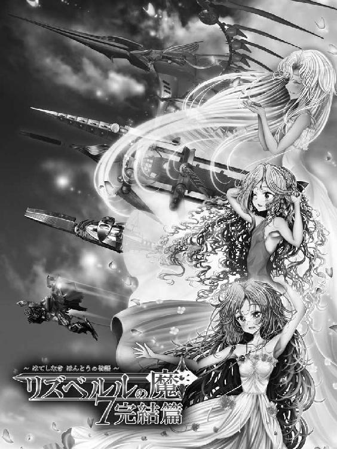
音に満ちた世界を、老人は一人歩いていた。
行きかう人々の話し声、足音、建物に当たって戻って来る雑音、鳥の囀り......生き物の気配。
それら全てが異なる響きとなって鳴り渡り、世界は輝き、潤っている。
老人の存在は、その中にあって一点の欠落であった。色も無く、音もしない。
今にも倒れ息絶えそうなその姿を、しかし輝きの中で生きる人々は気にも留めず、ただ世の中は日常の名の元に動き続けた。
眼前で瞬く様に、記憶が弾ける。
霧深い森の中、地の底から湧き上がる様に現れ身を起こしたその獣は漆黒をして、それこそ今の老人の様な欠落そのものの権化であった。
それはこの世界を飲みこまんとする、虚無の尖兵。
老人はただ一人、漆黒の巨人を駆り立ち向かう。
獣に斬り込む黒き風は、白い霧の中に穿たれた穴の様ではあったが、しかし光を受けて美しく輝き、同じ黒でも獣とは対照的である。
黒き弦奏鎧が振りぬいた剣は、獣の頭を一太刀の元に胴から切り離す。咆哮とも断末魔ともつかぬ唸り声がして、獣の頭は黒々とした飛沫を上げながら、それでも一矢報いようと弦奏鎧に牙を立てた。
金属が引き千切られる音と共に、剣を握った弦奏鎧の右腕が地に落ち、老人はその時、あるいは死んだのかもしれなかった。
気付くと老人は彷徨っていた。
己が命をかけて挑んだ獣との戦いで、自身がそこにあると言う力......王の時代の言葉をして、デュオンと称される存在の力の全てを使い尽した老人は、最早何処にも居ない者となっていた。
時間と言う名の楔から解き放たれた老人は、時に未来へと赴き、時に過去を彷徨い歩いた。
それぞれの場所で希望ある者達と関わりを持ち、一時は旅の一座に身を寄せて、託せる物は全て託し、遂に現在へ帰る事は無かった。
老人は常々思ったものだ。自分は何者でもない、何かになれなかった人間であると。
たゆたう様に生き、その一生には何の価値も無い。そして何より、その事に自分は悲観してすら居ないのだと。
しかし、静謐なる森を汚す虚無の獣と対峙した時、老人は剣を執る事を選んだ。
この獣を討つ事こそが、自分がこの世に招かれた理由であり、使命なのだと悟った。
老人は願った。
最期にこの胸に宿った勇気よ......その一滴でも良い。
誰かの元に届き、その背を押す力となってくれ。
そして願わくば、虚無をも包み込む光となってくれと。
最早一人の老人ですら無いその者が、最後の願いを糧に尚も歩き続けていると、ふと眼前に歩み出るものが居る。
それは灰色の毛並みをして、澄んだ空の様に青い瞳の猫である。
猫はじっと老人を見つめ、ヒゲを揺らすと、からかう様な声で小さく鳴いた。
待て、而うして希望せよ。
その者はゆっくりと頷き、そして囁く。
「......デュオンの戦士達よ、私は待つ。この時空の果ての始まりの場所で......私の託した希望が芽吹き、世界を光で照らすその時を......」
その言葉が音となって響く前に、その者の姿は消えている。
猫の姿も幻想だったのだろうか、まるで初めから存在しなかった様に......ただそこには、希望だけが残されていた。
ここから先は、全てあなたの頭の中で起こる出来事だ。
あなたが踏んでいる冷たい床も、あなたが吸い込むこの少し埃っぽい、けれども決して嫌な感じでは無い不思議な空気も、全て想像上のものである。
想像と創造を区別する事に意味などない。少なくともあなたがこれまで追い求め、焦がれてきた情景が〝ほんとうのもの〟である事は、この私が保証しよう。
あなたが迷い込んだその場所は、沢山の書架が並んだ広い空間。
そこに収められた書物は、一見整然としては居たが、表面上綺麗に押し込めたまま放りっぱなしと言った雰囲気で、場所によっては白い埃が積もっている所もある。
書店だろうか、とあなたは思い、しかしすぐに気付いた。此処は図書館なのだ。
「そう、ここはほんとうの図書館。いらっしゃいませ......お久しぶりですね」
急に声をかけられて、あなたは驚き振り返る。
そこにはいつの間にか、一人の男が立っていた。
影が動いているのかと言う様な黒い服に身を包み、滑稽だがそれが何とも雰囲気に満ちていて、この場にとても相応しい装いの様に思える。
そうだ、と急にあなたは気付く。自分はこの図書館に今初めて足を踏み入れた訳では無いではないか、と。
そしてあなたは、勿論この男の名を知っている。
彼は......コルグストム。この図書館の司書......の様なもの。
「あなたは幾度目かの導きにより、またしても今、この図書館を訪れた。ふふ......物語の言葉で言うならば、あなたは招かれたのだ」
コルグストムは何時に無くそんな冗談を口にして、薄い笑みを浮かべる。
あなたはごくりと喉を鳴らす。急な緊張で手が汗ばんだ。
何処からか視線を感じる。それは、そう......すぐ傍にある、あの本棚から......。
「そしてあなたは、これより重大な使命を帯びて、赴くのです。この本を通じて、遠く遥かな理想郷......エンダージェン国へと」
コルグストムが、今まさにあなたが釘付けとなっている本棚から一冊......本を引きぬく。
軽やかな手つきであなたの前に差し出されたその本は、赤い装丁に金の装飾が美しい、竜の紋章が描かれた本だ。
「さあ、お取りなさい......招かれし者よ」
あなたは何者かに操られる様に、その本へと手を伸ばし、そして......。
物語が始まる。
エンダージェン国のどの街とも接し、それ故に最も人の領域から遠ざけられた禁忌の森を、一人の騎士を乗せた白馬が駆けていた。
その視界を流れていく薄く霧がかった風景は、進むほどに濃さを増し、むせ返る様な緑の空気はまるで進入を禁ずる様に白馬の足に絡み付く。
薄らとした木漏れ日を受け、白銀かと見紛う様に輝く見事な馬は額に立派な角を持ち、その瞳は知性を感じさせる程澄んで、騎士の命ずるままに駆けるのだった。
愛馬と共に風となる琥珀色の髪をした青年は赤い外套を身に付けて、霧の中に鮮やかな色彩を散らす。
翡翠の様な澄んだ瞳は鋭さと優しさを湛え眼前を見据え、その背では魔を帯びた剣が馬の脚と合わせて揺れている。
彼の名を、フィオルド・トラバス。
豪剣の使い手と称されるアルバトリス筆頭騎士にして、時期アルバトリス剣主継承候補でもある。
王の掟により立ち入りを禁じられたこの森をフィオルドが行くのには理由があった。彼は一つの使命を帯びているのである。
フィオは周囲の獣の気配を敏感に読みとりながら、出立前に父と交わした会話を思い返していた。
「シェラダン剣主ノルアード殿は、次のエンダージェン国議会で危うい立場に置かれそうだ」
息子の反応を窺う様に呟いて、父オーランド・トラバスはフィオルドにその日の新聞を差し出した。
受け取ってすぐ目に入った一面で、フィオルドは成程と納得する。否応無く目に留まる太文字で、セリオラ解放と並んでいた。
セリオラの街の剣主、ウルグス・ネスラが水門の儀に失敗し、結果として街が沈んだ事は記憶に新しい。
街の名の由来ともなるセリオラの花の美しさで知られる街が、黒水に飲まれた。
その衝撃はエンダージェン全土を震撼させたが、本当に国を驚かせたのはそれからの事だ。
ウルグス・ネスラはシェラダン剣主、ノルアード・フィレントアの協力の元、王の結界によって封じられたセリオラの街へと突入し、見事失われた聖鍵を取り戻したばかりか、街を満たしていた黒海を退け、セリオラの街を解放したのである。
この功績に失墜していたウルグス・ネスラは名を上げ、代わりに矢面に立たされたのはノルアードだった。
「ノルアード様は騎士の中の騎士......立派なお方だ。彼が居たからこそ、セリオラの街は解放された。それがセリオラの民にとってどんなに救いになっただろう......僕は彼らを支持する！」
フィオルドは父の目を見据え、強く言葉にする。
そう、セリオラ解放に尽力した者達の噂は、既にエンダージェン中に広がり、囁かれていた。
伝承に語られる、白銀の竜。天舞う音色ヴィルフォーナ。
人々は噂する。セリオラが解放に至ったのは、シェラダンが所有する球の印の弦奏鎧、ヴィルフォーナの活躍あってこそ。
そして、その影に黒き魔人の姿あり......と。
「フィオよ、お前の言う事も一理ある。しかし、この国は王の定めた秩序によって成り立っている。セリオラは黒海に沈み、街は王によって封じられた。本来であれば、結界の中で長い時をかけてセリオラの街は浄化される筈だった。土地を満たしていた黒水が引いて初めて、再び人の住める場所として還って来る筈だったのだ。それは王が定めた掟......しかしノルアード殿はその掟を破った。王の理を乱すは秩序を乱すも同じ。剣主として、王の掟に背く事は重罪......判るな」
オーランドの重々しい言葉に、フィオルド......フィオは唇を噛んで俯く事しか出来ない。
フィオがノルアードを信じる気持ちが正しいとするなら、王に忠誠を誓うオーランドの言葉もまた正しかった。
間近に迫った国議会は、解放されたセリオラをどう扱うかが焦点となって論議されるとの名目だったが、そこでウルグスとノルアードが糾弾される事は間違いない。
フィオの耳にもきな臭い話は入って来ていたし、世間にはノルアード派を支持する声と同じくらい反対派が溢れている。
中には球の魔の力を誇示する為に、ノルアードがウルグスを唆したとする者まで出始める始末だ。
ウルグスは挫ける事無く立ち上がり、結果セリオラを救った英雄と持ち上げられる一方で、ノルアードが王の掟を破った大罪人と囁かれるのには、常日頃からシェラダンは球の魔の技術を秘匿しているとの噂が囁かれていたせいもあるだろう。
皆勝手だ、とフィオは憤慨する。
ノルアードがどんな人かも知らないで、勝手なことばかり言って彼らを責める。
そう思う度、フィオの心は嵐に見舞われたかの如く荒立ち、そしてかつて旅の終わりに訪れたシェラダンの思い出を振り返り、同時に安らぎを覚えもした。
竜の試練を求め旅をした、懐かしい日々......シェラダンで出会い憧れたノルアード、噂の魔人の正体である黒髪のジン......そしてあの女の子。
ヴィルフォーナの封印の魔女、リズベルル......。
彼女が今、世間の心無い噂で胸を痛めているかと想像すれば、フィオは何も出来ぬ自分が歯がゆくて堪らないのだ。
「時にフィオよ、近頃禁忌の森から得体の知れない獣が街に降りてくると言う話を聞いているか」
何故急にその話を、とフィオは父を怪訝そうに見上げ、こくりと頷く。
昨今夜な夜な遠吠えが聞こえたかと思えば、あの霧深い森から見上げる程もある黒い獣が現れて、家畜を襲い、畑を荒らし、建物を壊していくのだと言う。
話半分に聞いては居たが、目に見える被害は確かに出ていて、騎士達の間でも早急に対策を練らねばならぬと話題になっていた。
「お前はあの森に詳しいだろう。一つ噂の獣とやらの正体を調べて来てはくれぬか」
確かにフィオは、時折あの森で馬を走らせていたが、それは父には秘密の遊びのつもりだった。
何せあの森は王によって立ち入りを禁じられているのだ。言い換えれば小さいながらもフィオは王の掟に反しているとも言え、あの森を歩きまわる事はまるで自分がノルアードを慕う証の様にも思え、フィオは密かに胸を弾ませていたものである。
まさか父にばれていたとは思いもしなかった。罪悪感を覚える代わりにフィオは少し愉快な気持ちになって、父の言葉にもう一度頷いている。
「きっと獣の正体を暴いてくるよ。けれど父さん、聞かせてくれ......もし国議会でノルアード様が不当に糾弾される様な事があれば......父さんはどちらの味方に？」
「アルバトリスは、どちらにもつかない。ただ正義の元に全てを見定めるまで」
父はきっぱりとそう言って、フィオに背を向け、窓の外を眺めた。
明るい空が広がり、その光を受けて父の背は大きな影の様に映る。
「この任務の後、お前には休暇を言い渡す」
思いがけぬその言葉に戸惑うフィオ。父は静かに振り返って、ふっと悪戯っぽい笑みを浮かべ、言うのである。
「その間、お前はアルバトリスの騎士では無い。何をしても自由だ。正義の名の元に、お前自身が信じる大切なものを守れ」
参ったな、と照れ臭くなりながら、しかしフィオは唇を持ち上げて、深く頷く。
「......承知！」
そしてフィオの意識は、霧の中を駆ける馬上へと戻る。
緑の間に隠れ、ひそひそと内緒話をする様に囁いていた獣達の気配が不自然に消えた。
かと思えば、不意に木陰から聞こえるのは獰猛な唸り声。何か巨大なものが這う様な音。
次の瞬間、霧を塗りつぶして現れた黒々とした影に、フィオは息を飲む。
「止まるな、行け！」
フィオが合図すれば、白馬はその影に臆すること無く足を速める。
襲歩する馬上で背中の剣に手をかければ、それはフィオの指に吸いつく様に触れた。
トラバス家に伝わる封印の魔剣。片時も離さず魔を注ぎ、今ではその冷たい感触を体の一部の様に感じる、フィオの相棒だ。
ごう、と風を喰らい、影が動いた。
黒く、暗く霧の中に穴を穿つ、それは獣であった。
初めフィオは蛇だと思った。その正体は、この禁忌の森で肥え太った大蛇と見た。
ならば首を落とすまでだ、と剣を構えるフィオの前で、獣は裂けんばかりに顎を開いたかと思えば、飛沫を上げて次に狼の様な形へと変ずる。
馬の背を蹴り飛び上がり、フィオはその牙をすんでの所でかわす。視界の隅を馬が駆けていくのを見送ると同時に、魔剣を天へと掲げ叫ぶ。
「我が敵を断て、バルハート！」
主の命に応え、魔剣の中に封じられし鎧が答える。
フィオが振り抜いた魔剣の刃が獣を貫き、それと重なる様にして虚空から現れた巨大な剣が続いた。
大小二つの刃に斬り裂かれ、獣は黒々とした飛沫を上げてのた打ち回る。
存外に粘度の低いその液体が、地面に落ちた傍からみるみるうちに蒸発するのを見て、フィオはごくりと喉を鳴らした。
血では無い。
この獣の体内には、黒水が巡っているのだ。
その事に気付くのと、斬り落とされた獣の首から新たな頭が映え出してフィオに襲い掛かるのとは殆ど同時。
しまった、と思うフィオの思考を、鮮やかな光が一閃する。
矢の様に飛来した金色の巨剣が、正確に獣の頭を射抜き、地面に縫い付けていた。
二度も頭を失くした黒い大蛇は森の木々をなぎ倒して暴れたかと思うと、ばしゃりと液状になって地面に沁み込み消えていく。
濡れた土が乾いて行く様と、地に突き刺さった巨剣を見つめ、フィオは音を立てて踊る心臓を宥めようと深く息を吐く。
金色の巨剣は、見るからにガストルフ級弦奏鎧の得物。それも、恐らくは宝剣の一振りであろうとフィオが驚けば、霧の奥に巨大な影が三つ浮かぶ。
現れたのは、果たしてガストルフ級弦奏鎧。
曲線を描く黒い装甲に、金の縁取り。その美しさは一目で鎧の格を表していたが、何よりも目を引くのは胸の意匠。
赤い宝玉が表す所がフィオの見当違いで無いとすれば、それが示すはエコーデュオンの印。
ごくりと喉を鳴らして魔剣を鞘に戻すフィオの前で、金色の剣を引き抜き背に収めた黒き球の弦奏鎧は重々しく膝を付き、ゆっくりと胸部を持ち上げる。
その奥から現れた男は、このエンダージェン国には珍しい黒髪黒眼。
「......またしても、逃がしたか」
眉を潜めて呟くその男を、フィオは知っていた。
「シズマさん！」
思いがけぬ再会に驚きと懐かしさを込めて、フィオは男の名を呼んだ。
かつて竜の試練に挑む折、この禁忌の森で一度出会った男である。
シェラダンの黒き魔人、ジンの親友で、このエンダージェン国を影から支える王の使者であると言うその男は、フィオの顔を見て不思議そうに首を傾げる。
「お久しぶりです、シズマさん。フィオです。フィオルド・トラバス、以前シェラダンの近くのこの森でお会いした」
「あの時の少年か。立派になっていたから、気付かなかった」
シズマはそう言って不器用に笑うと、黒い弦奏鎧から飛び降り、ゆっくりと近づいてくる。
頭の先からつま先まで黒尽くめのその装いは、この霧の中だと特に目立った。
「先程の獣......」
「見たか」
「ええ、頭を落としても何でもない様だった。それにあの血飛沫は......」
「黒水だ」
シズマの声色は静かだったが、それ故にフィオの胸をぎゅっと鷲掴みにする様な迫力があった。
剣主の命であの獣の正体を探りに来たのだとフィオが説明すると、シズマは深刻気に目を細める。
「街まで降りているのか......厄介だな」
「奴は、不死なのですか？」
「それすらも判らん。少なくとも、あいつを殺せた者は我々の中にも居ない。フィオ、君も出来れば奴には近づくな。普通の方法では倒せん」
言い切られてしまうと少なからず反感めいたものを感じはしたが、先程目にしたものを思えば頷く他無い。
シズマはフィオの目をじっと見つめ、何かを言いかけるが、声に出す寸前で首を振り、黒外套を翻して背を向けた。
「時が来るまで、この森には近づくな」
「その時は、いつ......？」
「もう、すぐだ。また会おう、デュオンの戦士よ」
胸部の装甲が閉じ、弦奏鎧が立ち上がる。
三騎のガストルフ級が深い霧の向こうに去って行くのを、フィオは黙って見送った。
やがて入れ替わる様に馬が戻って来て、フィオはその無事に安堵する。
優しく首を撫でてやりながら、けれど胸中で嵐の到来を予感していた。
これは夢だ、とぼんやりとした思考の中、ウルグスは気付く。
美しい故郷の景色、今は無き安らかなる光景......それらはあの日、ウルグスの失敗によって失われてしまった尊いもの。
あの日、皆が声援と共に送り出してくれる中、ウルグスの胸は希望と好奇心に満ち、自分が儀式に失敗する可能性等微塵も持ち合わせてはいなかった。
セリオラの守護鎧ヘヴレミオンと共に水門の前に立ったウルグスは、古より伝えられた掟に従い、王の宝剣、聖鍵グルディアールを用いて門を開く。
ああ、この先は見たくない......夢の中で展開される過去の記憶に抗う様に、ウルグスは体を震わせる。
開かれた門の先に覗く奈落。その深遠より現れし、禍々しい黒き虚像。
それはまるで、黒水で出来たヘヴレミオンの写し身。
これが儀式か、と驚きながらも果敢に立ち向かうかつての自分の姿に、ウルグスは絶望を覚えていた。
結末の見えた戦い。やはりその夢でも、激しい戦いの末、勝者は虚像......黒海の方だった。
それから先の現実を、ウルグスはおぼろげにしか覚えていない。
次に気付いた時、街は黒水に沈んでいた。
駆け付けた騎士達によって命は救われたものの、聖鍵グルディアールを失い、儀式に失敗し、ウルグスの心に光は無かった。
自分のせいで、あの美しい土地を、民の平穏な生活を失う事となった。
その自責がウルグスを攻め立て、夢の中でまたしても気が狂いそうになる。
「この世界は、いくつもの可能性の束で出来ている」
彼と出会ったのは、方々の街へ散り散りになった民達に混じり、遠くシェラダンに身を寄せていた、そんな時である。
このエンダージェンに珍しい黒髪黒眼をしたシェラダンの騎士、ジンは、自分が天舞う音色ヴィルフォーナの騎士である事と、エコーデュオンから招かれた魔である事を明かし、世界の有り様を話してくれた。
「このエンダージェンは、可能性の坩堝だ。遍く存在する可能性から最良なものを引き寄せる事が出来るのは、今を見て、そして明日を見る事が出来る人だと俺は思う。貴方は、自分を責めるよりもまず、もう一度信じてみる事から始めなくては......自分自身を」
ジンの慰めは、ウルグスには届かなかった。
あの時のウルグスは自分が救われる事に必死で、球の魔の秘密を知るや否や、考える事は一つだった。
魔人曰く、エコーデュオンの力は遍在する力。
内と外、現在と過去、過去と未来......その全てを行き来する事が出来る、可能性......。
球の魔の力で時空を超え、黒海の源と目されるエコーデュオンに攻め入り、根源を断つ。
ジンの言葉から歪んだ願いを見出したウルグスは、黒海によって沈む事の無い最良の可能性の上で成り立つ過去のセリオラへと帰ろうとした。
今にして思えば何と身勝手な願いだろうと思うものだが、その時のウルグスはそんな夢物語に縋る事しか出来ず、結果的には球の魔の力で未来を予見すると言うシェラダンの観測塔に忍び込み、エコーデュオンへと渡る事に成功したのだ。
あの時......自分は本心では何を考えていたのだろう。
観測塔の最上階で、その核たる疑似球体を前に......そう、あの時の事はどうしてか記憶が途切れ途切れで、微かに覚えているばかりなのだが......何者かの声を聞いた気がした。
こちらへ、と招く声。
あれは、現実から逃げようとする自分の内なる声だったのだろうか......いや。
王の使者、シズマが語る所によれば、観測塔の疑似球体はその名の通り仮初のもの。球の魔に極めて性質を似せた別の力だ。
ウルグスが結界を超える事が出来たのは、シェラダンの土地に備わった力と、以前にジン達が時の流れに干渉した際に生じた波紋が原因である。シズマはそう言った。
しかし、本当にそうだろうか。
何者かが、自分を手引きし、外界へと向かわせた......いつしかウルグスは、密かにそう考える様になっていた。
その何者かは、儀式の折に相対した、あの虚像では無いのか、と......。
つまりそれは、自分自身の別な可能性。実際に、エコーデュオンに赴いた自分はあれと似た性質のものに変じていたでは無いか。
「もしも貴方が、貴方にとって都合の良い可能性に留まって、本来貴方がいるべき時間を去ってしまったら、残された人々はどうなりますか。セリオラの街の民は、貴方の民は、導いてくれる者を失い、ばらばらになってしまう」
故郷から遠く離れた外界、エコーデュオンで、ウルグスはヴィルフォーナの魔女リズベルルにそう諭された。
結界を超えてウルグスを追ってきた彼女は、白銀の竜と共に光そのものの様に見えたものだった。
「ほんとうの貴方は、強くなくても良いんです。皆に理想を見せる事が出来れば、それで良いんです」
リズベルルと共にエンダージェンへと帰還したウルグスは、ノルアード達の力を借りて聖鍵グルディアールを取り戻し、再び挑んだ儀式で今度こそ虚像を退けて、ヴィルフォーナの活躍によって黒海は門の向こうに追放された。
全てが終わった時、何もかもを失ったセリオラに、リズベルルは希望を招いてくれた。
それは、エコーデュオンからやってきた球の魔であり、ウルグスも良く見知った美しい花......。
外界から招かれたセリオラの樹は、復興に励む民達にとって今や希望の象徴となっている。
夢の中で、ウルグスは何時しか一面に咲き誇るセリオラの中に居た。
それは、故郷と外界とを繋ぐ絆の様に、ウルグスには思える。
一度は憎んだエコーデュオン......本来であれば決して交わる事の無い二つの世界は、本当に別々のものなのだろうか。
遥か昔には、二つの世界は互いに行き来して、交流があったのかもしれない。
セリオラもまた、そうしてこの国に渡って来た花なのかもしれない。
ウルグスはそんな事を時折思う。そうであったら良いと、願う。
一面の花の中で、艶やかな黒髪が靡き、懐かしき少女の笑顔が弾ける幻想を垣間見て、ウルグスはふっと今この時の自分に戻って来る。
瞼の向こうに明るい日差しを感じて、今日は晴れか、と思い、そしてベッドの中で小さく息を吐いた。
胸に残る夢の名残を、もう少しだけ味わっていたくて、瞼を開くのが惜しい。
長い回廊を抜けた先に、強い光がある。
体をふわりと包み込む様な温かな日差しが天より射して、見上げればそこには青空が広がっていた。
吹き抜けなのかと思えば、空には一点の眩い光源が昇り、それが人工物である事に気付いて、ピーターエルは感嘆の声を上げる。
作りものであるが故に、その光が照らす庭園は全てが計算しつくされた美であり、完成されていた。
その日ピーターエルは、奇妙な友人に招かれて、驚くべき事にエンダージェンの遥か上空に存在すると言うその不思議な庭......ユゴスミネラへと招かれていたのである。
「なんと美しい庭なんだ......」
「お気に召しましたかな」
「ええ、とても！ お招きいただきありがとうございます。エイフォンさん」
隣を歩く紺碧のローブを纏った男はふふ、と穏かな笑みを浮かべて、庭園の中を歩いて行く。
目の前の景色に目を奪われながら、ピーターエルはその隣に付いて歩いた。
「エイフォンさんには感謝しています。貴方が見出してくれたからこそ、今の私がある」
「大袈裟ですよ。貴方の持ち得る純粋な魂が、正当な評価を得たまでの事。聞く所によると、また一つ作品の出版が決まったとか」
「もうお耳に入っていましたか！ はい、大手の出版社で、私が初めて作品を持ち込んだ所でもあるのです。その時は、断られてしまいましたが」
「最近の貴方の活躍を見れば、その選択が如何に愚かであったか思い知った事でしょう。意地悪で少し多く報酬を要求しては如何かな」
「いえ、良いんです。何にせよ、私を認めてくれた訳ですから」
少し照れくさくなり、頬をかきながら言えば、エイフォンは唇を持ち上げて、お人がよろしい、と肩を揺らして見せた。
そうして歩くうち、庭の中に急に開けた場所が見えてきて、ぽつりと奇妙な扉が現れる。
それまでただ静かに付き従って来た召使いの少女、たしかミルゥとか言った......が主人の手を煩わせまいとやって来て、扉に手をかけた。
「こちらへどうぞ、ピーターエル様」
作り物の様な均等の取れた顔に、およそ表情らしい表情は浮かばず、ただ機械の様にミルゥは呟き、扉を開く。
此処は、と視線だけで問えば、エイフォンは含みのある笑みを浮かべて。
「お祝いと、私達の友情の証に......貴方と分かち合いたいものがありましてね」
「光栄です、エイフォンさん。それは、一体......？」
扉を潜ると、そこはこじんまりとした白い部屋だ。
閉められた扉、その内側も白で、周りをすっかり囲まれて、ピーターエルは奇妙な浮遊感めいた感覚を覚える。
そして、その部屋の中央に張り出したこちらも白い柱の上に、その薄汚れた物体は鎮座していた。
「こ、これは......」
何か奇妙な生き物......なのだろうか、名状し難き存在が描かれた粘土板で、一目見てピーターエルは込み上げる吐き気に顔を顰めて視線を逸らすが、隣に立つエイフォンを窺えば、いつもの底知れぬ笑みを浮かべたままで、彼を失望させてはならぬと再び粘土板に視線を向けると、今度は先程の感覚は襲って来ず、気のせいだろうかと首を振る。
白い箱の中にある、一点の汚れ。そこに描かれているものは、ピーターエルの理解の外にある存在であった。
膨らんだ頭から何本もの触手が伸び、胴体は禍々しい竜の様な形をしていたが、そこから生えだした翅は蝶の様なそれで、およそこの世の生き物とは言い難い。
お世辞にも美しいとは言えぬ品だが、しかし奇妙に人を引き付ける魅力があるのも事実だ。
一目見た時の感覚は、その強烈に引力めいた力を敏感に察しての事かもしれぬ、とピーターエルは自惚れる。
「一体誰の作品なのですか......私は、こんな言い知れぬものは初めて見た......」
「そうでしょうとも。実はしかるべき機関で鑑定した所、これはこの世のものでは無かったのですよ」
「この世のもので、無い......？」
重々しく頷くエイフォンに、ピーターエルは深みに嵌る様な興味を覚える。
そして、今更ながらにこの友人の本質を思い出すのである。
己が目に適ったこの世の価値ある宝を広く所有する......彼曰く、蒐集家。
ピーターエルとて、彼の目に留まったからこそ、今の作家としての活躍があると言える。
「作られた年代、方法、その素材......何もかもが測定不能。困り果てた研究者達が、外界から齎されたものである可能性が高いとの結論を下す程です。そして、それは正しい」
エイフォンが語る言葉の迫力に、ピーターエルは急にその場から逃げだしたくなって振り返れば、そこには無感情に立つミルゥがいる。
無感動に瞬く目は、ともすれば底闇の暗い情動が潜んでいる様にも思え、ピーターエルはそちらに逃げる勇気を失くし、また振り返れば、否応無く目に留まるのは粘土版。
なんだ。
なんなのだ、これは。
握った拳が、汗で滑る。
「こ、ここに描かれているものは何だと言うのです......」
「トゥールウ、ですよ」
「トゥールウ......」
その名は、昨今では良く聞く名だ。
天舞う音色ヴィルフォーナの活躍で何かと話題に上がるシェラダンの街。
確かその土地に古くから伝わる竜の名が、トゥールウである。
「如何にも。しかしトゥールウは、ただのお伽噺や伝説に非ず。それはかつて外界より招かれた、人知を超えた存在」
「魔......なのですか」
「いいえ」
エイフォンは首を振り、ピーターエルの瞳をじっと覗き込んで、まるで何かの宣告であるかのように囁く。
「神、なるもの」
「神......、トゥールウ神竜......」
「そう、それは魔を超えた魔。観念的邪悪なるもの......外なる者、あるいは旧支配者と呼ばれる、夢幻の狭間で死せる存在、即ち......神」
「その、旧支配者が......実在している、と」
震える声で尋ねると、エイフォンはふっと笑顔になって、柔らかく頷いたので、ピーターエルもまた引き攣った笑みを返した。
彼は本当にそれを信じているのだろうか。それともこれは何かの暗喩なのだろうか。
疑う心が鎌首をもたげ、しかしそれと共に、ピーターエルの胸には言い様のない好奇心が湧きあがっている。
「そう、トゥールウ神竜は今尚このエンダージェンの地下で眠り続けている......占星術、と言う古代の魔術をご存知かな。無論、貴方はそれを知らない筈だ。何故ならそれはこのエンダージェンでは失われた技術なのだから。かつて人々を照らし、見守り、時に翻弄した天の輝き。その動きは世界を変革する力を齎し、その並びには大いなる意味があったと言う。地下で眠るトゥールウ神竜の命の源もまた、その星であったのです。故に、星亡きこのエンダージェンで、不死なるトゥールウ神竜は甦る事が叶わなかった。その力は、１２の相反する不死なる力によって互いに封じられている......」
エイフォンの口から語られる、楽園の知識。
それはピーターエルの脳を刺激し、想像力をかきたて、今にも物語となって羽ばたきそうに渦巻く。
気付くとピーターエルは、体を戦慄かせ、せがむ様に頷いている。
一方で、不思議な心地に包まれて、首を傾げても居るのである。
自分はこの話を知っている。エイフォンから聞くよりも前に、誰かに教えられた事がある、と。
「死せるトゥールウ神竜は、夢を通じて素質のある人間に語りかけ、時にその人に力を与えると言う。その素質とは、芸術の〝センス〟に他なりません。即ち、この世ならざる世界を垣間見て、それを人が理解できる形に翻訳する事が出来る者達......そう、貴方の様な人物は、如何にもトゥールウの寵愛を受けるに相応しい人だ」
「だ、だから私に、これを見せたのですか......？」
「如何にも。貴方は......」
ふっと気付くと、ピーターエルは白い小部屋の外に立っている。
殆ど放心状態で、あれからどれくらい時が経ったのか判らない。意識が戻るや、わっと飛び上がり、振り向くとそこにはエイフォンとミルゥが並んでいて、不思議そうにこちらを見ているので恥ずかしくなる。
「すみません、何だか雰囲気に呑まれてしまって」
「判りますとも、あの作品は不思議な力を持っていますから」
「ええ......けれど嬉しいです。尊敬する貴方と、あの様な秘密を共有できて。そうだ、エイフォンさん。今度私の家に招待させてください。今日はそれを言いに来たんだった」
「それは光栄ですが、しかし......」
目を細めて困った様に笑うエイフォンに、またしても照れ臭くなって頬をかきながら、ピーターエルは頷いている。
「実は......ずっと私を認めてくれなかった父が、遂に理解してくれたんです。恩人である貴方の事を話したら、是非ともお会いしたいと」
「ほう、お父様と和解を......遂に貴方様の熱意が、お父様に伝わったのですね」
「父は、学者肌で、芸術には一切感心の無い人なのですが......少なくとも名が売れて来た事は評価してくれている様でした」
「良いではありませんか。それも親孝行です」
「ええ、それでどうでしょう。勿論、ミルゥさんも一緒に」
エイフォンの隣に立つミルゥに笑いかけると、彼女は表情を変えないまま小首を傾げて、主をじっと見上げる。
そんなミルゥの頭をそっと撫で、エイフォンは静かに頷き、微笑んだ。
遂に訪れたその日、エンダージェン国議会に出席する為、ノルアードとジンはマルセーレの街、美しき湖の上に浮かぶモンテギオム砦の中を歩いていた。
砦の中はやけに静まり返って、不自然な程ひっそりとし、緊張感で満たされている。
それもその筈、その使命故に街を離れる事の少ない剣主達が、一人の欠けも無くこの地に集うのだ。
街も、砦も、湖さえも、事の重大さを敏感に感じ取っている......ノルアードは長く敷かれた絨毯の上を歩きながら、そんな事を思う。
如何に国議会と言えど、エンダージェン中の剣主達が一堂に会するのは実に２７年ぶりとの事で、ノルアードが剣主を継いでからの事を言えば今回が初となる。
「ノルアード、ジン！」
会場となるホールの扉の前で待っていたらしいウルグスが、二人を見つけて笑顔になる。
その明るい表情を見て、ノルアードもジンも途端に気が楽になった。
セリオラが沈んでからと言うもの、塞ぎ込んでいたウルグス・ネスラだったが、街が解放されてからは復興の為に日夜努力を続けている。
以前よりも負担は増している筈だったが、そうした素振りを微塵も感じさせないのは、暗くなる暇も無いと言った所だろう。
友として、身を案じるよりも安堵が勝った。
「一度部屋に入ったのですが、どうにも居心地が悪くて出てきてしまいました。護衛はジン一人ですか？」
「うむ。あまり多くても、な」
「ウルグスは、俺じゃ頼りないって言いたいんだろ」
ジンが肩を竦めて冗談を言えば、ウルグスは顔を綻ばせて明るく笑う。
「シェラダンの黒き魔人を前に、そんな冗談はとても言えない。そうでは無く、リズベルルは一緒で無いのかと気になったのです」
「リズは友人達で集まってお茶会だ。今日はかなり責め立てられそうだからな、格好悪い所は見せたくない」
今度はノルアードが肩を竦めて、やれやれと首を振る。
今日の国議会の主役は、間違い無くウルグス、そしてノルアードになるだろう。
表向きは解放されたセリオラの今後が議題であったが、裏ではノルアードの失脚を狙う者達が動き出すのではともっぱらの噂だ。
それを十分に理解しているからこそ、三人はあえてその事には触れず、何でも無い様な口調で話を続ける。
「それにリズは、何にしても目立つからな。こう言う場を好む人でも無いし」
ノルアードが言うのは、球の魔を招く事が出来る、恐らくエンダージェンでは王を覗いて唯一の存在であるリズベルルの身を案じての事だ。
その力を狙う者の前では、彼女の存在は余りにも脆く儚い。その為に、リズベルルがシェラダンの騎士である事は未だ秘密とされていた。
しかしながら、数々の活躍はどうしても噂となり人から人へ伝わるものだ。
シェラダンの魔女の存在は、密やかに、今や真実味を帯びて国中で囁かれていた。
「私は、そろそろ彼女の存在を公にしても良いと思うのだけれどな」
何時まで経っても過保護なノルアードを諭す様に、ウルグスはそう言ってのける。
む、と眉を落とし、隣のジンを見れば彼も頷いているので、ノルアードは腕を組んでますます深く考え込んだ。
「あまり隠してばかりだと、逆に目立つと言う事もある。下手に勘ぐられるのも良くないだろう」
「むぅ......成程、成程」
そうしてノルアードは、二人に何か言い出そうと口を開き、言葉が出ない様でもごもごとして、ジンとウルグスがはて、と首を傾げる前で、たっぷりと時間をかけようやくぽつりとその言葉を口にした。
「こんな時に言うのも何だが、相談があるのだ」
「相談、ですか」
「それこそこんな時に、なのだが......こんな時だからこそ、俺も少し考える事があってだな」
「ふむふむ」
「つまりは......そろそろ身を固める時期なのかもしれん、と。そう言う事を近頃良く考える」
突然の言葉に、ジンとウルグスは顔を見合わせて。
それからいっぺんに噴き出して、腹を押さえ、次々に連鎖する笑いを堪えようと必死になった。
「はっはっは、遂にその気になったか、ノルアード」
「ああ、おかしい......いや、馬鹿にしている訳では無いのですよ。ほら、ジン。笑っては失礼だ。それに、我々だって人の事は言えない。ノルアードに先を越されてしまう訳だから」
「いや、その通り。しかしまあ、こいつの場合は相手を待たせ過ぎだからさ」
一頻り笑った後、ようやく冷静さを取り戻すと、ノルアードはすっかりむくれて眉を吊り上げているので、まあまあと二人は取り繕う。
「すると婚約発表兼、魔女の正体をお披露目......と言った感じになるのかな」
「ううむ、そんなに大袈裟で無くとも良いのだが。大体......返事を聞くまでは判らんし......しかし俺は本気だぞ！ 絶対に彼女をモノにしてみせぐえっ」
拳を握って高らかにそう宣言しようとしたノルアードは、背後からの強烈な一撃で舌を噛む。
カエルが潰れる様な悲鳴を上げてノルアードが振り返った先に立つのは、果たして顔馴染みの大男。
「わっはっは、扉の前で何をぶつぶつと話しておるのだ、ノルアード君」
ある意味で、この地上でノルアードが最も苦手とする男。リィガイムの剣主、ジャルバン・ドレッドその人である。
その隣にはポルストフルの老剣主、フェルナンド・レシモーの姿もあった。
ジャルバンとはリィガイム上空の亀裂退けるのに協力した事が縁で、フェルナンドとはセリオラ解放時に面識があり、今では二人ともノルアードの心強い協力者となっていた。
「こ、これはジャルバン殿......フェルナンド老もご一緒で」
「そこで一緒になってなぁ。同じノルアード派として、肩を並べて会場入りしてやろうと思っていた所よ」
「それは良い考えだ。我々もご一緒しましょう」
「と言っても、扉の目の前だからそうしない方が不自然だ」
ジンが茶化して言えば、改めてこんな場所で雑談していた事がおかしく、一行は穏かに笑う。
と、フェルナンドが深く息を吐き、扉の向こうを窺う様に目を細めた。
「反ノルアード派......恐らく今日仕掛けてくるだろう。敵は手強いぞ、諸君」
「敵、ではありません」
フェルナンドに頷き、しかし言葉では否定して、ノルアードは唇を持ち上げて、不敵な笑みを浮かべる。
その瞳の奥で輝く真の騎士としての自覚が、フェルナンドの頬を穏かに緩めさせた。
「我らが敵は、外界より来る黒海のみ。今日はその事を改めて宣言しに来たのです」
４人はノルアードの言葉に強く頷き、そして扉は開かれる。
その日エイフォンがレアンドルの街、閑静な住宅街の一角にある屋敷を訪れると、来客を待ち侘びたとばかりに飛び出してきたピーターエルは普段よりも高揚した顔で出迎えてくれた。
エイフォンと、その隣に付き従うミルゥとも握手を交わし、満面の笑みで一礼する。
「ようこそおいで下さいました、エイフォンさん。あの美しい飛行庭と比べれば恥ずかしい家ですが、どうぞくつろいで行ってください」
「お招きありがとう、ピーターエル殿。いや、なかなかどうして立派なお屋敷だ。貴方の尊い才能が此処で生まれ、育ったのかと思うと、成程趣がある」
「そんな......」
不思議と人を引き付ける魅力を持つエイフォンの声に、ピーターエルは思わず赤面し俯いている。
ふっと笑みを浮かべ、世間の称賛を集めても尚純朴なままでいる作家を羨ましくも思いながら、エイフォンは広い庭の方へと足を運んだ。
「庭を見せてもらっても良いでしょうか。先程から、この何とも芳しい香りが気になりましてな」
「ああ、きっとモクリアの花の香りだ。それでしたらご案内しましょう。けれどその前に、どうか父を紹介させてください。貴方の話をしたら、大変興味を惹かれた様で、この日を心待ちにしていたのです」
「ほう、失礼だがお父上は......」
「ええ、骨董の類に目が無いのです。きっとエイフォンさんとも趣味が合う。父さん、ちょっと来てくれないか、父さん！」
ピーターエルが開かれた扉の向こうに声をかければ、程無くして一人の男がやって来る。
最近になって和解した息子が少年の様にはしゃぐのに、少しばかり顔を顰めながらも、口元には笑みを湛え、ゆっくりと表へ現れた。
「そう大声を出さずとも聞こえておる。おや、お客様が見えられていたのか」
「今から庭を案内する所なんだ。その前に父さんを紹介しておこうと思ってね」
「おお、そうか......これはこれは、息子が何やらお世話になったとか......」
男が手を差し出すが、エイフォンは柔らかな笑みを浮かべたまま動かない。
ピーターエルとその父が彼の様子に戸惑っていると、エイフォンは不意に肩を揺らし、次に笑い出したので、二人は言葉を失くしてしまった。
「ふっふっふ......はっはっはっはっは！ いや、これは失礼......ご無沙汰しております、ナハトムベル・グラン学長殿」
まるで闇が裂け、その向こうに更なる奈落が広がるかのように、エイフォンの口がにやっと暗い笑みを浮かべる。
名を呼ばれた父親......ナハトムベルはびくりと体を強張らせ、眉を潜めてエイフォンの顔を覗く。
その顔に理解の色が浮かぶや、見る見る青ざめていくナハトムベルを見て、ピーターエルは困惑する。
「どう言う事、父さん。エイフォンさんと知り合いだったの？」
「エ、エイフォン......何故、何故今になって......」
父の様子が尋常でない事を知るや、ピーターエルの疑問はエイフォンへ向く。
一体過去に、父と恩人の間に何があったのか。
またしてもピーターエルの胸には、暗い好奇心が湧き上がるのである。
「名を覚えてくださっていたとは、光栄の極み......そう、かつて学長殿の姦計に嵌り、異端の烙印を押されて学会を追われた哀れな男が、こうして舞い戻ったのです」
「き、貴様！ ええい、誰か、誰か来てくれ！ この男を敷地から摘まみ出せ!!」
ナハトムベルは顔を赤くして屋敷に叫んだが、それに応えて現れる者は誰一人居ない。
やけに静かな風が辺りを通り過ぎ、ようやく扉が動いたかと思えば、そこから現れたのは一人の可憐な少女である。
一体いつの間に屋敷に忍び込んでいたのか、何やら大きな美術品を抱えてとことことやってきて、その持ち物をエイフォンに手渡した。
「ご苦労、ミルゥ......」
エイフォンが召使いを労う様にその頬を撫でれば、ミルゥは相変わらずの無表情で、しかし瞼を眠たそうに落として反応を示す。
今しがたエイフォンに渡されたものが、ミルゥの手によって自分の屋敷から持ち出されたものであると気付いた時、ナハトムベルははっと目を見開いて、声を荒げている。
「な、何故それを！ どうやって、一体何時の間に持ち出したのだ!?」
「おお、これがニトクリスの鏡......夢と現を写し出し、異界の情景を浮かべると言う、外界より齎されし神秘の魔鏡！」
「貴様、それをどうするつもりだ！ その鏡はお前の扱える様な物では無い！ 身を滅ぼす事になるぞ、エイフォン！」
叫び、エイフォンに掴みかかろうとする寸前、軽やかに躍り出たミルゥがその細腕に似合わぬ腕力でナハトムベルを突き飛ばす。
無様に転がり、もう少しで頭を打ちそうになる所を息子に助け起こされ、ナハトムベルは怯えた瞳で目の前に立つ二人を見た。
その口から、震えが漏れる。
「ま、まさか......エイフォン、貴様......知っているのか」
「何を、何を言っているの、父さん!?」
「お、お前を陥れたのは私の意志では無い！ お前は知り過ぎた。あまりに探求に貪欲すぎたのだ!! 私を憎むと言うのなら、仕方が無い。罪を償えと言うのなら従おう!! しかし、しかしそれだけはいけない!! かの墓所で眠る死せるトゥールウを蘇らせる事だけは!! それは、世界の破滅を意味するのだぞ!?」
「ふっふっふ、蘇らせる？ 何を的外れな事を......星亡きこの国で、かの邪神は夢見るままの無垢なる存在。貴方は、失格だ」
冷たい、見るものを歯牙にも掛けぬその視線に、ナハトムベルは悲鳴を飲みこみ、そして、今ようやく気付いたと言う様に、ミルゥの姿を認めて目を見開く。
まさか、まさか、とその口の中で震える声がか細く無様に囁かれ。
「金色に輝く黄昏の瞳......み、導く......者......っ！ 何故邪神に与する男と共に......!!」
「用件は済ませた。戻るぞ、ミルゥ！」
「仰せのままに」
紺碧の外套を翻し、エイフォンは哀れなる親子に背を向ける。隣に付き従うミルゥは主から鏡を受け取って、大事そうに胸に抱く。
それを引きとめる声がしたのは、彼らが屋敷の門をくぐるその寸前であった。
「お待ちください、エイフォンさん！」
立ち止り、ゆっくりと振り返れば、肩で息をして、未だ困惑をその瞳に浮かべたピーターエルが、悲痛な表情でエイフォンを見つめている。
その唇が、怖々と動き擦れた声を漏らす。
「かつて、父と貴方の間に......何があったのですか」
「......、」
「答えてください、エイフォンさん！ 貴方は......貴方は私を見出し、これまで何度も手を差し伸べてくれたでは無いですか！ あれらは、父への復讐の為になされた事だったのですか！ 貴方の心を動かしたのは、私の作品では無かったと言うのですか!?」
「復讐、ふふ......成程、貴方には私が愚かな復讐者に見えると」
「違うと言うのなら、どうかそう仰ってください！ 私は、私は貴方を......！」
ぎゅっと己が胸元を掴み、唇を噛みながら見つめてくる青年に、エイフォンは小さく息を吐いて、やがていつもの、穏やかな......しかし底知れぬ笑みを浮かべる。
それが希望なのか、あるいは絶望を意味するのか判らずに、ピーターエルはじわりと瞳を潤ませ、ただ友と信じる者の言葉を待った。
「確かに、正直に明かせば......復讐を原動力に生きた頃もあった。あの頃の私はただ貴方のお父上が憎く、この世界が憎く、そして何よりも己が憎く、その想いが、苛烈な意志となってこの肉体を動かし、捨鉢になって調査に向かった先で、私は出会ったのです」
「......エイフォンさん」
「この世で最も美しいと、この私が信じる存在と。そして私は、この世界を愛おしいと思う様になった」
そうしてエイフォンは、隣に立つミルゥの顎を、優しく撫でる。
「私はこれまでに得た知識と、財と、この鏡を含めた数々の遺物を用いて、トゥールウ神竜の力を手に入れる。その力の奔流、即ち竜脈は、この国に根を張る王の代わりとなって地を這いずり、世界を支える秩序となるでしょう」
「貴方は、一体何を、するつもりだと言うのですか......っ」
「ピーターエル、直にこの国は変革の時を迎える。私を友と信じるのなら、貴方もまた信じなさい。自分自身を、私の心を動かした、貴方の内なる想像力が、ほんとうのものである事を」
「待ってください、エイフォンさんっ！」
叫び、伸ばされたピーターエルの指は、しかしエイフォンには届かない。
およそ人間では反応できない速度で繰り出されたミルゥの手刀が首に落とされ、ピーターエルは縋りつく様な格好でその場に崩れ落ちていた。
薄れ行く意識の中、それでもピーターエルは友と信じた人の名を呼び続ける。
遠い現実で、ごうっと空が唸りを上げ、天から奇妙な飛行機械が降りてくるのが見える。
巨人の様な、蝶の様なそれは弦奏鎧とも違う見た事も無い機巧で、あるいはそれもエイフォンの言う遺物なのだろうか......彼とミルゥとをその巨腕で救い上げるや、ふわりと空に登り、波紋を残して天に溶けて行くのだった。
あの空の向こうに、ユゴスミネラが......今や自分は、どうしてもあの庭には辿り着けない。
倒れ伏す自分を情けなく、惨めに思いながら、ピーターエルはそして、気を失った。
「何とも熱烈な歓迎ですな、クルスネット・フレンドール殿」
周囲を取り囲むマルセーレの騎士達を、努めて冷静にぐるりと見渡して、ノルアードはふっと笑みを浮かべる。
対するマルセーレ剣主、クルスネット・フレンドールは冷たくも野心に満ちた瞳でノルアードらを見つめて、にやりと勝ち誇った笑みを返すのだった。
「これが歓迎に見えるかね、ノルアード・フィレントア」
「さぁて、少なくとも私の知る限り、こうした作法は聞いた事が無い。これではまるで......」
「そう、火の中に飛び込んできた獲物をじわじわと炙ろうと言うのだよ......王の名の元に、ね」
騎士達がすらりと音を立てて剣を抜き、ノルアード達は一歩後ずさって、輪を描く様に背中を合わせた。
万事休すとはこういう事を言うのだなぁ、と呑気に思いながら、やはりリズベルルを連れて来なかったのは失敗だったと嘆くジンである。
この場に居合わせた改革派は、ノルアード、ウルグス、ジャルバン、フェルナンド......おまけのジンを入れてもたったの５人。
一方反ノルアードを掲げる王党派の剣主は、此処マルセーレを治めるクルスネットを含めると、１４人。
遠巻きに見ている残りの剣主はさしずめ中立派と言った所か。
それもエンダージェン国の重要な水源であるマルセール湖を守護するクルスネットが相手では強くは出られまい。
助けは期待出来ないな、と一行がごくりと喉を鳴らした時、意外にも抗議の声はその中立派から最初に上がった。
「これはどう言う事です、クルスネット殿」
発言したのは、シェラダンの隣街、レアンドルの剣主であるアナメア・ディーム。
薔薇色の瞳をした麗しい女性で、一見儚げに見えるその姿に気品と強さを兼ね備えるレアンドルの花だ。
「おお、アナメア殿には少々刺激が強すぎただろうか。ご安心めされよ、この場を汚すつもりはございません」
「私は貴方の横暴を非難しているのですよ。何をもって、彼らに剣を向けるのです」
「何をもって、ですと？」
自らも剣を抜き、ノルアードの首元に格好だけ突き付けて見せ、クルスネットは笑みを浮かべる。
アナメアの突き刺さる様な視線に首を竦め、剣を鞘に収めながら、クルスネットはその場の全員に聞こえるよう、高らかに告げた。
「改めて提案したい！ のこのこと現れた反逆者、ノルアード・フィレントアとその一行に此処で裁きを与える事を!!」
中立派を中心にざわめきが広がり、ノルアード派は皆ごくりと喉を鳴らす。
その反応に気を良くしたのか、クルスネットは更に続けた。
「皆様もご存じの通り、このノルアード・フィレントアは王の掟を破り、世の理を乱した反逆者！ この男は、恐れ多くも王を否定した！ 考えても見たまえ、王の定めた掟によって守られているこの世界でそれを否定する事がどれだけ恐ろしい事なのかを！ この男が犯した罪は、我ら剣主の存続をも脅かす重大な反逆行為である!!」
ノルアードらをきっと睨みつけ、クルスネットは険しい顔のアナメアに向き直り、未だ激情の残る顔に歪んだ笑みを浮かべ、囁く。
「......古くより伝統を重んじて来たディーム家の剣主ならば、ご理解いただける事でしょう」
「それが有用なものならば後世に伝える。ディーム家の女がしてきた事はそれだけです。そして、私達が伝える言葉にこんなものがある。剣主の心は何よりも民へと注がれるもの......と。私はクルスネット殿に反対です」
「ノルアードにつく......と」
アナメアがこくりと顎を引けば、クルスネットは一瞬頬を引き攣らせ、再び剣を抜く。
白刃が翻り、呻き声を上げたのはクルスネットの方だった。
「貴方は先程仰った」
剣を構え、アナメアの前に躍り出たのは、アルバトリス剣主、オーランド・トラバスその人である。
「王の名の元に、と......それでは私は正義の名の元に貴方と袂を分かちましょう」
「オーランド、貴様も王に背くか！」
「我が正義の心は王に捧げられたもの......貴様に従う謂われは無い！」
クルスネットが合図をすると、それまで事の行く末を緊張した面持ちで窺っていたマルセーレの騎士達が動く。
アナメアとオーランドはあっという間にノルアード達を包囲する輪の中に取り込まれ、じりじりと追い詰められていた。
「お二人とも、忝い」
「礼ならば無事に切り抜けてからお願いしますわ」
「その通り、時にノルアード殿、アルベル老はお元気かな？」
オーランドが尋ねるのに、ノルアード達......特にジンとフェルナンドが笑みを浮かべて頷けば、アルバトリスの剣主は愉快そうに顔を綻ばせ、呟いている。
「まだまだ青いとどやされますな。無事にこの場から戻ったら、久々に彼と剣を交えたいものだ」
「その時は、俺とフィオも付き合いますよ」
オーランドが肩を竦め、ジンが笑う。
そのやり取りに勇気付けられたように、決意を秘めた顔でウルグスが叫んだ。
「クルスネット殿！ 裁くのならこの私を裁くが良い！ 元はと言えばセリオラ剣主であるこのウルグス・ネスラが蒔いた種......ノルアード達に民を思う心はあっても、罪は無い！」
「ふん、何かと思えば街を守れなかった負け犬が。聖鍵を取り戻したからと言って調子に乗るな、儀式を失敗した貴様は最早剣主に非ず！ 即刻宝剣を王に返還し、民に詫びて回るか、今ここで我が剣によって断罪されるか、選ばせてやる!!」
「......っく」
クルスネットが剣を上げ、ウルグスが歯噛みしたその時、けたたましい音を立ててホールの扉が開かれる。
何事だ、とその場にいた全員がそちらを見れば、ゆっくりと現れる一人の男。その隣には可憐な深紅の花が一輪。
「遅れて申し訳無い。おや、皆さん......これは何の騒ぎかな？」
「まぁ、ノルアード様を中心に随分お話に熱が入っているご様子。私達も混ぜて貰わなくちゃ」
人魚の涙からなると伝えられる湖の守護者、メルディーノ剣主、ディラン・バラウェンと、フェアルージュ剣主にして深紅の妖精姫、ネムリー・マーネルの到着である。
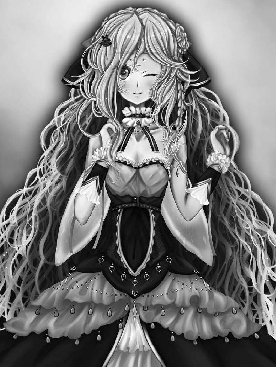
「クルスネット派の強攻にノルアード様は大ピンチ！ 助けて、リズベルル！ って事になってるかもしれないわよ、今頃」
「まぁ、ナーギアったら。確かにクルスネット様は少々気性の激しい方だと噂で聞いた事があるけれど、それも心から民を愛するが故に違いないわ。一つの事に熱を入れると止まらなくなるのは、私のお父様だって一緒だもの」
「ジャルバン様はあれで理知的なお方だから、並べて考えるのはどうかしらねえ」
国議会でノルアード達が今まさに大ピンチに陥っている事等露知らず、マルセーレの大通り、感じの良い喫茶店のテラスでお茶会中の４人。
先程から、本人は大袈裟な事を言っている様で、その実的を射ている冗談で皆を脅かしているのはディーム家の娘にしてレアンドル筆頭騎士を自称するナーギア・ディーム。
それに答えるのはリィガイムの名家ドレッド家の娘、未だ男性を苦手としながらも絶賛ジンにアタック中のコルネリー・ドレッドで、呑気にカップの中身をスプーンでぐるぐると回して微笑んでいるのは学者兼本日はお嬢様方のお目付役を引き受けたレイルランド。
って言うか、私、助けに行く側なんだ、と苦笑しているのはシェラダンの魔女と囁かれ、弦奏鎧ヴィルフォーナの封印を担うシェラダンの騎士、リズベルルである。
「そうよねえ、リズはどちらかと言うと、ピンチの時、ノルアードに助けに来てほしい側よねぇ」
「リズベルルは一途なのよね。ずっとノルアード様一筋で」
「今も気になって仕方が無いんじゃない？ 愛しのあのお方は無事かしら......って」
「べ、別にそんな。心配は心配、だけど......」
この面々で集まると、こう言う話でからかわれてばかり。その度にリズベルルは赤くなり、小さく肩を窄めて背中を丸める。
きっと仲良くなれる筈、とナーギアとコルネリーを引き合わせたのはリズベルルだけれど、恋愛の話となると二人の結束は思った以上に凄まじい。
思えばレイルを除くとこの中で自分だけ中途半端な立場なんだ、とリズベルルはカップの中身をちろちろ舐めながら改めて思う。
恋愛は不要と掲げるナーギアに、ジンにだけは積極的なコルネリー。
リズベルルの秘めたる想いは秘めっぱなしの割にいつの間にやら皆にバレバレなのだけれど、ノルアードに直接想いを告げた事は一度も無い。
そればかりか、ノルアードにとっては恩師の娘と言う立場に甘んじて、付かず離れず、のらりくらりと今日まで来てしまった。
「今、ノルアードは大変な時期だから、力になりたいって......思うけど」
「だからこそ、攻めの時よリズベルル」
「そうねえ、リズが甘えればノルアードなんかコロっと陥落よ」
「......二人とも、からかってるでしょ」
目を細め、じとっと見ればナーギアとレイルはにやにやとした笑みを浮かべ、ちろりと舌を出す。
そんな三人のやり取りにコルネリーはくすくすと笑みを漏らし、いつもの優しい目で諭す様に言う。
「けれど、待ってばかりいてはいけないわ、リズベルル。せっかくノルアード様の近くに居るんですもの」
「う、うん。でも、これでも私、色々考えてるんです。お弁当攻撃とか、おやつ攻撃とか、やってるもん！」
「......餌付けね」
「......餌付けだわ」
顔を見合わせて肩を竦めるナーギアとレイルに、リズベルルはあれ？ と小首を傾げ、コルネリーが先程とは違った意味合いを込めてくすくすと笑うのに、照れ臭くなり釣られて笑う。
それまで静かにテーブルの真ん中で丸くなっていた灰色猫がぴくりと耳を動かしたのは、その時だ。
リズベルルの屋敷に住み付き、けれども決して飼い猫にはならない孤高の猫アオゾラは、その名の通り澄んだ青い空の様な瞳をぱちりと瞬かせ、すっと立ち上がる。
いつの間にか人通りの無くなった大通りの向こうを眺めてヒゲを揺らす。その可愛らしいお口がにゃーんと開いて。
「リズベルル」
と人語で喋ったので、その場の全員がびっくり仰天。
ええ、猫が喋ってるし!? と驚いたのはナーギア、コルネリー、そしてレイル。
ええ、人前で喋っちゃって大丈夫な訳!? とびっくりするのはリズベルル。
この灰色猫は自称外界から招かれた外国産の猫ちゃんで、驚くべき事に人語を解する賢い猫なのであった。
「向こうで見張りに付いてたおっさん達の声が途切れた」
「え、アオゾラ耳良い～」
未だ衝撃の余韻を引きずって呑気に声を上げるリズベルルだったが、猫の言う事を真っ先に理解したレイルは表情を引き締めて席を立つ。
ナーギアとコルネリーも遅れて立ち上がって。
「......冗談のつもりだったんだけど」
ぽつりとナーギアが囁くのと同時、周囲に潜んでいたマルセーレの騎士達が一斉に飛び出してくる。
「おお、これはディラン殿。お待ちしておりましたぞ」
ゆっくりと歩いてくるディランに笑みを浮かべ、しかしその隣を歩くネムリーに警戒の視線を向けるクルスネット。
ディランの登場で、緊迫していた場の雰囲気は一瞬で緩和される。
それは中立派のみならず、クルスネット派の面々にしても同じだった。
アナメアとオーランドの行動が、クルスネットを除く全員を少なからず理性的にしたのである。
......クルスネットはやり過ぎでは無いのか、と。
シェラダンと親しいフェアルージュの剣主、ネムリー・マーネルと共に現れたと言う事もあって、輪の中心に居る者以外の全員が、ディランに期待していた。
メルディーノ湖を清めるディランは、クルスネットと同様その重責故に剣主の中でも一目置かれる存在だ。
彼を諌める事が出来るのは、この中でディランをおいて他に居ない。
「剣主が揃うこの日、ノルアードを粛正する......確かそう言うお話でしたな」
「如何にもその通り。この様な不埒者を野放しにしておけば、民が勘違いをしますからな。王の掟を軽んじる者が増えれば、次は剣主の存在までもが軽視される様になりかねない」
「故に、此処で反乱分子を始末する......と、成程。しかしそれは困ります」
「何と？」
「今、剣主が一人でも欠けると困る......そう言ったのですよ。クルスネット・フレンドール殿」
ディランの厳しい視線がクルスネットを射抜き、それはノルアード達を囲むマルセーレの騎士をも動揺させた。
王を信奉する立場であるディランが、どうやら単純な味方では無いらしいと気付き、クルスネットは声を荒げる。
「ええい、揃いも揃って話にならん！ マルセーレの騎士達よ、今こそ王の秩序を守る時!!」
固く閉ざされた入口に向けてクルスネットはそう叫び、剣を掲げてノルアードを睨む。
そして、自らの声に答える者がいない事に気付き、瞳を揺らした。
程無くして入口の扉が開き、クルスネットは一抹の期待を胸にそちらを見やるが、入って来たのは深紅の騎士服に身を包んだ男が一人。
その男を、ジンやノルアードは良く知っている。
「遅かったわね、ダルカス。ちゃ～んと簀巻きにした？ 簀巻きにして転がしてきた？？」
「少々手こずりましたが、我が君。ぐるぐる巻きです」
フェアルージュ三騎士が一人、ダルカス・ファンデルはネムリーの前で一礼し、ジンとノルアードを見つけて笑みを浮かべる。
肩を竦めて返しながら、全てを察して目に見えて力を無くすマルセーレの騎士達に同情するジンとノルアード。
......ぐるぐる巻きかよ......。
「と言う訳です。貴方が密かにこの砦を包囲させていたマルセーレの騎士達は、我がメルディーノとフェアルージュの精鋭が押さえました」
「ディラン殿、何故......っ！」
「クルスネット殿はご存じない様だが、私は共通の知人を通して、こちらのネムリー様、そしてノルアードやジン達とは懇意にさせて頂いております。貴方からノルアード抹殺の計画を秘密裏に聞かされた時は、それは驚いたものですが......」
「成程、全て筒抜けだったと言う訳か......しかし！」
そうして、クルスネットは刃を翻し、その切っ先をジンへと向ける。
シェラダンの黒き魔人は、ふっと余裕の笑みを浮かべ。
「やめておけ、我が内に眠る竜の血が、貴様を八つ裂きにする前に剣を降ろした方が身のためだ......」
「黙れ、痴れ者が！ 貴様の力は、リズベルルとか言う少女の持つ鍵に封じられし弦奏鎧ヴィルフォーナによって引き出されるものである事は調べが付いている！ 何が魔人か、一人では剣もまともに操れぬ未熟者だと言うでは無いか！」
「あ、はい」
あっという間にメッキが剥がれ情けないやら恥ずかしいやら、しゅんとするジンであった。
隣に立つノルアードが笑いをこらえた表情で肘をついてきて、後ろではジャルバンがごほんごほんと咳払いをするので、ジンは項垂れる。
「今頃はマルセーレの騎士がヴィルフォーナの封じられた鍵を手に入れている頃よ！ リズベルルと言う少女もな！」
「卑劣な、リズベルルを人質に取る気か......っ」
「それならば心配ご無用！」
えっへん、と胸を張るネムリーに、それまで勝ち誇った顔をしていたクルスネットが、あんぐりと口を開ける。
「いやっ！ 近寄ら......触らないで！ 助けて、ジン様ぁっ！」
突如として現れたマルセーレの騎士達に、あっという間に周囲を取り囲まれ、リズベルル達は追い詰められていた。
騎士に捕えられたコルネリーが悲鳴を上げて想い人に助けを求めるが、そのジンは未だかつて無い恥ずかしさに意気消沈している所であり、無論駆け付ける筈も無く......。
どうする、とレイルと視線を交わし唇を噛むリズベルルの隣で、ナーギアがすらりと剣を抜き、目を細める。
「コルネリーお姉さまは野蛮な男が大嫌いなの。その手を離して貰いましょうか」
「我らに剣を向けるか......見た所騎士の様だが......」
ナーギアの装いを見て顎を引くマルセーレの騎士に、ディーム家の娘は不敵な笑みを浮かべ。
「ナーギア・ディーム。レアンドルの筆頭騎士よ！」
「お手並み拝見！」
コルネリーを突き飛ばし、斬り込んでくるマルセーレの騎士。
その一撃を、軽やかな身のこなしでナーギアは受け流す。
余裕を浮かべていた騎士が、筆頭騎士を名乗るだけの事はある、と顔を引き締める。
目にも止まらぬ白刃が風を切る。スカートを翻し、ナーギアの手から繰り出される剣は、しかし対する騎士の刃に悉く弾かれた。
「ぬう、見かけによらず大した腕だ。しかし！」
「きゃっ！」
騎士が放った蹴りをまともに受けて、ナーギアの細身は宙を浮いた。
ふん、と鼻を鳴らし、騎士は倒れ伏していたコルネリーを乱暴に抱き起こす。
抵抗虚しく捉えられるコルネリーを見上げ、ナーギアは咳込み苦しげに呟いた。
「あんた......ねえ、普通、女の子のお腹、蹴ったりする......っ？」
「遊びでは無いのでな。さて、そこの青い瞳の少女。我々とて、この様な行い、本意では無い。大人しく封印の鍵とやらを渡してもらおうか」
「渡しては駄目よ、リズベルル！」
コルネリーとナーギアが同時に叫ぶ。
リズベルルは胸元に下がった父の形見、封印の鍵を握った手を一度は緩めるが、小さく頭を振った後、潔く首から外した。
尚も立ち上がろうとするナーギアにレイルが駆けより、剣を持つ手を押さえる。悔しそうな顔をして、ナーギアの耳元で囁いた。
「多勢に無勢よ。勝ち目はない」
「レイル先生っ！」
「......剣を貸して。私が囮になるわ。騎士がコルネリーを離したら、リズベルル達を連れて逃げなさい」
「......多勢に無勢、ですよ」
「あら、女の子の貴方よりは頑丈に出来てるつもりよ」
レイルがウインクするのに、悔しそうに唇を噛みながらも、ナーギアはこくりと頷く。
ゆっくりと立ち上がる二人が行動する寸前、リズベルルが叫んだ。
「待ってください！ この鍵をあげたら、皆を無事に解放してくれますか」
「約束しよう。ただし、お前には付いてきてもらう」
騎士の言葉に、リズベルルはこくりと頷く。
「おっと、今此処で弦奏鎧ヴィルフォーナの封印を解かれては叶わんからな。先に鍵を渡してもらおう」
「判りました。コルネリーを離して下さい。それを見届けたら、投げます」
「良かろう」
騎士の腕から解放され、涙を浮かべたコルネリーがレイルの胸に飛び込む。
その髪を優しく撫でるレイルの足元を、アオゾラが何食わぬ顔でとことこと歩いて行くのを見届けて、リズベルルは封印の鍵を宙に放った。
何処からか馬の蹄の音が聞こえて、高鳴る心臓の鼓動と重なる。
騎士が手を伸ばし、アオゾラが跳んだ。
「ナイスキャーッチっ!!」
中空を滑る封印の鍵を、自慢のジャンプ力で飛び上がったアオゾラがぱくりと銜える。
顔色を変えた騎士が逃すまいと剣を振り、それは想定外！ と目を見開くアオゾラは凶刃によって真っ二つ......。
となる寸前、突如として飛来した眩い光が、騎士の手の中から剣を弾き飛ばしている。
「な、何者だ！」
リズベルル達を取り囲んでいたマルセーレの騎士達が、一斉に光が放たれた方角を見た。
飛び込んでくるのは、美しい毛並みでそれこそ光を纏う様に輝く白馬と、手綱を握る青年の姿。
白馬が宙を駆け、騎士達を蹴散らす。その背から飛び降りた青年は、赤い外套を翻し、リズベルルの目の前に降り立つ。
先程アオゾラを救った光......それは、一振りの剣である......を地面から引き抜き、ゆっくりと掲げるのは、何処かで見た様な琥珀色の髪の青年。
翡翠の瞳に鋭い眼光を燃やして、青年は名乗りを上げる。
「アルバトリスが騎士......フィオルド・トラバス！ 正義の名の元に、リズベルル達に加勢する！」
「フィオ!?」
懐かしさと嬉しさと、そして驚きの入り混じった声でリズベルルがその名を呼べば、フィオルドはちらりと振り返り、こくりと頷き微笑んで見せる。
フィオの腕の中で唸りを上げる剣が尋常でない魔を帯びている事に気付き、マルセーレの騎士達は一同その気迫に思わず後退りするが、それもほんの一瞬の事。
「たった一人加勢に入ったその心意気は褒めてやろう。しかし、女を守りながらどれだけ持つか！」
そうしてフィオに飛びかかるのは、一度に三人。
手練の騎士の連携が取れた攻撃に、フィオの運命を思ってリズベルル達は思わず悲鳴を上げていたが、対するアルバトリスの騎士はふっと口元を緩め。
次の瞬間、フィオの振るった魔剣の放つ衝撃が、向かって来た三人のみならず、周りの騎士、喫茶店のテーブルや椅子をも巻き添えに薙ぎ倒している。
「覚えておくがいい、真の騎士は守るものが多い程強くなれると言う事を！」
「っく......成程、アルバトリスの豪剣......貴様がそうか。しかし、我らもマルセーレの誇り高き騎士。剣主、クルスネット様に応える為......王に背いた反逆者達に屈する訳にはいかぬ！」
頭を振って立ち上がり、騎士達は尚も剣を取る。
先程蹴られた腹を庇いながらも加勢しようと剣を握るナーギアを手で制し、四人を庇い立ちながら、フィオは諭す様に言うのである。
「お前達は剣主に命じられたら、何でもするのか。こんな一方的に、女の子に剣を向ける事が正しいと本当に思うのか。剣主が間違っていたら、それを正すのも騎士の役目だ。貴方が本当の騎士ならば......」
「言うな！ 剣主の命は絶対。王の掟は絶対。それがこのエンダージェンの秩序......決して正しくは無いだろう。しかし、悪でも無い！ 貴様が掲げるその剣が正義ならば、我らの剣もまた正義だ！ もう一度言う。貴様一人でこの人数、容易に倒せるものでは無いぞ」
「正義は、退かない！」
「良くぞ言った、青年よ！」
睨みあう騎士達とフィオの間に割って入る、新たな声と共に、一輪の花が一人の騎士の鼻先を射抜く。
突然投げつけられ眼前を掠めたそれに驚き、騎士が鼻を押さえて振り向くのに、その場の誰もが釣られて見る。
今度は何なワケ、とナーギアが擦れた声で呟けば、現れた人影は、マルセーレの騎士服に身を包み、どうやら気絶しているらしい男をぽいっとその辺に投げ捨てて、ぱんぱんと手を払い、ゆっくりと歩みながら剣を抜く。
「やれやれ、道中邪魔をしてくる騎士が多くて参ったよ。此処に来るまでに存外時間がかかってしまった」
やって来るのは、二人の男。
饒舌に話すのはすらりとした長髪の男、その隣にはそれよりもずっと背の高い男がもう一人。並ぶと対称的な二人だったが、揃って深紅の騎士服に身を包んでいる。
先程投げつけられた花は青年が放った物だったのだろう。剣を持つ手とは逆に何故か同じ花を持ち、ふっと笑って口付ける。
「何者だ......と聞いてくれないのかね」
や、それはさっきもやったんです、とも言えず、呆気にとられている騎士がおずおずと尋ねる。
「な、何者だ......？」
「良くぞ聞いてくれた！ 我が名はフルーナ！ フルーナ・ノルミネ！ 疾風の美と謳われる、フェアルージュ三騎士が一人！」
「......同じく、パルナダ・ウルガ」
「我らが麗しき妖精姫の命に従い、リズベルル様をお救いに参上した！ 加勢するぞ、魔剣の青年よ！」
急に視線を向けられてフィオはうっと言葉に詰まり、おずおずと頷けば、難しい顔で黙っているパルナダの隣で、フルーナは嬉々として笑みを浮かべ。
「貴様らは、簀巻きの刑だ......！」
その言葉を合図に、それぞれの正義を掲げた騎士達が動く。
マルセーレの騎士達が揃ってぐるぐる巻きにされ転がるのに、ものの数分もかからなかった。
「ご無事ですか」
「はい、何とお礼を言ったらよいのか判りません......パルナダ様、フィオ様......それにえーと、フルーナ様も」
涙を拭いながら礼を言うコルネリーに、フルーナが真っ先にハンカチを差し出し、続いてパルナダが同じ事をするが、コルネリーが受け取ったのはパルナダの方である。
微笑みを浮かべるコルネリーに、パルナダはこくりと頷いて、それきり口を噤んだ。
「コルネリーが男からハンカチを受け取るなんてね」
「......でっかい男には耐性があるんでしょ......」
レイルに手当を受け、顔を顰めながらも唇を緩めるナーギアに、はっとして駆け付けるコルネリーとリズベルル。
大勢で現れたマルセーレの騎士達に、たった一人で勇敢に立ち向かった友人を労わる様に、二人は優しくぎゅっと抱きついて。
「無茶しすぎだよ、ナーギアっ」
「本当よ、もう二度とあんな無茶は無し。約束して」
「私だってレアンドルの騎士よ。このくらい何とも無いってば」
笑ってみせるナーギアだったが、その顔は青白く、強がりなのは明白だ。
リズベルルとコルネリーは目に涙を浮かべて頷いて、釣られて泣きそうになるナーギアを、レイルが優しく撫でる。
「僕がもう少し早く駆けつけていれば......すまなかった」
フィオはそうして、足元をぽてぽてとついてくるアオゾラの口から封印の鍵を受け取って、リズベルルの首にかけ直してくれる。
久方ぶりに会うこの男の子に、リズベルルは何だか声が出無くて、小さく首を振る事しか出来なかった。
程無くして一台の車がやってきて、そこから見覚えのある老人が降りてくる。
フェアルージュで最も力を持つ騎士三家の一つ、ファンデル家の当主、グダード・ファンデルだった。
「む、そちらのお嬢さんは怪我をしたのか。ディーム家のご令嬢と見えるが」
「いえ、私なら平気です」
そう言って立ち上がろうとするナーギアは、まだ蹴られた腹が痛むのか顔を顰めて小さく呻く。
これはいけない、とナーギアを支えるグダードは、何処か以前リズベルルがフェアルージュで会った時よりも雰囲気が柔らかくなった様に感じられたが、すぐにあの厳しい顔になって、フルーナとパルナダを睨みつけたので、リズベルルは何だかほっとして、おかしくて、少し微笑んでしまった。
「申し訳ありません、グダード様。此処に来るまでの間、多くのマルセーレの騎士達に道を阻まれ......」
「全く、これではお前達が真に家名を継ぐのもまだ先の事になりそうだわい......と言いたいところだが、ぬう、まさかクルスネットがこんな手段に出るとはな......甘く見ていた私の責任でもあるか......」
フルーナの言葉に深く息を吐き、グダードはナーギア達に頭を下げる。
一行が恐縮している間に、それを遠巻きに見ていたフィオは外套を翻し、蹄を鳴らして戻ってきた白馬を優しく撫でた。
その翡翠色の瞳が細められるのを、リズベルルは見逃さない。
「フィオ、ノルアード達の所に行くの？」
「ああ、何だか嫌な予感がして......」
そうして空を見上げるフィオに、リズベルルはこくりと頷いている。
さっきから、握りしめた封印の鍵が熱い。
ヴィルフォーナが何かを感じている。そんな気がして、一刻も早くノルアードの元に行かなくてはとの想いがリズベルルの胸に湧きあがっていた。
「君は......」
「フィオルド・トラバスと申します。グダード様、此処はお任せしても宜しいでしょうか」
「おお、アルバトリスの......！ あい判った、この者達は我々に任せたまえ」
「フィオ、私も行くよ！」
リズベルルの申し出に、フィオはこくりと頷く。
慣れた様子で馬に跨ると、リズベルルの手を取り引き上げて、颯爽と駆けて行った。
それを見送るフルーナがぽつりと一言。
「成程、白馬......白馬、ね......そうかそうか！」
何が成程と言うのだろうか、ふっと笑みを浮かべるフルーナの頭に、グダードの無慈悲な拳骨が落とされた。
思惑渦巻くマルセーレの街、その遥か上空に、人知れず走る......それは、亀裂。
中空にヒビが走り、まるで卵の殻を破って新たな生命が誕生するかの様に、何かの兆しがあった。
その者は想う。幾度と無く我らの侵攻を阻んできた憎き剣主達......彼らが今、この地に残らず集っている。
この日をどれだけ待ち侘びただろう。希望の光を摘み取り、全てを無に還す、その最初の一手を打つ時が遂に来た。
空が波紋を描いて波立ち、そして、災いが訪れる。
「いやぁ、一時はどうなる事かと思ったぞ」
「ご無事で何より、ノルアード、それにジン......皆さんも！」
「あら、ジンは何だか元気が無いんじゃない？ 暗～い顔しちゃって」
「ネムリーの顔を見たら、元気が出て来たよ」
「まあ、お上手ね。さっきの情ない一幕はリズに黙っておいてあげる」
はっはっは、と渇いた笑みを浮かべるジンに、一同が穏かな笑みを浮かべ、それに腹を立てたのはクルスネットである。
ディランの登場により、最早剣主達の心は自らに向けられていないと悟ったのか、剣を握った手をわなわなと震わせたかと思えば、得物を放り出し、胸を張って潔く言うのだった。
「私は逃げも隠れもせんぞ、貴様らの好きなようにするが良い！」
「いけませんな、クルスネット殿。そもそも、我々の間には誤解がある様に思う。どうでしょう、一つ冷静に私の話を聞いていただけないだろうか」
「今更何を聞く事があると言うのだ！」
「つまりですな、私は確かに掟に反した。しかしそれが、王に反した訳では無いとしたらどうでしょう。全ては単純な誤解だったと言う事になる」
「......何だと？」
「クルスネット殿、どうかノルアードの言葉に耳を傾けて欲しい。王を信じる心は私とて同じ。しかし私はノルアードを支持してもいる。それには一つの根拠があるのですよ」
ディランの意味深な言葉に、クルスネットは眉を顰め、口を開きかけるが、結局は言葉にならず渋々と言った様子で頷いた。
その瞳が、続きを話せと言外に告げる。
「では、弁解させていただく。まず、世間ではセリオラ解放を発案したのはこの私と言う事になっているが、それは正確では無い。我々に協力し、セリオラ解放にあたって此処に居るジンと同じ位重要な責を果たした者がいるのです。私は今日この日、彼らの存在を皆に知ってもらう為、此処に来た！」
話に聞き入る剣主達をぐるりと見渡してノルアードが言えば、示し合わせたかのようにホールの扉が開かれる。
そこから現れた、頭の先から足元まで、すっかり黒尽くめの一団に、剣主達は呆気に取られ、そしてまさかとの思いに目を見開き、誰とも無く呟いている。
「......まさか、王の使者......なのですか!?」
「如何にも、我らは影に潜み、生きる者。秩序に仕え、この世の理を秘密裏に支えて来た......王の使者である」
先頭の一人、シズマは高らかに宣言し、動揺する剣主の中にジンを見つけてふっと笑う。
そうしてシズマは、ゆっくりとクルスネットの前に立った。
「お前がノルアードを責める理由は、これで無くなった。セリオラ解放を提案し、実行に当たって協力したのはこの俺だ」
「な、なんと......しかし、何故そんな事を......!?」
「王の使者が王の掟を破る......お前にとっては大きな矛盾と映るだろう。しかし聞け、それこそが王の意志なのだ。古い時代は終わりに近づき、秩序は新たな理を求めている」
「セリオラ解放が、王の、意志......！」
震える声で呟くクルスネットに、シズマはただ静かに頷いて答える。
黒外套を翻し剣主達へと視線を移せば、自らの言葉が真実であると念を押す様、一人一人をじっと見つめた。
そんなシズマの隣に並び、口を開くのはディランである。
「......以前にメルディーノで囁かれた霧夜の予言者の噂を、皆さんはご存じだろうか。件の予言者に、実は私も出会っているのです。そしてかの者は......その命と引き換えに、ある予言を残していった」
ディランは一度言葉を切り、悲しみに耐えるよう瞳を揺らす。
その口から告げられる言葉の重大性を感じて、剣主達は皆息をするのも忘れて耳をすませた。
ノルアードもウルグスも、ジンでさえ、実の所シズマとディランが抱えていたその事実を正確に知りはしなかった。
ただ、彼らの言う......来るべき時に全てが明らかとなる......その言葉を信じてこれまで来たのだ。
そして、今この瞬間が、その時だ。
「それこそが、黒き災いの予言......今、このエンダージェン国に近づきつつある未曾有の危機！」
「その災いを前に、我らは一人の剣主も失う訳にはいかないのだ！ 来る虚無の軍勢に立ち向かう為、今こそ人類結束の時！」
拳を握り、ディランが叫び、シズマが声を張り上げて宣言したその時だった。
モンテギオム砦が突如大きく揺れ、衝撃が全てを押し潰したのは。
「いつの間にか、こんな事になっていたなんて気付かなかった......」
風となって駆ける白馬の後ろ、フィオにぎゅっとしがみつきながら、リズベルルは呟いている。
大通りは勿論、街の至る所が封鎖され、バリケードが築かれていた。
全てはリズベルルを捉える為の罠だったと言うのだろうか。
通りすがりのおばさんから貰った喫茶店のクーポン券も、美味しいと評判のケーキもお茶も、はたまた本日限定メニューでさえ......！
恐るべしマルセーレ、恐るべしクルスネット。その狡猾な罠に、リズベルルは今更のように体が震え出して、そしてフィオの大きな背中を頼もしく思う。
「貴方、本当にフィオ......なんだよね？」
「他に誰に見えるって」
「ううん、なんか立派で、格好良くて、びっくり！ 本当に本当の騎士なんだ！」
「今度会う時は騎士になっている。そう言っただろう。尤も、未だ試練は乗り越えられてないけれど」
前に会った時よりも落ち着いた様に思えるフィオの声に、リズベルルはくすりと笑みを漏らす。
道を塞ぐバリケードを白馬は軽々と飛び越えて、成程馬に乗って登場したのにも意味があった訳だ、とリズベルルはころころ笑った。
「この子、フィオのペット？ フィオ、動物好きだもんね～」
言いながら、そう言えばアオゾラを置いてきてしまったと思い出す。
うっかり人語を喋っていたから、今頃ナーギアやコルネリー、何より知的好奇心の塊レイル先生から質問攻めにされている事だろう。
視界を流れて行く景色と、時折その辺に転がっている簀巻きの騎士を見つめながら、リズベルルはまたくすりと笑いそうになり、それから努めて気を引き締める。
「さあ、もうすぐ着くぞ、掴まっていろ、リズベルル！」
「う、うん！」
フィオの命で、白馬は更に足を速める。
と、不意にリズベルルは近づいてきたモンテギオム砦、湖に浮かぶその建物の上空で、奇妙な黒雲が渦巻いている事に気付いた。
フィオも不思議に思ったのか、手綱を握りながらも空を眺める。フィオの背と、自分の胸とで挟まれた封印の鍵が、不意に熱を帯びるのが判る。
やっぱり、ヴィルフォーナが何か伝えてる。危ない......逃げて......そんな事を......。
「あの、フィオ！」
リズベルルが思わずフィオに叫んだ時、上空で獣の唸り声の様な雷鳴が轟いた。
続いて辺りに響くけたたましい破裂音。その眩くも暗い衝撃に視界が暗転し、はっと気付いて何事かと目を見開けば、空から凄まじい勢いで放たれた黒い塊がモンテギオム砦目掛けて落下する。
「......そんな」
呆然と呟くリズベルルと言葉を失くすフィオの視線の先で、先程まで湖の上に浮かんでいた建物が、瓦礫の山と化している。
「ノルアード様とジンさんは大丈夫ですかね......ああ、リズちゃん達も遊びに行かせるんじゃ無かったかも！ せめてもう少し護衛を付けて......っ!!」
「お前なあ、ちょっとは落ちつけよ」
ぶつぶつと不安を呟きながら、その場でぐるぐると足踏みしていたユフィーユは、先輩騎士のバードに諌められ、だって......と子供の様に拗ねる。
やれやれ、と首を振るバードだけれど、落ち着かないのは何もユフィーユだけの事では無い。
マルセール湖に停泊したアルカナード号で剣主の帰りを待ちながら、シェラダンの騎士達は皆事の成り行きに気が気でないと言った様子だ。
エンダージェン国議会。今日の主役は殆どノルアードと言っても良い。場合によっては剣主の身が危険やも知れず、落ち着けと言っても無理な話だ。
「ともかくだなあ、俺達はどかっと構えて大将を待つだけよ」
「バードさんは、落ち着いて......もいませんね......」
「何!?」
「靴、左右逆ですよ......」
「うお、これはしまったっ」
慌てて靴を履き直すバードに、ユフィーユは思わず笑みを漏らし、それでようやく人心地付いたとほっと息を吐く。
と、不意に船の外で爆発音がした。慌てて外を見やれば、言葉を失う騎士達の視線の先、モンテギオム砦が跡形も無く崩れ去っている。
続いて船が小さく揺れ、金属の擦れる音が響いて、今度は何だと皆が船内に視線を向ければ、鎮座していたシェラダンの守護弦奏鎧、シェルヴァランスが立ち上がる所ではないか。
ぽかんと口を開けるのも束の間、ユフィーユとバードは重々しく足を持ち上げるシェルヴァランスを慌てて止めに走る。
「ちょっとちょっと、なんで動いてるの!?」
「おい、誰が動かしてやがる......中に誰か乗ってやがるのか!?」
ジンじゃあるまいし、とバードが息を飲めば、その肩を叩く気配。振り返ると、神妙な顔をしたマールが居て。
「良いのよ」
「え、しかし......」
バードとユフィーユが顔を見合わせる中で、アルカナード号までもが浮上を始め、弦奏鎧降下用のハッチが開く。
最早言葉無く守護鎧の行く先を見守る騎士達に、老騎士アルベルが歩み寄り、高ぶる感情を抑える様な声で囁いた。
「......お待ちしていた方が遂に見えられた......信じておりましたぞ、いつかお帰りになると......っ」
眼下のハッチから、突如として揺らめく炎が船内に現れ、何事かと事態を見守っていたシェラダンの騎士達は思わず手で顔を覆うが、不思議な事にそれは一切の熱を感じさせず、ただ穏かに揺れている。
炎はいつしか鳥の姿となって鳴き、シェルヴァランスをその背に拾うと、凄まじい勢いで船を飛び出して行ってしまう。
「火の......鳥......？」
飛び去る寸前、燃え盛る火炎の中に光る金の瞳が、一瞬ユフィーユの視線をじっと捉えた......様な気がした。
今のは一体......。
ユフィーユが呆然と呟く中、その視線の先で、シェルヴァランスを乗せた火の鳥は、崩壊したモンテギオム砦へ向けて羽ばたいている。
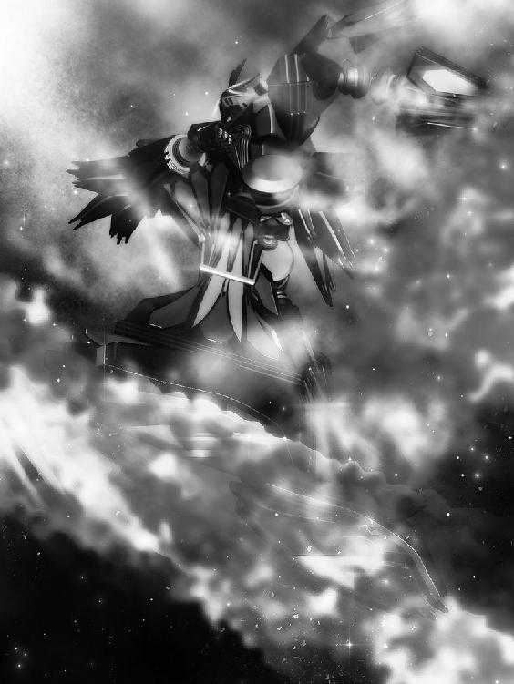
「っく、皆、無事か......!?」
「ううむ、何とかなあ」
「な、何が起こったのだ......」
瓦礫の下からノルアードが這い出すのに、先に外に脱出していたジャルバンが手を貸して、続いて顔を出したフェルナンドの無事に、二人ほっと息を吐く。
そうするうちに崩れ落ちた砦のあちこちで瓦礫が転がり、使者の手を借りて剣主達が無事な姿を見せた。
「......何故、私を庇った」
「当然でしょう、我らは同じ剣主だ」
「......ぬう」
ウルグスの手を取り立ち上がって、クルスネットは深く息を吐く。程無くして、マルセーレの騎士達も姿を現した。自由な者は簀巻きにされた仲間を掘り起こし、皆息をしている事を確認すると、ほっと胸を撫で下ろしている。
目の前に広がる惨状に、一同が息を飲みながら改めて視線を向ければ、そこかしこにバルグタームと同型の黒い弦奏鎧が倒れている。
どうやら砦が崩壊する寸前、王の使者達が封印球から呼び出した弦奏鎧を盾にしてくれたお陰で助かったらしいとノルアードが気付けば、ジンとシズマの姿が見当たらない。
まさか、と肝を冷やすノルアードのすぐそばで、小石を転がして一際大きな瓦礫が起き上がり、驚いて見やればひょっこりと現れるのは小柄な少女。
「ぷは～、死ぬかと思った～。ほれ、お前達も早く起きぬか！ わらわとていつまでもこの石を持ち上げ続ける事は出来んのじゃぞ！」
「おい、ジン。生きているか」
「っつ......助かったよ、ありがとう......ええと......君」
シズマに手を借りて立ち上がったジンの戸惑いの言葉に、一体何処にそんな力が秘められていると言うのか、瓦礫を持ち上げた小柄な少女は光を受けて桔梗色に輝く白髪をぶるぶると振り回して埃を落としながら、金の瞳を愉快気に回す。
「お～、何よりもまずわらわに礼を言うとは、愛い奴め。よいぞよいぞ～、実によい！」
「いや......驚きのあまり言葉が出ないと言うか......」
「おい、エル。お前、腕が変な方向に曲がってるぞ」
ジンとシズマが青い顔をして言うのに、少女はうん？ と首を傾げ、持ち上げていた瓦礫をひょいっと放れば、途端に重力を思い出したかのようにそれはごとんと音を立てその場に落ちる。
あら本当、と不思議そうに首を傾げ、少女はきゃらきゃらと笑い出す。
「あちゃ～、関節が外れおった。骨もあちこち飛び出ておるし......内臓も零れて......うーん、普通の人間だったら死んでいたのう」
言いながら、少女は乱暴に体を動かし始める。ばきばきと音がして、みるみるうちに骨と肉が体内に仕舞われて行く。
その様子を、ジンもシズマも、そしてノルアードも、集まって来た騎士達も怖々と眺める他無い。
恐る恐ると言った様子でシズマが尋ねる。
「......大丈夫なのか」
「うむ、なんじゃ諸君、そんなに心配するで無い！ ほれ見ろ、血も出ておらんし、破れた皮膚も塞がった！ しかし腹が減ったの。判ったか、シズマよ。わらわが普段からたらふく食べていたのは、こう言う時のエネルギーを蓄える為じゃったのよ！」
「おお......後で沢山食べると良い......出来るだけ美味いものを......」
「お～殊勝じゃのう～......とその前に、奴が動くぞ、皆離れろ！」
エルと呼ばれた少女が途端に表情を引き締めてその場から飛び退けば、次に崩れた瓦礫のあちこちから黒水が湧き出る。
先程まで少女が居た場所目掛けて黒水が殺到し、剣主も騎士達も慌てて逃げる。
黒い液体はまるで蛇の様にのた打ち回り、その度に瓦礫の破片が辺りに飛び散った。
「いけない、ネムリー様！」
「きゃっ」
危うくネムリーにぶつかりそうになる大きな破片を、ダルカスがその身を呈して阻む。
鈍い音が辺りに響いて、ダルカスの腕の中でネムリーは悲鳴を上げたが、主に忠実なる深紅の騎士は僅かに顔を顰めただけで倒れもしない。
「ご無事ですか、ネムリー様」
「私は平気よ。ダルカス、貴方......」
「少々響きましたが、動けない程では無い」
平気な顔をしてはいたが、破片の大きさから見るに恐らくかなりの深手だろう。
冷静を装ってこくりと頷きながらも、ネムリーは焦る。早く医者に見せねばと思うが、この状況ではそれも出来ない。
目の前で蠢く黒水の......それは、獣。これが砦を崩壊させた者の正体か。
見るからに意志を持ち、人間を襲う、かつて相対した事の無い形態の黒海であった。
「まさかこの日を狙って現れるとはな......」
「シズマ、さっきの話」
ジンの言葉に、シズマは額に汗を浮かべて頷いて。
「こいつがそうだ。黒き災い......いいや、正確に言おう。黒き獣の災い！ 我らが共通の、そして真の敵だ！」
シズマの言葉に答える様に、災いの獣が吠える。
雷鳴か風か、その咆哮は邪悪に空気を震わせ辺りに轟く。
先程まで蛇の様に伸びていた黒水は、今や四足の獣に姿を変えて威嚇の声を発していた。
こちらの人数に対して、相手は一......儀礼用の剣であっても、この場に居る者が持つ剣の刃はニトクリス玄鏡石で出来ている。
獣の形をしているとは言え、相手は黒海。一斉に攻撃を加えれば倒せない道理は無い。
使者達の弦奏鎧が使えればそれが一番確実な方法なのだが、今は揃って瓦礫の下。
封印球に収めれば救い出す事は容易だが、それでは足場が崩れてしまう。
バルグタームは使えない、とすれば、やるしかない。
シズマは叫ぶ。
「想定していた段取りとは違うが、ノルアード、そしてクルスネットよ！ これで俺の言いたい事は伝わったな！」
「元より承知の上よ！」
「......全面的に信じた訳では無いが、今この場では手を組もう。敵は黒海、予言の獣！」
ノルアードとクルスネットが示し合わせて飛び出すのと、獣が跳ねるのはほぼ同時。
ニトクリス玄鏡石の刃が輝き、人の胴程もある獣の足を貫く。
ノルアードが右足、クルスネットが左足、その後から続いたシズマは瓦礫を蹴って宙を舞うと、刃を頭部へと振りおろしている。
「......っ！」
しかし、そのどれもが獣の体に薄い波紋を生じさせるばかり。
全く効いていないとは言わないまでも、獣を倒れさせる事くらいは出来ると思っていた剣主達は皆言葉を失った。
「危ない、ノルアード！」
「っく！」
獣はぶよぶよと揺れながら次の瞬間その尾を再び蛇の様に変じさせる。
黒い顎が大きく開き、その牙がノルアードを捉えようとした次の瞬間、背後から放たれた閃光の矢が凄まじい風圧と共に獣を退けている。
瓦礫に突き刺さったそれは、見覚えのある魔剣。
蹄の音高らかに、瓦礫を駆けあがって来る白馬がある。
赤い外套を靡かせる馬上の青年の姿に、ジンは思わず安堵と共に笑みを浮かべた。
「父さん！ ノルアード様！ 皆ご無事ですか!!」
「ノルアード！」
馬から颯爽と降り立つフィオはまず父の姿を認めて頷き、次にノルアードに駆け寄って助け起こすと、先程獣を退けた魔剣を地から抜き放つ。
続いてリズベルルもノルアードに走り寄り、泣きそうな顔でぎゅっとその体に腕を回した。
「ノルアード、ああ......ノルアード！」
「心配をかけたな、リズ。それにフィオ、助かった」
「礼には及びません。それよりも、奴は......」
フィオが鋭い視線を向けると、先の衝撃でどろりと溶けて瓦礫の間に溜まっていた黒水は、再び粘度を取り戻した様にぐずぐずと起き上がり、また獣の姿を取り戻している。
息を飲む一同の前で、金の瞳の少女がううむと唸った。
「わらわ達はあれを虚獣と呼んでいる。虚ろなる者......外界よりの侵略者、即ち虚無じゃ」
「......何で子供がこんな所に......？」
「見た目で判断するで無いぞ、青年。わらわの名はエルデイル、導く者！」
「導く......者......」
少女、エルデイルが名乗れば、フィオは怪訝な顔で首を傾げる。
リズベルルもまた、フィオと同じ疑問に瞳を揺らしていた。
導く者。そう名乗る少女を、リズベルルもまた知っているのだ。
彼女もまた、エルデイルと同じく紫がかった白い髪と、金の瞳を持っていた......。
「細かい事は後じゃ後！ 奴は倒せん、逃げるが勝ちじゃぞ！」
「逃げるって、あんな奴を野放しにしたら、街の人が危ない！」
魔剣を構えてフィオが叫べば、獣は不意にその首を二つに分けて襲ってくる。
フィオの振った魔剣が唸りを上げて風を巻き起こし、その剣風で鞭の様にしなる獣の首を切断したかに思えたが、敵は黒水。
斬った傍から断面に液体が流れ込み、倒れる気配も無い。
尚も立ち向かおうとするフィオの手を、リズベルルが掴む。
視線を交わす二人は次に頷き合って、ジンを見る。
「......挽回と行こうか！」
「行くぞ、リズベルル！」
「はい！」
天へと掲げた魔剣を振り降ろし、地を穿てば魔が満ちる。
リズベルルは、不思議とフィオの持つ力を察していた。
その魔剣に......宿るもの。それが弦奏鎧である事を信じて疑わない。
立派な騎士として成長を遂げ現れたフィオの背を、ジンは感動を胸に見守った。
やり遂げたのか、と思う。
フィオは魔剣を使いこなしている......それ即ち、その刃に宿る弦奏鎧の目覚めを意味した。
胸元の封印の鍵を取り上げて、リズベルルが謳う。
幾度と無く街を救って来た、守護竜を呼ぶ詩を。
「海を断ち、天舞う音色！」
「姿を現せ――――っ！」
「ヴィルフォーナっ!!」
「バルハートっ!!」
刹那、光が弾け巨人が立つ。
リズベルルの掲げる封印の鍵から白銀眩く現れたるは、弦奏鎧ヴィルフォーナ。
その隣に並び立つ、魔剣から解放されしアルバトリスの守護鎧、バルハート。
伝説に語られる球の印の弦奏鎧と、未だ表舞台に現れた事が無かったとされていたアルバトリスの守護鎧とが、黒き災いの獣を前に顕現している。
剣主達はシェラダンの魔女とアルバトリスの騎士と言う二つの若き光を前に、思わず息を飲み、獣が居る事も忘れてその鎧の美しさに目を奪われた。
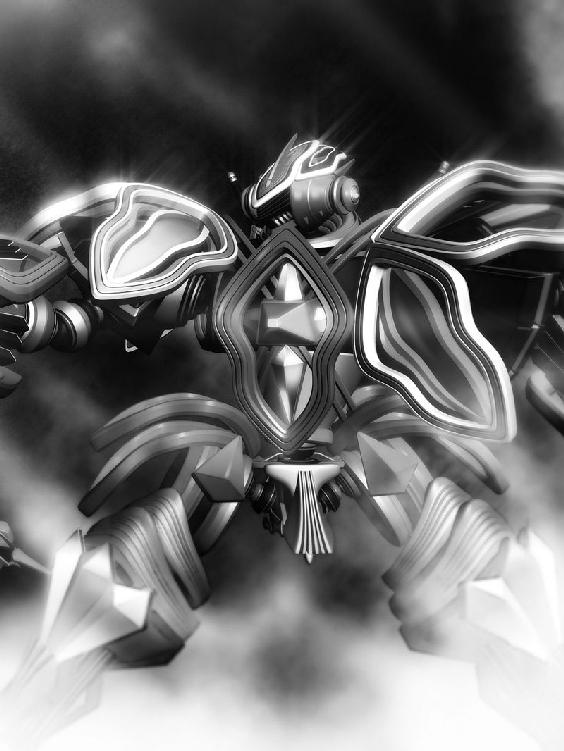
「バルハート......アルバトリスの守りの要！ 先程オーランド殿を父と呼んだのはそう言う事か......！」
「黙っていてごめんなさい。僕の本当の名はフィオルド・トラバス。けれど僕は、家の名に縛られず、ただのフィオとして腕を磨きたいと思った。だから......」
「謝る事は無い。それに、その成果に私は助けられたのだから」
ノルアードの言葉に、フィオは顎を引き、そしてジンを、ヴィルフォーナを見る。
シェラダンの黒き魔人は心得たとばかりにヴィルフォーナを駆けあがると、すぐさま鎧とその身を一つにした。
「行くぞ、フィオ！」
「承知！」
ジンはヴィルフォーナと一体となり、フィオは剣に魔を込めてバルハートと感応する。
二騎の鎧が共にその背から剣を抜き、一振りの元に刃を伸ばす。
「メイルレヴァンの剣！」
「メルメサイユの剣っ！」
ヴィルフォーナが動く。
その巨腕から放たれた一太刀が、眩い閃光となって虚獣を上下に分断している。
続いて高く飛び上がったバルハートが、アルバトリスの宝剣たるメルメサイユの剣で以って、崩れ落ちる獣の体を更に細かく斬り裂いた。
ぶよぶよと波打っていた虚獣がばしゃりと弾けるまで、ものの一瞬......。
「やったか!?」
「......ヴィルフォーナでも駄目なの......っ!?」
歓喜に沸く剣主達の言葉に首を振り、黒外套を羽織った黒髪の少女が呟いた。
唇を噛む王の使者と、息を飲む剣主達の前で、虚獣はまたしても再生を初めている。
「......ニトクリス玄鏡石の力が通じないのか......？ いや、そんな筈が無い......黒海であれば、鏡の力に逆らえぬ筈......」
リズベルルを庇う様に立ちながら、呟くノルアード。
もしそうだとしたら絶望的な状況だが、ジンとフィオは屈しない。
「フィオ、剣の力で奴を滅する。同時に行くぞ！」
「おう！」
虚獣が蛇の様にしなって迫るのを剣で受け止め、ヴィルフォーナはありったけの力でそれを弾く。
二騎の弦奏鎧が揃って飛び出し、虚獣の体に直接宝剣を突き刺そうとした時、獣の首元がぽっかりと開いて、そこから耳をつんざく様な咆哮が発せられた。
「っく......何だこの音は......っ！ フィオ、どうしたフィオ！」
メイルレヴァンの剣で虚獣を貫くヴィルフォーナ。ジンは歯を食いしばって暴れまわる黒水を押え込むが、フィオが追撃する気配が無い。
何をしている、と振り返ると、驚いた事にバルハートが倒れ伏している。まさか招き主の身に何かが、と慌てて見やれば、フィオは健在。
しかし、魔剣を手にした彼の顔には驚愕の表情が浮かんでいて。
「応えろ......応えろバルハート！ 何故動かないっ！ 動け、動いてくれ......っ！」
その叫びと共に幾度と無く新たな魔が剣に注がれるが、バルハートは応えず、歯を食いしばって怒りと困惑を飲みこんだフィオは、雄叫びを上げて虚獣目掛けて走り出す。
虚獣は遂にメイルレヴァンの剣による拘束から抜け出して、その牙をヴィルフォーナに向け迫る。しまった、と焦るジンは、寸前まで迫った黒海の脅威に息を飲み、剣を構えなおそうとするが間に合わない。
「ジン......！」
フィオが振るった剣から魔が迸り、それは衝撃波となって虚獣に迫るが、ヴィルフォーナを喰らわんとする顎を阻むには至らず、その光景を前にして誰もが絶望に目を閉じそうになった時、突如として上空に光が射した。
辛うじて向けた視線で捉えたその姿に、ジンとフィオは共に驚き声を上げる。
「あの鳥は、前に森で見た......っ」
「虚獣の雄叫びは、招き主と魔との感応を断つ。対抗するには、招き主と魔が共にあらねばならん！」
響く、その声。
灼熱を纏って羽ばたく火の鳥から、蒼い輝きが降り立てば、それは唸りを上げて剣を抜き、虚獣目掛けて走り出す。
「シェルヴァランス!?」
ノルアードが驚くのも無理は無い。
火の鳥から降り立ったそれは、シェラダンの守護鎧たるシェルヴァランス。ノルアードの鎧を、一体誰が動かしていると言うのか。
「......ようやくお出ましか」
ふっと笑みを浮かべてジャルバンが囁く。
突如として現れた希望の光。しかし王の宝剣、聖鍵ヨスフートを掲げるシェルヴァランスを前に、ノルアードは拳を握り。
「駄目だ！ あの虚獣が、もし儀式の折に水門から現れた試練の虚像と同じ性質の存在ならば......聖鍵で倒す事は出来ん！」
「それならばご安心を」
上空を旋回し、瓦礫の山を明るく照らした火の鳥から、その声と共に新たな影が降り立って、それは美しい白紫の髪をした金の瞳の娘だったが、作り物めいた美を称えるその姿には、不自然に腕が欠けている。
皆が言葉無く視線を注ぐ中、金の瞳の娘はふわりと笑んで、次にその腕の無い肩に柔らかな光が灯ったかと思えば、燐光と共に光の帯がシェルヴァランスの振るう聖鍵へと巻き付き、しゃん......と鈴の音を響かせる。
「我が剣により......滅せよ、虚無！」
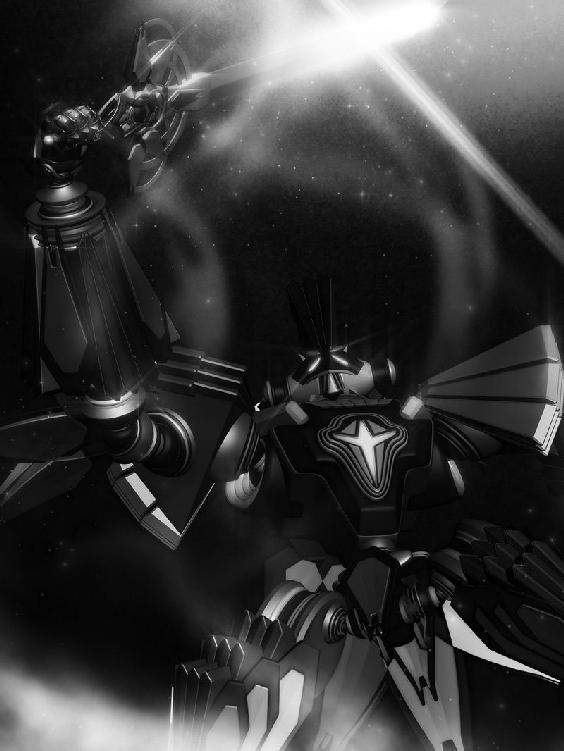
シェルバランスに乗った何者かの叫びと共に。
聖鍵ヨスフートから放たれた光が、黒水を一撃の元に浄化している。
微かな黒水の飛沫が立ち上るが、それも一瞬。次には光の刃がそれすらも蒸発させ、後には脅威の影も残らない。
危機を救われたジンがヴィルフォーナから降りて事の行く末を見守る様にシェルヴァランスに視線を注げば、シェラダンの守護鎧はゆっくりと振り返り、その背に剣を収める。
胸部の装甲が持ち上がり、その中から現れたのは、黒外套に仮面で顔を隠した一人の男......。
「......仮面の、使者......」
ジンがぽつりと呟く声に、リズベルルがまず首を振り、そんな彼女から離れ、驚愕の表情を浮かべたノルアードが一歩足を踏み出して。
「......父上......」
言葉無く向き合う、ノルアードと仮面の使者。
空から火の鳥が熱の無い炎を靡かせて瓦礫に降り立ち、腕の無い娘がゆっくりと仮面の男に歩み寄る。
最初の虚獣を退けた後も、その場に居合わせた全員が困惑と疲労で暫くの間動けずにいた。
「貴方は......我が父、ゼルナード・フィレントアでは無いのですか。答えてください、父上！」
ノルアードの切実な叫びに、黒衣の男は低く息を吐いた後、仮面の下で目を瞑る。
黒外套を翻し、ノルアードに背を向けて歩き出す男を、エルデイルの声が引きとめた。
「もう意地を張るのは止さぬか。最早戦いは始まっておる。見ろ、あの恐るべき虚獣を前に、剣主達は一人も逃げ出さずいるでは無いか。これ以上何を求める。少なくともわらわはこの時代で予言の獣を討つつもりじゃ」
「......時は、満ちたか......」
そうして黒衣の男は振りかえり、何かに耐える様に拳を握っているノルアードをじっと見つめる。
その手がゆっくりと仮面にかけられ、外されると、その下から現れたのは深い傷で開かぬ右の瞼と、孤独にして決意を秘めた左の瞳。
顔立ち、赤髪......ノルアードと良く似た雰囲気の、彼こそが、シェラダン先代剣主。
「今、帰ったぞ、息子よ」
「......父上！」
ぎこちなく微笑んで見せるゼルナードに、ノルアードは感極まって走り寄り、しかしどうして良いのか判らぬ様に戸惑いを見せて、後ろからゆっくりと歩み寄ったリズベルルに背を押され、ようやく父をぎゅっと抱きしめた。
思いがけぬ父と子の再開に、剣主達は安堵と驚きが入り混じった温かな笑みを向けた。
「いつ終わるとも無い戦いの宿命に凍りついていた心に陽が射した......私も安心しましたわ。旦那さまの幸せが私の幸せ」
腕の無い娘が、ゼルナードを見つめて優しげに眼を細める。
あっと思い出した様に、エルデイルが娘を指差し。
「そうじゃそうじゃ、そうじゃった！ お前さんは一体何者かの？」
「あら、お忘れですのエルデイル。私はシャンロール、導く者。このエンダージェン国を包み慈しむ、大結界を司りしミディオム」
「なんと、シャンロールであったか！ ......相変わらずヘンテコな趣味じゃのう......腕はどうしたのじゃ？」
「ふふふ、必要ありませんもの。こちらの方が便利でしょう？」
そうして、導く者......シャンロールは本来ならば腕が生えているべき付け根の部分に不思議な淡い燐光を纏う。
燐光は光の帯となって伸び、青い顔をしながらも平然を装って立っていたダルカスに触れた。
心配気にネムリーが見守る前で、ダルカスの顔色がみるみる良くなり、荒い呼吸も元に戻る。
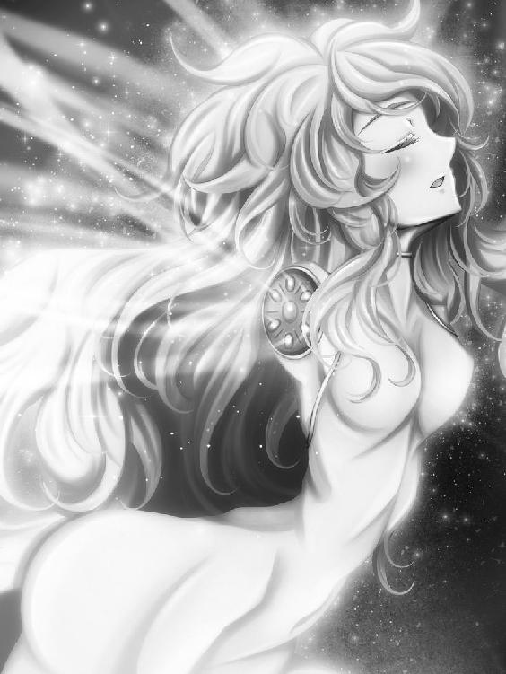
「......痛みが、引いた......」
「内臓を傷つけていましてよ。ご自愛くださいな」
ふふ、と笑みを浮かべるシャンロールに、ダルカスは戸惑いながらも頷き返す。
その顛末を見届けて、皆がはっと思い返した。ダルカスを癒したのがシャンロールの光の帯なら、虚獣を退けたのもまた同じ力だ。
「器用なもんじゃのう......しかしシャンロール、お前はどこか人の常識に欠けとるのう......」
「あら、エルデイルに言われたくありませんわ。ふふ、今度はまたえらく可愛らしいお姿で現れた事」
「これは肉体を作る時間が惜しかったのと、可愛さを重視した結果じゃ！ 小柄で動きやすいし、気に入っておる！」
きゃらきゃらと笑うエルデイルと、ふふふ、と微笑むシャンロール。
二人がただの人間で無い事は、既に皆が感じていた。注目を集めながらも、それが気味の悪い雰囲気にならないのは、成程見た目の為せる業か......。
と、放っておくといつまでもそうしてお喋りを続けそうだと危惧したシズマが二人に割って入り。
「エルデイルよ、こんな事になってしまったが、だからこそ、本来予定していた通り事を進めたいのだが」
「おお、そうであったな。それではええっと......ほれ！」
と、何を思ったかエルデイルは元気良くヒラヒラとしたそのスカートを捲って見せる。
剣主達が呆気にとられている前で、スカートからはぼとぼとと黒い球が落ちてきて、瓦礫の上に山を作った。
ジンは何だか気恥ずかしくなり、頬をかいて、それが王の使者の持つ封印球である事に気付くと、ぎょっとして食い入る様に視線を向ける。
「これだけかき集めるのは骨が折れたわ。剣主達よ、この封印球をお一人様一個ずつ持って行くが良い！」
「これって、シズマが持ってるのと同じ奴だよな？」
「うむ！ 便利アイテムじゃぞ！」
エルデイルが胸を張るのに、はぁ......と頷く他無いジンである。
戸惑いながらも封印球を手にする剣主達。やがてそれが行きわたると、エルデイルはますます胸を張って。
「それはお前達が言う所の、球の印の封印である。あらゆるものを一瞬で封じ、またその逆も然り」
「すると、これは例えばジンやシズマの様な......エコーデュオンの人間で無ければ操れぬのですか？」
「心配ご無用！ 緊急事態じゃからの、お前達でも使えるように弄っておいたわ。ま、わらわの他にもそうして他人に球っころを託しておる者がおる様じゃし、この位のズルは良いじゃろ！ 何にしろ緊急事態じゃからの！」
ウルグスの言葉にエルデイルは悪戯っぽく笑って返し、続いてぱちんと指を鳴らす。
すると、一瞬で周囲の景色が白霧に包まれ、剣主達は驚きにざわめいた。
「今、わらわの合図でお前達全員がこの空間にダイブした。ここは王の使者が使っておったシステムよ。この国の情報的側面......王が張り巡らせた根によって支えられるスペースじゃ。今、お前達はこの場所に居る。しかし同時に、モンテギオム砦、あの瓦礫の上にも存在している。お前達の実体は、モンテギオム砦にある方の肉体じゃ。こちらには意識だけが跳んできたと思えば良い。わらわの嫌いな安い言葉で言えば、仮想空間......と言う奴じゃの」
剣主達が顔を見合わせる中、エルデイルの説明は続く。
「お前達は、その封印球を通していつでもこのスペースにアクセスできる。此処では距離を超えて相手と語らう事が出来る訳じゃ、これからの戦いにおいては有用な道具じゃろうて。さて、次じゃ」
再びぱちんとエルデイルが指を鳴らせば、次に景色は青々とした森の中に変わる。
薄らと霧の幕がかかり、振り返れば、そこには天に届かんばかりの大樹が聳え立っていた。
「......これは......」
「此処はエンダージェン国の中心、禁忌の森に隠されし、お前達が王城と呼ぶ空間。そしてあの大樹こそ、王である」
「......王」
エンダージェンの中心には王が居る。
初めてアオゾラにその話を聞いた時、ジンが思い浮かべたのは王冠を被って赤いマントを着込んだ典型的な姿だった。
しかし、この国で暮らし始めるうちに、それは一種の神様の様な、信仰の対象......心の拠り所の様な存在なのだと気付いたのだった。
その姿は勿論、実在するかどうかさえ誰も知らない。けれど王はこの国を見守り、民は掟に従って生きて来た。
目まぐるしい展開に半ば混乱していたジンだったが、目の前の大樹が王だと言われれば、それは不思議と違和感無く胸に入って来るような気がして、納得している。
「今お前達が見ているのは現実の光景。しかし実際に距離を超えて王城へ飛んできた訳では無い。あくまで仮想的にやって来たのじゃな。無論、わらわの力を以ってすれば全員を此処へ跳躍させる事も可能であるが、お腹が減る！ 今回はシステムのデモンストレーションも兼ねてこの様にしてみたぞ。どうじゃ、便利だろう！」
「......お前の言う事が確かなら、驚くべき技術だ。しかし、我らを此処に連れて来た理由はそれだけか。そもそも、疑問ばかりが増えて行く。黒き獣の災い、虚無、導く者......何もかも、理解を超えた事ばかりだ」
「......それは、私達が答えましょう」
クルスネットの言葉は、エルデイルらに向けられては居たが、殆ど独り言の様なものだった。
それに対し思いがけぬ方向から返事があった事で、マルセーレの剣主はうっと息を飲み、振り返っている。
剣主達が続いて視線を向ける中、その幻獣は、霧の中からゆっくりと歩き、王の前に姿を見せた。
純白の毛並みも美しい、金の瞳をしたその生き物は、謳う様に言葉を話す。
「私は、オリン......導く者。剣主達よ、一人も欠ける事無く、良く此処に集まってくれた。まずはその事に感謝する......」
「オリン......導く、者......」
「我ら導く者は、このエンダージェンを人知れず見守ってきた存在。もし戸惑うならば、王の使いとでも思ってくださいな」
「うむ！ オリンはこの王城を守る番人。同じ様に、わらわは太陽の船を、シャンロールは大結界を司る者なり！ 太陽の船を初めとして、古の時代、此処では王の遺物と呼ばれるそれらメテオールに備わった機能でもあるわらわ達は、ミディオムと呼ばれて区別されておる」
「世界の守護者、導く者......それがどうして今になって、我々剣主の前に姿を現したと言うのですか」
「レアンドル剣主、アナメア・ディームよ。その原因こそが、お前達も見たであろうあの虚獣なのだ」
「そもそも虚無とは一体何なのだ。黒海......なのか......我々は一体何と戦っているのだ......いや、何と戦っていたのだ......!?」
「黒海とは、消費された時の流れ......未来を浸食せんとする潰えた可能性。それらは遂に境界線を越え、このエンダージェン国に顕現するに至った。我々が戦っているのは、淘汰された世界の可能性、そのもの......虚無は既に、この国の深部にまで侵略の手を伸ばしている......」
そうしてオリンは語り始める。王が既に黒海に浸食されている、その事実を。
「亀裂からこの国に流れ込んだ黒水は、大地に沁み込み、王の根を伝ってその幹に蓄積される......長い長い年月をかけて、遂に虚無は王の機能の大部分を掌握したのだ。最早王は、新たな剣主を選定する事も出来ず、外界から使者を招く事も無い。王は眠りに付く事で、辛うじて虚無の侵攻を食い止めているのだ」
「一人の剣主も失う訳にはいかない......あれはそう言う意味だったのですね」
「ウルグス・ネスラよ、その通りだ。そして、王を掌握した虚無は遂にこのエンダージェン国へ本格的な侵攻を開始した。狙われたのは、結界の綻びが大きい街......」
「まさか、我がセリオラも......」
「あの儀式、例え挑んでいたのがウルグス以外の剣主であったとしても、虚無の侵攻を食い止める事は出来なかっただろう......」
「何と言う事だ......」
オリンの言葉に、ウルグスは瞳を揺らして俯き、クルスネットもまた己の誤解を悔やむ様に拳を握る。
そんな二人の肩にそっと手を置いて、顔を上げた彼らに頷くと、ノルアードはオリンを見つめる。
「王を救う為、我々に何が出来るのだ。何か出来るからこそ、オリン......貴方は今日、我々を此処に呼んだ筈だ」
「信じること......」
透き通った金の瞳で剣主達を見つめ、オリンはそう囁く。
「勝利を信じ、躊躇わないこと。仲間を信じ、愛すること。これまで虚無が息を潜めていたのは、剣主達を抹殺する機会を窺っていたからこそ。それが阻まれた今、本格的な侵攻が始まる。来る虚無に対抗する為の、最後の力は......デュオン」
「デュオン......！」
その古の言葉を、剣主達は深い感動と共に繰り返す。
幻獣オリンは、慈しむ様な眼差しで王を見上げ、美しい音色で嘶く。
「最早この森を覆う霧も、心を繋いだお前達の前では視界を遮る邪魔でしかあるまい。この霧をはらう事が、私が人を信じる証......」
オリンの声が、禁忌の森の中に澄んで響き渡り、するとそれまで景色を包んでいた白い霧が、次第に薄れ消えて行く。
その場に居た者全員が、その神秘的な光景を食い入る様に見つめていると、上空にあの火の鳥が現れて、熱の無い火の粉を瞬かせながらゆっくりと降りてくる。
火の鳥の出現を合図に、森の中からも草を踏む音がして、沢山の動物が姿を現した。
最後に白紫の髪と金の瞳を持った少女が何人か現れて、ゼルナードの前に跪く。
「盟約の元、我ら導く者......集いましてございます」
「感謝する。改めて紹介しよう、この炎の化身はフラングラム。エンダージェン国に住まう、虚無を浄化する力を持った生き物たち......レギオンを統べる導く者だ」
ゼルナードの言葉に、火の鳥は金の瞳に知性の色を浮かべ、ゆっくりとその首を擡げる。
その後ろで、数多くの動物......中にはあの珍しいわたりうさぎの姿も見える......レギオン達もまた、思い思いの声で鳴いた。
続けて金の瞳の少女達を紹介し終えると、ゼルナードはオリンに向き直り、ほんの一瞬悲しげな色をその瞳に浮かべた。
「私は王と共にある......。必ずや虚無を打倒し......そして生きよ、デュオンの戦士達よ」
美しい音色の様なオリンの声が遠くなり、ふと気付けば剣主達はモンテギオム砦跡地に立っている。
皆暫くの間言葉無く立ち尽くし、まるで夢の余韻を噛み締める様に手の中の封印球を見つめていた。
「報告します！ エンダージェン中央区画、禁忌の森より白霧が消えている事を確認！ 未開の森でありますから、中を通る事は難しいかと思いますが、飛行船を用いて上空を渡れば、接続した全ての街へと迅速に移動可能かと......」
「そうか、ご苦労だった。こうなっては、信じる他あるまい。黒海の本格的な侵攻が始まった......その事実を」
マルセーレの騎士から報告があるや、砦跡地で議論を交わしていた剣主達に途端に慌ただしい空気が広がる。
黒き獣の災いの予言、それがエンダージェン国に危機を告げる警鐘であった事は疑い様が無くなった。
とすれば、次に虚獣に襲われるのはどの街か。
こうしているうちにも黒海......虚無は侵略の手を進めているかもしれず、事は急を要する事態だ。
「皆さん、聞いて欲しい」
ディランが声を上げて、皆が一斉にそちらを見る。
湖を守るメルディーノの剣主は、此処で慌てては足元をすくわれるとあえて余裕を持った声で話し出す。
「オリンの計らいで、中央区画上空を通れば、我々はどの街へも直接出入りする事が可能になった。一刻も早く、それぞれの街に帰還して虚無を迎え撃つ準備を整えるべき......その気持ちは判ります。が、皆さんの時間を私に少し預けて欲しい！」
「どう言う事だ、ディラン殿」
「皆さんの街からそれぞれ代表を選び、我がメルディーノにご足労頂きたいのです、ジャルバン殿。信頼のおける者ならば、剣主で無くとも良い」
「それならば、アルバトリスからは僕が行く。良いだろう、父さん」
フィオの言葉にオーランドが頷くと、剣主達は次々と街の代表者を選出しディランの言葉を受け入れる。
ある街は剣主自身が、ある街では腕の立つ騎士が選ばれて、ディランと同行する事が決まった。
「それではシェラダンからは......」
「いえ、ノルアード。貴方と......そしてリズベルルさん、ジン、ネムリー様、ダルカスは私と共に来てもらいたい」
「私は構わないわ。フェアルージュへはフルーナとパルナダを先に帰せば安心だもの。でも、今の顔ぶれって......」
「ええ、以前にメルディーノを訪れた時と同じ面々ですね」
ネムリーが小首を傾げ、ダルカスも怪訝そうにディランを窺えば、メルディーノの剣主はほんの一瞬だけ塞ぎ込む様な顔を見せ、次にふっと微笑んで見せる。
少なからず疑問を残しながらも、それ以上追及する事は躊躇われ、一同は飛行船でメルディーノへと渡った。
「弦奏鎧が、こんなにも沢山......！」
リズベルルが驚くのも無理は無い。ディランに案内されて訪れた砦の広場には、数多くの弦奏鎧が立ち並んでいたのである。
主たるはトルフ級弦奏鎧だったが、中にはガストルフ級も数騎見え、型式はばらばらで統一感は無いものの、果たしてどうやればこんなに数が揃えられるのかと、その場の誰もが息を飲んだ。
「此処にあるもの、全てが万全の状態で整っている。災いの予言が下されてから、私はあらゆる手段を講じて黒海に対抗する為の準備をしてきました。主には建築現場で使われていたものから、廃棄寸前で打ち捨てられていたもの、中には美術品として眠っていたものもある。これらは全て、来るべき真の敵......虚無に対抗する為に集めたものです。したがって、皆さんにお譲りする事にする」
ディランの声色は冷静であったが、その瞳には暗い炎が燻る様で、まるで復讐を誓った者の様だとリズベルルは密かにその心を案じる。
災いの予言とは、かつてこの街で会った芸術を愛する心優しき剣主を、これ程まで張りつめさせるものだったのだろうか。
そしてかの者は......その命と引き換えに、ある予言を残していった。
道中聞かされた予言者に関するディランの言葉を思い出し、リズベルルは少し怖くなって、ノルアードの袖をぎゅっと掴んだ。
赤髪の剣主はそんなリズベルルを安心させるよう頷いて見せたが、彼の顔からも渦巻く混乱の気配が冷めぬままで、未だゼルナードとは落ち着いて話が出来ていないのだから、それも当然に思えるのだった。
「特に被害の甚大なセリオラとマルセーレには優先してお渡ししたい」
「それは助かります、ディラン殿。しかし、本当によろしいのですか？」
「勿論です。メルディーノだけ守りを固めても意味が無い。このエンダージェン国全土の危機なのです。私は国を守る為ならば力を惜しむつもりは無い」
メルディーノの剣主が拳を握って力強く言うのに、その場に居合わせた者全員が勇気付けられる思いだった。
遂に明確な敵意を持って襲ってきた黒海を相手に、剣主達は衝撃を受けると同時、正直な所弱気になってもいたのだ。
しかし、今や人類は一丸となって、剣主のみならず王の使者から導く者達まで揃って立ち上がろうとしている。
仲間と共にあれば、予言を退ける事も不可能ではないと言う希望が、皆の間に芽生え始めていた。
「あ、私の部屋、ノルアードの部屋の真上だね。ジンのは......同じ階だけど、大分離れてるみたい」
ホテルの鍵の番号を確かめて、リズベルルはころころと笑う。
その日の宿は、メルディーノの街、ディランが気を利かせてくれたのかは定かでないが、以前旅行で訪れた時と同じホテルだ。
リズベルルはシェラダンの仲間にお休みを言って、部屋を目指して歩き出す。
と、後ろから駆けてくる気配があって、振り返ると同時に飛びついてくる親友の姿。
「リ～ズっ！ ねえねえ、ちょっと散歩に出かけない？」
「わ、ネムリー、元気だね～」
「何だか色々あったじゃない？ もう目がぎらぎら冴えちゃって。それでね、リズが良ければ一緒にプランシューネの家に突撃しちゃおうと思って！」
「わ、それ、行く行く！」
マルセーレの騎士達との一幕と、あの恐るべき虚獣との戦いの疲れが尾を引いて、リズベルルはすっかりくたくたになっていたけれど、その提案で一気に目が覚めて、ネムリーと同じく瞳を輝かせて何度も頷く。
メルディーノに住むもう一人の親友、プランシューネとは、長らく手紙のやり取りしかしていなかった。
この街にも、長く滞在できる訳では無い。彼女を訪ねるのなら、早い方が良かった。
こんな時間に、それも突然二人で押しかけたらプランシューネは驚いて、その父であり人気の作家ジルハワードは慌てるだろうけど、きっと嫌な顔はしない筈だ。
久しぶりの再会を喜んで、それは疲弊した心にきっと穏かな光を齎すだろう。
「今日は挨拶だけして、明日の約束を取り付けましょうよ。色々やる事はあるけれど、三人で会ってお茶をする時間くらい作れるでしょう？」
「うんうん！ わ～、プランシューネに会ったらまず何を話そう。あ、そろそろ電話引きなよって勧めようか」
リズベルルとネムリーはころころと笑い合い盛り上がると、居ても立っても居られないと二人手を繋ぎ駆け出そうとして、向こうの角から現れたディランにその行く手を遮られる。
まるで待ち構えていたかのような登場に、リズベルルとネムリーは顔を見合わせるが、ディランは微笑んで首を傾げ。
「お二人とも、そんなに急ぐと転びますよ。お出かけですか？」
「わ、恥ずかしい所見られちゃった......はい、プランシューネの所に行くんです」
リズベルルがその名を口にすると、ディランはふっと笑みを消し、そして心なしか青褪めた顔で、擦れた声を漏らす。
「今日の所は、控えてもらえませんか」
「え......、何か都合が悪かったかしら？」
「いえ、明日......皆さんにお話があるのです。揃っておいで頂いたのはその為で......」
「プランシューネ、どうかしたんですか」
「それも明日お話ししましょう。リズベルルさん、ネムリー様、色々あって二人ともきっと疲れているでしょう。あまり無理をしてはいけない。今日の所はゆっくりとお休みください」
ディランはそうしてまた微笑んで見せたけれど、それが無理に作ったものである事は明白だった。
リズベルルとネムリーは顔を見合わせ、どちらとも無く頷いている。
ディランが去って行くのを見届けてから、二人はすっかり萎んだ気持ちで息をついた。
「ディラン様、何だか普通じゃ無かったわ......プランシューネに何かあったのかしら？」
「でも、手紙にはそんな事書いて無かったよ」
「......ねえ、リズ。プランシューネの手紙って、少し変じゃないかしら......？」
ネムリーが言う事に、リズベルルは表情を強張らせて首を傾げる。
やはり、彼女もまたその違和感に気付いていた......。
友からの手紙を受け取る度に感じた違和感。これまで何度も気のせいだと思い込んでいたそれが急に真実味を帯びてリズベルルの胸中に焦りにも似た感情を広げ、言葉無く頷けば、それを口にしたネムリーもまた瞳を揺らしている。
「......でも、それが何なのかは......わかんない」
「ごめん......ごめんねリズ、私変な事を言ったわ。忘れましょう、リズベルル。プランシューネには、明日会いに行けば良いわ。もし、彼女が病気をしていたら二人でお見舞いすれば良いし、足の怪我を酷くしたなら勇気付けてあげましょう」
「う、うん......それに、悪い事とは限らないよ。プランシューネ、成功したのを内緒にして、実は大人気作家になってたりして。それを隠して、私達を驚かせるつもりなのかも」
「そうね、きっとそうよ」
リズベルルとネムリーは少しだけ元気を取り戻し、額を合わせてふふっと笑い合う。
その日はディランの言う通り部屋で休む事に決め廊下で別れると、リズベルルは鍵の番号を確かめながら宛がわれた一室に入った。
「......はぁ」
体を投げ出す様に、ベッドに倒れ込む。
一時疲れが吹き飛んだと思ったのはやはり錯覚だったのだ。そうすると重力がいつもより重くなった様に体がだるく、眠気もする。
ディランは、もしかしたらそんなリズベルル達の事を見抜いていて、それで単純に休む様に忠告してくれたのかもしれないと気付くと、ようやくほっと一息つく事が出来た。
お風呂に入って、今日は寝ようかな。
ベッドから起き上がると、部屋の広さが目に入り、リズベルルは何処に焦点を合わせるでも無く、ぼんやりとした。
前に来た時は、中扉で部屋同士を繋いで大部屋みたいにして皆で泊まったんだ。
今日は一人一部屋貰って贅沢だけれど、何だか少し寂しい感じもするな......。
何となく窓に近づいて開けてみると、夜空の下で穏かに波打つ湖が見えた。
じっとその光景に見入っていると、不意に扉がノックされる。
やっぱりネムリーが遊びに来たのかな、と笑顔になって扉に駆け寄り、開けばそこには思いがけぬ顔。
「......こんな時間に、すまない」
そうしてリズベルルをじっと見つめて謝るのは、アルバトリスの騎士となったフィオだった。
「......部屋、入っても良いか」
「うん、どうぞどうぞ！ そうだった、フィオとも色々話したい事があったんだ。フィオってばあれから全然電話もくれないんだもん。私ずっと気にしてたんだから」
「......電話は、一度だけしたんだ。でも、留守みたいだったから」
部屋に入って、フィオは何だか所在なさげに立ち、リズベルルを見つめている。
久しぶりに会った男の子。夢を叶えたフィオは前よりずっと逞しく、精悍になった様に思う。
そうしていると、リズベルルは何だか恥ずかしくなって、そんな気持ちを誤魔化す様に開いた窓に近づき、メルディーノ湖の方を見つめながら話し出す。
「私達がメルディーノに居たあの日、フィオもこの街に居たんだよね。今思うと、これって凄い偶然」
「......相変わらず、良く覚えているんだな」
「ふふ。でも、フィオがトラバス家の人だって事は知らなかった。少しもお家の事話さないから、何か事情があるのかとは思ってたけど、びっくりだよ」
「黙っていて、すまない。けど、少し安心した」
「え？」
振り返ると、フィオは穏かに微笑んでいる。
リズベルルはその表情にどきりとして、胸を高鳴らせる一方で、脳裏では冷静な自分が、フィオって実は格好良いかも～等と呑気に考えてもいる。
「僕がトラバス家の人間だと知っても、前と同じように接してくれるから......尤も、お前は普段から周りに凄い人が沢山居るから、慣れているんだろうけど」
「う～ん、そうかな？ でも、結構戸惑ってもいるよ。だってフィオってばなんか落ち着いちゃって、ちょっと変ったかも。前みたいに意地悪な感じでも無いし」
「ずっと、言いたい事があったんだ」
「へ？」
「僕も君も、用事がすんだらお互いの街に帰らなくてはならない。一緒に居られるのも僅かな時間だと思ったら......すぐにでも伝えなくてはと思ったんだ」
急に〝君〟などと呼ばれて、リズベルルはますます照れる。
それにフィオの真剣な顔。
ネムリーやコルネリー、ナーギア達にこんな所を見られたら、まさか愛の告白の場面!? 等とからかわれる事間違い無しだ。
なあに、と首を傾げるリズベルルをじっと見つめ、フィオは良く通る声で告げる。
「君が......好きだ。どうしようもなく、好きになってしまった」
「え......、」
「上手く、言え無いし、冗談だと思うかもしれないけれど......僕は真剣なんだ」
「でも、私達......」
戸惑いながらリズベルルがようやく言えば、フィオは切なげに眉を寄せ、視線を外して囁く様に言う。
「共に過ごした時間は、僅かかもしれないけれど......惹かれてしまった。リズベルル、君に......。アルバトリスに帰ってからも、忘れた事は無かった」
再び視線を向けてくるフィオに、リズベルルは高鳴る胸を押さえながら、本当なんだ......と気付く。
この人は、本当に私の事を想ってくれている......その真剣さが判って、何故か涙が溢れそうになり、リズベルルはそれが零れそうになる前に目を閉じて、息をつく。
もう一度目を開けた時、傍にあったフィオの顔を見上げて、リズベルルはそして、ゆっくりと首を振る。
「......私も、フィオの事好きだよ。大切な友達......そう思ってる」
「僕は、君の特別になりたいんだ」
「嬉しいよ」
そして微笑むリズベルルに、フィオははっと目を見開いて瞳を揺らし、一瞬悲しげに眉を顰めた後、晴れ晴れとした笑顔で顎を引く。
そうか、と擦れた声がして。
「......好きな人が、居るんだよな。ジンに、聞いてた」
「フィオ......」
「......当ててやろうか。ノルアード様だろう」
「......うん」
頬を赤らめ、こくりと頷くリズベルルに、フィオは参ったなと呟き、深く息を吐いた。
勝ち目無し、か......音にならぬ囁き。
「......少し、期待していた。君が心変わりしているんじゃないかって......憧れに醒めて、僕の方を向いてくれるんじゃないかって......」
「ごめんね、フィオ。私......！」
「謝るなよ。言っておくが、僕がお前を好きな気持ちは自由だからな。お前が嫌がっても、仕方が無い事だ」
「う、うん......」
「伝えられて良かった。胸が軽くなった気分だ」
「あの、私、フィオの事凄いって思うよ。立派な騎士になって、魔剣も扱えて、バルハートだってびっくりした！ それに、格好良くなってるし、私の事助けてくれたし、だからだから、私達......ずっと友達、だよね？」
リズベルルは今にも立ち去ってしまいそうなフィオを必死で呼びとめる様に、震えた声で言う。
何故だか名残惜しい様な気持ちで、そうせずにはいられないのだ。
彼の想いに応えられないと言う事が、どうしようも無く悲しく、けれどフィオを見つめながらも、リズベルルの心に浮かぶのはただ一人。
それまでばらばらの所で組み上がっていたパズルの欠片が、ぎゅっと一か所に集まって一つになる様な感覚と共に、リズベルルは改めて思う。
私、ノルアードが好きなんだ。
ただ好きなだけじゃなくて、本当の本当に、愛しているんだ。
そう気付くと、愕然として、体から力が抜ける様な気がした。
「......私、フィオみたいに告白......出来ないでいる......だからフィオの事、凄いって思う......」
「がんばれ、リズベルル」
はっとして顔を上げれば、まるで初めて会った頃の様な、少年みたいな純粋な笑みを浮かべているフィオが居て、いつしかリズベルルの体を支配していた震えが、ぴたりと止まった。
「それが本当の気持ちなら、どんな相手にも......きっと伝わる。自分を信じて、素直になれば......僕の気持ち、リズベルルに伝わっただろう？」
フィオの言葉に、こくりと頷くリズベルル。
伝わった。フィオの純粋な、好きって気持ち。
これがそうなんだ、とリズベルルは息を飲んだ。これが、想いを伝えると言う事。
「君は魅力的な人だから、君に想われて、嫌な奴なんていないさ......君を想う......一人の友として、僕が保証する」
「......フィオっ」
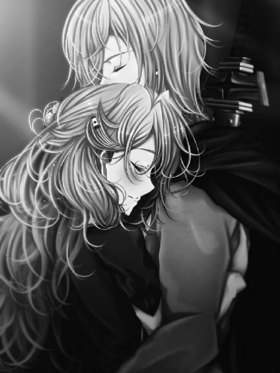
思わず縋るリズベルルを、フィオはそっと抱き止める。
広く、逞しいフィオの胸に顔を埋めて、リズベルルは何度も何度も頷いた。優しい手が髪を撫でてくれるのに、どうしてか涙が止まらない。
二人がそうしていたのは、ほんの一瞬の事。
フィオはそっとリズベルルから離れると、微笑み、一度頷いて、背を向ける。
何か言いかけたのだろうか、ふっと息を継ぐ気配があったが、それきり口を開かぬまま、フィオは静かに部屋から立ち去った。
残されたリズベルルは、外から入って来る風に髪を揺らし少しの間残された温もりを感じて、やがて涙を拭うと窓を閉め、そして微笑む。
がんばれ、リズベルル。
フィオの言葉が耳に残って、何度も繰り返しリズベルルの心を支えてくれた。
一度は部屋で腰を落ち着けようとしたものの、結局未だ冷めぬ興奮が邪魔をして、ノルアードはそれを冷ます為にホテルを出た。
少し風に当たって気持ちを解そう。そう思い湖の近くを歩くと、何処からか不思議な音色が聞こえてくる。
それは懐かしくもあり、切なくもある、琴の調べ。
一体、誰が......その音色に惹かれて行けば、湖の辺に立つ二つの影。
肩から伸びた光を琴の様に鳴らしているシャンロールと、目を瞑りじっとそれに聞き入るゼルナード......。
ノルアードは足を止めて二人を眺める。するとシャンロールが気配に気づいたのか、手を止めた。
「あら、ノルアード様......やはりお好きですのね。旦那さまと同じ。音色に誘われていらしたんでしょう？」
「......邪魔を、しましたか？」
少し躊躇いながら呟くノルアードに、シャンロールは光の帯で口元を隠してふふ、と笑う。
ゼルナードが向き直り、左の瞼を持ち上げてノルアードを見た。
やはり、右目は開かぬのか......とノルアードは思う。
父の纏う雰囲気は、少し変わった。行方の知れぬ間、一体父は何と戦っていたのだろう。
「少し、外せ」
「仰せのままに、旦那さま。今宵は湖のレギオン達も昂ぶっている様子......どうかあてられぬ様、お気を付けて......」
微笑みを残して去って行くシャンロールの背を見送り、それが建物に隠れて初めて二人、正面から向き合う。
父はぎこちなく、穏かに笑って。
「エルデイルに救い出される以前。永劫の時に囚われ、終わりの無い旅を続けていた私を見出し、シャンロールはああして音を奏でてくれた......彼女がいなければ、今頃私は気がふれていただろう。導く者は、人であって人間では無い。奇妙に感じる事もあるかもしれぬが、どうか仲間として迎えてやってくれ」
ノルアードはこくりと頷き、複雑な感情で父を見つめ、少し躊躇いながらも、尋ねている。
「......ジャルバン殿に聞きました。父上は、このエンダージェンに戻られてから我々を避けていたと......無事ならば、どうして早く顔を見せてはくれなかったのですか」
言葉にしながら、ノルアードは後悔している。
久しぶりに会った父と、こうして落ち着いて話が出来ると言うのに、何故自分は攻める様な事を言うのか。
それよりも、父が不在の間、自分が如何にシェラダンを治めて来たかを聞いて欲しい。けれど、溢れる言葉は止められない。
肩で息をしながら、ノルアードは父を見つめ続ける。その口が動くのを、緊張と共に待つ。
「......お前達には、光の中で生きて欲しかった......」
ゼルナードはそうして、閉じられたままの右の瞼を、更にきつくぎゅっと瞑る。
「戦乱の予感を前に、私はこの時代で全ての準備を整えるつもりだった。そして、いつ来るかもしれぬ真の敵に備え、十年でも、百年でも、千年でも待つつもりだったのだ。導く者達の力を借りれば、水門を用いてこの世界と地続きの未来に跳ぶ事も叶うだろう。私は、敵がこの時代に現れるのでなければ、お前達に何も告げず......去るつもりだった」
「......父上、」
「しかし、予言は下された。最早戦いは避けられぬと知ってしまった。だから......」
「見縊らないで頂きたい」
「......ノルアード」
「父上だけに過酷な運命を背負わせるつもりは、このノルアード・フィレントア毛頭無い！ どうか私を信用してください！ 共に戦わせて下さい！ 父上......父さんっ！」
ゼルナードの胸に額をつけ、ノルアードは拳を震わせて切に叫ぶ。
未だこの人の前では自分は庇護されるばかりの子供なのかと思えば悔しい気もしたし、不甲斐なくもあり、何より寂しかった。
声にならぬ言葉がノルアードの脳裏を駆け抜け、そこから自分の本当の気持ちを探し出し、父に伝えようとするが、上手く行かない。
ノルアードがただ黙って震えていると、父は深く息をついて、肩に手を置く。
そっと体を離し、ノルアードを真正面から見つめ、穏かに言うのだった。
「強く、なったな。少し見ぬ間に......見違えた」
「これでも、シェラダンの剣主ですから。無論、父上が帰ってきた以上、立場をお返しする事も......」
そう申し出るノルアードの言葉を遮って、ゼルナードは黒外套の下に手を入れると、腰に下げていた剣を鞘ごと外し、差し出してくる。
戸惑いながらも受け取れば、ゼルナードは頷き。
「我がフィレントア家に伝わる剣......これを持って、初めて真のシェラダン剣主と認められる。お前に譲ろう、ノルアード・フィレントア。シェラダン剣主よ」
「......よろしいのですか」
「剣は、相応しい持ち主を選ぶ。そろそろ重く感じて来た頃だった。お前ならば、使いこなせるだろう」
父の言葉にノルアードは深く頷き、剣を鞘から引き抜いてみる。
ニトクリスの輝きが湖を反射して、それは穏かに辺りを照らした。
「その剣で、大切な人を守れ、ノルアード。そして......私の様になるな」
踵を返し、歩いて行く父の背を見つめながら、ノルアードはゆっくりと首を振る。
剣を収め、鞘に入ったその重みを確かめながら、ノルアードは言った。
「はい、なりません。きっと、父上を超えてみせます」
そうしてノルアードは父の背中に追い付いて、二人穏かに湖の傍を並んで歩いた。
言葉は無かったが、それで良い。何も語らずとも、伝わる事もある。
ノルアードと別れ、宛がわれた部屋へと向かうと、扉の前ではアルベルが待っていた。
ゼルナードは友の顔を見て深く頷き、黒外套を捲って、フィレントアの剣がノルアードの手に渡った事を示す。
アルベルは感慨深げに頷いて。
「ノルアード様は、立派になられた。彼ならばシェラダンを善き方向へ導いてくれるでしょう」
「そう信じる。アルベルにも......苦労をかけたな」
「昔から、貴方には苦労させられっぱなしだ」
彼にしては珍しく、無邪気な笑みを浮かべるアルベルに、ゼルナードもまた旧友との仲を確かめる様に微笑んで。
そして、少しの沈黙の後目を細め、尋ねている。
「ブランダー殿は、もう......？」
「連絡が途絶えて久しい。恐らくは......」
アルベルの言葉に、ゼルナードは唇を噛んだ。
悔やむ様な呟きが漏れる。
「いや、判っていた。禁忌の森で彼の痕跡を見た時、もう彼は全ての力を使い果たしたのだと......私の決意が早ければ、彼を失う事も無かったのだろうか......」
「ブランダー殿ご自身が選んだ道。彼は立派な戦士だった」
アルベルの言葉に、ゼルナードは深く頷く。
人知れず消えて行った一人の戦士が居た事を、自分達は生涯忘れないだろう。
右目の古傷を撫でながら、ゼルナードはそう誓う。
「......真のシェラダン剣主の証......か」
父から譲り受けた剣を、部屋に引き返したノルアードはじっと見つめていた。
ゼルナードに認められたと言う事が嬉しく、また父が帰って来たのだとようやく信じる事が出来て、満たされた想いが心地良く胸を重くする。
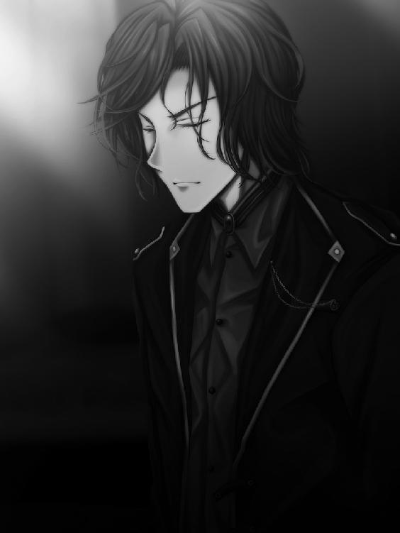
「......しかし～......あのシャンロールさんとは......こう、どう言う関係なのだろうか......」
息子として、若干複雑な想いを感じながら、ノルアードはう～んと悩み、まあそれは落ち着いてから聞けばよかろうと剣を仕舞って、ふと窓に近づいてみる。
そう言えば、上の階にはリズベルルが泊まっているんだ。今の事を彼女に聞いてもらいたいと言う気持ちが湧いてきて、もしかしたら窓越しに話が出来るのではと期待したのだ。
そっと窓を開け、上を窺えば、そちらも窓を開けていたのか、話し声が聞こえてくる。
「君が......好きだ」
ノルアードは無言で窓を閉め、ベッドまで後ずさると枕に顔を埋め。
叫ぶ。
「......ぉおおっ」
今の声、フィオだった。こんな時間にリズベルルの部屋を訪れて、あろう事か愛の告白......。
やはり、そうだった。警戒していた筈なのに、すっかり忘れていた自分が憎い。
先を越されたのだ。リズベルルをとられてしまう。いや、彼女は自分のもので無いのだからノルアードが怒るのは筋違いだが、しかし......。
悶々と悩んだ後、ノルアードは無様な格好でのそのそと体を起こし、その場に正座して深く息を吐く。
「......駄目だな、俺は......」
情けない男だ、と自嘲する。
浮かれたり、落ち込んだり、全くなっていないでは無いかと嫌になった。
一つ冷静に考えてみようと目を閉じ深く息を吸えば、やはり結論は見えているのだ。
自分はリズベルルを愛している。たとえ彼女から拒絶されても、彼女が別の誰かを好いていても、それは変えようのない事実。
これから、虚無との戦いが始まる。これまで、ただの黒海を相手にしていた時とは違う、より危険な命のやり取りになるだろう。
ノルアードは剣主だ。誰よりも先陣に立って剣を振るわねばならない。虚無との戦いでは弦奏鎧に乗って挑まねばならぬのだから尚更だ。
もし仮に、命を落としたとして......その時一人なのは、それでも良い。
けれど、リズベルルに想いを伝えて尚一人なのと、想いを伝えられず一人なのとでは大きく違うし、欲を言えば、想いが通じていれば......ノルアードは、強くあれると思った。
「......大切な人を、守れ」
父の言葉を思い出し、ノルアードはそっと剣を撫でる。
暫しの間時が過ぎるのを待った後、ノルアードは立ち上がり、部屋を出た。
ノックをすると、僅かに間があって、控えめに扉が開く。
覗き込んでくるリズベルルにノルアードが頷けば、彼女はほっとした様に部屋へ迎え入れてくれた。
目が赤い。泣いていたのだな、と思う。
「良かった、ノルアードだ......」
リズベルルはほっと胸を押さえて、ノルアードが首を傾げると微笑み。
「......ノルアードの顔、見たかったの」
「......そうか」
赤く染まった頬、潤んだ瞳、安心しきった表情。
ノルアードは溜息をつく。今から自分は、この人に想いを伝えるのだと思うと、酷く怖くなる。
それは、彼女を傷つけるかもしれない。これまでの関係を壊してしまうかもしれない。
悪い予感ばかりが頭を過り、気付くとノルアードは正直に話していた。
「......フィオに、想いを告げられたのか」
「あ、」
今は閉められた窓を振り返り、リズベルルは瞳を揺らす。
少しの沈黙の後頷き、ノルアードを見つめるその瞳には、けれども動揺は見えない。
その唇が動く前に、ノルアードは話し出す。
「すまない。聞こえてしまった。そして......それを知って尚こんな事を言う私の事を、どうか卑怯と言わないで欲しい」
「え......、」
「君を、他の誰かにとられたくない。リズベルル」
ノルアードが言えば、リズベルルは目を見開き、肩を大きく揺らす。
その呼吸が乱れ、胸が大きく上下するのを見て、もう後には退けぬとノルアードは拳を握る。
「愛している、リズベルル。誰よりも君を」
「......そんな」
目に涙を溜めて、リズベルルはふるふると首を振り、けれどノルアードから視線は逸らさず、一歩後ずさる。
その唇が戦慄いて、言葉にならぬ震えばかりが吐息となって漏れた。
「急に、そんな事......私......っ」
「急じゃ無い。ずっとずっと、私の心には君がいた。リズベルルを想わぬ日は無かった......」
「しんじられないよ」
「なら！」
リズベルルの腕を掴んで、ノルアードは叫ぶ。
青い瞳をじっと見つめ、自らの胸にずっと秘めていた想いが、少しでも正確に届くようにと。
「愛している。何度でも言う。リズベルル......君を愛しているんだ」
「......ノルアードっ」
二人はぎゅっと抱きあい、ベッドの上に身を転がす。
服を通してゆっくりと伝わって来る熱と、高鳴る鼓動の音。
「......もう一度、聞かせてください」
熱い声で、リズベルルが言えば、ノルアードは微笑んで。
「愛している」
「......もう一度」
「愛しているよ」
言いながら、照れ臭くなって、何をやっているんだ俺はと顔を赤らめながらも、しかしノルアードはリズベルルの瞳に釘付けになる。
リズベルルの小さな体に覆いかぶさりながら、それが潰れてしまわぬ様に怖々と手を這わせ、彼女の指を絡め取り、ぎゅっと握った。
「......ノルアード・フィレントア様......貴方のお気持ち、伝わりました」
「......リズ」
「だから、次はノルアードの言葉で聞かせて。ただのノルアード。皆のノルアード様じゃなくて」
私だけの。
その唇が動くのに、ノルアードはどきりとして。
言葉と言うのは何ともどかしいのだろう、と思う。この心の内を、すっかり想い人に渡す事が出来たら、それだけで済むのにと。
「リズ、俺は、君が好きだ。好きで好きで、たまらない。誰にも渡したくない。聞かせてくれ、君の気持ちを。俺の好きな、その声で」
「......私も、ノルアードの事が好き。愛して、います。貴方だけを......」
リズベルルの、赤く染まった柔らかな頬を伝い、流れる涙。
零れ落ちる前にそれを唇ですくって、ノルアードは深く息をついて、次に彼女の唇を塞ぐ。
初めてのキスは、涙の味がした。
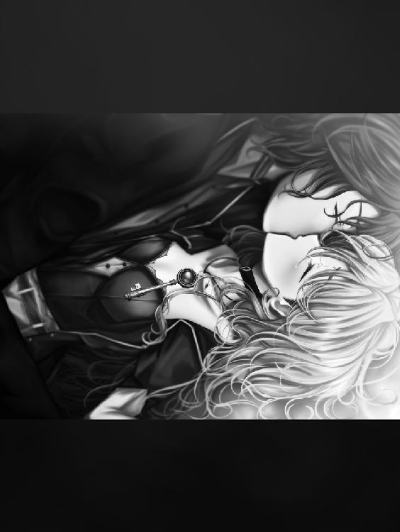
「ゆめみたい」
リズベルルが恥ずかしそうに顔を背けるのを、また唇で遮って、それが終わった後、ノルアードはゆっくりと首を振る。
夢じゃない、と。
握った手が汗ばみ、それはどちらの汗か判らない。高鳴る鼓動も、荒い呼吸も、二人のものであり、二人だけのものだった。
「君を、俺だけのものにしたい」
彼女が逃げ出さぬ様に、リズベルルの手をぎゅっと握り、その瞳を見つめ、ノルアードが囁けば、リズベルルは甘い吐息をはいて、くすりと笑い。
「あなたが......私だけのものになってくれるなら......」
もう言葉等要らないと思いながらも、ノルアードは切なげに目を細め、答えた。
「ずっと前から......君のものさ」
二人は唇を合わせ、お互いの存在を確かめる様に舌で触れあう。
感覚と感覚が混じり合い、二人はただお互いの存在に夢中になった。
「もう、離さない......ノルアードの事、私」
耳を噛むリズベルルの唇からそんな囁きが聞こえ、ノルアードは小さく頷き、目を閉じた。
波打ち際を覗き込むと、夜の湖から蟹の様な生き物が上がって来る所で、ジンはふっと笑みを浮かべながらそれをつつく。
この国に存在する生き物のうち、黒海を浄化する力を持ったものたち。
導く者曰くレギオン、王の使者曰く生体素子。もしかしたら、この蟹もそうなのかもしれないな、と想像する。
蟹はハサミを上げて嫌がり、心なしか早足になって砂の上を駆けて行く。
それで、と隣に立つシズマを見上げて尋ねる。
「最近、お前が一人で抱えていたのはこの事だったのか」
この事、とは無論、来る災いの事である。
近頃シズマが何か胸に抱え、それを黙っている事に気づいてはいたが、まさか此処まで大それた事とは思わなかった。
黒き獣の災い。
このエンダージェンに訪れようとしている、大いなる災厄。
シズマはこくりと頷いて、ジンはふうと息を吐く。
「少しくらい相談してくれよな」
「......すまん。しかし、言葉は悪いがお前達には囮になって貰う必要があった。クルスネット達の様に、剣主同士で対立する事は目に見えていたからな......それに、ゼルナードの事もある。彼の力はこれからの戦いに必要だ。全員を納得させて、強引に結束へ導くには、俺達王の使者が表舞台に現れる機会を劇的に利用しなければならなかったのだ。尤も、まさかそこを虚獣に狙われるとは考えもしなかったが......結果的には、最良の流れとなった」
シズマは一気に捲し立て、立ち上がるジンに申し訳なさそうに眉を落とし、不安そうに俯く。
「怒ったか」
らしくない言葉。
いや、むしろシズマらしいかと思いなおし、ジンはついつい笑ってしまった。
「怒ってないよ。事が事だけに、怒ると言うより今はついて行くのがやっとって気持ちもあるし」
「......正直な所、お前を試したかったのかもしれない。お前なら、俺を信じてくれる......そう思いながらも、俺は何処か不安だった......だから、何も言わず、俺を信じてくれる事に賭けた」
「期待通りの奴だったろ、俺は」
「......ああ」
肩を竦めて笑うジンに、シズマも笑いかける。
昔から、変わらぬ関係。親友同士だから許されるやり取りだ。
「......これからどうなるんだろうな、この世界は......」
「......判らん。しかし、俺は戦おうと思う。王の使者として、この世界の為に」
「俺も戦う。何処までやれるか判らないけれど、皆の為に......俺達は......」
もしかしたら、この為にこそ、招かれたのかもしれない。
言葉にはせず、しかし二人の胸中に浮かんだのは同じ台詞。
自分達は、このエンダージェンで得難いものをこれ以上無いくらいに得た。
今度は恩を返す番だ。
決意を胸に、二人湖を眺めていると、砂を踏む音。
振り返れば、俯いたフィオが歩いてくる。
「どうした、フィオ。暗い顔をして」
「リズベルルに振られた」
あまりにもあっさり言うものだから、ジンとシズマはほう......と頷きかけ、二人一緒に顔を上げ、まじまじとフィオを見て。
何と声をかけて良いのやら、と戸惑っていると、フィオはふっと笑い。
「相手が悪かった。ノルアード様では......僕じゃ、届かない」
「あー、まあそう落ち込むな青年。見ろ、この美しい湖を。悲しい事等全て洗い流してくれそうではないか」
「そ、そうだぞフィオ。お前はなかなか男前だし、言い寄って来る女の子の一人や二人居るだろう」
「......あんなに、可愛らしい人はなかなか居ないさ......あんな、素敵な女の子は......」
「や、それはそうだが」
「うむ、そうだぞ。お前はなかなか見る目があるな」
ジンとシズマはフィオの言葉に深く同意して、それから何となく黙り、また湖を見やる。
フィオがほうっと溜息をつく気配がして、ジンとシズマは郷愁を感じた。
青春だなぁ......。
「リズベルルとノルアード様......うまく行くと良いな......」
「あの二人なら、大丈夫さ」
「いや......これからもずっと、幸せで居てくれると良い。災いなんかに負けず......その為にも、僕は剣を振るう。この国を、平和で満たす為に」
フィオの言葉には、微塵の嫉妬も見えず、ただ心から二人の幸せとこの国の未来を案じる色だけがあって、ジンとシズマは深く心を揺さぶられた。
こんな騎士が居るのだから、きっと虚無も退ける事が出来る。そんな事を思う。
ジンとシズマはどちらとも無くフィオの肩を叩くと、その背を押して歩き出す。
「よし、フィオ！ 今日は飲もう！ 飲み明かそう！」
「そうだぞ、飲んで忘れよう。今日の事は思い出の一ページとして切り取って、新たな恋を探すのだ！」
はしゃぐ大人二人に、フィオは最初は嫌そうに、しかし次第に声を明るくし、最後には笑い出す。
ジンとシズマも陽気に笑いながら、ふとした切なさを飲みこみ、そして思うのだ。
俺達の青春も、ここにある。
ベッドの上に体を投げ出して、仰向けに横になり天井を見上げながら、リズベルルとノルアードは乱れた呼吸に喘いでいた。
胸が大きく上下し、喉の奥につんと鉄の味を感じる。
お互いの感触を手に焼き付ける様に確かめ、舌では味わい、全身で混じり合って尚、高ぶりは収まらない。
この人の全てが欲しい。そんな欲望が体を満たして尚溢れ、すっかり意識は冴えていた。
ノルアードは体を転がし、リズベルルを見る。すると彼女は体を寄せて、軽くノルアードの頬に口付た後、次に唇を塞ぐ。
リズベルルの方から求めて来た事が嬉しくて、少し乱暴に舌を動かせば、彼女は息苦しそうにしながらも、笑みを浮かべている。
みっともなく糸を引く唾液がシーツを汚すのも気にせず、二人は口を離した後も見つめ合う。
こんな事をしているのに、近頃大人びて来たと思っていた筈のリズベルルが、その時急に幼く見え、ノルアードはふっと笑みを漏らしていた。
なに、と首を傾げるリズベルルに、ノルアードは思ったままを伝える。
初めは頬を膨らませるリズベルルも、すぐにころころと笑みを浮かべて。
「背伸びしてた、かな。ノルアードに近づきたくて......でも、ノルアードの気持ちが判って、ほっとして、元に戻っちゃった」
そうしてリズベルルは少し体を丸めて、ノルアードを見上げる様にして。
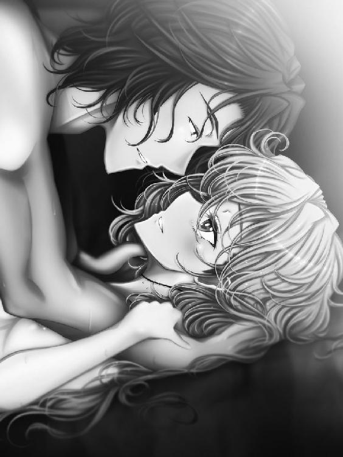
「ねえ、ノルアードは......いつからだった？」
「ん？」
「いつから......私の事、好きだった？」
そうだな、と考え込めば、どうにも明確に思い出せない。
リズベルルがうんと小さい時から、ノルアードは彼女の事を知っていたし、確かに初めのうちはそうした感情は無かった筈だが、これが切っ掛けと言う記憶があるかと言われると無い。
勿論、彼女の仕草、言葉、行動に惹かれた記憶は多々あるけれど、どれが始まりかと言われると難しい。
「......いつの間にか、だな......ずっと昔から好きだったけれど、いつの間にか好きになっていた......そんな感じだろうか」
「......私も、そうかな。ノルアードの事、苦手だった事もあったけど、でもいつの間にか好きになってて、思い出の中のノルアードは、みんな好き......だから、もしかして、初めから好きだったのかも......」
「好き、と言う気持ちがまだ......判らない頃からそう感じて、戸惑っていたのかもしれないな」
「じゃ、私達、お互いに初恋なんだ。私の好きは、ノルアードを想う気持ち。ノルアードの好きは、私を想う気持ち。他の人を想う時は、また別の気持ちになるのかもね」
「残念ながら、その気持ちを知る事は無いだろう。私は、君しか知らないのだから」
「......ちょっと、勿体無いね」
「ん？」
「もっと早く、こんな関係になれてたら、沢山沢山、色んな時間を二人で過ごせたのに」
「......ずっと一緒だっただろう。これからは、前よりもっと近くなる。それだけの事さ」
ノルアードはリズベルルの上になって、前髪を持ち上げ額をつける。
じとりと汗ばんだ肌が吸い付き、お互いの熱が伝わった。
「急に、恥ずかしくなってきたか......つっ」
恥じらい顔を背けようとするリズベルルを唇で封じて、強引に求めれば、一瞬だけ強張った体はすぐに溶け、二人は共に深く息をつく。
体も心も共になり、高ぶる感情の中に、これまで感じた事の無い安らぎがあって、それが愛なのだと二人は思った。
「今日はこうしたまま、眠りたいな......」
「リズがそう望むなら」
「......やっぱり、眠りたくない。今日はずっと......」
潤んだ瞳で囁くリズベルルに、ノルアードは微笑んで。
そうして二人は、空が明るくなるまで話をした。
昔の事。
これからの事。
次々と言葉が溢れて、時間なんて止まってしまえば良いのにと思った。
一夜あけて、ホテルのロビーで新聞を読みながら、ジンとシズマはぐったりとしていた。
色々な事が立て続けに起こり元々疲れていた所に、フィオを交えて夜通し語り明かしたせいで、朝日を浴びても体が眠った感覚のままだ。
もう、若く無いのかもしれん......と真剣に思う二人である。
と、そこにリズベルルが、何だかふらふらとした夢心地な足取りで、けれども満面の笑みを浮かべて現れる。
おはよう、と元気に言うリズベルルに、心底元気の無い挨拶を返し、顔を上げて、ジンはおや、と首を傾げ。
「なあに、ジン」
「......いや、何だか雰囲気が、いつもと違う気がして......何かあったか、リズベルル」
言いながら思うのは、昨夜のフィオの事だ。
けれど、それだけじゃきっと無い。
ジンの予感を肯定する様に、リズベルルはみるみる赤くなって、瞳を潤ませこくりと頷き、囁く。
「......愛してるって」
「お？」
「......ノルアードが、言ってくれた」
シズマが立ち上がり、ジンに敬礼して去って行く。
ありがとう、友よ......ありがとう......歩いて行くシズマの背を見送りながら、感謝の念を送るジン。
リズベルルに向き直った時には、体も頭もすっきり目覚めていた。
「リズベルルは、なんて返した？」
「......愛しています......って」
恥ずかしそうに肩を縮めながら言うリズベルルの頭に、ジンはそっと手を触れ、そして名残惜しくも離れる。
もう、こんな風に気安く触れて良い人では無いのだ、と思えば、感慨と共に寂しさも感じた。
ジンは微笑み、心からの祝福を贈る。
「......おめでとう、リズベルル」
「ありがとう、ジン」
幸せそうに笑うリズベルルに頷いて、ジンはふうっと肩の力を抜き、そして語り出した。
もう、今では遠い昔の事の様にも思える......けれどそれは、ほんの数年前でしか無い、あの日の事を。
「俺がこの国に招かれて少しの頃......ノルアードから、リズベルルの眼の事、そこに封じられているヴィルフォーナの事を聞いた時......その頃には、ノルアードがリズベルルの事を好きだって事も気づいていたけど......俺はあいつと約束したんだ」
「そ、そんにゃまえからって、私もノルアードも、ぜんぶばればれ......」
ふにゃりと赤らめた顔を手で挟みふるふる首を振るリズベルルに笑いかけ、ジンは続ける。
「儀式に挑む決意を固めたノルアードは、もしもの時は、リズベルルの事を頼むと言って、俺はそれを引きうけた。そして、こうも言った」
そう、あの時にこそ、ジンとノルアードは親友となったのだ。
懐かしい思い出をなぞる様に、ジンは言う。
「お前が無事儀式を終えて帰ってきて、そしていつかリズベルルに想いを伝えるその日まで、あの子もこの街も、俺が共に守ってやる......と。それから俺は、君をずっと、守ってきたつもりだ。よわっちくて、情けない騎士だから、本当に守れていたかは......微妙だけれど、俺なりに、ずっと君を見守ってきた」
「......はい」
「......でも、リズベルルの騎士もお役御免。俺は、今日から、ただの......シェラダンの騎士に戻るよ。これからは」
ジンは微笑み、涙を湛えたリズベルルの瞳をじっと見つめ、深く頷く。
「これからは、ノルアードに守って貰うんだ。お互いを信じ、愛して。リズベルルには、あいつを支えてやって欲しい」
「......はい。はい！」
ぽろぽろと零れ出す涙を一生懸命拭いながら、リズベルルはけれども笑顔で、強く頷く。
ジンは続けて何か言おうとして、けれども声が震えてそれは言葉にならず、そうしているうちに何だか可笑しくなって、二人は顔を見合わせて笑う。
ジンの手を取って、そっと撫で、リズベルルは言った。
「......ジン、何処にも行かないよね」
「行かないよ。リズベルルの騎士で無くなっても、俺はこの国が好きだから」
「......だよねっ！」
リズベルルの弾ける笑顔が胸を満たし、ジンは鼻をすする。
と、後ろから駆けてくる気配があって、二人一緒に顔を向ければ、不思議そうに首を傾げるネムリーの姿。
「なに？ ジン、どうしたの？ お腹痛いの？」
「いや、ちょっとね」
「なになに～っ!?」
剣主としての威厳は何処へやら、すっかり子供みたいな顔で追及してくるネムリーの手を取り、リズベルルはジンから少し離れた所で何事か耳打ちする。
ふむふむ、と聞いていたネムリーは見る見る笑顔になって、ぱっと離れてリズベルルの姿をじっくり眺めた後、勢い良く抱き付きぴょんぴょん跳ねた。
「おめでとう、おめでとうリズベルル！ はぁ～、こんなに素敵な事ってないわ！ もう、もう私、感動して......」
終いには感極まってうわーんと泣きだすネムリーを、リズベルルも涙を浮かべながらよしよしと撫でて、そうすると騒ぎを聞き付けた人達が集まり出す。
欠伸を噛み締めながら現れたノルアードは、何時の間にやら輪になった人の中心にリズベルルが居る事に気付いて首を傾げ、ジンを見つけて不思議そうな顔をするので、ジンはそんな親友の肩を拳で強く叩く。
「お前、後で詳しく聞くからな」
「いてて、なんだ急に......おわっと」
ジンに乱暴に背を押され、ノルアードはよろけながらもリズベルルに歩み寄る。
そうするとネムリーはぴょんと姿勢を正し、凄い勢いでジンの所まで駆けてくると、にやにやしながら二人に視線を向けた。
「......何なのだ、一体......？ む、おはよう、リズベルル」
「ふふ、おはようノルアード」
そうして二人微笑んで、ノルアードはリズベルルの腰に手を回した。
ゆっくりと体を近づけ、リズベルルは爪先で立ちノルアードに顔を近づける。
二人は軽くキスを交わして、何事か囁き合い、幸せそうにくすくすと笑った。
「......遂に、ですか」
「ううむ」
いつの間にか隣に来ていたウルグスとジャルバンが眩しそうに二人を見ている。
視線を流せば、近くの柱に背を預け、肩を竦めているシズマとフィオの姿が目に留まった。
シズマが親指で合図をするので、そちらを見やればジンをじっと見ているゼルナードの姿がある。
輪を抜けて彼の前に立てば、ゼルナードはリズベルルとノルアードを見て目を細めながら、静かに言った。
「......ジン、と言ったな。ヴィルフォーナの騎士......君には、感謝してもし足りない。ノルアードを支え、シェラダンを守り、良くやってくれた」
「大した事はしていないさ。俺はただ......自分に出来る事だけを、精一杯してきただけで」
「いいや、ジン。君が守ってきた数多くのもの......あの二人を見ていれば、それが判る」
まさかゼルナードにそんな言葉をかけられるとは思っても居なかったので、ジンは照れ臭くなって頬をかいた。
そんなジンに、ゼルナードは穏かな左目を向けて。
「ヴィルフォーナに選ばれたのが、君の様な男で良かった」
その言葉を噛み締める様に、ジンは頷く。
多分、自分をそう言う方向に導いてくれたのは、あの二人なのだと、リズベルルとノルアードを見つめながら。
シェラダンの魔女の正体、そしてノルアードとリズベルルの関係が知られる事となり、虚獣の出現から張りつめていた皆の空気は少しだけ解れた様だった。
街の代表者達で和やかに朝食をとったあと、ジン、ノルアード、リズベルル、ネムリー、ダルカスはディランに呼び出され、メルディーノの砦の敷地を歩いている。
ディラン・バラウェンはただ一人、剣主達の中で未だ暗い表情を纏っている。口元は微笑んでいても、決して心では笑っていない様な、一体どんな想いを内に秘めているのか、その後ろに続きながらジン達は心配になった。
「......せっかくの喜ばしい空気を、曇らせる事になるかもしれません。しかし、どうしても今......話しておかねばならない。貴方がたが残らず集った、今この時に」
そうしてディランに連れられて来たのは、湖の上に張り出した舞台上の足場。
清めの儀式を行う、あの場所......そこに、懐かしい人が立っていた。
「......お久しぶりです、皆さん」
ジルハワード。
メルディーノの作家であり、そしてプランシューネの父。
訳も判らず心がざわつき、不安が胸を満たす。その場の全員が、僅かに緊張し、そして覚悟した筈だった。
何も、判らない。けれど、予感がある。
ジルハワード、彼が一人で此処に居る事が、全てを物語っている気がした。
「ずっと、お話ししようと思っていた......本当の事を、真実を、私の罪を、そして......あの子の事を......」
ジルハワードとディランは語った。
リズベルルの、ネムリーの、ジンの、ノルアードの、ダルカスの友であるプランシューネの最期を。
ジルハワードが黒海を使って彼女を生かしていた事。ディランが決着をつけた事。メルディーノの予言者がプランシューネその人であった事。二人がリズベルル達に向けて手紙を出し続けていた事も。
何もかもを知った後、５人は言葉無く立ち尽くし、湖を眺める。
信じられなかった。
「......弔ってあげてください。プランシューネの事を......どうか、どうか......」
ディランが差し出す花を受け取って尚、皆は動けなかった。
プランシューネはもう、この世に居ない。
それどころか、出会った頃には死者であったのだ。
メルディーノを訪れた時、皆が期待したのは再会だった。
久方ぶりの再会を喜び、積もった話題を消化して、友情を深める......その筈だった。
ジンは唇を噛み、込み上げる想いに喉を鳴らした後、そっと手にした花を湖に浮かべる。
初めて出会った時、彼女を抱いて家まで送った事を思い出し、その時の温もりが甦る様で、深い喪失に胸が痛む。
ノルアードとダルカスもジンに続き、澄んだ湖の水に花が吸い込まれて行くのを見送った。
「......結果的に、君達を騙す形になってしまった事を、どうか許して欲しい......あの子の、最期の願いだった......君達の中で、あの子が思い出となるまで......楽しい出来事であって欲しいと言う娘の願いを、私は......っ」
ぎゅっと目を瞑り、拳を握って肩を震わせるジルハワードに、ジンはゆっくりと首を振る。
未だ呆然と湖を見つめているリズベルルとネムリーに、ジルハワードは涙した。
「許して......許してくれっ！ 私には、私には......こうする事しか出来なかったのだ......っ！」
ジルハワードの悲しげな声。
リズベルルとネムリーは力無くその場に膝を付き、悲しみに暮れる恋人を支えようとするノルアードを、ジンは止める。
歯噛みし、ノルアードは拳を握る。ネムリーの背中から顔を背け、ダルカスは俯いた。
長い時が過ぎた後、リズベルルがぽつりと囁く。
震え、擦れた声で、悲しげに言う。
「......何だか、そんな予感が、ありました......」
青白くなったリズベルルの手をぎゅっと握り、ネムリーもこくりと頷いて。
「......私達はどんどん大人になって行くのに、手紙の中のプランシューネはいつまでもあの日のままで......だから......だから......」
気づいていました......。
涙を流す二人の少女は、湖の底で眠る友達の事を想う。
共に過ごした時間は、ほんの僅かだったとしても、例えその命が仮初のものだったとしても。
彼女と交わした友情は確かなものであったと。
二人の手から零れる様に花が落ち、それはゆらゆらと揺れながら、湖の底に沈んで行く。
「......ありがとう、プランシューネのお父様......私達の友情を見守ってくださって」
ネムリーが囁き、リズベルルはこくりと頷く。
ジルハワードは目を見開き、深く深く頷いた。その頬を伝う涙が零れ、湖と混じる。
慌ただしい足音が近づいてくる。
「ご報告します！ フェアルージュ、メルヴェイル、アマダンの街に虚獣が出現！ シェラダンの観測塔も次なる黒海の出現を予知したとの事！」
やってきた騎士の言葉に立ちあがり、振り返ったリズベルルとネムリーの顔には、最早弱さは見えない。
二人はディランとジルハワードを見つめて、力強く言うのである。
「プランシューネが遺してくれた予言......きっと私達で食い止めてみせます」
「あの子がくれた機会......無駄にはしない。永遠の友情にかけて！」
ジンも、ノルアードも、ダルカスも、その言葉に胸を打たれる。
ディランとジルハワードの顔に浮かんでいた悲しさが溶けて、二人は希望を見る様に、リズベルルとネムリーをじっと見つめた。
戦いが始まる。
この世界を、愛するものを守る為の戦いが。
ディラン達に別れを告げ、飛行船でシェラダンに戻った一行を迎えた騎士達は、既にゼルナード帰還の知らせを聞いて待ち構えていたようだった。
降り立つなりわっと歓声が上がり、弦奏鎧まで立ち並んで出迎えてくれる。
「おお、ゼルナード......！ 生きておったか！ しぶとい奴め！」
「ウェスター先生！」
白衣を翻して走ってきたウェスター医師はゼルナードを抱きしめ、ゼルナードもまた明るい声でそれに答える。
騎士達の声に答えるゼルナードを眺めながら、ノルアードとリズベルルは寄り添って微笑み、ジンは自分がこの街にとって新参者である事を改めて意識しながら、それでも少し涙ぐんでしまった。
歓迎が終わると、次に騎士達は神妙な顔で、台座に乗った黒い箱を転がしてくる。
中からは時々ごとごとと妙な音が聞こえ、それに加えてちゃぷんと水が揺れる様な音も混じる。
「禁忌の森を探索中に見つけたものです。剣を交えましたが、我々では滅する事叶わず......ディラン殿の考案された方法で捕獲するのがやっとでした」
「そうか」
黒い箱を撫で、ゼルナードは頷く。
ジン達も、その中身を察していた。
「虚獣......結界で包まれていた筈の禁忌の森に、何故奴らが存在しているのだ......」
「俺達は、以前から虚獣の存在に気付いていた。何度か遭遇し、戦ってもいる」
ノルアードの疑問に、シズマが答える。
「恐らく、浸食された王の根から染み出してきたものだろう。マルセーレ上空から出現した事も合わせて考えるに、実体化した奴らに結界は通用しない......」
「出現を拒む事は出来る。しかし、完全にその侵入を阻む事は出来ん。王の根がこの国全土に広がっている事を考えれば、奴らは何処へでも出入り自由と言う訳だ」
ゼルナードは言って、騎士に剣を、と声をかける。
手渡された剣を手に馴染ませ、ゼルナードは左目を細めた。
「この程度の小型のものはメレス、トルフ級に相当するものはオルメレス、ガストルフ級に相当する虚獣はガスメイガスと区別される。虚獣とは、顕在化し実体化した黒海の事だ。奴らは一見不死に見える。宝剣、聖鍵、ニトクリスの力も通用しない......しかし、それはまやかしだ」
ノルアード達を見渡した後、ゼルナードは気合いと共に剣を箱に振り降ろす。
がしゃんと音がして、鏡の破片が辺りに散らばった。
その箱は、内側が全て鏡張りで出来ていた。虚獣もまた黒海。黒水の流動保存性によって、虚獣はこの中に閉じ込められたが最後、こうして箱を外から破壊しなければ出てくる事が出来ないのだ。
即ち、この合わせ鏡による無限の牢獄は、虚獣を封じる為の人魚箱と言う訳だ。
割れた破片を突き破って、中から小さな黒い影......メレス級の虚獣が飛び出してきた。
それはぶよぶよと姿を変え、犬の様に変じると、ゼルナード目掛けて襲い掛かる。
剣が一閃し、黒水を裂いた。
「見ろ！ 虚獣が黒水である以上、ニトクリスの刃で嵩を減らす事が出来る、その性質は変わらないのだ！」
瞬時に姿を取り戻し、飛沫を上げて着地した虚獣は、確かに心なしか小さくなって見えた。
ゼルナードの手から放たれた刃が黒水を吸い込み、虚獣を弱らせたのだ。
しかし、それもほんの一瞬の事。
虚獣は不気味に脈動すると、また元の大きさに戻って行く。
「では、何故不死身に見えるのか......それもまた奴らが黒水であるが故に」
「そうか、亀裂だ！」
「その通り、虚獣は体内に亀裂を持つ！ そこから常に黒水を補給して肉体を保っているのだ！ 見ろ、再生する時不自然に膨らむ奴の腹を！ そこが亀裂に他ならない！」
そうしてゼルナードが切り込むと、足を欠落した虚獣は確かに元の形に戻る時に、大きく腹を膨らませているでは無いか。
まるでポンプの様な動きに、騎士達がごくりと息を飲んだ。
「そして、虚獣の弱点......尤も有効な攻撃は、導く者の持つ破邪の力！」
「旦那さま、私の力がご入り用ですか」
ふふ、と笑みを浮かべながら首を傾げるシャンロールを手で制し、ゼルナードは剣を握り直す。
「しかし、導く者に頼らずとも奴らを滅する方法はある！ 形骸を持ったが故の弱点......奴らの亀裂は、物理的に破壊する事が可能なのだ！」
そうして、事もあろうにゼルナードは虚獣の腹に手を突っ込むと、肉を引き千切る様に力強くその体内から何かを取り出した。
それは、不気味に光る赤い石......ゼルナードが地面に叩き付けると、石はガラス細工の様に粉々になり、やがて砂となり消えて行く。
形を失い、ばしゃっと崩れ、黒水となった虚獣は、騎士達が見守る前でみるみる蒸発し消え去った。あれが、虚獣の亀裂......心臓の様なものか。
「これが虚獣を倒す方法だ。剣で嵩を減らし、再生の時に脈動する亀裂の位置を見極める。そこを破壊すれば、奴らは消滅する」
「......つまり、普通の黒海を相手にする時と同じって事か......動き回る相手の亀裂を探り出す事は容易でないが......とどめをニトクリス玄鏡石に頼らなくても良いとなれば、むしろ単純とも言える......」
シェラダンの騎士、バードが呟くのに、ゼルナードは頷いて。
剣を掲げ、高らかに言った。
「虚獣は未知なる敵では無い！ 例え姿を変えようとも、敵は黒海、恐るるに足らず！」
その言葉に、騎士達が湧く。
ノルアードとジンも剣を抜き、掲げ、高まる士気に雄叫びを上げた。
虚獣は日増しにその数をエンダージェン中に増やしていった。
それは何の前触れも無く地面から湧き上がり、様々な獣の影となって現れる。
まずは小さなメレスが見られるようになった。
初めのうちはただの獣と変わりなく、被害と言えば畑を荒らすくらいのものだったが、それが群れとなると、いよいよ人を襲い始めた。
更に群れの中に中型のオルメレスが現れ、次に大型虚獣ガスメイガスが現れると、最早その群れは明確な脅威である。
人を襲い、建物を壊し、森を、街を蹂躙する。
剣主達は知恵を絞ってそれらを掃討する為に動き出していたが、何せ相手はこれまでの黒海とは一線を画する存在だ。
弱点が判っていても、容易に退治できるものでは無かった。
虚獣の被害で住処を追われた民は日増しに増え、次第に対処も追いつかなくなって来ると、それは集団となり、安息の地を求めて街を離れ始める。
奇術団・ボルダナ一座を率いるボルダナ・マーネルもまた、そんな集団の中に居た。
「虚獣はこの森から現れるって話もある......本当にこんな所を野営地にして平気なのかい、ボルダナの兄さん」
「今のエンダージェンに、本当に安全な場所なんてねーよ。虚獣はどうも街に攻め入る事に熱心な様だし、それを考えたら霧の無くなったこの森の中の方が幾分安全だ。それに見ろ、あちこちにレギオンがいやがる......あいつらが居る場所は安全って話だ」
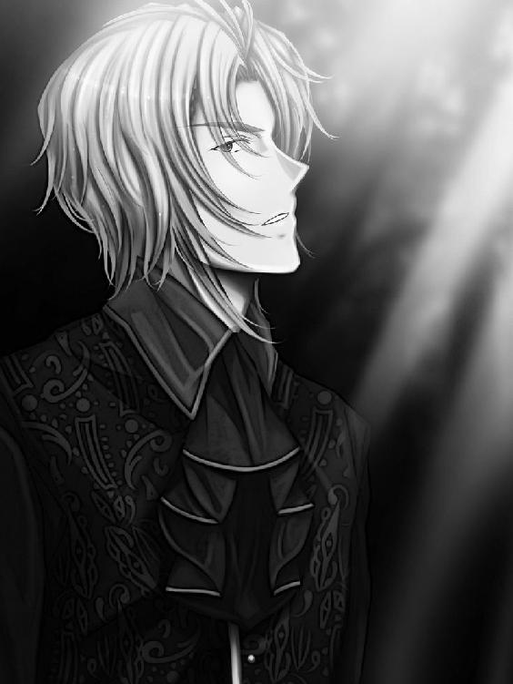
集団の中心格に居る男が相談に来るのに、ボルダナは近くを歩いていた鹿を指して言った。
鹿は、周りで人間達が忙しなくテントを立てているのにもお構いなしで、呑気に草を食んでいる。
見た事も無い様な珍しい種類で、恐らくは黒海を浄化する力を持つレギオンと言う生き物の一種類だろう。
レギオンはエンダージェンの自然に組み込まれた浄化作用だ。この生き物達が居る場所は、清らかで安全な場所だと言う噂が、流浪の民達の間には流れていた。
「ボルダナの兄貴！ 必要物資のリストが出来ましたぜ!!」
そうしてやってくるのは、一年程前に一座に入った青年である。
奇術の方は然程上手くも無いが、人当たりが良く、何より書類仕事をさせたら優秀で、重宝がられていた。
セリオラが沈んでからこちら、ボルダナ一座は目下休業中である。
旅の途中、街を追われ、各地に散ったセリオラの民達と出会ったボルダナは、彼らを支援する事に決めたのだ。
セリオラが沈んだ事で交通が混乱し、飛行船を失いトレーラーで旅をしていたボルダナ一座はそれだけでこれまで以上に移動に制限がかかった事もあるし、何より故郷を失くした彼らをボルダナ自身が放っておく事が出来なかったのだ。
初めは物資の運搬を手伝っていたものが、人を運ぶようになり、虚獣が現れ出してからは流浪の民を先導してレギオンの住む場所を探す様になった。
動けば動く程蓄えは無くなり、時には一座の備品を売り払い、時には出向いた先でショーをして小銭を稼いではいたが、大がかりな奇術ショーを開く機会はなかなか無い。
こう言う時こそ、人々に感動を与え、勇気付けるべきだと思いはすれど、現実はそう甘く無かった。
しかし、一座の面々はそんなボルダナに文句ひとつ言わなかったし、人から感謝される事はやはり嬉しいものだ。
むしろ前よりも生き生きとし、更には団結も深め、ボルダナ一座は健在である。
「うっし、ご苦労さん。やっぱお前に頼んどくと間違いないわ。頼りにしてるぜ」
「へっへ、俺はこんな事くらいしか取得無いから、雑用はどんどん任せてくれよな、ボルダナの兄貴！」
照れ臭そうに鼻をこする一座の青年の肩を抱き、ボルダナは笑う。
よし、次の仕事行って来い！ とその背を押し送り出そうとすれば、向こうからやってくる人影を見て青年は体を強張らせ、ボルダナの背にさっと隠れた。
やって来たのはメルヴェイルの街を追われた夫婦で、今は集団の一つのリーダー格となっている人物だ。
「ボルダナさん、ちょっと聞いてもらいたい事があってね」
「おう、なんだい？」
「実は仲間の間で、此処から少し行った泉にもレギオンが居るって話が出てるんだ。もしそこを拠点に出来たら、前に立ち寄った地点と丁度中間になる。物資運搬の中継地点になるし、何よりテントをより多く立てられる。私達で人数を割いて、行ってみようと思うんだが、どうだろう」
「そのレギオンの住処の泉ってのは、本当の話なのか？」
「......判らない。探索に行った仲間は、泉の魚が翡翠魚に似た種類のレギオンだと言っているんだが、見間違いかもしれない」
「確かめるには、どの道行ってみないと判んねえか......」
ボルダナはふむ、と思案して、すぐに頷く。
泉があるのが真実ならば、飲み水が確保できるだけでも十分だ。行ってみる価値はあるだろうと判断したのだ。
「判った。皆には俺が伝えとく。ただ、約束して欲しい事があってだな......」
「心得ているよ。無理だと思ったら引き返す。泉にレギオンが居ても居なくても、必ず連絡のものをここに寄こす。隊を分けることにはなるが、私達は仲間だ。助け合っていこう」
「勿論だぜ」
ボルダナと夫が握手を交わすと、それまで黙っていた妻の方がおや、と首を傾げ、隠れていた青年の顔をじっと見つめ、見る見る驚きの表情になる。
気まずそうにする青年に妻は掴みかかり、確信を深めると涙を浮かべた。
「あんた......ロッソだろう!? 無事だったんだねぇ......」
「ロッソ......本当にロッソか!?」
夫の方も妻に続き、青年の肩を抱いてその顔をまじまじと見つめた。
ロッソと呼ばれた青年は顔を顰めて。
「人違いさ。俺はカレルって言うんだ」
「馬鹿言うんじゃないよ！ 額のその傷、あんたが昔転んで付けた傷さ！ 全く、盗みを働いて家から飛び出して行ったかと思えば......いや、違うねえ。あれは濡れ衣だったんだろう。後から全部聞いたよ......辛かったねえ。信じてやれなくてごめんねえ」
「うるせえっ！ 今更なんだ！ 俺は......俺はもうロッソじゃ無い！ ボルダナ一座の......カレルなんだっ！」
青年は実の母を突き飛ばし、拳を振り上げる。
父が母を抱き止め、息子をじっと見つめると、ロッソは血が滲むほど唇を噛み、行き場の無くなった震える拳をゆっくりと降ろした。
青年が何か事情を抱えている事を、ボルダナは知っていた。
青年だけでは無い。ボルダナ一座の一員は皆後ろめたいものを抱えたはぐれ者だ。
けれど、その人に真心がある限り、一座は来るものを拒まないし、何も聞かない。
ボルダナ自身、元はと言えばマーネル家を捨てて飛び出した身。それはボルダナ一座の掟の様なものだった。
しかし、ロッソには帰る場所がある。
ボルダナは舌打ちし、先程青年から受け取ったリストを投げ捨てる。
驚いて振り返ったロッソは、自分の作った書類がボルダナに踏みつけられるのを見て愕然とした。
「良く見たらなんだこのリストはよお。滅茶苦茶じゃねえか、さてはお前......食料をくすねるつもりだったな!?」
「な......っ!? そんな筈ねえ、さっきは褒めてくれたじゃねえか兄貴！ 良く見てくれよ！ なんかの間違いだぜっ！」
ロッソはリストを拾い上げようとするが、ボルダナはそれを踵で踏み躙る。
土と草と混じって、書類はぐちゃぐちゃになった。
「大体俺はお前が気に食わなかったんだよ、最初からな。奇術は駄目、演技も駄目、役立たずなんだよ、おめーは」
「......そんな、兄貴......っ」
「その兄貴ってのやめろバカ。とっとと失せろ、行っちまえ。お前の居場所は......此処じゃねえんだよ」
寂しげなボルダナの声に、ロッソははっとする。
ぐちゃぐちゃになった書類を拾い上げ、皺を伸ばしながら、ボルダナは笑った。
「ばーか、お前が誠実なのは、俺が一番よく知ってる。盗みを働く様な奴じゃねえよ、こいつは......行けよ、父ちゃん母ちゃんと一緒に。こんな冗談言う座長なんか愛想尽きたろ。心置きなく行っちまえ」
「兄貴、ボルダナの兄貴......っ」
「仲直りして、父ちゃん母ちゃんを支えてやれ。お前がいりゃ、そっちの隊も安心だろうぜ。そんで......俺の妹がよお、剣主やってんだ。あいつらが虚獣を倒して、世界が平和になったら、戻ってこいよ。一座によ」
ロッソとその両親は、涙を浮かべ、何度もボルダナに頭を下げて去って行った。
準備が整い次第、彼らは隊を分けて泉の探索に向かうだろう。
もしかしたら、その最中虚獣に襲われるかもしれない。あるいは逆に、ボルダナ達が餌食となるかもしれない。これが永遠の別れかもしれず、けれどボルダナは再会を信じて疑わなかった。
「アニキ～、良いんですかい、行かせちまって」
「優秀な書類係だったのになぁ～」
様子を窺っていたのか、マストロ・パストロ兄弟がやって来てそんな事を言う。
ボルダナは服が汚れるのも構わずその場に腰を降ろし、深く頷く。
「帰れる場所がある奴は、帰れば良いんだ。家が無くなっちまってもよ......家族が居ればそこが居場所よ」
それからボルダナは、故郷フェアルージュの事を想う。
何度か近くを通りかかりはすれど、未だ一度も帰らぬ故郷の事を。
「俺もそろそろ帰りてえなぁ......こんな状況だとよ。ネムリーの顔を見て、ぎゅっと抱きしめてよお......ただいまって言うんだ」
目を瞑ると思い浮かぶ、ネムリーの顔。
きっと、前に別れた時よりも彼女は大人びているだろう。
美人になって、剣主としても立派になっている事だろう。
そう、彼女は剣主......虚獣と戦う為に、今やその身を弦奏鎧に投じて戦う戦士......。
彼女の背負った使命を思えば、ボルダナは不安で堪らなかった。
俺に才能さえあれば、変わってやれるのに......何度も何度もそんな事を思い、その度に叶わぬ願いと歯噛みした。
どうか無事で居てくれ。
そう願う。
どうか無事で......ネムリー......。
服をはだけて、濡れたタオルで汗ばんだ体を拭う。
それだけの事なのに、体と心が休まる様で、ネムリーはほうっと息を吐いた。
いつもなら、こんなに運動した後は一時間も風呂に浸かるものだったが、虚獣が街に現れた今はそれも出来ない。
騎士達は慌ただしく街を駆け、代わる代わる弦奏鎧に乗って出撃している。
その時のネムリーもまた、虚獣と一戦交えた後だった。
剣が黒くなるまで攻防を繰り返したが、結局仕留めるには至らず、今はレメサスとバルメナスの剣を休めている所だ。
弦奏鎧に乗って戦うと言うのは、予想以上に消耗するものだった。
ジンが普段からこれと同じ戦い方をしていたと思えば、やはり違うとネムリーは思う。
シェラダンの黒き魔人。本人は無自覚だが、そう呼ばれるだけの力を彼はやはり持っているのだ。
「ネムリー様、ご報告です！ 我らフェアルージュの騎士、尚も交代で逃がした虚獣を追い詰めておりますが、おっと」
ノックもせず部屋に入ってきたフルーナがわざとらしく咳払いをするので、ネムリーはちらりとそちらに視線を流す。
何やら偶然と事故を装っていたが、その視線は肌を晒したネムリーに釘付けで、浮かんだ笑みは満足気である。
「これは失礼、我が麗しの君......まさかまさか、お支度中とは思わず！」
だったら目を瞑るくらいしなさいよねえ、と思いながらも、日頃から頑張ってくれているし、少しくらいサービスよ、と溜息を付くネムリー。
最後に脇の下を拭った後、重い体を動かして乱れた騎士服を直すと、フルーナは実に残念そうな声を上げるので、ネムリーは呆れてしまった。
「貴方って、つくづく大物よねぇ」
「お褒め頂き光栄です！」
「......、」
「ふふ......事故ですよ、事故。決して覗きではありません」
「......それで、何」
「はて？」
「何か報告に来たんでしょう!?」
ばん、と机を叩いてネムリーが叫べば、フルーナは青い顔をして姿勢を正す。慌てた様に声を硬くして。
「ええ、虚獣！ これが実に俊敏な奴でして、逃げられました。地中に溶けて、恐らくはまた王の根とやらを伝って移動しているのかと」
「......そう......難しいわね......」
虚獣が現れてから、こんな事ばかりが続いていた。
五体現れたら、倒す事が出来るのはそのうち二、三体。少なくとも一体にはいつも逃げられて、それは一旦地中に潜った後、思いもよらぬ所から現れて街を危険に晒す。
今は良い。まだ騎士達も士気が高いし、弦奏鎧も剣も足りている。
しかしこれが消耗してきたら、あるいは虚獣が総攻撃をかけてきたらどうなるか......。
「貴方も休んで、次に備えなさい」
「はっ！」
最後だけはびしっと決めて、ネムリーに甘い微笑みを向けた後、フルーナは軽やかな足取りで去って行く。
......元気ねぇ......と苦笑しながら、ネムリーはまた溜息をついた。
机に手を置いて、俯く。
「......お疲れですか」
顔を上げると、ダルカスが立っていた。
深紅の騎士服に身を包んだフェアルージュの騎士は、申し訳無さそうに頭を下げて。
「ノックをしたのですが、返事が無かったので」
「良いのよ。どうしたの」
「先程の虚獣、私とパルナダで殲滅いたしました。その報告です」
「まあ！ 流石はフェアルージュ三騎士だわ」
「......正直、交代前のフルーナの猛攻に助けられた形です」
神妙に言うダルカスは、どうも友を庇っていると言う訳でも無さそうだ。
おちゃらけている様に見えて、フルーナもまた三騎士の一人。
ああ見えてちゃんとやってくれているんだわ。もっと信用してあげないと、とネムリーは反省する。
それから、ダルカスをじっと見つめて。
「......お兄様の行方は、まだ掴めないの？」
「はい。未だ情報が無く......」
兄ボルダナとは、連絡が途絶えて久しい。
これまで移動した先から必ず手紙と電話をくれていたのに、近頃はそれも無かった。
最後の手紙には、セリオラの民達と共に居る事と、暫く連絡できそうにないとの言葉があったから、ネムリーとの約束を反故にしている訳では無いけれど、兄の居場所が判らぬ事はネムリーにとって負担だった。
机の引き出しを開けて、中から封印球を取り出し、じっと見つめる。
これを使えば、王のシステムに接続できる。各地の剣主達に直接、兄の探索を頼む事も可能だった。あるいは、兄がシステムの事に気付いてくれれば、互いの封印球同士で直に通信する事も出来る。
しかし、ただでさえ混乱している状況。剣主達に頼むのも気が引けて、ネムリーは封印球に視線を注ぎ、すぐに考えを改めた。
ダルカスを見上げて、こくりと頷く。
「判ったわ、ありがとう。今日はもう休んで」
「ネムリー様、どちらへ？」
「レメサスの所よ」
何か呟いたダルカスに振り返りはせず、ネムリーは部屋を出ると、フェアルージュの守護鎧レメサスの元へと歩く。
膝を付いて待機していた弦奏鎧に魔を招き、胸部装甲を持ち上げると、その中に体を入れて、ネムリーは深く息を吐いた。
じわりと、目に涙が浮かぶ。
「......お兄様......何処にいらっしゃるの......」
鎧に包まれて、ネムリーは一人泣いた。
兄ボルダナは、きっと人々の為に動いているのだと信じてはいたが、心の何処かではこうも思うのだ。
もう、兄も一座も虚獣の餌食となって、人知れず命を落としているのでは無いか。
そんな筈は無い。一座には元騎士であるマストロ・パストロ兄弟も一緒なのだ。
弦奏鎧も持ち運んでいる筈だし、いざとなっても戦う事が出来る。
頭ではそう思っても、ネムリーの心は晴れなかった。
一人になれば、心細さは増すばかりだ。
「お兄様に......お兄様に会いたい......」
兄を失くしたら、自分は本当に一人になってしまう。
そんな不安が、ネムリーの小さな体を恐怖で包み、震わせるのである。
「......では、そう言う手筈で」
王のシステム内部、ジャルバンとアナメアに別れを告げて、ノルアードの意識は現実へと戻ってくる。
ぱっと目の前に明かりが付く様に、白い仮想の空間から、見慣れた書斎へと景色が切り替わり、ノルアードの体はびくりと震えた。
何度体験しても不思議なものだ。手に持っていた封印球を懐に収めて、ノルアードはふうっと息を吐いた。
「おかえりなさい、ノルアード」
「ただいま、リズ。ずっとこの部屋に居たのか？」
「うん、居たよ」
「少し尋ねたいのだが......システムに接続している間の私は、どんな風だった？ と言うのは、つまり、あちらに跳んでいるのは意識だけなのだろう？ すると、肉体の方はぽけーっと間抜けな顔で此処に座り続けていた事になる」
「う～ん、なんか目をつぶって、瞑想してる感じ、ですね」
ノルアードの真似なのか、目を閉じてぴんと背筋を伸ばすリズベルルである。
ふうむ、とノルアードは頷き、ソファの上に寝転がって足をぱたぱたさせながら饅頭を食べまくっているエルデイルに尋ねた。
「エルデイルよ、もし仮に意識を向こうにやっている間、肉体が何者かに殺される様な事があったら、私の意識はどうなるのだ？」
「んあ？ う～ん、少しの間はシステム上でエミュレートする事が出来るぞ。まぁその時はわらわがお前の肉体を複製し、システムに残留した意識をその中に入れ直してやるから、心配するな！」
「......凄く心配なんだが......」
「なあに、見掛け上は同一人物に見えるから平気平気。厳密に言えば......別人かもしれんがの」
恐ろしい事をさらっと言うので、ノルアードはシステムを使う時は誰かに見張って貰おうと固く誓う。
それから、また別な疑問がわき上がり、続いて尋ねる。
「王のシステムと言うのは、王の根を使った......ネットワーク？ なのだろう？ 虚獣に浸食されているのに、使っていて大丈夫なのか？ こちらの作戦が相手に漏れるのでは無いだろうか」
「あ～、その辺はわらわの本体、太陽の船がカバーしておるから心配するな。わらわの情報障壁は完璧じゃ。如何に王と言えど、破る事は出来ん。尤も、中核をすっかり浸食されるまでの間じゃがな」
何だか良く判らんが、大丈夫らしい、とノルアードは頷く。
しかしこの娘、良く食べるなぁ。
「それよりもノルアード」
「むむ!?」
失礼な事を考えていたのがばれたのかと焦れば、エルデイルはにやにやと笑みを浮かべながらノルアードの頭を指差し。
「そのヘンテコなリボン、似合わんぞ」
「む？ なんだこれは！」
頭に手をやってみると、何時の間にやらそこには可愛らしいリボンが付いているので、ノルアードは慌ててもぎ取る。
エルデイルはきゃらきゃらと笑い声を上げ。
「お前がダイブしている間、リズベルルがず～っと悪戯しておったのよ。髪をくるくる弄ったり、キスしたり、終いには首に噛み付いたりしておった」
言われて見れば、何やら首筋に感触が残っている。
最近知った事だが、どうもリズベルルは感情が高ぶると噛み癖が出るらしい。
こいつめ、とノルアードが目を細め、リズベルルの方を見れば、彼女はにこにこと上機嫌で頭を振って。
「だって、好きなんだもん」
「む。むう......」
そう言われると、咎めるのも憚られる。
顔を近づけてくるリズベルルにノルアードが軽く口づけて、耳元で約束事を囁けば、彼女は頬を赤らめてこくりと頷き、恋人の体にぎゅっと抱き付いた。
かと思えば、リズベルルの髪を撫で微笑むノルアードの頭に、後ろから書類の束が振り降ろされる。
突然の奇襲に、うげ、と変な声を上げるノルアードであった。
「浮かれてるのは判るけど、節操無いのは感心しませんよ、二人とも」
「うぐぐ......マール......」
「は、はい。ごめんなさい......」
頭を押さえて振り返り、書類の束をぱたぱたさせているマールを睨むノルアード。
リズベルルはしゅんとして小さくなった。
「光の灯台が察知した所によれば、あと三時間でガスメイガス級がシェラダンに現れる......でれでれしてると、足をすくわれますよ」
「しかしな、マールよ。こんな時私が気を張っていると、それはどうしても皆に伝わってしまう。先頭に立つ剣主だからこそ、私は余裕を持って挑みたいと思うものだ」
「ですです！ それに、私がぎゅ～ってして愛の力を注いでるから、ノルアードは大丈夫！」
早速実践とばかりにぎゅ～っと抱き合うリズベルルとノルアードを見て、エルデイルとマールは肩を竦めた。
「お盛んじゃのう。しかしま、愛とやらは興味深いぞ！ わらわ達導く者は、元々人間を好ましく思う様に作られておるからの、自然と心に生じる愛なる気持ちが、実は良く判らんのじゃ」
「ほう、全てを慈しむが故に愛に鈍感と言う訳か......」
頷きながら、ノルアードはふと父ゼルナードとシャンロールの事を思い浮かべる。
二人はどうも徒ならぬ関係に見えたものだが、それはノルアードの思い違いだったのかも知れなかった。
そしてシャンロールの事を思い出せば、またまた新たな疑問が湧いてくるのだ。
「父上とシャンロールさんが見せたあの技......エルデイル、お前に同じ事は出来ないのか。もし出来るのなら、力を貸して欲しいのだが」
ノルアードが言うのは、シャンロールの光の帯がヨスフートに与えた破邪の力の事である。
あの力さえあれば、例え敵がガスメイガスであっても恐れる事は無い。
しかし、ノルアードの期待に反し、エルデイルは首を振って。
「あの合体技か。あれはわらわには出来ん。少なくとも今は」
「む......そうなのか」
「わらわの本体、太陽の船は未だ不完全......修復が済めば何れはこの体でもシャンロールと同等の力を扱えるようになる筈じゃ。そこでお前達に改めて言う事がある」
エルデイルは最後の饅頭を一口で丸呑みし、ノルアードを見て言うのである。
「時間を稼げ、ディオンの戦士よ！ お前達が今相手にしている虚獣は所詮雑兵よ。奴らを動かしている、虚獣にとっての王、ブレインが何処かにおる筈じゃ。太陽の船が復活した暁には、その親玉の位置を解析する事も叶うだろう」
「......つまり、太陽の船が復活すれば、我々の勝利......それまで耐えろと言うのだな？ しかし、それはいつになる？」
「その時は間近に迫っておる！ というか、実はもうちょっとじゃ！ なので～......」
期待に目を輝かせるエルデイルに、何処まで信じて良いのか判らんなぁと思いながらも、ノルアードはマールに目配せして。
程無くして運ばれて来たシェラダン名物ジンまんじゅう......本人の抵抗にあった為、改めヴィルフォーナ饅頭の山を、エルデイルは一時間も待たずに食べつくして見せるのだった。
光の灯台によって予見された時刻、シェラダンのトルフ隊は弦奏鎧に乗り込み、虚獣の出現確率が最も高いと目される場所へ集まっていた。
前列にトルフ級七騎が並び、残りは上空のアルカナード号で待機していた。
更にトルフの後ろにはシェルヴァランスが控えており、万全の態勢だ。
シェラダンの守護鎧の足元からトルフを見守り、ノルアード、ジン、リズベルルらは緊張を高めていた。
虚獣出現からこちら、ジンはヴィルフォーナには乗らず、専ら裏方に回っている。
これまでシェラダンに出現した虚獣はメレス級から時折オルメレスが混ざる程度で、光の灯台で出現を予知出来る事もあり、仕留め損なう事も多くありはしたが、最終的に大事には至っていない。
そのどれもがヴィルフォーナならば容易く蹴散らせるもので、弦奏鎧に乗りなれていない騎士達の実践訓練も兼ね、ヴィルフォーナは保険として待機する事が多かったのだ。
しかし、今回光の灯台が察知した虚獣はガスメイガス。
単純に言ってガストルフ級と同等の虚獣である事は間違いなく、シェルヴァランスとヴィルフォーナが必要となる事が予想されていた。
「......む、来るぞ！」
地面から黒水が湧き出した事に気付き、ノルアードが合図すると、トルフは剣を抜き放つ。
みるみるうちに黒水は渦巻いて形を持つと、見上げる程もある獣の姿へと変じていた。
トルフが一斉に切り込むが、虚獣はぐにゃりと姿を変えると、蛇の様な姿となって跳ねている。
まるで伸びきったゴムが勢い良く縮む様に、中空で今度は狼めいた形に姿を変えると、ガスメイガスは生き物であれば喉のあたりにぽっかりと空洞を作り、吠える。
その咆哮は招き主と魔との感応を断ち、トルフは一瞬力無くよろめくが、流石はシェラダンの精鋭たち、すぐに持ち直し、虚獣目掛けて刃を走らせる。
「おおおおおっ！」
トルフを纏ったユフィーユが雄叫びと共に虚獣へ向かう。
その剣は巨大な獣を中央から切り裂くが、トルフとガスメイガスでは大きさの差があり過ぎる。
分断するには至らず、しかし獣はその身から黒水の飛沫を上げて苦しがり、その時黒々とした体内に赤い結晶が見え隠れした。
「亀裂だ！」
虚獣の体内で、亀裂は水に呑まれる様に揺れ動き、位置を変えようとする。
体表に浮かぶ波紋が流れ行く亀裂の在りかを示して、騎士達はその位置を見定めようと目を凝らした。
バードの駆るトルフが確信を持って剣を構える。彼の腕ならば、次の一撃で決まるだろう。
誰もがそう思った時、驚くべき事に地面から更なる黒水が湧き出でて、それはそれぞれガスメイガスへと変ずると、一匹が弱った虚獣に噛みついた。
「な......っ！」
驚きと共にトルフ達が飛び退くと、そこへ黒水の濁流が押し寄せる。
次々と現れたガスメイガスは、仲間を喰らい、また喰らい、最後は一つの塊となって渦巻く。
一体となった無数のガスメイガス。それが変じるは、巨大な顎と尻尾を持った竜である。
「馬鹿な、今日出現するガスメイガスは多くて二体だった筈......観測塔が見誤ったか!?」
ノルアードが驚愕を浮かべれば、その手の中で封印球が熱を持つ。
「すまない、ノルアード君！ ガスメイガス級を三体逃がした！ シェラダンに向かったかもしれん！」
「ノルアード様、こちらもです！ 状況からするに、虚獣達に裏をかかれたのですわっ」
リィガイム、そしてレアンドルの街の境でもしもの時の為に防衛線を張っていたジャルバンとアナメアからの、システムを介した通信である。
これまでシェラダンへ侵攻してくる虚獣は小型のものばかりで、それも光の灯台が出現を察知する為速やかに対処出来ていた。
虚獣はそのシェラダンの優位性に気付いていたのだ。あるいはこれまでシェラダンを襲ったメレスは、ノルアード達を油断させる為の囮だったのかもしれない。
そう気付けば、騎士達は改めて虚獣の恐ろしさに背筋を震わせる。
虚獣達には、確かな知性があるのだ。これまでの黒海とは違う。
「シェラダンに出現する虚獣は二体と思いこんでいた事......逆手に取られたか！ まさかリィガイムとレアンドルから、根を伝って現れるとは！」
そう、虚獣達は一度シェラダンを挟んだ二つの街に顕現した後、王の根を伝ってこの街に侵入したのである。
それを観測塔は見落とした。更に追い打ちをかける様に、虚獣はひと固まりとなる事で未だかつて無い脅威へと変貌している。
シェラダンを落とす為の、それは猛攻であった。
「俺も出る、リズベルル！」
「はい！」
ジンが叫べば、リズベルルが答えた。
胸元の封印の鍵を取り上げて、黒き竜をうち滅ぼす光の詩を口ずさむ。
「海を断ち、天舞う......音色......っ！ な、なに......っ!?」
封印の鍵から放たれる光が、これまでに無いくらい眩く明滅する。
リズベルルの手の中で、鍵はまるで内なる力を抑えきれぬと言う様に激しく暴れる。
「リズ......リズベルル！」
「ノルアードっ！」
苦しげに鍵を支え続けるリズベルルを、ノルアードが後ろから抱き締める様に助けた。
二人の手の中で、鍵は更なる光を発する。それを浴びて、竜の虚獣は苦しげに呻く。
リズベルルとノルアードが、再び唱えた。
「海を断ち......っ！」
「天舞う音色！ ヴィルフォーナっ!!」
瞬間、収束する光が爆ぜて、弦奏鎧ヴィルフォーナが大地を踏む。
輝きが風となって吹き抜け、それだけで虚獣は体表を蒸発させ、一回り小さくなりさえした。
現れたヴィルフォーナの、未だかつて無い輝きに目を細めながら、ジンは駆け出している。
「いくぞ、ヴィルフォーナっ！」
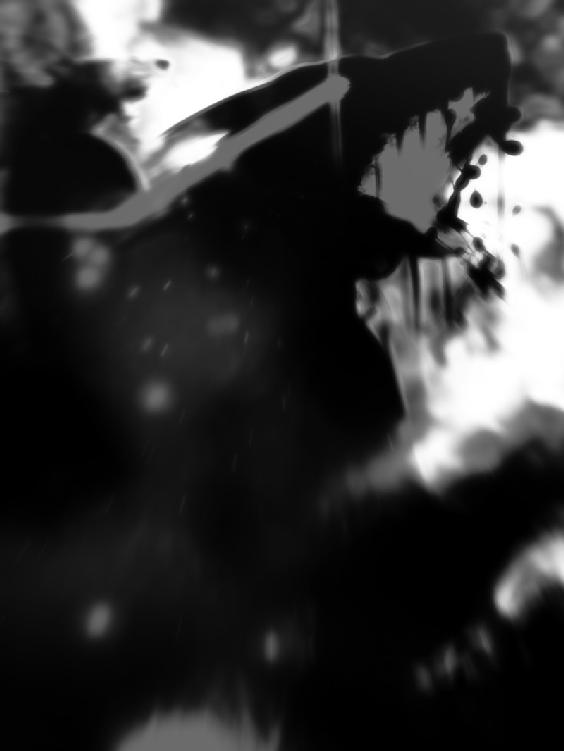
己が半身たる弦奏鎧と一つになれば、ジンは黒竜目掛けて駆け出していた。
体を大きく震わせて、虚獣が嘶く。しかしその声は、エコーデュオンの魔たるジンの存在を揺るがす事は叶わない。
ずしんずしんと足音を響かせて向かってくる竜......いや、それはジンに言わせれば恐竜に近い......が、ヴィルフォーナと激突する。
ざばんと音を立てて黒水が飛沫を上げた。
「ジン！ 普通のやり方では倒せんぞ！ 奴の体内には無数の亀裂があるのだ！」
「だったら......っ!!」
ジンはヴィルフォーナの背に格納されていた竜の頭部を展開し、虚獣の首に喰らいつかせる。
そのまま両腕を黒水で出来た体内に突き入れて、脚部からありったけの推進力を放出すると、虚獣と共にふわりと浮き上がった。
勢いのままに竜の姿へと変じると、翼を展開したヴィルフォーナは虚獣もろとも凄まじい勢いで舞い上がり、雲の層を抜けた所からありったけの力を込めて、その黒き竜をムストル砦の広場目掛けて放り投げた。
ごう、と音がして虚獣が空を切り、地面に叩きつけられる。
凄まじい音と風が吹き、砦の頑丈な窓が立て続けに割れた。ぶよぶよと震えなが尚も立ち上がろうとする虚獣目掛けて、巨大な光の矢が飛び込んでくる。
「おぉぉぉぉぉぉっ！」
雄叫びを上げ、翼に青白い光を纏わせて、未だかつて出した事の無い速度で風を切るヴィルフォーナがよろめく虚獣と激突するや、大地が震える。
衝撃に耐えきれず、霧となって弾け跳ぶ虚獣。
黒い飛沫がぱらぱらと落ち、それに混じって粉々に砕けた赤い結晶が降り注ぐ。
体内にあった無数の亀裂を跡形も無く粉砕された虚獣は、再生する気配すら無く消滅した。
ヴィルフォーナが勝利の咆哮を上げる。
「......ヴィルフォーナ、お前......」
己が半身が見せた強大な力に驚きながらも、ジンは未だ高鳴る心臓の音に笑みを浮かべる。
やがてノルアードとリズベルルを手に乗せたシェルヴァランスがやって来て、ジンの無事を確かめると二人は安堵した様に顔を見合わせた。
寄り添う二人の様子をヴィルフォーナと共に眺めながら、ジンは呟いている。
「......愛の力、ねえ......」
ジンは思う。
リズベルルとノルアードの心が結ばれた今こそ、ヴィルフォーナは真の力を取り戻したのかもしれない、と。
虚獣の集合体を打ち倒したその日の夜、ジンはフィレントア邸の庭、柔らかな草の上に腰を降ろして、ぼんやりと空を見上げていた。
大結界の向こうに見える黒水の流れ。あの美しい煌めきもまた、ひとたび牙を向けば虚獣の様に姿を変えるのだろうか。
いつか、空の結界を突き破って沢山の虚獣がこの国に攻めてくる事もあるのかもしれない。そうなった時、ジンに何が出来るだろう。
あの不思議な少女エルデイルは、太陽の船さえ復活すれば戦局は大きく変わると言っていたが、正直な所何処まで信じれば良いのかジンには判らなかった。
「ああ～、こんな生活いつまで続くんだぁ～」
芝生の上で、アオゾラがそんな事を喚きながら自分の尻尾を追いかけてぐるぐると回転している。
思わず笑みを浮かべ、緊張が解れた事を感謝しながら、ジンはアオゾラの尻尾をぎゅっと掴む。灰色猫は抗議の声をふしゃーと上げ。
「尻尾触るなって言ってるだろ！ 学習しろよなっ！」
「......相変わらず、偉そうな猫だ」
「あら、猫ちゃん」
後ろから声がして、ジンとアオゾラはぎょっと振り返る。
アオゾラは喋っていた所を見られたと焦っているのだろうが、ジンにしてみれば猫に話しかける怪しい人物に誤解されやしないかとそちらの方が心配だった。
こちらへ歩いて来たのは、黒衣の少女。
シズマと同じ王の使者で、確かオウカと言った。この国では見慣れぬ艶やかな長い黒髪が夜闇に光り、ジンは少し昔の事を思い出した。
「ジン君、だよね。少し落ち着いて話してみたかったの。今日、凄かったね」
「砦の窓を割りまくって、怒られたけど」
ジンが肩を竦めると、冗談だと思ったのかオウカはくすくすと笑う。
冗談では無かった。窓ガラス代は給料から引かれた。
「あら、その猫ちゃん......青い目をしてる......」
オウカはアオゾラを持ち上げて、その顔をじっと見る。
初めは首を傾げていたが、見る見るその表情が確信を深めた笑みに変わった。
「もしかして、アオゾラじゃない!?」
「んぁ？」
オウカははしゃいで、アオゾラに頬ずりした。
知り合いなのか、とジンが首を傾げていると、アオゾラはぼんやりと宙を見つめ、はて、と首を傾げて。
「誰だっけ？」
「もう、忘れたの？ オウカよ、オウカ」
「猫違いでは？」
「喋る猫なんて、貴方意外に見た事無いわ」
「あ～」
ぽかーんとしていたアオゾラは、不意にびくりと体を震わせ、目を瞬かせる。
ぽん、と肉球を打って、オウカの頬をぺろりと舐めた。
「はいはい。思い出した思い出した。オウカね。まだ羊飼ってんの？」
「私ね、この国に招かれて間もない頃、牧場のだんなさんとおかみさんの所でお世話になってたの。羊の世話、したした。今はこんな事になっちゃって、二人とも避難してるわ」
ジンへの説明か、オウカは言う。
思えばジンはこの国に招かれてすぐノルアード達と出会えたから運が良かったものだと、今更のように思った。
「それで、その頃私にこの国の事を色々教えてくれたのがアオゾラって訳。いつの間にか居なくなっちゃって、私の妄想だったのかと疑ってた。まさかこんな所で再会するだなんて」
「へえ、俺の時もそうだった。アオゾラがレクチャーしてくれてさ」
お前、色んな所で同じ事をしていたのか、と二人が灰色猫を見つめれば、アオゾラは自分の事なのに良く判っていない様な顔でにゃーんと鳴き誤魔化した。
頭が小さいので、やっぱり記憶出来る容量も少ないのかもしれない、とジンは思う。
「ジン君、アオゾラ借りて良い？ 久々にお風呂入れてあげたいわ！」
「ああ、持ってって良いよ。此処に居てもうるさいし」
「にゃんだとーっ！」
「まぁまぁ。それじゃあ借りてくね」
ふしゃーと威嚇の声を上げながらも、アオゾラは大人しくオウカに連れられて行く。
妙な猫だと思っていたが、ますます不思議な奴だなとジンが一人笑っていると、入れ替わる様にユフィーユがやって来て隣に座った。
「オウカさん、でしたか。何を話していたんです？」
「猫の話だよ」
「そうですか。同郷の方だから、色々あるのかと思いました」
ユフィーユの言う色々が果たして何を想定しているのか、ジンにはいまいちピンと来ない。
確かに同じエコーデュオンから招かれたのだから、聞きたい事は多くあるが、今更元の世界の事を知った所で何になる、と言う思いもある。
「今日、凄かったですね、ジンさん」
またその話か、とジンは苦笑して。
「俺が凄いんじゃ無くて、ヴィルフォーナが凄いんだ」
「......ノルアード様と、リズちゃんの心が近づけば近づく程......ヴィルフォーナの力も増す......本当の事だったんですね......」
いつだったかジンが冗談交じりに教えた事だったが、ユフィーユは存外にその説を支持している様だ。
ジン自身、こうなれば信じる他あるまいといつしか思うようになって、深く同意する。
今日のユフィーユは何だか少し感傷的な様で、物憂げに溜息をついて。
「弦奏鎧に乗り込んで、虚獣と戦う......正直、恐ろしいです。改めてジンさんの勇気が判った」
「今日も、しっかり戦えていたじゃないか」
ユフィーユの顔を窺うと、彼女は眉を落として頷いている。
ジンは何と言葉をかけようか迷う。
「......本当に怖いなら、やめても良いんじゃないか」
「え......？」
「騎士にだって、色んな仕事がある。弦奏鎧に乗って戦うのは、向いてる奴に任せれば良い」
「......何で、そんな事言うんです......」
ユフィーユの沈んだ声に苛立ちが混じったのを感じて、ジンはしまったと肝を冷やした。
元気付けるつもりが、逆効果だったようだ。
焦るジンの様子にユフィーユははっとして、ぎこちなく笑う。
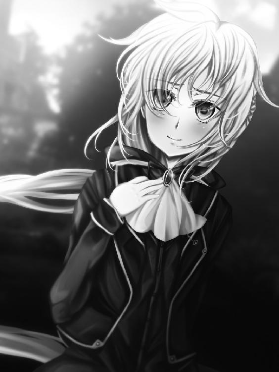
「すみません......でも、ジンさんのそれ、特別な優しさじゃないですよね」
「え？」
「......誰にでも、そう言う事を言うんだ、貴方は。皆に優しい」
「......ユフィーユ」
「すみません」
膝を抱えて体を縮め、くぐもった声でユフィーユは言う。
今日の彼女は、少し妙だ。
「ノルアード様とリズちゃん、仲良しですよね」
「あ、ああ。昔からずっと、お互い好き合っていたからな」
「最近、街でも恋人同士になる人多いらしいです」
「......こんな状況だから、生存本能が高まるんじゃないか」
茶化す様にジンが言うと、ユフィーユはへらへらと笑って、声を低くする。
「ジンさん、私の気持ち、判ってますよね」
ぎくりとして、ジンは肯定でも否定でも無い唸り声を上げる他無かった。
ユフィーユの想い。流石のジンでも気付いている。けれど、一度としてお互いに直接確かめあった事は無かった。
ジンが無言でいると、ユフィーユはもう一度謝り、静かに立ち去った。
溜息を吐いてジンが項垂れていると、がさがさがさ、と草をかき分ける音がして、ぴょーんとアオゾラが飛び出してくる。
にひひ、と意地悪く猫が笑う。
「うわー、ジンカッコワル～っ！ 女の扱い下手過ぎだろ！」
「......風呂はどうした風呂は」
「それがオウカの奴、他の使者に捕まっちゃって。何か難しい事話してるから、一時間くらいしたら入る約束して、戻ってきた。そしたら修羅場だから」
「修羅場では無い」
「実際どうなの、お前そこんとこ。なんか二人くらいねーちゃんに言い寄られてるじゃん。ユフィーユと、コルネリーだっけ？ 料理上手い娘」
大事な事は忘れている癖に、どうでも良い事は覚えていやがる。
痛い所を追及され、ジンはまたしても溜息を吐く。
「どちらか選べ、と言われたら......」
実の所、ジンの中に答えはあった。
けれど、どうしても積極的になれないでいるのもまた事実だ。
時折この想いは真実だと高まる事はあれど、それはすぐに余計な思考で冷めるのが常だ。
考え込んでしまう。勢いで結論を出せない。つまり、俺は本当に誰かを愛しているのだろうか、と言う疑問だ。
昔、確かにそう想う相手が居た。
けれど彼女を失った後、どうも自分は他人を強く想う事が出来ないで居る。
それが友情や家族愛であれば、むしろ昔よりも素直になれていると思うのだが、こと異性に対する感情で言えば、間違い無く淡白になった。
「......判らん......」
そんな中途半端な気持ちで、答えを出してしまって良いのだろうか。
ジンが悩むのはそこである。
かといって、君の想いに答える事は出来ない、と表明する事も出来ていない。
間違い無く誠実で無い振る舞いだったが、ユフィーユの、コルネリーの優しさに甘えていた。
今の関係が壊れてしまう事も怖かった。要するに自分は駄目男なのである、とジンは結論を出し、胸を痛める。
いつかバードに説教された事を思い出し、あの時は真剣だなどと言って返したが、今ではそれも怪しく思えた。
「ま、こんな状況だとさ、お互いいつ死ぬか判んないんだから、やる事やっといた方が良いんじゃないの？ 迷ったら二人とも頂いてしまえば良いじゃない」
「そう言う訳にもいかないだろう」
可愛い顔をしてさらっと下世話な事を言うアオゾラをかき交ぜて、ジンはまたしても溜息を吐く。
お互いいつ死ぬか判らない......確かにそうだ。
もっと真剣にならなくてはいけないのかもしれない。ジンは深く項垂れる。
「彼らは禁忌の森に身を隠し、虚獣の脅威から逃れていた様です。これが正しく聖域と言う様な場所で、レギオンの巣とでも言いましょうか、我らの騎士も、たまたま物資の補給で街に降りて来た彼らに案内されなければなかなか辿り着けぬ様な所でした」
王のシステムを用いた定例会議。普段ならば虚無への対抗策を練る時間だったが、その日タチアンタの街の剣主が話題に出したのは、禁忌の森の難民キャンプの事だった。
虚獣に街を追われた人々が、寄り集まって何処かに避難している事は知られていたが、その一部がまさか禁忌の森に隠れていたとは思いもよらない。
それも話を聞く限り少数では無く、かなりの人数。まずは人々が無事な事に剣主は安堵して、何よりも先に彼らに手を差し伸べるべき所を、虚獣への対処に追われて疎かにしていた事を深く反省した。
「レギオンの住まう所は聖なる土地......確かに虚獣も簡単には攻めて来られないでしょう」
「うむ、我々も可能な限り街に避難民を受け入れては来たが、今や虚獣の現れぬ街は無い。これでは限界がある。禁忌の森は未だ謎の多い場所だが、あそこを利用できるのならこれに越した事は無い」
「王が汚染された今、あの森に立ちいる事も危険と思いこんでいましたが、考えを改めねばなりませんね」
「それで、集団のリーダー格の男はあちらに騎士を派遣して欲しいと。そうでなければ身を守る武器を回してはくれぬかと願われたのですが、我々も今は余裕が無く......すると彼は、フェアルージュにこの事を伝えてくれと言うのです」
「私に......ですか？」
タチアンタの剣主が窺う様に言うので、ネムリーは首を傾げながらも、胸を高鳴らせる。
まさか、との予感が込み上げて、それはすぐに確信へと変わった。
「その方は、名をなんと......？」
「ボルダナ、そう名乗りました。どうやら元は旅の一座の座長だとか......」
それまで腰掛けていた幻の椅子を転がす勢いでネムリーは立ち上がり、飛び出しそうになる心臓を押さえつける様に胸に手を置き、ネムリーは何度も何度も頷いて。
「その方は......その方は私の実の兄に違いありません！ ボルダナ・マーネル......私のお兄様......生きてらした......どうか、どうか皆さん......彼らに食料と、毛布と、身を守る武器を......！」
「私からもお願いしたい。ボルダナは信頼出来る男です。彼ならば、我々の手が届かなかった民を救い、守ってくれる筈！」
涙を流すネムリーに、ノルアードも立ち上がって深く頷く。
剣主達も皆その事実に驚きを隠せず、新たな希望の登場に歓喜した。
「おお、彼がまさかネムリー殿の兄上であったとは！ 無論、我らも準備が整い次第協力するつもりです」
「我々が不甲斐ないばかりに、彼らには不自由をさせてしまった......これからは定期的に連絡を取り、お互いが協力する体制を作って行きましょう」
満場一致で意見がまとまり、その日は皆明るい表情で解散する。
システムから現実へと回帰したネムリーは、力無くその場に崩れ落ちてしまった。
「お兄様......お兄様......！」
兄が無事でいた。いてくれた。
その事が何よりもネムリーを勇気付け、虚獣と戦う力を与えてくれる。
立ち上がったネムリーの表情に最早憂いは無く、ただ剣主としての誇りと自信に満ちている。
その日レメサスで出撃したネムリーは、ただ一人で四体ものガスメイガスを屠って見せた。
「......我が剣に、断てぬもの無し！」
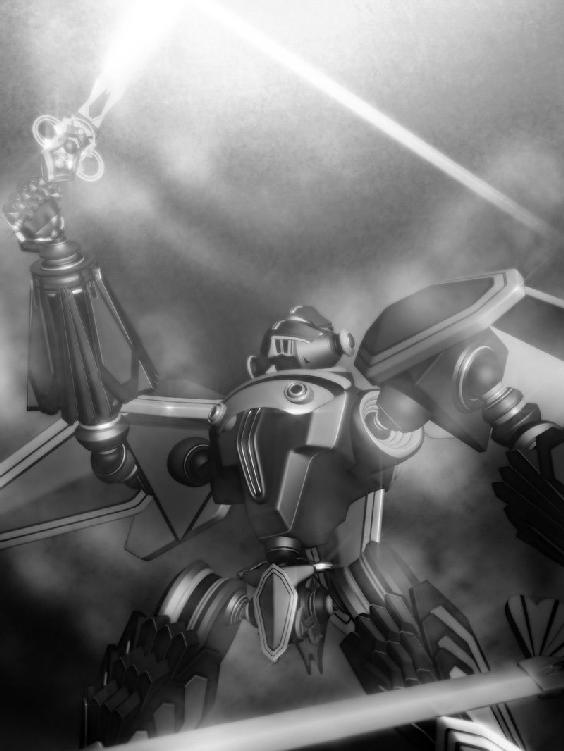
バルメナスの剣を天へと掲げ、レメサスを纏ったネムリーは高らかに勝利を告げる。
騎士達が湧いて、それは街中に明日への活力となって響き渡った。
待っていて、お兄様。
きっと貴方が帰ってくる場所を、守り抜いてみせる。
ネムリーは遠く兄の事を思い、微笑むのであった。
エンダージェン中央区画、禁忌の森上空を燃え盛る炎が過った。
ごうごうと音を立てて揺らめくそれは、人々が言葉無く見守る前で鳥の姿となり、大きく羽ばたきながら降りてくる。
不思議な事に、その火の鳥が纏った炎は森の木々を燃やす事は無く、明るく照らされた周囲の温度が変わる事も無い。
足を着いた火の鳥が静かに体を沈めると、その上から黒衣の男と腕の無い娘が降りてくる。
突然現れた火の鳥に、新たな虚獣が現れたのかと警戒していた人々は、少なくとも敵では無いらしいと気付きほっと胸を撫で下ろしながらも、現れた二人の出で立ちにはぎょっとして固唾を飲む。
そこは街を追われた流浪の民が身を潜めるレギオンの聖地。民の代表として駆け付けたボルダナが、来訪者へと歩み寄る。
「こいつは一体なんて生き物だい。燃える体を持った鳥なんて、まるでお伽噺だぜ」
「君がボルダナか。ボルダナ・マーネル」
「ああ。そう言うあんたは......」
「我が名はゼルナード・フィレントア。遅れ馳せながら街を追われた者達の助けとなるべく参上した」
「ゼルナード......フィレントア！ あんた、ノルアードの旦那の親父さんかい！ 生きていたと噂で聞いたが、本当だったのか！」
ボルダナが差し出す手を、ゼルナードは頷きながら握り返す。
騒ぎを聞き付けた騎士達がやって来て、ゼルナードの来訪を喜んだ。
剣主達からの支援物資を携えて騎士達がこの森にやって来たのは数日前の事だ。
キャンプも大所帯となり、ある程度落ち着いてきた所だったので、そろそろ街との連絡を密にするべきとの意見が大きくなった矢先の事であった。
「食料、薬、毛布にテント、色々届いてる。騎士連中を寄こしてくれたお陰で森の探索も進んでるし、もし街の連中で窮屈してる奴らがいたら、こっちに避難してもらっても良いくらいだ。なかなか快適だぜ、ここは」
「それは何よりだ。剣主達は......これまで対処が遅れた事を大変悔やんでいる。どうか彼らを責めないでやって欲しい」
「よしてくれ！ 逃げ出して来たのは俺達の方だ。命を張って戦ってる騎士達を責める理由なんか無いぜ」
ボルダナが言うのに、ゼルナードは安堵した様に表情を和らげ顎を引く。
彼もまた先代シェラダン剣主。今尚続く虚獣との戦いの中、剣主達が抱える苦悩を一番理解しているのは彼だろう。
「もう暫く、耐えて欲しい。このフラングラムをおいて行く。彼はレギオンの長だ。如何なるレギオンも、彼に従う。君達の心強い助けとなるだろう」
「やっぱりこいつもレギオンなのかい。それとも導く者って奴か？ 触っても......平気か？」
ゼルナードが頷くのに、ボルダナは恐る恐る火の鳥に触れる。
ゆらゆらと燃える炎は、触れるとむしろひんやりとした心地で、しかしその奥に確かな生き物の温もりが感じられた。
火の鳥フラングラムはボルダナに顔を寄せると、その頬に優しく触れる。炎の奥に見える金の瞳には知性の色が感じ取れ、ボルダナは一目でその生き物が気に入ってしまった。
「よろしく頼むぜ、フラングラム。お前がいりゃあ、これまでよりずっと楽に安全な場所を探せそうだ。そっちのお嬢さんも、噂の導く者かい？」
「シャンロールと申しますの。お見知りおきを、ボルダナ様」
恭しく頭を下げて、シャンロールは光の帯を伸ばすと、琴を鳴らす様に美しい音色を奏でた。
「......あら、貴方も封印球を持っていらしたんですのね。古き戦士の遺した希望......貴方もまた、デュオンの戦士......」
シャンロールが謳う様に口にした言葉に、ボルダナは懐に仕舞い込んでいた封印球を服の上からそっと撫でる。
その時、ゼルナードが開く方の左の瞳を大きく揺らした様な気がしたが、彼はシャンロールの言葉には言及せず、冷静な声で言う。
「じきに王の使者達が到着する。彼らはガストルフ級弦奏鎧の使い手だ。この森に未だ残る虚獣は、彼らに任せると良い」
「あ、ああ......レギオンに、導く者に、王の使者......か。聞いてはいたが、やっぱり大変な事になっているんだな。このエンダージェン全土が......」
ボルダナは呟き、胸に圧し掛かる重たい気持ちに顔を俯ける。
やがてゼルナードとシャンロールは騎士達と言葉を交わし、その場に背を向ける。
彼らにネムリーの事を尋ねようかボルダナは一瞬迷うが、すぐに言葉を飲みこんだ。
知った所で、ボルダナに出来る事は無い。
ゼルナードがふと足を止め、振り返らずに低い声で言う。
「......妹君が、心配しておられた。君に会いたいと......」
「ネムリーが、そう言ったのか......？」
「......彼女の心が、そう叫んでいる様に思えただけだ」
そうしてゼルナードとシャンロールは去って行く。彼らは彼らで、やる事が多くあるのだろう。
残されたボルダナは、言葉無く立ち尽くす。フラングラムが案ずるように翼を揺らす。
燃える羽に紅蓮の色がちらりと垣間見え、それが脳裏にネムリーの姿を連想させる。
その眼差しが、何かを訴える様に自分を見ていた。
最終工程を終えた後、グレンは万が一の事が無い様にもう一度細部点検を繰り返す。
横たわった鉄の躯に手を突っ込んで、感触を確かめ、それが自分に一番合った具合である事を再確認すると、満足気に笑みを浮かべる。
ばん、と工房の壁に手をつく音がして、ちらりと見れば息を切らせたレイルが立っていた。
慌てた声で。
「グレン、何をしているの!? 警報があったでしょう！」
「ああ。何の知らせだ、ありゃあ」
「避難警報よ！ 早くしなさい、逃げるのよ！」
レイルの言葉にグレンは生返事で返して、近くに落ちていた布を取り上げ手を拭う。
その間もレイルはやきもきした様子でこちらの様子を窺っていたが、いい加減我慢ならぬと何か言いかけた時、新たな来訪者がくじら工房へと駆けこんで来る。
「くじらの小僧！ わざわざ迎えに来てやったのだ、早くせんか！」
それはレアンドル、アスバード砦の騎士で、いつもグレンに小言をくれるうちの一人である。
その姿が見えた事で、グレンはようやく慌てだした。と言っても、状況にでは無い。
わざわざ迎えに来てやった、と言う騎士の言葉そのものにだ。彼がそう言うからには、これはアナメアの命であろう。
おばちゃんは怒らせると怖いからな......グレンは心の中で小さく体を震わせた。
「おっさん、俺は良いからそこの学者先生を早く連れて行ってくれ」
「貴方も行くのよ！ 何もずっとこの工房を空けろと言うんじゃないの。ほんの数時間、数十分、レアンドルの騎士達が虚獣を追い払うまでの間避難しろと言う話を......」
「だからっ」
耳をふさぎ、声を荒げ、グレンは自分の後ろに横たわる巨体を踵でこんこんと叩く。
レイルと騎士があっと口を開け、顔を見合わせた。
「......俺が作ってんの、あんたら何だか判ってる？」
くじら工房自慢のガストルフ級弦奏鎧、ニールギガスの冷たい装甲を撫でて、グレンは笑う。
「行くぜ！」
威勢の良い言葉と共に、それはゆっくりと身を起こした。
レアンドルの市街地では、弦奏鎧と虚獣との激しい攻防が繰り広げられていた。
時に獣の姿で建物の隙間を縫う様に駆け、時に液体となり細い路地に流れ込み、それはレアンドルの騎士達を翻弄する。
出現した虚獣は、最も脅威となるガスメイガスが二体、オルメレスが一体。その他メレスが複数体。
それもナーギアが把握している限りの数で、もしかしたら建物の隙間に更なる脅威が潜んでいるかもしれない。
手強いわね。額を滑る汗を頭を振って落とし、ナーギアは奥歯を噛む。
「逃がしません！」
レアンドルの守護鎧、パラギアスを纏った剣主アナメアが動く。
王の宝剣ランスニールの剣と聖鍵カリンガインを目にも留まらぬ勢いで振り抜けば、それはガスメイガスの体をごっそりと削り取った。
まずは一体、アナメアの手によってガスメイガスが消滅する。
間髪入れずにメレスを引き連れたオルメレスが津波の様にパラギアスへと襲い掛かり、アナメアは苦戦を強いられる。
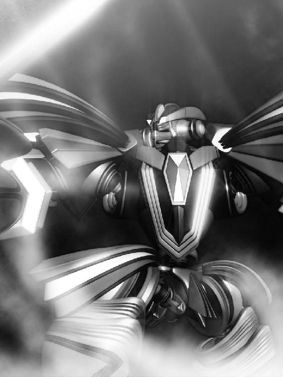
「お母様！」
トルフを纏うナーギアは、他の騎士達が駆るトルフと共に、剣を構え直し母の援護に走る。
その時、頭上に暗い影が落ち、はっと見上げれば高く飛び上がったガスメイガスの姿。
しまった、と思った時には既に遅く、逃げられぬと悟ったナーギアは渾身の力で剣を振るう。
金属の拉げる、嫌な音。
「嘘っ!?」
呆然とするナーギアの頭上で、折れたニトクリスの刃が回る。
それは力無く落下し、重く乾いた音を立てて虚獣の傍に転がった。
「ナーギアお嬢さま！」
騎士の誰かが叫んだが、トルフ達は湧き上がるメレスに纏わりつかれ身動きが出来ない。
ナーギアは唸り声を上げているガスメイガスを睨むと、短くなった剣でその額を突き刺した。
黒水が弾け、傷ついた頭の奥から新たな頭が伸びてくる。変幻自在の虚獣を前に、剣そのものは決定打にならない。
亀裂を......亀裂を見つけ出さなくては。焦るナーギアの体を、更なる衝撃が突き抜ける。
視界がぶれて、一瞬意識が跳びそうになった。トルフの手元を見れば、さっきまで握っていた筈の剣が見当たらない。
破裂音と共に、またしても衝撃。トルフの強固な装甲に穴が開いていた。
「嘘でしょ......っ」
虚獣に組み敷かれたナーギアは、何とかその下から這い出ようともがくが、更なる衝撃がトルフを襲い、ぐらりとバランスを崩す。
辛うじて見れば、トルフの下半身が穴だらけになっていた。黒水だ、と気付く。
先程からの衝撃、虚獣が凄まじい勢いで噴射した黒水が、弾丸の様にトルフの装甲を打ち抜く音だったのだ。
ぞっとするナーギアの耳に、母の声が届く。
「ナーギア！ 鎧を捨てて逃げなさい！」
逃げなさいって言っても......絶体絶命の状況下、ナーギアは気がふれた様に笑ってしまった。
これは流石にやばいわ。
はあ、と溜息をつく。グレンに偉そうな事を言ったって、肝心な所で失敗ばかり。筆頭騎士が聞いて呆れるわ。
そんな自分が嫌になるのと同時、脳裏に浮かんだ幼馴染の顔が憎たらしく、恋しく、ナーギアは目に涙を浮かべてその時を待つ。
どうせ死ぬなら、格好良い死に方を。
いつかグレンの父シルバを想って母と交わした言葉。
今の私、格好悪い。最悪に。
「おおぉぉぉっ!!」
ずどんと、破裂音。
目の前が白み、これが死と言うものかとナーギアは覚悟して、どうもおかしいぞと気付く。
恐る恐る目を開ければ、そこに虚獣の姿は無く、代わりに聳え立つのは、ガストルフの勇姿。
「......グレン！」
くじら工房の弦奏鎧、ニールギガスを纏ったグレンである。
長らく未完成であったその弦奏鎧には、今や四肢が揃い欠けも無い。
助けに来てくれたのね！ とか、遂に完成したのね！ とか、色々な言葉がナーギアの脳裏を駆け抜け、やはり自分にはこの人しかいないとの迂闊な想いが浮かび。
「無様な姿だなあ、筆頭騎士様よお！」
「あんたねえ、もうちょっと言い方があるでしょうが!!」
前言撤回。後で殺す。生身で殺す。
ニールギガスに乗って絶好調のグレンの足元で、ナーギアは芋虫みたいになったトルフから這い出し、そそくさと逃げながら、拳を握って誓うのであった。
「俺は騎士様と違って上品な戦い方を教わって無いんでね。俺流で行くぜ！」
言われて気付けば、ニールギガスにニトクリスの剣は備わっていない。ただでさえガストルフ級に合う剣なんてそうそう無いのに、グレンはどうするつもりなのかと思った矢先、ニールギガスの拳に備わった四基のスラスターが光を放った。
「うおおぉぉぉぉぉっ！」
グレンの雄叫びと共に、ニールギガスが駆け抜ける。
その拳は凄まじいまでの魔を噴射して、まるで鎧本体を引きずる様に加速した。
空気が破裂する様に弾け、ニールギガスの拳がガスメイガスに激突する。
轟音を上げて弾け飛ぶガスメイガス。一体どれ程の衝撃が加わったのか、赤い結晶もろとも砕け散る。
「......ウソでしょ......」
多分、亀裂まで砕けたのはたまたまだ。
たまたまだけど、あり得ない......何だか力が抜け、ナーギアがぺたんとその場に座り込むのと、向こうでパラギアスがガスメイガスを討ち取るのはほぼ同時。
さっと波が引く様に小さなメレス達が地中へ潜って行く。後を追おうとするグレンに気付き、パラギアスを纏ったアナメアがそれを引きとめた。
「深追いはよしなさい。今日はもう襲って来ないでしょう......ナーギア、無事ですか」
「腰は抜けたけど、無事です......」
パラギアスから降りて来たアナメアが、立てないで居るナーギアに駆け寄りほっとした様に笑った。
ニールギガスからグレンも降りて、駆け足で来る。その表情に安堵の色が僅かに見えて、ナーギアはおや、と思った。
「冷や冷やさせやがって」
先程の顔は見間違いだったのか、いつもの仏頂面で言うグレンに、ナーギアは口をぱくぱくさせ、結局怒る気力も無く、こくりと頷く。
それから、ニールギガスを見上げた。シルバの形見であり、グレンの作品でもあるその鎧を。
「これで、くじら、捕まえに行けるね......」
ぽつりと呟き、ナーギアは涙を拭う。
明らかに、戦いは激化している......。
その夜、報告書に目を落とし、ノルアードは沈痛な面持ちで息を吐いた。
複数の虚獣達が寄り集まって一つの巨大な虚獣として振る舞ったり、黒水の弾丸を放って攻撃して来たりと、虚獣の戦い方は次第に変化して来ていた。
そのどれもが、人類側への大きな打撃となる猛攻であったが、こんな事が出来るのなら何故虚獣は初めから全力で向かって来ないのだろう。
「......王、か......」
一人呟き、ノルアードは唇を噛む。
虚獣の激化は、あるいは王の浸食を表しているのかもしれない。王は未だ、その身を蝕む黒海への抵抗を続けているとエルデイルは言ったが、その最後の力が徐々に弱まり、それが虚獣達に変化を齎しているのでは無いか。
だとしたら、王が完全に虚無の手に落ちた時、この世界はどうなるのだろう。
考えれば考える程気が滅入り、ノルアードはその想像を振り払う様に小さく首を振る。
エルデイルは、ここ数日姿が見えない。太陽の船を起動させる最終段階に入ったと言って、何処かへ姿を眩ませてしまった。
彼女ならば、何か知っているかもしれないが......とノルアードは思い浮かべ、だとしても、自分にそれを聞く勇気はあるだろうかと眉を潜める。
もし、その答えの先に待つものが絶望だったとしたら......それを聞いて何になると言うのだ。
今はただ、エルデイルの言う事を信じよう。太陽の船さえ復活出来れば、戦局は大きく変わる。その言葉を。
背もたれに体を預けて、ノルアードは天井を見上げながら椅子を回した。こんこんとノックが聞こえ、生返事をすれば扉が開く。
「お疲れ様、ノルアード」
食事の乗ったカートを転がして現れたのはリズベルルだ。
彼女の顔を見ると、それまで腐っていた気持ちが一瞬で洗い流される。
しかしどうにも食欲が湧かず、笑みを浮かべながらもノルアードは首を振る。
「後で食べるよ、ありがとうリズ」
「私も一緒に、食べようと思って来たの」
「先に食べると良い」
ノルアードが言えば、リズベルルは見る見る元気を失い体を縮める。
慌てて席を立てば、にっこりと笑みを浮かべて皿を並べ始めるリズベルルである。
敵わんな、とノルアードは笑う。
「食欲、無い？」
「いや......こうしている間にも、家を虚獣に壊された人々は落ち着いて食事も出来ぬのだなと思うと......少し考えてしまってね」
「そう言う人達が増えない様に頑張るのが、ノルアードの仕事でしょう？」
そう言って、リズベルルはノルアードの背を押してソファの前まで連れてくると、肩に手を置き座らせる。
自身は向かいに腰掛けて、並べられた食事を前に、めしあがれと手を広げた。
「沢山食べて、力をつけなきゃ。戦う力。皆を守る力。あと、余った力は私を想う力にしてくれると、嬉しいな」
「......うむ」
頷けば、丁度腹が鳴る。
なんと言おうと、減るものは減るのだ。ノルアードは照れ臭くなって頬をかき、リズベルルが用意してくれた食事に手をつけた。
「うん、美味いな」
「私もお料理、手伝いましたから」
えっへんと胸を張るリズベルルを眺めていると、それだけで飯も美味くなる。
ノルアードが料理をぱくつくのを見て、リズベルルはふわりと笑みを浮かべた後、自分も食べ始めた。
と、その手が止まり、不意に顔を赤らめたリズベルルが、ノルアードに肉の刺さったフォークを差し出す。
「おにく」
「肉だな」
「あ～ん？」
「む、これがあ～んと言うものか......」
感動しながら、ノルアードは恐る恐るそれを口に含む。
自分の皿に乗っているものと、勿論味は変わらない。変わらないが、美味かった。
今度はリズベルルの方が餌を待つ雛鳥みたいに口を開けて待っているので、お返しとばかりにノルアードも続く。
「あ～んだ、リズ」
もぐっと噛みついたリズベルルは、なかなかフォークから離れようとしない。
その顔が見る見る赤くなり、二人は見つめ合ってくすくす笑った。
「私達が出会えた事は......運命？」
食事が終わって、二人ソファに寄り添いあって身を埋めていると、不意にリズベルルが耳元でそう囁く。
勿論、運命だろうとノルアードが頷けば、リズベルルはぼんやりと窓の外を見ながら呟いた。
「人は運命では無く、ただ茫漠たる未来へと臨むべきだ。時に運命に抗う事になろうとも、想いはそれを超えていける......」
「その言葉は？」
「夢で......多分、夢だと思う。お父さんが言ってた。そう信じるって......」
「想い......か」
その言葉は、ひどく心許なくノルアードの胸に響いた。
予め定められた道筋が運命なら、人は想いの力でその道を辿る事も、辿らない事も、もしかしたら選べるのかもしれない。
仮に抗うとしたら、それは心細い旅になるだろう。危険を伴う旅だ。
もしかしたら、王の掟に反した時、自分達もまたその定められた道から外れたのかもしれない、とノルアードは思う。
いや、それすらも運命のうちなのか......答えの出無い問いかけが思考の渦に飲まれて行くのを見送りながら、しかし、とノルアードは思うのである。
「私がリズベルルを選んだ事は......運命であり、私の想いだ。もし次があっても、私は君を選ぶだろう。例え、それが全てを敵に回す選択だったとしても」
「......私もだよ」
手を握って、額を合わせ、二人は微笑み合った後、お互いの吐息を絡め取る様に唇を合わせる。
伝わってくる温もりが、体全体に甘い毒の様に巡り、熱に浮かされた様に互いの名を呼び合いながら、ノルアードとリズベルルは二人だけの時を過ごした。
「もどかしい......言葉や体で伝わらないこの想いが......」
「伝わっているさ。その証に、私の中にあるリズへの想いもまた、日増しに強くなるばかりだ」
「もっとだよ。もっとある......ノルアードを好きって、私の気持ち......秘めていた分も、これからの分も、沢山沢山あるもん」
だったら、とノルアードは囁く。彼女の耳元で、熱く。
確かめあえば良い。満足するまで、何度でも。
頬を赤らめてこくりと頷くリズベルルの白い胸元で、封印の鍵がぼんやりと光を放ち、二人を見守っていた。
音も無く駆け抜ける情報で満ちた空間を、エルデイルは一人たゆたう。
己が真の器であり、エンダージェン外殻に格納されていた太陽の船は、じきに目覚める。
その時を少しでも早めよう。今尚地上で戦い続ける、デュオンの戦士達の為に。
少しばかりの焦りを胸にしたエルデイルの元に、ふわりと浮き上がってくる光の像。
それはゆっくりと形を変え、ゼルナードの姿へと変じると、エルデイルに語りかけてくる。
「......オリンに会った。もう長くはあるまい......」
友を案ずる様なその声に、なんじゃ、前は嫌っておる風だったのに、とエルデイルは笑いながら、微かな痛みを感じ、架空の世界に再現された表情を曇らせる。
決戦の時は近い。
来る虚無の軍勢を相手に、最早勝利は確定している。
このエルデイルが目覚めるのだから、負けは無い。
あとはどれだけの者を生かす事が出来るか。
ただそれだけ......。
リィガイム剣主、ジャルバン・ドレッドの駆る守護鎧オルグマトンが、自慢の巨腕でビルガオンの剣を振り回すや、二体のガスメイガスは衝撃で体を崩しながら宙に放り出される。
結合し、巨大化しようとするガスメイガスに、天から白銀の竜が強襲すると、二体は揃って核となる亀裂をメイルレヴァンの尾で貫かれ消滅した。
勝利の声高らかに、ヴィルフォーナがリィガイム上空を旋回すれば、メレスの殲滅を終えた騎士達が湧く。
激化する虚無の侵攻を前にして、最早ヴィルフォーナの力を温存する等と悠長な事は言えず、近頃のジンは光の灯台の予見に従い、虚獣出現が察知されればシェラダンで戦い、それが無ければレアンドルに飛び、リィガイムへ飛び、三つの街の空を駆け抜けて迫りくる虚獣を撃滅して回った。
その日は早朝からレアンドルのガスメイガスを打ち倒し、それが済めば三日前から街を騒がせていた厄介なガスメイガスを狩りにリィガイムへと渡った。
ジャルバンとの連携で虚獣を倒し、砦に引き返してきたヴィルフォーナが着陸すると、そこから汗だくのジンが降りてくる。
その表情に浮かぶ疲労は決して暗い物では無く、むしろ充実感に満ちている様に見え、駆け寄ったコルネリーはむしろ不安に駆られた。
「ジン様、こちらを......」
「ありがとう。ああ、気持ちが良い」
濡れたタオルを渡すと、ジンはそれを首にあてて笑みを浮かべる。
コルネリーは頬が熱くなるのを感じながら俯いて。
「お疲れ様です。お食事の準備が出来ていますわ。どうか召し上がっていって」
「嬉しいよ。今日はかなり動いたから、腹が減っているんだ」
「無茶をされてはいけませんわ。ジン様にはとても感謝していますけど、私心配で......私にも、戦う力があれば良かったのに......」
「何れ虚獣が全滅したら、この国はまた平和になる。もしコルネリーが戦士だったら、その時暇を嘆くだろう。君が今、自分を持て余している様に感じても、それは順番待ちってだけさ。今は俺達が頑張る番。平和になったら、次に頑張るのはコルネリーの方だ」
使い終わったタオルをコルネリーに返して、ジンは先程よりも柔らかく笑った。
「それに、今の俺は疲れ知らずだ。ヴィルフォーナの調子がすこぶる良くてね。無茶なんか全然さ」
そうして身も軽く、ジンは手を振って歩いて行く。
コルネリーはその場から彼の背を見つめる事しか出来ず、彼の匂いが染みついたタオルをじっと見つめ、いけない事だと判っているのに頬にあて、目を閉じる。
「......貴方の温もり......こんなにも近くあるのに、貴方自身には触れる事が出来ない......私は、ジン様......やはり心配なのですわ......」
切ない想いを胸に項垂れていると、力強い足音が近づいてきて、それが父のものであると、コルネリーにはすぐに判る。
振り返ると、ジャルバンもまたジンが去って行った方向を難しい顔で眺めて。
「......シェラダンの騎士の中でも、虚獣にやられて命を落とした者が数名出たらしい。これからもっと増えるだろう。彼の様な真っ直ぐな人間には、辛い戦いだ」
父の言葉に頷き、コルネリーは想うのだった。
どうして貴方は平気そうな顔をしているの、と。
もっとうろたえて、悲しんで、涙を流す顔を見せて欲しい。
そうすればお慰め出来るのに。支えてあげる事が出来るのに。
自分にはやはり、力が無いのだ。戦う力。彼と共に歩む力が。
悔しさに唇を噛み、コルネリーはぎゅっとタオルを握りしめる。
「水場だ！ 見ろ、こんなに澄んで、魚もいる！」
数体のレギオンに先導され、森の中を歩いていたボルダナ達は、新たな泉を見つけて歓声を上げた。
仲間達と抱き合って喜びながら、フラングラム様様だぜ、と手にした火の鳥の羽を見つめるボルダナである。
この羽を身に付ければ、レギオン達は途端にボルダナに懐き、言う事を聞く様になるのである。
その力を利用して新たな野営地を開拓するのも、今では慣れたものだった。
時には森に潜んでいた虚獣と交戦する事もあったが、応援の騎士や王の使者達のお陰で、今まで大きな被害も無く済んでいる。
この分だと、戦いが終わるまで何事も無く済むかも知れない。ボルダナはふとそんな事を考える。
人が増え、物が増えると、集団はさながら開拓村の様な活気で賑わい初めていた。
街から連れ出してきた家畜はそのまま村の財産となり、畑を作って自活しようとの意見も増えて来た。
幸いこの森は土も良く、綺麗な水も豊富にある。時間さえあれば切り開き、ある程度まとまった生産も出来る様にはなるだろう。
これからだ。虚獣との戦いでは、もどかしい事にボルダナには出来る事が無かったが、これからは違う。
自分達に今できる事を、全力で。そんな想いを胸に、ボルダナは泉に歩み寄り、その澄んだ水をすくいあげようと膝をつく。
「飲んではならない」
水の底からそんな声が響いたのは、ボルダナの指が水面に触れようかと言う寸前だった。
思わず飛び退くと、一瞬にして湖が黒い泥の様なもので満たされる。
ぎょっとして言葉を失くしていると、その表面が震え、泥の中から静かに何かの生き物が姿を現した。
「離れるのだ。人よ......」
それは言葉を解す、樹木の様な角を持った四足の獣......虚獣か、と騎士達が身構えるが、王の使者がそれを制した。
「オリンだ」
「オリン？ こいつが王城を守ってるって言う......」
使者の言葉に獣......オリンは頷き、天へ向けて嘶くと、不思議な光が辺りを包みこんだかと思えば、その体を汚す泥と泉とが一瞬で浄化される。
白い美しい毛並みを取り戻した幻獣オリンは、透き通った金の瞳でボルダナ達を見た。
「一刻も早く、この森から立ち去れ」
オリンの言葉に一同はざわめいて、ボルダナは甘い夢が崩れ去る音から耳を背けながらなんとか言葉を探す。
けれど、オリンの言い知れぬ凄みの前では口が回らず、ごくりと喉を鳴らして、拳を握る事しか出来ない。
「......やばいぞ、こりゃあ」
擦れた声が漏れて、ボルダナはオリンを見上げた。
幻獣の気高くも優しい眼差しがボルダナの事をじっと見つめ。
「私が汚染を食い止めていられるのも、あと僅か......逃げるのだ、人よ。この森もじきに安全では無くなる」
「......しかし、ようやく此処で暮らして行く準備が整おうかと言う所で......」
恐る恐るも口を開く騎士の肩を掴み、ボルダナはゆっくりと首を振った。
「どうやら状況が変わったらしい。逃げるぞ、一刻も早く！ 全員街に連れ出すのにどれくらいかかる!?」
「つ、常に移動出来るようにはなっているので、向かう場所さえ決まっていればすぐにでも......」
そうだ。集団のリーダーに一声かければ、すぐに移動できる準備は整っている。ボルダナが一番よく知っていた。そうできる様に指示を出したのは自分なのだから。
落ち付け。ボルダナは自分に言い聞かせる。混乱が一番怖い。先頭に立つ者が取り乱せば、それは大勢に伝播する。
ボルダナは深く息を吐くと、次には普段の余裕を取り戻し、皆の顔を見渡して。
「まずは湖のある街へ逃げよう。メルディーノ、マルセーレを目指すんだ。そこから隊を分けて余裕のある街にまた移動する。食べ物、薬、持って行くのは最低限で良い。命より大事で無い持ち物は置いて行く。良いな？」
ボルダナの真剣な表情に、皆が息を飲んで頷いた。
少なからず反発がある筈とのボルダナの想像に反し、避難は速やかに行われた。
リーダー達を集め、オリンの警告を掻い摘んで話せば、皆疑問も挟まずその事を仲間に伝えに走った。
街から森へ逃れて来た民達が、今度は森から街へと逃れて行く。間の抜けた話にも思えたが、そうしなければ今この時自分達は生きていなかったかもしれず、皆必死なのだ。
「......俺達も行くぞ」
最後の集団が街へ向けて出発するのを見届けると、ボルダナ達は名残惜しくも生活の後を一瞥し、一座の仲間達と数名の騎士、王の使者を引き連れて、森の中を歩き始める。
避難する人々を見守る様に、フラングラムが彼らの後を追って空を羽ばたいて行き、それが心強かった。
どれ程歩いた頃だろう、木々を抜けた所に数台のトレーラーが止めてあり、それを見つけると皆ほっと息を吐いた。
飛行船ルーガル号を失った後、このトレーラーが一座の家であり、拠り所でもあったのだ。
流浪の民と共に行くと決めてから、一座の持ち物は随分減ってしまったが、未だ奇術の道具がその中には沢山詰まっている。
久々に、人々の前に立って、歓声を浴びたいものだとボルダナは思う。
一座がトレーラーに乗り込み走り出すと、二頭の馬が駆けてきて車の列に並んだ。
街へ補給の物資を買い付けに行っていたリーダーである。木々の鬱蒼とする深い森では車よりも馬が重宝して、頻繁に街を行き来する者は皆それを足に使っていた。
ボルダナは無線で皆に声をかけ、車を止める。
「おう、戻った所すぐ引き返す様な事になっちまって悪いな！ ちょっとばかし状況が変わったんだわ」
車から降り、ボルダナが言えば、馬上の男達はそれは良いのだと笑みを浮かべ、それから真剣な顔になる。
「聞いたぜ、此処もやばいんだってな。街の虚獣も凶暴になってるって話だ。もうこのエンダージェンに安全な所なんかねえのかもしれん」
「それでも逃げるしか無いのさ......少なくともこの森よりも、街の方がマシだ。なんせあのオリンが言うんだからな」
「......ボルダナの兄さん、あんたの耳には入れておくべきと思ってな......良く聞いてくれよ」
「何だ？」
悪い予感がしながらも、ボルダナは努めて平坦な声で尋ねる。
男は少し顔を青くして、緊張で渇いた唇を舐めながら囁いた。
「フェアルージュが、やばいらしい。元々あの街は、例の黒水玉の騒動があった所だろう。それで虚獣達が入り込みやすいんじゃないかと噂されてるんだが......」
「どうなってる？」
「疲弊してる。命を落とした騎士もかなりいるって話だ。リィガイムも似たような状況だが、そっちはヴィルフォーナが駆け付けて何とか保ってるらしい」
「......ジンは......ヴィルフォーナは、フェアルージュには......っ」
「虚獣はうじゃうじゃいやがる。対する黒き魔人はただ一人......手が回らねえんだよ」
ボルダナは誰に向くでも無い罵声を辛うじて飲み込み、ぎゅっと拳を握る。
手の平に爪が食い込み、血が滲んだ。
フェアルージュの騎士達の顔を思い浮かべる。まさか三騎士が虚獣に後れを取る事は無いだろう。しかし騎士達の中の誰かは確実にもうこの世に居ない。
気の良い奴らばかりだった。ずっと留守にしていたボルダナがフェアルージュに帰った時も、何だかんだで受け入れてくれた。
あの中の誰が死んだ。何故殺されなければならなかった。
「兄貴、帰りましょう」「フェアルージュへ」
振り返ると、トレーラーから降りて来たマストロパストロ、それに座員達も集まって、皆がボルダナを見ていた。
「帰って......」
せき止められていた言葉が、決壊する。
「帰ってどうすんだよ！ 俺が、俺が何の役に立つって言うんだよ！ 俺が......俺がネムリーの......力に......」
「帰れる場所がある奴は、帰れば良い」「アニキが言ったんじゃ無いですか！」
「お前ら......」
「俺らもご一緒しますぜ、座長！ 命を張って戦う騎士達の盾にでも何でもなりましょうや！」
座員が口々に言う言葉を胸に、ボルダナは零れそうになる涙を静かに拭った。
今更帰った所で何が出来るか判らない。けれど今、自分の心は故郷を、ただ一人の最愛の人を求めていた。
帰ろう、フェアルージュへ。ボルダナは頷く。
「後の事は任されよ、ボルダナ殿」
「一刻も早く、フェアルージュへ」
騎士と使者が言うのにもう一度頷き、一座は慌ただしくトレーラーへ乗り込む。
アクセルを踏む足が緊張で震えた。早く、一瞬でも早くと気が逸る。
「死ぬな......これ以上、誰も死ぬな！」
汗で滑るハンドルを必死で掴み、ボルダナはただ願った。
その時、不意に目の前に見えて来た大木が揺れ、めきめきと音を立てて倒れてくる。
慌ててブレーキを踏むと、続いて現れるのは巨大な虚獣。
「こんな時にかよ......っ！」
ガスメイガスが体表に波紋を浮かべながら、ゆっくりとゆっくりと近づいてくる。双子達が立ち上がり、トルフで出ると言って積み荷の弦奏鎧へ走る。
間に合わない。ボルダナは唇を噛んだ。弦奏鎧を積んだのは最後尾の車だ。今からではもう。
咆哮を上げるガスメイガスが車の目の前にまで迫った時、その声はボルダナの胸元から響いて来た。
「デュオンの戦士よ」
迸る、熱。
思わず呻き声を上げながら、ボルダナは懐からその熱源......封印球を取り出している。
ルーガル号で旅をしていた時、奇妙な老人から譲り受けた球だった。
声はそこから響いてくるのだ。異変に気付き、一座の全員が息を飲んだ。いつしか声はその場に居る皆に届いている。
「お前達の力が必要だ。わらわの元へ来い！」
「な......っ!?」
瞬間、封印球から放たれた光が辺りを包み。
トレーラーの列も、一座の人間も、禁忌の森から跡形も無く消え去っていた。
虚獣は暫くの間、気配を窺う様にその場を闊歩していたが、やがて液体となって溶け、地中深くへと滲んで行く。
「よく来たな、お気楽集団よ!!」
突然の事にボルダナは言葉を失くし、ぽかんと口を開けて動けずにいた。
ボルダナだけでは無い、マストロも、パストロも、一座の全員が自分の身に起こったのが何事か理解できず、呆然と立ち尽くしている。
目の前でぴょこぴょこ跳ねている金の瞳の少女は、そんな彼らをじっくりと見渡した後、実に愉快そうにきゃらきゃらと笑った。
「ようこそ、我が太陽の船へ。わらわはお前達を、我が身を預けるクルーに選んだ！ 光栄に思え、皆の者！」
「......太陽の、船......クルー......？」
少女の言葉を呆然と繰り返し、ボルダナはその聞きなれぬ言葉を舌で転がす。
太陽。太陽......。
今まで聞いた事も無い言葉であるのに、不思議とボルダナはそれが陽を指す言葉であると気付いていた。
いや、それだけでは無い。ボルダナの脳に次々と情報が流れ込み、銀河、地球、星......遥か遠き世界の様々なものを理解する。
そして、今ボルダナが立つこの場所が大いなる船の中である事を知り、エルデイルと言う名のこの少女が齎す力の扱い方を理解する。
「太陽の船......ソルエルデイル......！」
「如何にも！ さあ、わらわの授けた知識を用いて、この船を動かしてみせよ！ 船乗りたちよ、持ち場に付け！ 出港の時間じゃ！」
高らかに告げるエルデイルの言葉に、疑問を挟む者等いなかった。
全員が全員自分の役割を理解して、その幸運に感謝する。
ある者はコンソールに着き、ある者は亜空間レーダーを立ち上げる。ボルダナ一座は今や一流のクルーであり、その想いは一つであった。
「さあキャプテン！ 行く先は汝が思うまま！ 錨を上げよ、舵を取れっ！」
何処から取り出したのか、エルデイルが笛をくわえてピーっと鳴らす。
高鳴る鼓動のままに、ボルダナは笑う。
キャプテン、か。なかなか良い。
「目指すは我が故郷、フェアルージュ！ 平穏を脅かす虚無共に目に物見せてやるぜ、行くぞ野郎共！」
キャプテン・ボルダナの言葉に、おおう、と声が上がり、艦内を震わせた。
右手を突き出し、万感の想いを込め、ボルダナは告げる。
「超空間跳躍！」
満を持して、ソルエルデイルが目覚める。
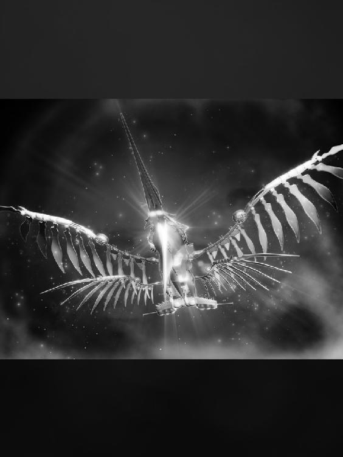
本来ならば開く筈の無いシェラダンの水門が、内側から放たれた光で僅かに口を開ける。
続いて、雷鳴めいた唸りと共に、まるで蜃気楼の様に空間が揺れた。
開いた水門の隙間よりも、遥かに巨大な質量が、通る筈の無い空間をすり抜けて、ゆっくりと現れる。
空気が震え、地が震えた。
それは太古の昔より、このエンダージェンの外側で眠りについていた大いなる船。
時空の狭間を漂い続けるエンダージェン国からは遥かな過去であり、悠久の未来でもある、エコーデュオンに光が満ち溢れていた時代に建造された、神々の方舟。
メテオール・ソルエルデイルは、流れ行く時空の波にその身を浮かべると、壮麗な翼を広げ、風の代わりに時を受けた。
羽ばたける太陽の船は跳躍する。時を貫き、距離を超え、主の願うその地へと。
星と星を一瞬で行き来し、銀河すら容易く跨ぐエルデイルにとって、それは瞬きの間ですら無いのだ。
ただ、穏かな風を残して。
シェラダンの水門の前に突如として現れた巨大な船は、次の瞬間忽然と姿を消していた。
一瞬、それが人間の悲鳴である事に、ネムリーは気付かなかった。
ガスメイガスの牙の間、ぐちゃぐちゃになったトルフの残骸から、それこそ獣の雄叫びの様な声が響き渡り、続いて赤黒い液体がどろりと落ちる。
それが黒水では無く、人の血液であると気付いた時、レメサスを纏ったネムリーは声にならぬ空気の振動を喉の奥で上げながら、失禁していた。
股間が温かく濡れるのに、全身が震え、力が抜け、鎧から魔が抜け落ちて行く。
自分は何故こんな場所にいるのだろう。一瞬本気でそんな事を思った。
仲間が凄惨に食い殺される場面を、どうして目の当たりにしなければならないのだろう。
何故、何故。
空回りする思考に脳が悲鳴を上げ、眼球が暴れて視界がぶれる。
心が折れた、とネムリーは思った。
「ネムリー様！ ネムリー様をお守りしろ!!」
パルナダの駆るトルフが邪魔をするメレスを蹴散らして、沈黙したレメサスの前に躍り出る。
雄叫びを上げ、オルメレスを切り捨てて、フルーナとダルカスもそれに続いた。
やめて......震える首を振りながら、ネムリーは呟く。
やめて。もうやめて。自分を守って死んでいく仲間は見たくない。
ダルカス、フルーナ、パルナダ。逃げて欲しい。こんな自分等置いて、今は逃げて。
「......もう、もう......っ！」
何人の仲間が命を落としただろう。
全身を砕く様な衝撃を、ネムリーは初め剣主としての顔でやり過ごし、その喪失に悔やみながらも、戦う力へと変える事が出来た。
けれどそんなのは初めだけだ。
死んだのは、名も無き騎士なんかじゃない。
飼い犬を出来愛しているベルナ。顔に似合わず家の温室を手入れするのが趣味なサイザン。ネムリーのファンだと言ってサインをねだって来たアイン、映画を見るといつも評論家ぶって語り出すので呆れられていたクラスト。
死んでいった者達の名前、顔、思い出がネムリーの胸を少しずつ壊して、その亀裂から現れたのは虚無では無く、憎悪と、後悔と、悲しみと、吐き気......。
王のシステムでリズベルルと少し話しをした。
心配そうにネムリーの事を窺う親友に、ネムリーは強がって、いつもの調子で、ノルアードとの事をからかって、でもあの時、本当は弱音を吐きたくて堪らなかったのに、剣主としての自分は何も言えず、なのに、肝心な今、その仮面が砕け散るだなんて。
「誰も助けになど、来ない」
不意に、目の前で仲間の血を味わう虚獣が、そんな事を囁いた気がした。
「仲間を守れず、挫け、諦めたお前の元には、誰も」
「ひぃ......っ」
悲鳴を飲みこみ、けれども虚獣から視線を逸らさず、ネムリーはただ涙を溢す。
「逃げて......逃げて！ 逃げて逃げて逃げてっ!!」
勇敢にも虚無へと立ち向かう三騎士に、ただ狂ったように叫ぶ事しか出来なかった。
自分が死ぬのは良い。それは良い。けれども自分の為に誰かが死ぬのは嫌だ。逃げて欲しい。逃げて......どうか、どうかお願い。
不意に、震えが止まった。
倒れ伏した三騎士のトルフが見える。立ち上がろうともがくその姿が、黒で塗りつぶされる。
目の前にいた筈の虚獣がメレスを取り込み膨れ上がり、それは翼を広げて飛び立つと、次々と浮かび上がる虚獣達を取りこんで更に巨大な姿へと変わった。
空がひび割れる。天空に空いた無数の孔から翼を広げた虚獣達が降りてきて、それは一枚の板の様に結びつき、フェアルージュの空を覆った。
まるでネムリーが剣主となった切っ掛けの黒海、その再現を見るかのように、いや、あの時よりも恐ろしい光景を前に、ネムリーはふと悟る。
フェアルージュは落ちる。
自分は此処で死ぬ。
そう理解した時、ネムリーはただ恋しくなった。死への恐怖、剣主としての使命、何もかもを忘れて、ただ一人の人を思う。
思えば自分は、恋もしなかった。焦がれる様な思いも、甘く切ない衝動も知らぬままだ。
けれどそれで良い。死を覚悟したネムリーは、父も、母も、友も、民も、他に何もいらなかった。
ただ一人、兄に......ボルダナに会いたい。
「......お兄様......」
マーネルの娘でも無く、剣主でも無く、ただのネムリーには、彼だけいれば良い。
それとも、この気持ちがそうなのだろうか。恋すると言うのは、こんなにも苦しい想いなのか。
「......助けて......っ」
雷鳴が轟く。
現れたるは、光の鳥か。
壮麗なる翼を広げ、中空に忽然と現れたその船は、幾重もの深紅の槍を、空を覆う巨大な虚獣目掛けて放つ。
耳をつんざく様な悲鳴を上げて、虚獣の体はぐらりと傾げゆっくりとゆっくりと力を失うと、赤い光の粒となって消滅する。
レメサスから這い出して、みっともなく砂を掴み、力の入らぬ体でネムリーは呆然と空を見上げていた。
あの船は何......私は、まだ、生きているの......？
「キャプテン・ボルダナ、ただ今参上......ってね」
にやりと笑みを浮かべ、手を差し伸べてくるその人に、ネムリーは言葉を失くし、それから大粒の涙をぽろぽろと零す。
力が抜けて、とても立てないネムリーを、ボルダナは力強く抱き上げる。
いやいやと首を振りながら、また震えだした声でネムリーは泣いた。
「やめて、やめて......私、涙で顔、ぐちゃぐちゃで、服も汚してしまったし、私......私......！」
「気にすんなって。こんなにまで頑張ったお前の事、笑う奴なんかいねえよ。ほら、顔を見せてみろ......また綺麗になったな、ネムリー」
「お兄様......会いたかった......お兄様っ!!」
ボルダナの首にわっと飛びつき、ネムリーは少女に戻って嗚咽を上げる。
満身創痍の三騎士が互いの無事を確かめるように肩を支えながら歩いてきて、ぎゅっと抱きあう兄妹を見つめ、ほっと笑みを浮かべた。
その日の夜、フェアルージュ上空の虚獣を太陽の船で撃滅したボルダナは、久方ぶりに戻った自室でほっと息を吐いていた。
覚悟していたが、マーネルの屋敷はまだ無事に残っていた。この部屋も、以前来た時同様、しっかり清潔に保たれている。
「......、」
息を吐いてベッドに腰を降ろすと、どっと疲れが滲んでくる。
ソルエルデイルの事も、他の街への連絡も、全て後回しにしてしまった。
せめて流浪の民達が森から無事脱出できたかどうか知りたい気持ちもあったが、今日は休め、とエルデイルが言うのに負けたのだ。
「......信じられねえ事ばっかだけど......守れたんだよな......」
ボルダナは一人、呟く。
街も、妹も、辛うじて守る事が出来た。
何も為せぬと思いこんでいた自分が、それはソルエルデイルの導きがあってこその奇跡であっても、守る事が出来た。
「上出来、だよな......糞親父殿よお」
亡き父を想い、柄にも無く目に涙を浮かべていると、不意に扉を叩く音。
ごしごしと目元を拭い、立ち上がれば、返事をするよりも先に扉が開いて、そこには枕を抱きしめたネムリーの姿。
少し恥ずかしくなりながらぎこちなく笑えば、妹もふっと笑う。
充血し腫れた目に、赤い頬、痛々しいその姿は、けれども夜の灯りで艶やかに照らされ、不思議と魅力的に見えた。
「......おにい、さま」
「眠れないのか、ネムリー」
「......っ」
枕を落とし、ネムリーはボルダナに駆け寄ると、ぎゅっと抱き付いて動かなくなる。
言葉無くその華奢な体を抱き返し、ボルダナは息を飲んだ。弾んだ扉が、ゆっくりと閉まる。
こんなにも小さな体で。
いつも思う事だ。
こんなにも儚い入れ物に、一体どれだけのものを抱え込んでいるのか。
やはり早く、帰ってくるべきだったのだ。
ボルダナは今更のように後悔する。
「すまなかったな......ネムリー」
ボルダナの胸の中で、ネムリーが小さく首を振る。
泣いているのか、ボルダナは小刻みに震える背中をそっと撫でた。
「お兄様は......お兄様はいつも、いつも......私が本当に窮地に立たされた時、駆けつけてくれる。前の時も、今日だって、来てくれた！」
「あの時この街を助けたのは......俺じゃ無く、ヴィルフォーナだったけどな」
ボルダナが笑えば、顔を上げたネムリーは、潤んだ瞳でじっと兄を見つめ、そんな事は無いと首を振った。
「ネムリーを救ってくれたのは、お兄様だったの......」
「そうか」
「......沢山沢山、亡くなったわ......私が弱いばかりに......」
「自分を責めるな。お前はただ、笑っていろ」
言ってから、ボルダナは込み上げる感情に唇を噛む。
じわりと血が滲んだが、痛みは無い。ただ、悲しみと苛立ちと、何よりも己の不甲斐なさだけが胸を締め付けた。
「......お前は、本当は......笑っていれば良いんだ。普通の娘みたいに、毎日楽しい事をして、悩みなんかせず。俺が......俺さえちゃんとしていれば、こんな想いをさせずに済むのに。ごめん......ごめんな......」
声を震わせるボルダナをじっと見つめ、ネムリーは静かに首を振る。
それからボルダナの胸に手を当てて、背伸びをして、その唇から零れそうになる血の滴を、舌ですくった。
「どうか、拒まないで......」
懇願するネムリーに強く求められるのを、ボルダナはただ受け入れる。
口の中で触れ合う舌の味に、ささくれ立った心が溶けて行く様だった。
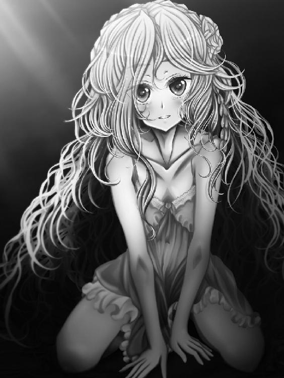
「もっと......もっと近くで、抱きしめて......」
ぎゅっと抱きあいながら、二人はベッドに横になる。見つめ合うネムリーの瞳に、自分の顔が映っていて、ボルダナは不思議な気持ちになった。
もう一度唇を合わせながら、長い時間をかけて、二人は心を落ち着かせる。
唾液に溶けて混ざりあった血で喉を鳴らし、ネムリーは囁く。
「我儘を言わせて......お兄様......」
その体をぎゅっと抱きしめながらボルダナが頷けば、ネムリーは言った。
甘える様な、心から安らいだ様な、熱のある声で。
「もう、何処へも行かないで......ずっとネムリーと一緒にいて......お兄様だけなの。私が欲しいのは、必要としているのは、本当は......本当は貴方だけなの......」
それは、剣主としてでも無く、マーネルの娘としてでも無く、ただ何にも縛られぬネムリーの言葉だった。
ボルダナは胸を打たれ、ただ静かにその艶やかな金の髪を撫でながら、何度も何度も頷いている。
にっこりと微笑んで、溶ける様に目を瞑り、ネムリーは静かに眠りの中へ落ちて行った。
毛布の下で上下する胸を眺めながら、ボルダナはその顔をじっと眺める。
この人の為に、名を捨てようと思った。
ただのネムリーに応える為に、ボルダナもまたマーネルの名を捨てて、ただ一人の責任において彼女を守ろうと決意する。
長く遠回りしてしまった、と思いながら、ボルダナは不思議とこれが正しい道のりだったのだとの思いで胸を満たし、ネムリーの頬にそっと口付ける。
「......おにいさま」
甘い、囁き。
起こしてしまったか、と思うのと、堪え切れぬ情動が湧きあがってくるのはほぼ同時。
ボルダナはネムリーをぎゅっと抱きよせ、その耳元で囁いている。
「もう、レメサスには乗るな！ 戦うな、傷つくな、ネムリーっ！」
それは心からの願いだった。
もうこの人が傷つく姿を見たくない。ボルダナは震える声で何度も何度もその言葉を繰り返す。
ゆっくりと、ネムリーの手がボルダナの体を這い、ぎゅっと抱き返してくるのに息を飲んで。
「......私が、ネムリー・マーネルで無く......ただのネムリーで居られるのは......貴方の腕の中でだけ......」
「......ネムリーっ」
「夜が明けて、目が覚めたら、私はまた剣主の私に戻る......」
「お前の我儘は、聞く！ だから俺の我儘も聞いてくれ......俺が、お前を守るから......っ」
「その優しさが、欲しかったの......」
二人はどちらとも無くキスをして、今までで一番長く、舌を絡めた。
いけない事だと判っていても、想いを止められない。この愛を、誰が咎められようか。二人の想いは一つだった。
命をかけて、互いを愛すると。
「私は戦う......レメサスで、皆の為に......剣を取る」
「どうしても？」
ネムリーはこくりと頷いて。
「だからお兄様......もう一つ、我儘を聞いて。もし、私が戦いで命を落とす様な事があれば......お兄様も、共に死んで」
「......判った」
ボルダナの言葉に、ネムリーはふわりと笑みを浮かべた。
可憐な花が、毒を帯びてより強く美しくなるのに、ボルダナは胸を締め付けられる。
「お兄様がそう約束して下さるなら......私は絶対に負けたりしない。お兄様の命は私の命。私の命はお兄様の命。お兄様の事は、私が守る」
「そしてネムリーの事は......何に代えても、この俺が......」
二人は指を絡めて、深い感情の渦に身を委ねた。
まるで欠けて生まれたものを補う様に、二人は共にあり、一つであった。
「みんな、もう大丈夫よ。お兄様が......太陽の船・ソルエルデイルと共に帰られたわ！」
翌日、夢から覚めたネムリーは、皆にその事を伝えて回った。
民達は思った以上に冷静だった。太陽の船は、空を覆う虚獣のみならず、彼らの心に巣食う不安もまた一撃の元に吹き飛ばしたのである。
戦況が変わる。皆がそれを確信していた。
太陽の船が、この国を救うと。
「深紅の妖精姫、お写真を一枚」
声をかけられネムリーが振り向くと、そこには顔馴染みのカメラマンが立っている。いつだったか、雑誌に載せる写真を撮って貰った事があった。
無事だったのね、と微笑めば、カメラマンはシャッターを切ってそれに答えた。
「変わりましたね」
「え？」
「また、美しくなられた。恋を、しましたか」
「ないしょっ」
悪戯っぽく笑うネムリーに肩を竦めて、カメラマンは歩いて行く。街の様子を撮りに行くのだろうか。
いつか彼の撮った写真を眺めて、この日の事を懐かしむ時が来るのかしら。ネムリーは空に浮かんだ太陽の船を見つめて、ぼんやりと思った。
「我が麗しの君......どうぞこの胸に飛び込んできて下さって構わないのですよ！」
「......はぁ」
いつからそこにいたのか、腕を広げているのはフルーナ・ノルミネ。
昨日の今日でぴんぴんしている所がらしいと言えばらしい。
この人は、殺しても死なないのかもしれないわ、とネムリーは密かに思った。
「結構よ。大体、なんで私が貴方に飛び込んでいかなきゃならないの？」
「恋......されているのでしょう！ この私に......！」
その自信は何処から来るのか、全く見当外れなフルーナの言葉に、ネムリーは噴き出している。
「ふ......お望みとあらば、今夜どうです。二人でめくるめく官能の世界へ......！」
「呆れたわ。そうやって何人の女の子をたぶらかして来たのかしら」
「人聞きの悪い......女性の方から求めてくるのです......私はただ、期待に答えるまでの事」
「はぁ～、いつか刺されるわよ、貴方」
「刺すのは得意です」
フルーナの下品な冗談に、ネムリーは額を押さえて溜息を吐いた。
と、不意にフルーナが真顔になって。
「ネムリー様がいけないのだ。貴女がこの私に振り向いてくれさえすれば、道化を演じずに済むのに......」
「本気で言ってるの？」
「勿論です。貴女が欲しい......」
フルーナに手を取られて、ネムリーは黙った。
真剣な眼差しを見つめ返し、ネムリーはフルーナのお腹に指でのの字を書く。
甘える声で。
「う～ん、じゃあちょっと味見してみようかしら......」
「なんと！ では早速今夜ぐはっ」
はしゃぐフルーナのお腹に軽いパンチをお見舞いし、ネムリーはやれやれと首を振って。
「ほ～ら、やっぱりそんなじゃない。お生憎様、間に合っていましてよ」
「ぐ......それでこそ、我らがお仕えする深紅の妖精姫......貴女には、お強くあって欲しい......」
「ありがと、フルーナ。夜道には気をつけるのよ」
腹を押さえて呻くフルーナに手を振って、足取り軽くネムリーは歩き出す。
向こうに兄の姿が見えて、足を速めた。
「すごい......これが太陽の船・ソルエルデイルなのね......」
広々とした艦内を案内されながら、ネムリーは驚きで胸がどきどきするのを止められないでいた。
およそ太古の船であるとは思えぬその内装は、全てが清潔で、美しい。
通路等は永遠に続く様に何処までも繋がり、そんな中、空間と空間を飛び越えると言う未知なる技術を用いて移動すれば、出てくる言葉は驚愕の一言である。
兄に言わせれば、この艦内の空間は外部とは切り離されて圧縮されており、見かけ以上の広大さを誇るのだとの言葉が返って来て、それこそが今では封印術と呼ばれる技術の真の使い方だと言うのだから、ネムリーはますます言葉を失う。
「この船からは魔を感じない......動力は何なのかしら。これだけ大きな船を安定して稼動させるのに、大変な力が要る筈よ」
「エンジン内に捕えたマイクロブラックホール......と言っても伝わらないか。ともかく、俺達から見れば未知なる力さ。そうだ、艦内ドックで弦奏鎧の解析を進めているんだ。此処を利用すれば壊れちまったトルフもあっという間に修理できる筈だぜ」
「素晴らしいわ......けど、お兄様。昨日この船の事を知ったにしては、随分お詳しいのね」
「ここに直接叩きこまれたからな」
そう言ってボルダナは自分の頭を指差し、にやりと笑みを浮かべた。
例えば、こんな風に、とボルダナは何も無い壁に手をつけば、途端に扉が出現し、ネムリー達を招き入れてくれる。
真っ白な何も無い部屋だったが、ボルダナが指を弾くと壁も床も消え、代わりに外の景色が映し出される。
広い空に、眼下に見えるのはフェアルージュ。突然の事に驚いてネムリーは兄にしがみ付きながら、言葉無くその光景に見入った。
「......名も使命も捨てて、お兄様と二人だけで......この広い世界の何処かへ逃げてしまいたい......」
ぽつりと呟けば、兄は優しくネムリーの事を撫でてくれる。
勿論、その言葉がただの戯れである事を、ボルダナも理解していた。
自分は逃げない。ボルダナの温もりを感じながら、ネムリーは決意している。
あの日、メルディーノの湖で親友に誓ったのだ。虚無は必ず食い止めると。
剣主ネムリー・マーネルは、だから逃げない。レメサスと共に、戦う道を選ぶ。
「ふふ、お兄様......いいえ、二人きりの時は、ボルダナ様とお呼びしようかしら」
「気恥ずかしいから、やめてくれ。それに、お前が俺の事を呼ぶその声が......好きなんだ」
「お兄様、お兄様......お兄様......」
ネムリーは焦がれる様に、拗ねた様に、甘える様に、声色を変えてボルダナの事を呼んだ。
その度にボルダナはネムリーの髪に指を通し、優しく梳かしながら頷いてくれる。
暫くそうして二人の時間を過ごした後、名残惜しくも部屋を出れば、向こうの角を曲がって来たリズベルルの姿が目に入った。
「ネムリーっ！」
途端に目に涙を浮かべ、リズベルルが駆け寄ってくる。
ネムリーも何だかほっとして、飛び込んでくる親友の体をぎゅっと抱きしめた。
「心配したよ、無事で良かった......！」
「リズベルルこそっ」
二人が無事の再会を喜んでいると、ジンとノルアードもやってくる。二人はボルダナを見つけると手を上げて。
「元気そうだな、ボルダナ。まさか太陽の船に選ばれたのがお前とは......いや、お前にこそ相応しい役目かもしれんな」
「よしてくれ、ノルアードの旦那。ジンも、活躍してるそうじゃないか。少し疲れているんじゃないか。この船の中は何処よりも安全だ。久しぶりに気を抜いてくれて良いぜ」
「ああ......すまないな、ボルダナ、ネムリー。フェアルージュが大変な時に、駆けつける事が出来なくて」
「謝らないで。今は何処も大変だもの。本当に......みんな無事で、安心した......」
涙を拭うネムリーに、皆はふっと笑みを浮かべる。
虚獣との戦いが始まってからこちら、ずっと胸の何処かにあった警戒の色を久しぶりに忘れ、その場の全員がほっと息を吐いたのだった。
距離を越え、空間と空間を文字通り跳ぶソルエルデイルの超空間跳躍を以ってすれば、エンダージェン中の剣主達を集めて回るのもあっという間だ。
久々に現実で顔を合わせた剣主達はそれぞれの無事を喜び、お互いの健闘を讃えあう。
太陽の船がフェアルージュ上空の虚獣を打ち滅ぼして以来、虚獣の侵攻はぴたりと止まっていた。
「さて、まずは諸君らに感謝したい。よく此処まで耐えてくれた、デュオンの戦士達よ！ 汝らのお陰で、我が真の器たるソルエルデイルは見事に甦ったぞ！」
えっへん、と胸を張りながらエルデイルがぴょこぴょこ跳ねてそう言えば、剣主達は、おお......とどよめく。
太陽の船、王の時代の遺物。その威力を目の当たりにした今、エルデイルの言葉は真実であったのだとその場の全員が改めて思うのだ。
即ち、太陽の船が復活すれば戦局は変わるとのその言葉を。
「皆も知っての通り、上空に走った無数の亀裂から虚獣が現れ、フェアルージュは危機に見舞われた。これを見て欲しい」
エルデイルが言うと、中空にスクリーンが現れて、その時の光景を投影した。
その技術自体は王のシステム内部で目に馴染んだものと似ていたので皆はそれ程動じずに、むしろ画面の中の脅威を食い入る様に見つめる。
空から現れた翼を持った虚獣、ただでさえ苦戦を強いられていると言うのに、この上飛行型の虚獣まで現れれば、為す術がない。
「虚獣同士が合体する例は既に知られておったな。今度の場合、どうやら空高くに穿たれた亀裂から、元となる虚獣が現れたらしい......この亀裂は言わば、虚獣の卵の様なもんじゃの」
「虚獣の卵......ですか」
「うむ、これまでずっと空に潜み、力を蓄えておったのよ。さくっと索敵した所、こんなにあった」
事も無げに言うエルデイルの後ろに映し出されたのは、エンダージェン全土を示す三角錐。
その上方に、卵を表す光点がびっしりと集まっている。
数え切れぬその量に、剣主達は絶句した。
「馬鹿な......いつの間に、こんな......」
「そうだわ......変よ、上空に生じた亀裂の予兆となる黒水玉が、今回は一つも見つかってない。卵がこんなになるまで、一つくらい目撃例があっても良さそうなものよ」
「......それが虚無の目的かもしれません。そうした先入観を持たせる事で、真の目的から目を逸らせていたとしたら、どうでしょう。黒水玉は囮だったのです。フェアルージュ、リィガイムの上空に亀裂が生じたあの時も、このエンダージェンの空高くでは彼らの繁殖が始まっていた......」
「そうかもしれんの。実際卵はこんなにあるのじゃ。全て孵化したら手に負えん。故に、わらわは速やかにこれらを排除する事を提案する」
エルデイルの言葉に、剣主達は先程までとは違う沈黙で顔を見合わせた。
卵があるのは遥か上空。飛行船では辿り着けない。かといって高高度で活動できるヴィルフォーナはただの一騎。
無謀な提案であった。少なくとも、太陽の船が復活する前であったなら。
「俺達の出番って訳だな」
へへ、と鼻を擦り、ソルエルデイル艦長キャプテン・ボルダナが前に出る。ネムリーが嬉しそうにぱちぱちと拍手を贈って。
「そうよ、太陽の船なら立ち向かえる。そうでしょう、エルデイル？」
「まーそうなんじゃが、問題がある」
「問題？」
「うむ、つまりじゃのう......太陽の船は、実は戦闘に特化しておらんのじゃな」
なぜか二つ結びの長い髪をぎゅっと抱きしめ体を隠し、エルデイルは恥ずかしそうに身を縮める。
御冗談を、と芝居がかった仕草で手を広げるのはボルダナである。
「あんな馬鹿でかい化け物を一撃で葬るこの船が戦え無いだって？ 悪いが信じられないぜ」
「戦えない、とは言っておらん。キャプテンも脳味噌の中のマニュアルを良く参照して見よ。ソルエルデイルは戦闘に特化しておらん！ それが事実じゃ」
「つまり、エルデイル。貴方は何を言いたいのですか？」
「んあ～、つまりじゃのう。この卵をいっぺんに破壊する事は可能じゃ」
「ほう」
「その際、街もエンダージェンも吹き飛んでしまう。これが問題なのじゃな！」
またしても絶句する剣主達である。
「エルデイルよ......つまりお前はこう言いたいのだな。ソルエルデイルは戦闘に特化していない。故に、加減が出来ないと」
「如何にも！ どかーんと丸ごと消し飛ばす火力はあれど、細々した事は苦手なのじゃ！ もろもろの被害を抑えつつ力を絞って攻撃した場合......一度に破壊できる卵はこのくらいかのう～。ちょっぴりじゃ！」
そう言ってエルデイルは宙に浮かぶ三角錐のビジョンを指で弾く。
ぽぽぽぽぽん、と景気の良い音がして、三角錐の一角から卵を表す光点がごっそりと消えた。
ちょっぴり、と言う割に消えた光点の数は相当数だ。これならば何も問題はあるまい、との楽観が剣主達の中に広がるが、一人ジンの表情は険しかった。
「シェラダンの黒き魔人は気付いておるな、これではいかん......ダメダメじゃ！」
ジンはエルデイルに頷いて。
「上空の亀裂は、刺激する事で活性化する......ソルエルデイルで卵を破壊した場合、残された卵は確実に孵化する。孵化した虚獣は恐らくは飛行型だ。そうでなくても、地上に攻め込まれた時点で......」
「街を吹き飛ばす威力のソルエルデイルでは攻撃できなくなる......か......」
「おいおい、太陽の船なら万事解決じゃ無かったのかよ、ミディオムさんよお」
頭を抱えるボルダナに、エルデイルはこほんこほんと咳払いし、まぁ話を聞きなさいと腰に手を当てて。
「確かにこの状況はわらわの想定外じゃった。と言うのも、本来であればこんな事は考えられぬのじゃ！ エンダージェンの空には、こうした事態を防ぐ為の機能が備わっておるからの」
「エンダージェンの......防衛機構とやらか」
「その通り！ そこでわらわは提案する。この卵の破壊を目的とし、新たに二つのメテオールを目覚めさせる事を！」
「メテオール......王の時代の遺物にして、エンダージェンを守る超古代兵器......」
「兵器、と言うのは正確では無いが、似たようなもんかのう」
ざわつく剣主達に、エルデイルは頷いて見せる。
良く聞くが良い、と胸を張り、二本の指を立てた。
「一つは、このエンダージェンを周回しておる超空間跳躍船フェヴルートー。元はソルエルデイルの護衛艦で、わらわを上回る戦闘力を有した月の船じゃ。もう一つは、天空要塞ユゴスミネラ。このエンダージェンの空を守護する冥王の雷。この二つは、今も稼動状態で現存しておる。にも拘らず、この様な状況においてもミディオム達が現れん。この二つのポンコツメテオールを手中に収める事がわらわの提案じゃ。ユゴスミネラの放つ雷ならば、恐らくは上空の卵を一斉攻撃出来るだろう。取り溢したぶんをフェヴルートーとソルエルデイルで撃破する。無論、地上への被害はゼロにする事が大前提じゃ」
超空間跳躍船フェヴルートーに、天空要塞ユゴスミネラ。
太陽の船の力を目の当たりにした今、エルデイルの言葉に最早疑う余地は無い。それら超兵器を味方に付ける事が出来れば、確かに心強いだろう。
「しかし、そんなに簡単に行くのか......？ 太陽の船の復活を待つのにも時間がかかったのに、これからその二つを探すとなると......」
「フェヴルートーの大体の場所は見当が付いておる！ ユゴスミネラもエンダージェンの空の何処かに浮いておるのじゃ、ソルエルデイルを以ってすれば、見つけられん事は無い！」
エルデイルの言葉に、しかし剣主達は半信半疑と言った様子だ。
この案に縋るしか無いと思えど、果たして切迫したこの状況でそれが本当に上手く行くのか、そうした思いが拭えない。
そんな中、二つの未知なるメテオールの存在に心当たりのある者がいた。
リズベルルである。
「私......その二つ、知ってるかも」
皆の視線が一斉に集まる。
リズベルルは傍に立つノルアードに軽く背を預け、彼を見上げると、次に皆の事を見渡して、慎重に口を開く。
「天空要塞ユゴスミネラ......飛行庭、ユゴスミネラ......私、行った事がある。今あの場所は、エイフォンと言う人が主を名乗っています。ミルゥと言うお人形みたいな女の子が一緒で、白紫の髪と、金の瞳。きっと彼女がユゴスミネラのミディオムなんだ」
「エイフォン......！」
その名に反応したのは、フィオだけでは無い。
それまで黙って話を窺っていたゼルナードもまた、重々しく頷いている。
「エイフォン......異界の知識を欲する異端者......底知れぬ男だ。かつて、我が友ラスティノフの周囲を嗅ぎ回っていた事もある。昨今密かに暗躍していると警戒していたが、やはりメテオールを手に入れていたか......っ」
「間違いないの。しかしミルゥ......一体なぜわらわ達に合流せんのだ。エイフォンと言う男に囚われておるのやも知れぬ」
「まさか、あの娘に限ってそれはありませんわ。彼女はミディオム。それも、物質世界への興味が特に薄い娘でしたもの。肉体を拘束されたら、さっさと捨てて新たな器に乗り換える方が、らしい」
「リズ、エイフォンと接触する方法はあるのか？」
ノルアードの言葉に、リズベルルは頷いて。
「ある......手紙で一方的にだけど。でも、協力してくれるかどうか......以前、リィガイム上空の亀裂への対処で協力を要請した事があります。けれど、断られました......ただ」
「ただ？」
「......交換条件。エイフォンさんは、私のお父さんの遺した本を探しているの。ディエナ写本、どうしてもそれが必要だって。それと引き換えになら......もしかしたら」
「ディエナとな」
エルデイルがぴょこんと反応したかと思えば、半信半疑の表情でシズマが懐から一冊の本を取り出して見せる。
それは表紙に題名も無い古びた本で、束ねられた紙は横から見ても色がまばらで、古いものから新しいもの、様々な紙質、印刷の状態を、一つに束ねたものらしかった。
「......異界の竜の知識が記された写本だ。俺には理解できなかったが......ゼルナードよ、お前に預かっていたこれこそが、そのディエナ写本では無いのか？」
「......そうだ。世界を変革する程の力を秘めた知識......奴の手に渡らぬよう、私がラスティノフの地下室から持ち出したもの......こうなった以上、止むを得んか。その写本を餌に、エイフォンからメテオールを奪取する」
「いきなり過激じゃのう。ま、いた仕方あるまい。次にフェブルートーの方じゃが、リズベルル。こちらにも心当たりがあるとな？」
「あります。エンダージェンを周回する、くじら......」
そうしてリズベルルが剣主アナメアに目配せすれば、彼女は頷いて。
「私の知り合いに、それをずっと追い続けている子がいます。我々はその存在をくじらと呼んでいますが......彼はくじらの居場所を指し示すコンパスを持っている。それを使えば、メテオールが今どこにいるのか判るでしょう」
「何と言う偶然か、いや......これも古きデュオンの戦士の導きか......」
エルデイルは目を閉じて一人呟き、次にはいつもの天真爛漫な笑みできゃらきゃらと笑って、ぐっと握った拳を天へと掲げる。
「そうとなれば行動あるのみ！ メテオールを求めて作戦開始じゃ！」
無邪気な振る舞いに、初めは面食らったものだったが、今ではその明るさが救いである。
剣主達は深く頷き、希望を胸に行動を開始する。
空に浮かぶ太陽の船の下を、大きな雲が形を変えながらゆっくりと横切っていく。
静かだ。何時に無く平穏な静寂......それがかえって不気味に感じられ、ダルカスは腰に下げた剣の鞘へと手を当てる。
各地で一斉に虚無の侵攻が止まった。それは人々にひと時の安らぎを与えるどころか、むしろよりいっそうの緊張を齎していた。
「......まさか虚無共も怖気付いた訳ではあるまい。必ず次がある。そしてそれは......」
「より強大な、波......」
隣立つパルナダの言葉にダルカスは頷き、背後に控えていたトルフ級の足をそっと撫でた。
激戦に次ぐ激戦で、あちこちに小さな傷やへこみが見える。だからこそ、体に馴染み愛着も湧く相棒だ。
この戦いが終わるまで、この鎧も持つかどうか......。
「どうしたのだ、我が友よ。暗い顔をして」
「この様な状況でへらへら笑っていられるのは、貴様くらいなものだ」
「心外な。これでも傷心でね」
やってきたフルーナは、パルナダにひと睨みされると眉を落として肩を竦める。
それからやはりいつもの気障な笑みに戻り、ダルカスとパルナダを交互に眺めた。
「さあて、我らが妖精姫の心を射止めたのはどちらかな？」
「......何の話だ」
またいつもの下らぬ冗談かと、ダルカスとパルナダが呆れ顔をすれば、フルーナはおや、と首を傾げ、そこで二人もようやく顔を見合わせる。
口元を押さえ、芝居がかった仕草でフルーナが笑う。
「我が君の心を虜にする者が私以外にいるとすれば、君達二人のうちのどちらかだろうと思ったが......これは当てが外れたか」
「どう言う事です？」
「なあに、我ら三人とも妖精姫の心を射抜く事叶わず......それだけの話さ」
そうしてフルーナは鼻歌を歌いながら二人を残し去っていく。
なんだあれは、とパルナダは苦笑したが、ダルカスは俯いて黙り、何か考えに耽る様に静かになった。
「......皆様のお越しをお待ちしております......か、この手紙は？」
「私がポストに手紙を入れて、屋敷に戻った時にはもう届いていたんです」
「向こうは全て承知の上、と言う事かの」
ノルアードが読み上げた一枚の手紙。それはリズベルルの元へ届いたもので、差出人の名は無かったが恐らくはエイフォンからの返信であろう。
いつも通り簡素な一文。ただし今回は、剣主達の動きを察しているかのような文面だ。
「余計な勘繰りは時間の無駄じゃ。虚無共の沈黙もいつまで続くか判らん。此処は少数精鋭、持てる力を最大限に活用して挑むとしよう。月の船探索へは、わらわ達で向かう」
「では、冥王の雷奪還へはこの私がお供しましょう。メテオールに最も詳しいのは、私達ミディオムですもの」
エルデイルとシャンロールの申し出に異を唱える者等居る筈も無い。
剣主達は地上で虚無の次なる一手に備え、その一方で選抜された少数精鋭部隊は二つのメテオールを手中に収めるべく慌ただしくも出発した。
「王の時代の遺物......メテオールと、それを司るミディオム......か」
太陽の船ソルエルデイルに集まり、エルデイルから全ての真相と切迫した現状とを聞かされて、レイルは少し複雑そうな表情でそう呟いた。
レイルが剣主達と懇意にしていたのは、自分の研究を役立てたいと言う思いの他に、エイフォンの二の舞を避ける意味もあった。
王の時代の遺物、世の裏で囁かれるオカルト、異端の知識......。
それら禁忌に足を踏み入れ、学会から糾弾される事を避ける為の、後ろ盾としての人脈。
ところが、今や剣主達はその異端に縋り、更にはレイルの長年の研究であった大結界の秘密まで暴かれてしまったのである。
「長年追い続けていた謎が、あっさり明らかにされて拍子抜けか？」
「あら......それを言うならグレンだって。くじらの正体を自分の手で暴けなくて、少しがっかりしているんじゃない」
「関係ねえさ。くじらは俺が捕る......それだけだ」
不敵な笑みを浮かべてそう宣言するグレンに、アナメアとナーギアは顔を見合わせ、少し呆れた様な、それで居てほっとし、羨む様な表情で笑い合う。
リズベルルからちらりと話を聞いた事はあったが、これはなかなか面白い青年だな、とその話を窺いながらジンが笑みを浮かべていると、くいくいと袖を引かれて。
「......ジンさん、どうして私も呼ばれたんですか？」
「嫌だったか？」
「嫌じゃないけど、緊張しています」
ソルエルデイルの内装に興味深げな視線を注ぎながら、ユフィーユがちらりと笑みを浮かべる。
少しだけ胸を撫で下ろし、ジンは彼女を安心させる様、一つ頷いて見せた。
あれから、ユフィーユと少しぎくしゃくしている様に感じていたのは、自分の気のせいだったのかもしれぬ、と思いながら、一方でユフィーユと共に自分が月の船探索の面々に加えられた事を少なからず不思議に思ってもいた。
リズベルルが冥王の雷奪還へ向かった事に異論は無いが、それならば自分は彼女と共に向こうの隊へ加わるか、あるいはヴィルフォーナと共に地上で虚無の次なる一手に備えるべきではとの思いが拭えない。
ヴィルフォーナが手元に無い以上、ジンの価値は此処ではほぼ無いに等しく、少し肩身が狭い思いだ。
「これより我が艦、ソルエルデイルは超空間跳躍で大結界を跨ぎ、エンダージェン外周を漂う月の船・フェヴルートー探索へと赴く。異論のある者は？」
「勿論居ませんわ、お兄様っ！」
表情を引き締めて言ったボルダナに、こちらはすっかり甘えた表情で答えネムリーが飛び付く。
たじたじになりながらもボルダナはこほんと咳払いし、少しばかり上ずった声でクルー達に指示を飛ばす。
元ボルダナ一座、現ソルエルデイルクルー達は、じとっとした視線をキャプテンに向けて。
「な～んかいつも以上にベタベタしてません？」「......怪しい......」
「べ、別におかしい事なんか無いだろう。なあ、ネムリー」
「勿論ですわ、お兄様。私達、あの夜永遠に共にあると誓った仲ですもの......せっかく一緒に居るのだから、このくらいくっついていたって罰は当たりません！」
とろけるネムリーの微笑みにボルダナが引き攣った笑みで頷けば、クルー達の攻める様な視線は更に強まり、無論ジンもそれに加勢。誤魔化しの咳払いでそれらを黙らせ、キャプテン・ボルダナは早口で告げた。
「超空間跳躍開始！ ほら、早くっ！」
「あ～お盛んじゃのう～。よいよい、わらわは愛する者達の味方じゃぞ！」
「エル、早くしろ！」
「うーむ、では出発じゃ！」
エルデイルがきゃらきゃらと笑えば、船全体が僅かな振動に包まれる。
地上と船とを行き来する時を除けば、太陽の船そのものによる超空間跳躍は初めての経験だったので、ジンは少し身構えたが、それは瞬きの間も無い一瞬の事で拍子抜けしてしまう。
次の瞬間にはソルエルデイルは何処までも続く霧の世界に浮かんでおり、スクリーンに投影された外部の光景を見たジンは、やはり以前ヴィルフォーナで門を超えた時とは異なる空間なのだなと不思議と納得していた。
「此処が外界......なのですか？」
「この辺は大結界の表面と言った所かのう。この霧の層が、エンダージェンに余計なものが入って来る事の無い様行く手を阻んでおるのじゃな。さて、グレンとやら」
名を呼ばれて、グレンは一つ頷き、意外にもと言っては何だが素直に首から下げていたコンパスを外してエルデイルに手渡す。
それは金の輪に青い宝玉が嵌めこまれた形をしていて、フィオの持つ光魔のしるべとはまた趣の異なるものであった。
「そいつが指す先にくじらが居る筈だ。交換条件、判ってるよな」
「うむ。コンパスを貸す代わりに、月の船に一番乗りさせよと言うのじゃろう？ 判っておる......と言うか実際、それはありがたい申し出じゃ」
「どう言う事？」
ナーギアが首を傾げるのに、エルデイルは指先でコンパスをくるくると遊びながら。
「月の船・フェヴルートーは、反休眠状態にある筈じゃ。つまり、ミディオムが不在ながら艦の機能は依然保たれた状態にある。ソルエルデイル程の質量を持った船が迂闊に近づけば、フェヴルートーの防衛機能が働き、交戦となるじゃろう」
「......メテオール同士の戦闘、と言う訳ね」
レイルの言葉にエルデイルは頷き、ボルダナやクルー達はごくりと喉を鳴らす。
超空間跳躍船同士の戦いが果たしてどの様なものなのか、ジンには想像すら出来なかった。
「まぁミディオム不在の艦と戦って勝てぬ事は無いじゃろうが、今回は月の船を無傷で手中に収める事が目的じゃからのう。出来れば穏便に済ませたい。そこで役立つのがニールギガスじゃな」
どうでも良さそうに話を聞いていたグレンの腹をエルデイルがつんつんと突く。
ナーギアが如何にも胡散臭そうに目を細め、本当に？ と首を傾げた。
「超空間跳躍船にとって、弦奏鎧程度の物体は脅威とならん。恐らく攻撃を受ける事無く近づけるじゃろう。そこでニールギガスには、これを持ってフェヴルートーに接近してもらいたい」
そうしてエルデイルがスカートの下から取り出したのは、掌大の金属片だ。
小さな手の上からそれを取り上げると、グレンはしげしげと金属片を眺める。
エルデイルはえっへんと腕を組み。
「細かい理屈は割愛するが、これをフェヴルートーが展開しておるバリアコクーンに埋め込めば、コクーンは消滅し、更にソルエルデイルからの信号を受けてフェヴルートーはこちらを味方と認識する。そうなれば、ソルエルデイルで近づきドッキングも可能じゃ。艦同士の連結が済めば、生身で乗り込む事が出来る」
「バリアコクーン......あの光ってる繭の事か」
何やら心当たりがあるのか頷いているグレンを横に押しやり、エルデイルの顔を覗き込むのはナーギアだ。
半信半疑の表情で、むしろその顔には不安の色が濃い。
「ちょっとちょっと、簡単に言うけど、それって本当にニールギガスで出来る事なんでしょうね!?」
「わらわが見た所によれば十分に可能じゃ」
「嫉妬はいけないわ、ナーギア。それにグレンはやる気よ」
「誰が誰に嫉妬ですか！」
「ナーギアが、くじらに？」
レイルにからかわれ、ナーギアは頬を膨らませ、それから諦めた様に深く溜息を吐いてグレンに何か文句を言おうとすれば、当人は話は済んだとの表情で立ち去る所である。
ナーギアは頭を抱えて憤慨する。
「ちょっと、もう！ 本当に大丈夫なんでしょうねっ!?」
グレンの後を追って駆けていくナーギアの後姿を眺めながら、アナメアは仕方が無いと言う風な笑みを浮かべ、それからエルデイルを見やり、尋ねている。
「失敗の確率は、どれ位ありますか？」
「なあに、そんなに心配するでない。もしもの時は多少のダメージは覚悟で救出に向かう。わらわを信じよ！」
「......判りました」
「よし、では早速コンパスの波長をソルエルデイルとリンクさせるぞ！」
エルデイルの言葉にボルダナとクルー達が頷き、早速作業が始まった。
月のコンパスが指し示す空間を目指し、ソルエルデイルが何度かの超空間跳躍を行えば、見事に月の船・フェヴルートーの船体がスクリーンに映し出される。
此処でもまたジンは拍子抜けして、この分だと滞り無く事は進みそうだぞ、と楽観すれば、不意に隣に立つユフィーユが食い入る様にスクリーンを見つめているのが気にかかった。
未だかつて見た事も無いメテオールの姿に見惚れているのだろうか、その目は光の繭に包まれた月の船の輝く船体に瞬きもせず、陶酔する様な表情に奇妙な不安を覚え、ジンはユフィーユの肩を揺さぶっている。
「どうした、ユフィーユ？」
「......え」
びくりと体を震わせて、ジンの顔を認め、ユフィーユは照れ臭そうに誤魔化しの笑みを浮かべる。
緊張からぼんやりしていただけだろうかとジンは少しほっとし、ふとエルデイルがユフィーユの顔をじっと見つめている事に気付く。
言い知れぬ予感に居心地が悪くなりながらも、ジンはそれを振り払う様に首を振り、今は目の前の事に集中するのだ、と自分自身に言い聞かせた。
冥王の雷奪還部隊を乗せた飛行船アルカナード号が高度限界まで達すると、不意に目の前の景色が蜃気楼の様に揺らぎ、次には正しく蜃気楼めいて空へと浮かぶ巨大な建造物が姿を現す。
周囲の光を屈折させ幻の空を纏っていた飛行庭・ユゴスミネラは、その偽りのベールを脱ぎ捨てて今、人々の目の前にその身を晒した。
地上に影が落ち、街の営みを暗く飲み込む。アルカナード号から様子を窺っていたノルアード達は、それを目の当たりにし、暫く言葉を失った。
「これもメテオールか......正しく天空要塞の名に相応しい......」
ノルアードが緊張でごくりと喉を鳴らすと、不意にアルカナード号の船体を振動が包み、船はゆっくりとユゴスミネラへ引き寄せられていく。
慌てる皆を宥める様に、シャンロールが肩から伸びた光の帯を竪琴の様に鳴らした。
「大丈夫ですわ。迎え入れてくれているんですの。あそこに逆さの塔が見えますでしょう。ユゴスミネラはこの船をあそこに誘導しているのですわ。大丈夫、安全に乗り移れます」
シャンロールの言葉通り、不思議な引力によって天空要塞へと引き寄せられたアルカナード号は、その塔の先端に接続される。
恐る恐るアルカナード号のハッチを開くと、向こうに見えるのは長く続いたユゴスミネラの回廊である。
「バード、我々が戻るまで船を頼むぞ」
「了解です。どうかご無事で」
何名かのシェラダンの騎士を船に残し、ノルアード達はユゴスミネラへと足を踏み入れる。
程無くして、向こうからゆっくりと歩いてくる人影があって、それは小柄な少女、ミルゥその人であった。
「皆様のお越しをお待ちしておりました。どうぞ、こちらへ」
感情の籠らぬ平坦な声で言ってミルゥがぺこりとお辞儀するのに、リズベルルは少し躊躇いがちにふにゃりと笑みを浮かべ、あまりにも固い再会を少しでも和らげようと手を振ってみる。
ミルゥは少しの間じっとリズベルルの事を見つめ、もう一度ぺこりと頭を下げた。にぎにぎさせた手を力無く降ろすリズベルルである。
「久しぶりですわね、ミルゥ」
リズベルルに助け船を出した訳では無いだろうが、シャンロールが口を開く。
光の帯で口元を隠し、すっと細められた視線を向けられ、ミルゥは小首を傾げたが、それきり何も答えず振り返ると、すたすたと歩いて行ってしまう。
ついて来い、と言う訳か。
もう全く面識のない相手と言う訳では無いにも拘らず、冷たい対応でしょげていたリズベルルが慌ててその後を追おうとするのを、フィオが手で制し。
「リズベルル、危険だ。何があるか判らない。僕が先へ行こう」
「う、うん......ありがとうフィオ。でも、気にし過ぎじゃない？」
「どうかな。僕はあのエイフォンと言う男を信用していない。それにこんな状況だ。用心に越した事は無いさ」
慎重なフィオの言葉にリズベルルは感心した様にこくこくと頷き、ノルアードは少し不機嫌になる。
こほんこほんと咳払いをして。
「あー、フィオ青年。魔剣使いの君が同行してくれたのは実に心強いのではあるが......一つ言っておく事があるぞ！」
「何でしょう、ノルアード様」
「リズベルルはだな、私の......この私のものだからな！ その辺の所を君は、」
「ちょ、ちょ、何言ってるのノルアードっ」
突然過ぎるノルアードの主張にリズベルルは目をぐるぐる回して大慌て。丸く握った拳でノルアードの事をぽかぽか殴る。終いには齧った。
どうだ、見ろ！ とばかりに得意気になるノルアードと、見る見る顔を赤くするリズベルルを交互に眺め、フィオはふっと笑みを浮かべ。
「知っていますよ」
「わ。は～。もう......ねえ？ フィオ、気にしないでね？ ね？」
背伸びジャンプでノルアードの顔を正面から平手で叩き、まだ何か開きかけるその口を黙らせて、リズベルルは困っちゃうと言う風な笑みをフィオに向ける。
叩かれた顔を押さえながら呻いているノルアードの後ろで、くすくすと笑みを浮かべるシャンロール。それまで黙っていたゼルナードがぽんとノルアードの肩を叩き。
「......息子よ、もう少々余裕を持つべきでは無いか」
「......父上、格好をつけてばかりでは勝てぬ戦もございます」
「むう......」
息子の強い言葉に、父は黙った。
そうして一行が長い長い回廊を歩いて行くと、通路の向こうに光が見え始める。
その手前でミルゥは立ち止り、視線で促すので、恐る恐る足を踏み入れれば、そこに広がるのは人工の空と光に満ち溢れた美しい庭園。
日除けのガゼボの下からゆったりと歩いてくる男は、来客の面々をじっくり時間をかけて見渡すと、柔らかな笑みを浮かべて一礼する。
「これは皆さん、我が飛行庭へようこそお越し下さいました。我が名はエイフォン、この不思議の庭......そしてミルゥの主」
「エイフォン......っ！」
「おや、これはこれは......よく見れば今日のお客様は懐かしい顔が多い」
ゼルナードの警戒の視線を底知れぬ笑みで受け止めて、エイフォンはくつくつと笑う。
緊張が走った。
出番に備え、グレンはソルエルデイルの艦内ドックでニールギガスの最終調整を進めていた。
とは言え、常日頃から整備を怠っている訳も無く、最も重要な生命維持装置周りの点検が終われば早々にする事も無くなり、手が開いたグレンは艦内ドックの設備を興味深げに見て回った。
「......こいつは凄いぜ」
思わずぽつりと感想が漏れるのに、それまでずっと黙って後ろをついて回っていたナーギアが痺れを切らせた様にグレンの手を引く。
勿論それで素直に振り向くグレンでは無く、適当な生返事を返した後は近くに寝かせてあったガストルフ級の腕に興味を移し、しげしげとそれを眺め始めるのだからナーギアは額を押さえて深く溜息を吐く他無い。
「あんたねえ、本当に大丈夫なワケ？」
「何が」
「危険なのよ!? 危ないのっ！ そこんとこ、判ってるのかなぁ？」
「判ってるって」
手をひらひらさせてうるさそうに答えながら、グレンは腰を屈めてガストルフ級の腕を覗き込む。
それは恐らく王の使者が使う黒い弦奏鎧の腕だろう。グレンも何度か、街に加勢に来た所を見た事があった。引き千切られた様な切断面から見れば、虚獣との戦闘で破壊されたものらしい。
ぼろぼろになって尚その装甲の曲面は美しく、グレンはその技を少しでも盗めぬかと食い入る様に巨腕へ見入るのである。
「おう、そろそろソルエルデイルとフェヴルートーの距離が安定する頃だから、もう少ししたら出て貰うぜ」
キャプテン・ボルダナがやってくるなりそう言えば、グレンは先程までの集中ぶりが嘘の様にすっと立ち上がり頷いて見せるので、ちゃんと聞こえてるんじゃないの、とナーギアは頬を膨らませる。
幼馴染の視線を面倒くさそうに受け止めて、グレンは小さく溜息を吐いた。
「やはり職人としては気になるであろう、この艦の施設が」
「まあ。こんな設備がありゃ、弦奏鎧を作るのもあっという間なんだろうな」
「ぬっふっふ......無事に帰った暁には、自由に使わせてやっても良いのじゃぞ！」
エルデイルが胸を張って言うのに、グレンは無言で瞳を輝かせる。餌に釣られる幼馴染を半眼で眺めて、こう言う時は素直なんだからとナーギアは少し拗ねるのだった。
「つーかお前ら何見てたんだ？ ニールギガスの調律をしているんだとばかり思っていたぜ......って、こりゃあ球の印の弦奏鎧の腕か」
「うむ。シズマが置いていったのよ。ほれ、そっちに王の魔剣もあるじゃろう」
エルデイルが指す先には、成程王の宝剣と良く似たガストルフ級サイズの剣が寝かせてある。
球の印の弦奏鎧と言えば、その価値は計り知れない。グレンが夢中になるのも無理は無いか、とナーギアは納得する。
「それ、体の方、俺が持ってるわ」
そうして驚きの声と共にボルダナが懐から封印球を取り出して掲げれば、艦内ドックに新たな弦奏鎧の影が落ちる。
封印球による封印術。今では全ての剣主が使える様になった力とは言え、やはり間近で見るといつも驚かされる、とグレンとナーギアは目を見張る。
そして、現れた右腕の無いガストルフ級弦奏鎧、その欠損の断面は、確かにドックに横たわっていた巨腕とぴったり合致する様であった。
「ほう、古の戦士の置き土産か......後で修理すれば戦力になりそうじゃのう......と言うかキャプテン！ なんじゃこの球っころの中身は！ 大量の鉄屑で大変な事になっておるぞ!?」
「あ～、そりゃあルーガル号って......俺の船だったんだが、まぁご覧のあり様でよお。処分するのにも金がかかるから、ずるずるとそのままに......」
「封印球は粗大ゴミ置き場では無いのじゃぞ！ まあ良い、この鉄屑も分解すれば鎧の装甲を生産するのに役立とう。そうじゃ、グレンよ。このドック、やはりお前に任せよう。球の印の弦奏鎧の修理から、新たな弦奏鎧の量産まで、やってみる気は無いか？」
「面白そうじゃねえか。どうせ暫くは戦いで消耗した弦奏鎧の修理に明け暮れるつもりだったんだ。此処の設備があれば、捗るぜ」
きゃらきゃらと笑うエルデイルと、にやりと笑みを浮かべるグレン。
二人はがっちりと握手を交わし、それを見るナーギアは少し寂しくなる。
くじら工房はどうするワケ？ との言葉がそこまで出かかり、けれどナーギアは俯いて溜息を吐くばかりだった。
その時、ポーンと言う合図が何処からとも無く艦内に響いて。
「どうやら準備が整ったようだぜ。それじゃあグレン、任せたぞ」
「っへ、腕が鳴るぜ！」
ボルダナとエルデイルがブリッジに戻っても、ナーギアはドックに戻って用意を始める幼馴染の事を見つめていた。
こんな時だと言うのに、何となく気持ちが暗い。それは不安とも違って、多分嫉妬に近い感情なのだとナーギアは思う。
この、時に無謀で時に無邪気な幼馴染の事を、ナーギアはいつも気にかけているつもりだった。ところが彼の方は、ナーギアの事等さっぱり眼中に無いのだ。
口を開けば弦奏鎧の話、くじらの話。それはナーギアの憧れたシルバそのものでもあったが、何故同じ事をグレンがすると自分はこんなにも寂しくなるのか、ナーギア自身、理由が判らない。
いいや、本当は判っているのかもしれない。ナーギアは今日何度目か判らぬ溜息を吐く。
グレンがニールギガスの胸部へと体を滑り込ませる。その顔が閉じて行く装甲で隠れる寸前、満面の笑みとなってナーギアを捉えた。
え、とナーギアが惚けるのに、グレンはニカっと笑みを浮かべて。
「見てろよナーギア！ くじらを捕って、今度こそお前に見せてやるぜ！」
「......が、がんばりなさいよねっ!!」
辛うじてそう言うのが精一杯だった。
ナーギアが見送る中、グレンを包んだニールギガスは昇降機を目指してゆっくりと歩いて行く。
別に良いか、とその時思った。
弦奏鎧に夢中になって、くじらに夢中になって、今度は太陽の船の設備に夢中になりそうだけど。
全部が終わった時、グレンが帰ってくるのはくじら工房のあのガレージだって決まっているのだから、それで良いか、と。
霞で満たされた無限に続く空間に身を投じ、ソルエルデイルの影響圏から脱すると、途端にニールギガスを包む霧は異物を押し潰そうと主張し出す。
耐圧装甲がぎしぎしと軋む音を聞きながら、グレンはいつしか笑みを浮かべ、眼前に見えるくじらの影に胸を高鳴らせていた。
以前接近した時はとにかく霧の圧力に負けぬ様に懸命だったものだが、ニールギガスが完全となった今回はより安定している様だ。
進む感触は、我武者羅に潜っていた時とは違い、どちらかと言うとそれこそ水中を泳ぐのに近く、精神的にも余裕がある。
グレンは霧の感触を楽しむ様にニールギガスをくじらへと近づける。
視界の端にちらちらと光るものがあって、あれは何だろうと首を傾げていると、突然大きな波がニールギガスの程近くを通り過ぎていく。
その波を作った原因は、くじらから放たれた光の様だった。ニールギガスそのものを狙ったのでは無く、背後のソルエルデイルに向けて放たれた攻撃だろう。
撃ってきやがった、と冷や冷やしつつも、グレンの心に恐怖は無く、むしろよりいっそうの昂りを覚えるのである。
ソルエルデイルがその巨体に似合わぬ速度で移動し、くじらから距離を取り始める。
囮になってくれると言う訳か。ソルエルデイルが動いた事で今度は背中からやってきた霧の波に乗り、グレンは一気にくじらの傍まで移動した。
ニールギガスに多数搭載されているスラスターを器用に噴かせ、姿勢を慎重に制御しながら、グレンはくじらが纏う繭へ向けて降下していく。
いよいよだ。いよいよ、くじらそのものと対面する事になる。
流石のグレンも緊張しながら、エルデイルから託された金属片を準備する。
それは予め、ニールギガスの掌に張り付けてあった。ゆっくりと、光の繭にそれを押しつけると、そこを起点とし、虹色の波紋が繭の上を広がっていく。
美しい光景だった。暫くの間、グレンは言葉無くそれに見入る。
ナーギアは、アナメアはこの光景をソルエルデイルから見ているだろうか。
グレンはそして、素直に笑う。
「遂に、来ちまったか......」
それまでくじらが纏っていた光の繭が、ふっと消えた。
途端に引力めいた柔らかい力が発せられ、それに引き寄せられるようにニールギガスはくじらの表面に降り立つ。
ソルエルデイルがゆっくりとくじらに近づいてくるが、今度はくじらも攻撃反応を見せる事無く、ソルエルデイルとのドッキングをただ黙して受け入れる。
太陽の船と月の船の連結が完了した後も、グレンは暫く放心したようにくじらの表面で立ち尽くしていた。
実に静かな幕だった、と思う。
長年追い求めて来た夢が叶う時は、こんなにも静かなのか、と。
正確な解を求めた時、失われるものもある......父の言葉を思い出し、グレンはふっと笑った。
そして不意に、これからはこう言うしんみりしたものも楽しめるかもしれぬ、との奇妙な感慨が胸の底から湧いてきた。
例えば芸術だとか、音楽だとか、要するにナーギアが好きそうな色々だ。
絵本作家の展覧会に誘われたら、今度は素直について行ってやっても良い。
そう言う事を思いながら、グレンはニールギガスを太陽の船に向け発進させた。
「長年放置されていたにしては、随分綺麗ですね」
太陽の船から月の船へ、恐る恐ると言った慎重さで乗り移った一行は、またしても拍子抜けして肩の力を抜く。
ユフィーユの言葉通り、ソルエルデイルそっくりなフェヴルートーの艦内は、恐ろしい時間の流れを漂流してきたにしては清潔で、磨き上げられたかのようにぴかぴかだ。
もっと半ば廃墟化し、奇妙な生き物の死骸が転がっている様な光景を予想していただけに、フェヴルートーの現状には誰しもが安堵する。
汚れていなかった事だけにでは無く、これならば即戦力として利用できそうだ、と言う意味の安堵も含めて、だ。
「それにしても、どうしてくじら......フェヴルートーは決まった季節にレアンドルへ接近していたのかしら。本来ならば、エンダージェンからは一定距離で周回するのが自然よね」
「答えは簡単じゃ、レイルよ。それはわらわがおったからじゃろう。フェヴルートーはシェラダン外殻層に封印されておったソルエルデイルとの交戦を、大結界に潜って避けていたのじゃな。それがエンダージェン側から見るとシェラダンの隣街であるレアンドルに接近している様に見えたと言う訳じゃ」
「成程、判ってみれば単純な理屈ね」
「それで、エルデイル。こいつを動かすにはどうすれば良い？ 思うに、なかなか骨が折れるんじゃ無いかと予想しているんだが」
「ほう。何故そう思う、キャプテン」
「ずばりミディオムが居ないからさ。お前達は要するに、メテオールの自律制御システムだろう？ フェヴルートーはそれを失っている。外側は無事でも、中身が駄目なら使い物にならないんじゃねえのか？」
「じりつせーぎょしすてむ」
「メテオールにはそう言う仕組みが備わっているのさ。エルデイルみたいな奴が中身を仕切ってるって訳」
「それって、皆女の子なの？」
「いや、別にそうと決まってる訳じゃねえ......よな？」
「うんにゃ、船は昔から女と決まっておる！ ま、わらわの個人的意見としてはどっちでも良いけど。男やっておった事もあるぞ！」
「ふうん......ところでエル、お兄様はソルエルデイルの艦長だけど、私だけのお兄様なんだからね？」
「うはははは、横取りはせんぞ！ 安心するが良い！」
きゃらきゃらと笑うエルデイルに、それなら良いけどとネムリーは満足気に頷く。
こんな時に何の話をしているんだか、とジンが呆れながら同意を求めてユフィーユを見れば、彼女はぼんやりとした目で船の内装を見つめていた。
疲れているのか、との言葉がそこまで出かかるも、ユフィーユがふらふらと歩き出すのでジンは慌てる。
その姿は、まるで夢遊病者である。ユフィーユは陶酔した声でぼそぼそと呟く。
「......呼んでいる......誰かが、私を......あなたは......フェヴルートー......？」
「お、おい。ユフィーユ？」
その力無い足取りは、けれども驚く程素早く、まるで何かに操られる様に、ユフィーユは船の奥へ奥へと進んでいく。
尋常で無い様子に彼女を引き止めようとジンが手を伸ばすのを、エルデイルが遮った。
「良い、この船の中は安全じゃ。それよりも追うぞ」
「あ、ああ......」
「フェヴルートーのミディオムは不在、と言ったな。それは間違いない......フェヴルートーのミディオムは遠い昔に失われたのじゃ。そして今、それが還って来た......」
「何だと？ 何の話をしている」
「見ていれば判る」
言い知れぬ不安に駆られながらもユフィーユの背中を追って歩けば、辿り着いたのはフェヴルートーのブリッジだ。
そこもやはりソルエルデイルとそっくりな作りだったが、灯りが無く、ユフィーユが足を踏み入れスクリーンに近づいた事で初めて光が灯り、息を吹き返したかの反応を見せる。
ぼんやりと遠くを見つめるユフィーユは、最早声にならぬ呟きで何事か囁き続けていた。
その唇が、不意にぴたりと止まる。
時間が制止したかの様にユフィーユが動かなくなり、かと思えば彼女は頭を押さえて蹲り、叫び声を上げていた。
「.........っ!!」
その瞳が一瞬金色に輝いた様に思え、ジンは思わずユフィーユに駆け寄ると、その肩を支える。
どっと汗をかき、額に張り付いた髪の隙間から垣間見える瞳は動揺で大きく揺れていた。
「どうした、ユフィーユ。何があった」
ジンが声をかけても、ユフィーユは首を振るばかりだ。
説明を求めるてエルデイルを見やれば、ソルエルデイルのミディオムは普段の天真爛漫な表情を隠し、無機質にも見える顔で言うのである。
「わらわは一目見て気付いておった。その娘はディエナの血を引いておる、とな」
「......ディエナ、だって？」
最近何処かで聞いた名だ、と記憶を辿れば、思い当たるのは例の写本。
異界の知識を記した書物の名も、確かディエナ写本......。
「ディエナとはフェヴルートーのミディオムの名じゃ。奴は月の守護者であり、数多の世界の知識を有する賢者でもあった。奴はある時禁断の知識に手を触れた......それは人を人たらしめるデュオンの力。知識を探求する果てに、奴は人を愛する様になった。わらわ達ミディオムは作りものじゃ。愛と言うものが良く判らん。だから奴が本当に人を愛していたのか定かでない。ただ本人はそう信じていたし、見掛けにもそう見えた。一人の男に恋をした奴は、船を、使命を捨ておった」
「......駆け落ちって訳か？」
「まあ、素敵......！」
なんじゃそりゃ、と首を傾げるボルダナと、手を合わせてうっとりするネムリーである。
エルデイルはこくりと頷き。
「こうしてフェヴルートーのミディオムは失われたが、ディエナの血は人と交わりその力は密かに受け継がれて来たのじゃ。つまり、ユフィーユはディエナの末裔と言う訳じゃな！」
「そう言う事は先に言えっ！」
思わず叫ぶジンの手にそっと触れ、ユフィーユは弱々しくも微笑む。
そうして暫く肩で息をしていたが、落ち着きを取り戻すと支え無く立ち上がり、ゆっくりとブリッジを眺めた。
「......覚えています......いえ。今、理解しました。このフェヴルートーの動かし方、持てる力、私の使命......私はディエナ、だったもの......」
「君はユフィーユ、だろう」
ジンの真剣な眼差しに、ユフィーユは少し驚いた様に目を見開き、それから超然とした笑みを浮かべる。
まるで別人の様な笑い方に、ジンは息を飲んだ。
「はい。けれど、ディエナの記憶......それは個としての記憶では無く、ミディオムとしての知識と言うべきものですが......それらを受け継いだのです。尤も、例の写本に関する情報は抜け落ちている様ですが......少なくともこの艦に関する知識の全てが今、私の中にある」
「そう......なのか」
「はい。フェヴルートーはあなた方に味方します。全ての力を以って、虚無を退けましょう」
ユフィーユ・ディエナの言葉に、エルデイルは頷き、ボルダナとネムリーも表情を明るくする。
マーネル兄妹はメテオールに特別な信頼をおいている様だったが、ジンの胸中は複雑だった。
頭から血の気が失せて行くように冷たいものを感じながらも、辛うじて微笑み、ジンはぎこちなく頷く。
「そうか......よろしく頼むよ」
一行はソルエルデイルへと引き返すと、作戦の成功を告げる。クルー達から歓声が沸いた。
「喜ぶのは早いぜ、野郎共。これから船をエンダージェンに運び込まなきゃならねえんだ！」
「フェヴルートーを制御するのにも船員が要ります。今は臨時措置として、太陽の船クルーの半分は私と共に月の船へ移ってください。レイルさんもご協力願えますか、フェヴルートーにも正式なクルーが必要です」
「あら、光栄ね。勿論協力させてもらうわ、何せ大結界の秘密も明らかになってしまったし、それでなくても研究なんてしてる余裕無さそうだもの」
レイルと握手を交わすユフィーユは、もう普段通りの彼女に見える。瞳が金色に見えたのも錯覚の様だ。
胸中の不安を見透かしたかのように、ボルダナとネムリーが二人して心配し過ぎだと言う風に背中を叩いて来るので、ジンは頬をかいた。
そうこうして居るうちにフェヴルートーの臨時クルーも決まって、次にユフィーユが見たのはグレンである。
「フェヴルートーにも艦長が必要です。グレンさん、どうですか」
「興味ねえな」
「ちょっとグレン、あんたねえ。あれだけくじらくじらって騒いでたのは何だったワケ!?」
「悪いがソルエルデイル側と先約があってね。そっちの艦長をやる暇は無さそうだ。代わりと言っちゃなんだが、俺はレアンドル筆頭騎士ナーギア・ディーム殿を推薦するぜ」
「へ!?」
突然グレンに話を振られ、ナーギアは大いに慌てる。ユフィーユが微笑んで頷き了承するのに、当人はぶんぶんと手を振り首を振り。
「ちょっと待ってよ急に、それならお母様の方が......」
「私はパラギアスに乗って虚獣と戦わねばなりません。ナーギア、何事も挑戦ですよ」
「う......言われてみればこの中で特別な仕事が無いのって私だけ......」
ジンは言わずもがな、ヴィルフォーナの騎士。ボルダナはソルエルデイル艦長で、クルー達も同じく船には欠かせない者たちばかりだ。剣主であるネムリーとアナメアには守護鎧があり、グレンだってニールギガスで戦える。
最早ナーギアに逃げ場は無かった。
「う......やります。やらせて下さい......でもユフィーユさん、レイル先生、私多分......頼りないと思うけど......」
「なあに、キャプテンなんて声がでかけりゃ務まるのさ。さあ、そうと決まればさっさと帰ろうぜ！ リズベルル達も今頃冥王の雷を手に入れている筈だ！」
ボルダナの言葉に、全員が頷く。
かくして太陽の船・ソルエルデイルと、月の船・フェヴルートーの二隻はエンダージェンへと跳躍する。
希望を抱くクルー達の中、ただ一人ジンだけが仄かな不安を胸に秘めていた。
「おお、これこそ私が長年追い求めて来た異界の知識！ 魔の秘宝！ ディエナ写本......!!」
写本を手に、エイフォンは普段の柔らかな笑みを捨て、狂喜的とも言えるぎらぎらした表情で歓喜に震えた。
リズベルル達がぎょっとする中、ミルゥはいつもの無表情を僅かに歪める。
ゼルナードが重く口を開いた。
「単刀直入に言う。その写本と引き換えに、ユゴスミネラを解放しろ。冥王の雷は貴様が自由にして良いものでは無い！」
「......っふっふっふ、何を馬鹿な。私がユゴスミネラを自由にしている？ とんでもない誤解ですな。むしろ私は、ミルゥを自由にさせている、と言っても良い。私は彼女を束縛などしていない。命令も、脅迫も、ミディオムには無意味だ。私はただ、主を名乗ったに過ぎない。この写本と引き換えだと言うのなら、それも捨てよう！」
そうしてエイフォンは足取りも軽く一行を横切っていく。
これだけなのか、と誰もが呆気にとられた。
たったこれだけで、我々はユゴスミネラの力を手中に収めたのか、と。
「一つ聞く。その写本で何をするつもりだ。貴様は、何処まで知っている」
「......愚問なり！ 我が求むはこのエンダージェン国の平定のみ！ 私はこの異界の知識で以って、世界を制するのだ！」
「エイフォン、さま......」
高らかに笑うエイフォンへ、縋りつく様にミルゥが手を伸ばす。
しかし少女に向けられた視線は、それが彼の本性なのか、酷く冷たいものだった。
「ミルゥよ......王と共に眠りについていたが故、虚無に侵されていた君を、私が何故目覚めた他の導く者達と引き合わせなかったか判るかね」
少女の作り物めいた顔に、波紋が揺れる様に表情が浮かんだ。
戸惑いと、焦り、そして悲しみで、ミルゥの唇は小刻みに震える。
「......邪魔だったのだよ。君の意志が、その胸に微かに残る世界を守護する使命とやらが！ 私の前では、君は黙って頷くだけの人形で良かった。君は実に良い......私のコレクションで居てくれたよ、ミルゥ......！」
「エイフォン、貴様！」
魔剣を抜き放ち、ミルゥを庇う様に飛び出したのはフィオである。
その翡翠の瞳を怒りで燃やし、得体の知れぬ蒐集家をきっと睨んだ。
「導く者は人間じゃ無いのかもしれない......でも、人だ！ 僕達と一緒で笑うんだ、悲しむんだぞ！ それを、物みたいに......良く言えたものだな!!」
「青いな、フィオ君。導く者は作りものだ。太古の昔、人間がこのエンダージェンと言う箱庭を円滑に運用出来る様配置したシステムなのだ。物、なのだよ......どれだけ人間に似せても、ミルゥは人形に過ぎない」
「これ以上彼女を侮辱するのなら、その口が二度と開かぬ様にしてやる！」
「判らんな、君はミルゥの事も警戒していたと思ったが。それとも正義の味方のつもりかね。君は人形を救う為に、人間に刃を向けるのか？ 熱くなるのも大概にしたまえ」
「......っ!!」
魔剣の刃を鳴らすフィオの手を、ミルゥがぎゅっと抱きしめて止める。
フィオがはっとして見れば、彼女は何事か唇で囁き、声なき訴えで瞳を揺らして、ただ静かに首を振るのである。
唇を噛んで剣を降ろすフィオに、エイフォンはくつくつと地の底を這う様な笑みを漏らすのだった。
「ふっふっふ......安心したまえ、私の願いも君達と同じ。このエンダージェン国を救いたいだけなのだ。この美しい......装置をね。ただその方法が君達とは異なると言うだけだ。私は君達の邪魔はしない。ユゴスミネラもくれてやろう！ だから君達も......私の邪魔はしない事だ。さらばだミルゥ......君は君の心のままに行動したまえ。もしそれが作り物の心で無ければ、な」
夜を思わせるローブを翻し、紺碧の髪を靡かせて、エイフォンはそうして姿を消した。
今度は自失から表情を失い崩れ落ちるミルゥをフィオが支え、リズベルルが抱き止める。
新たなメテオールが手に入ったと言うのに、その場に居る者全員の表情は晴れず、ただ言い様の無い居心地の悪さが美しい庭を曇らせていた。
「遂に全てが揃った。この日をどれだけ待ち侘びたか......っ！」
写本を抱えたエイフォンは、ユゴスミネラの長い通路を走り、行き当たった壁に手をついて空間を跳び越える。
そこには見ようによっては禍々しくも映る蝶の様な飛行機械が鎮座しており、いつでも飛び立てるように主を待っていた。
ユゴスミネラを手放した今、エイフォンの持つ古き遺物はこれだけになった。小型のメテオールとも言えるその名は失われていたが、制御方法を解析する時に見つけた古代の言葉を借りて、エイフォンはネクロマキナと呼んでいた。
普段は蝶の翅を持った流線型をしていたが、巨人の如き姿に変じる事も可能で、言わば古代のヴィルフォーナとも言うべき遺物である。
もしかしたら弦奏鎧の原型なのではとの想像を浮かべた事もあったが、今のエイフォンにはどうでも良かった。
エイフォンが乗り込むと、ネクロマキナは仄かな光を次第に強くし、輝きを放ちながらゆっくりと浮き上がる。
開いて行くハッチから飛び出せば、天空に浮かぶユゴスミネラの構造を下から覗き込む位置だ。
エイフォンは笑う。その喜びを噛み締める様に、暗く凶暴な表情で。
「ふっふっふ......さあミルゥ......試してやろう、お前が何を選ぶのか。その心が作り物か否かを。さあ、さあ!!」
まるで搭乗者の暗き闇を糧とするかの様に、ネクロマキナが巨人の姿へ変じ、体を折った。
胸部に光が収束する。その輝きが弾けた時、閃光は鋭い矢となってユゴスミネラに直撃していた。
爆発で、空気が震える。
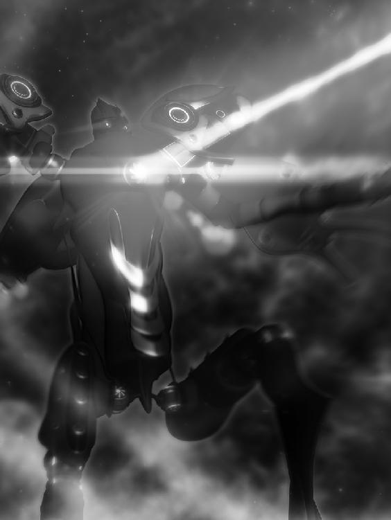
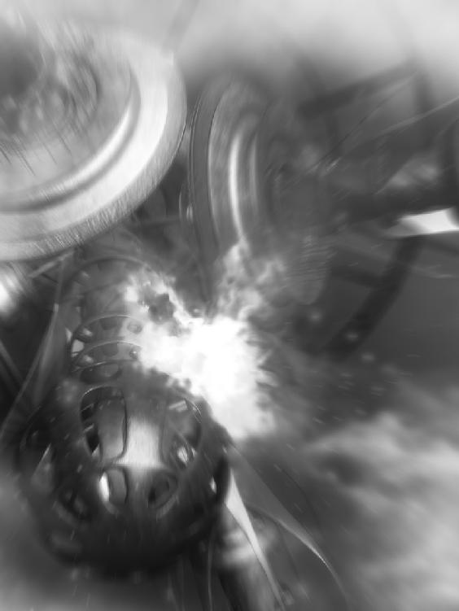
轟音と共に、天井からぱらぱらと何かの破片が降ってくる。
作り物の空が一瞬暗くなり、ひび割れたかに見えたが、それはじわじわと液体が浸食する様に補修され、すぐに元の輝きを取り戻した。
「何が、起きたのだ......」
リズベルルを抱きしめ庇いながら、ノルアードが周囲を窺う。
ユゴスミネラを急に揺れが襲ったのだ。初めは虚無の攻撃かと思ったが、追撃の気配は無い。
「エイフォンか......っ」
ゼルナードが忌々しげに吐き捨てる。フィオの手を借りながら立ち上がったミルゥが覇気の無い声で呟いた。
「下層部に攻撃を受けましたが、ご安心ください。皆様の安全は保証します」
「ミルゥ、貴女は覚えていないのかしら。私達の使命を......今、貴女が為すべき事を......」
「......ずっと、感じていました。胸の奥に、焦りを......けれど、私は......」
シャンロールの言葉に、ミルゥは俯きながら、恐る恐ると言った口調で囁く。
怯えた様な目で皆を見回し、まるで命ぜられるのを待つ様に胸元で手を組んで瞼を伏せる。
「エンダージェンの空を、虚獣の卵が覆っている。これを一撃の元に消滅させたい。ユゴスミネラなら、それが出来るな？」
「......万全であれば、可能です。けれど、先の攻撃でエネルギーが流出を初めています。速やかに自己修復中ですが、漏れたエネルギーの補充には時間がかかります」
「現状持ち得る力で、遂行する事は？」
「あと１０分以内であれば可能です。それ以上経てば保証できません」
ミルゥの言葉に、皆が息を飲んだ。
あと１０分以内であれば、ユゴスミネラに蓄積された力で卵を一掃出来る。
本来であれば慎重に行動すべき所だが、今は一刻の猶予も無い。
撃つべきだ、と誰もが思いながら、言葉に出来ずにいた。
不安なのだ。あのエイフォンと言う男が。
このエネルギーの流出がエイフォンの目論見であったなら、この場で急ぐ事はむしろ危険なのでは無いか。
「......撃とう、冥王の雷を」
意を決した様に、ノルアードが口を開く。
「我々の最大の敵は虚獣だ。この機会を逃し、後悔したくは無い」
息子の言葉に、ゼルナードは深く頷く。
エイフォンは警戒すべき相手だが、それに気を取られ真の敵を討つ機会を逃すのは愚行である。
その場の全員がノルアードに視線を注ぎ、シェラダン剣主の瞳はミルゥへと向けられる。
「ミルゥ、君を我々の仲間に迎え入れたい。どうか、力を貸してはくれないか」
ノルアードの優しげな笑みに、ミルゥはこくりと頷いて。
「冥王の、雷......」
ぎゅっと拳を握り、ミルゥは決意した。
これが自分の使命なのだと悟り、それから目を逸らすのはもうやめようと。
発動シークエンスが凄まじい情報の奔流となって体の中を通り過ぎていく。
ミルゥはただそれを見送り、頷き続けるだけで良かった。
許可、許可、許可......全ての工程に訂正は無い。目標は虚無。空を覆う我らが敵。
エネルギーの流出は尚も続いていたが、それを考慮に入れても全ての卵を一撃で葬る事が出来るだろう。
無論、大結界を内側から傷つける事も無い。計算は完璧だ。
仮想のトリガーに手をかけて、ミルゥは情報の世界から現実へと回帰する。固唾を飲んで見守る......彼らは、仲間、なのだろうか。
エイフォンはミルゥを人形と呼んだ。それは正しい。自分は人格を持った道具なのだ。
要らなくなった道具を捨てる事は、自然である。
エイフォンは悪人だろうか。フィオが激怒する様な悪なのだろうか。
ミルゥには判断がつかなかった。気付くとミルゥは涙を流している。作り物でも、生身の体にはこう言う機能があるのだな、とその時初めて気づいた。
エイフォンの事を想う。
眠っていた自分を起こしてくれた人。自分を此処まで導いてくれた人。少なくともエイフォンは、ミルゥに役割を与えてくれた。
虚無に半ば浸食され、記憶を食い尽されていた自分にとって、エイフォンは必要な人だったのだ。
だからこそ、ミルゥは彼を救いたいと思った。だからこそ、ミルゥは感情と言うものを欲していた。
彼を救う力があるとすれば、それは自分に足りない......人を人たらしめる、デュオンの力だと思ったから。
「......エイフォン様」
焦がれる想いと共に。
ちくりと胸を刺す罪悪感と共に。
ミルゥは引き金を引く。
ユゴスミネラから放たれた冥王の雷は天に轟き、エンダージェン上空を占領していた虚獣の卵を光の向こうへ葬り去る。
本来であれば、そうなる筈だった。
霧の無くなった禁忌の森を、シズマは王の使者達と共に駆けていた。
オリンがボルダナ達に警告を告げに現れた。それが意味する事を深く受け止め、使者達は皆焦っている。
いよいよなのか。シズマは疲れも忘れてひたすらに急ぐ。深く、深く、森の奥へと進んでいけば、向こうに光が垣間見える。
それは仄かに漂う霧のベール。聖なる結界に守られて、王城は健在であった。
「オリン！」
遥か天上へと聳える大樹の下に、その美しい幻獣はいた。
白い鬣と尾を靡かせて、金の瞳に何かしらの決意を映し、佇んでいる。
使者達は全てを悟った。
最早此処は聖域では無い。
虚無によって完全に蝕まれた、王の墓所だと。
「......王の使者達よ、今こそ語ろう。お前達をこの国に招いた、その理由を......」
オリンが語るその言葉に、使者達はただ耳を傾ける。
息を飲み、これがオリンの最後の言葉になるだろうと理解して、ただその響きを記憶に刻みつけようと耳をすませた。
「我らが母なる星......エコーデュオン。その世界はかつて音で満ちた楽園であった......人々は歌い、奏で、謳歌する......混じり合う音、重なりあう音々を、楽園の言葉でこう呼んだ。デュオン......と」
「重なる音......デュオン......」
「音色が調和していた時代は短く、楽園はそのうちに不協和音で満たされた。心を通わせる為にある筈の言葉は、互いを傷つけ、やがて人々の中からデュオンは失われた......それは星の寿命でもあったのだ。死の運命に抗おうと、人々は足掻いた。エンダージェンが生み出されたのもそんな遠い時代の話......エンダージェンは偽りの楽園。人々の憧れと願いが生んだ、物語」
オリンの目が苦しげに歪む。オウカが悲鳴を上げた。
その純白の体が、じわじわと無に侵され始めたのだ。
光を失ったその姿は、正しく無である。そこには何も無く、まるで空間がオリンの影の形にぽっかりと開いた様な奈落。
虚無。
「......エンダージェンは、外界に眠る力を汲み取る装置なのだ。それはこの国で形となって、人々の糧となり世界を潤す。この時代において魔と呼ぶその力を招く事が出来たのは、エコーデュオンから渡って来た者達だけ。しかし時が経つにつれ、それは瓦解する事となる。この国を外なる者共が襲ったのだ。星の力を糧とする外なる者の手から逃れる為に、王は時空の繋がりを断ち、空間の狭間に逃げ込む事を選んだ。かくして、エンダージェンとエコーデュオンは永遠に分たれ、この国は未来でも過去でも無い世界を漂流する事となった」
「未来でも、過去でも無い時空......」
「王は魔を招く権限を多くの民に与える事に決めた。そう......世界が分たれたとは言え、外界のものを招く力を、この国は失っていなかったのだ。王は悩んだ。この国を治めるのに、導く者達だけでは足りぬ。この国を守るのに、剣主達だけでは足りぬ。王は新たに使者を招く事に決めた。王の使者......その選定を迫られた時、私は思った......この国に足りぬもの。デュオンの戦士こそが、必要とされているのだと」
「私達を招いたのは、あなたなの......オリン」
最早黒い虚空の孔と化したオリンは、しかし金の瞳の輝きだけは失わず、静かに頷く。
「まだエコーデュオンが音で満ちていた時代、それを知る者達......この国が必要とするデュオンを持った者。それがお前達なのだ。お前達こそが、希望の使者」
「......しかし、それはまるで......」
一人の使者がきつく拳を握り、肩を震わせて呟くのに、その場の誰もが頷いている。
音に満ちた世界。デュオンの楽園。
そんな世界を、シズマ達は知っていた。
自分達が生まれ育った、元居た世界......エコーデュオンでは無く。
このエンダージェンこそが、真に楽園と呼べる世界では無いのか。
「お前達がそう感じてくれたなら、私は嬉しい。この世界にも、デュオンが響き渡っているのなら、私は......悔いなく逝ける」
オリンの瞳から、金の輝きがふっと消える。
シズマは叫んだ。
「走れ、森の外へ!!」
はっとした使者達が、感情を振り切る様に、虚無と化したオリンに背を向け走り出す。
オリンであったものはゆらりと揺れたかと思うと、体から無数の触手を生やし、かつて王城と呼ばれた聖域を薙ぎ始めた。
木々が倒れ、草花が散る。動揺で瞳を揺らしているオウカを支え、シズマは虚獣を睨む。
「行け」
「シズマ君は......？」
「約束を果たす。行け！」
シズマに背を押され、オウカは青い顔を気丈にも引き締め、こくりと頷き走り出す。
黒外套をはためかせたシズマの足元から暗い影が伸び、それは微かに残った白い霧を裂いて漆黒と化し、弦奏鎧バルグタームの姿となって立つ。
鎧と一体となれば、力が満ちた。
バルグタームの背から剣を抜き放つ。
「王の魔剣......ベルセイバー！ 導く者を裁く事の出来る、終焉の剣......！」
「そう、だ。シズマ......我が友よ。その剣で、私を、この虚無から......救ってくれ！」
壊れたレコードの様に囁きながら、虚獣が跳ぶ。
生き物離れしたその動き。脚はでたらめな方向に動き、美しかった毛並みも今や不気味に蠢いている。折れてぶら下がった首から黒水の飛沫を上げながら、虚獣はバルグタームへと迫る。
「オリン、我が友......覚悟！」
唸る刃、剣戟が光となって虚無を断つ。
魔剣から放たれた閃光は黒き触手を貫き、虚獣は悲鳴を上げながらも結晶化した角を体中から生やしてバルグタームに向かってくる。
懸命に虚獣の攻撃を受けとめながら、シズマはふっと笑みを浮かべていた。
王の使者、選ばれし者、デュオンの戦士......か。
良い思いをさせてもらった、と思う。
絶望の淵にあったシズマを見出し、役目を与えてくれたオリン。
それを救う事が出来るのは、自分だ。
自分だけなのだ。
「俺は......俺はっ！」
虚獣が放った触手が、バルグタームの胸に突き刺さる。
装甲が歪み、シズマがそれを剣で断てば、更なる衝撃で内臓が揺れる。
我武者羅に振られる触手と結晶で、バルグタームは最早満身創痍の姿だ。
頭が冷たいと思ったら、どろりとした血が頬に垂れた。出血が激しい。
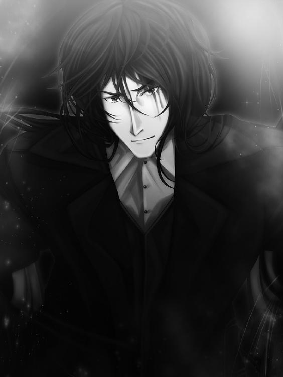
「ありがとう......オリン。俺を、選んでくれて......俺に、使命を」
居場所を与えてくれて。
シズマは渾身の力を剣に込める。
それは、オリンが言うデュオンの力か。
シズマは願う。
これで全てが終わっても良い。だからこの気高き獣を、友を、眠らせてやってくれ。
「......ジン！ あとは......お前が......っ!!」
叫び声と共に放たれた閃光の刃。
それは虚無と化したオリンを飲みこみ、王城を満たす。
魔とは存在の力だ。それを使い尽したエコーデュオンの魔は、消える。
いつかゼルナードに警告された事。しかし、今この時、シズマの胸に後悔は無い。
「......ジン......、」
薄れ行く意識の中、シズマは記憶を反芻している。
いつかジンに言った言葉を、繰り返す。きっとあいつに届くと信じて。
この世界を脅かす危機が迫った時、立ち向かう事が出来るのは俺や、お前なのだ。
この世界を救うには、お前の力が必要なのだ。
「お前が......救え、世界を......っ!!」
光が去った時、虚獣の姿は跡形も無く。
力を失ったバルグタームはゆっくりと崩れ落ち、沈黙した。
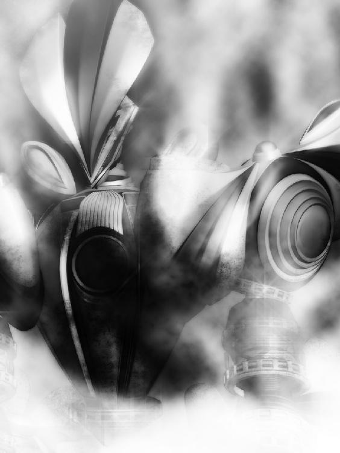
ユゴスミネラから放たれた雷が天を裂き、ソルエルデイルが捉えていた虚無の反応が一斉に消滅する。
戻ってくる、静寂。
「今のが、冥王の雷か!? すると、ノルアードの旦那達は天空要塞ユゴスミネラを味方につける事が出来たんだな！」
「やったわ、虚獣の卵は全て消えたのね!?」
再びエンダージェンへと跳躍してきたソルエルデイル艦内、歓声を上げるボルダナに、ネムリーはぎゅっと抱き付いて喜ぶ。
スクリーンを見つめてクルー達がほっと息を吐く最中、ただ一人エルデイルだけが厳しい表情で雷の過ぎ去った空を睨んでいた。
その唇が、忌々し気に歪み。
「いや、まだじゃ！」
エルデイルの言葉は、スクリーンの向こうで肯定される。
突如として空に大きな裂け目が走ったかと思えば、そこから巨大な柱が突き出して、みるみる成長していくではないか。
それは黒水の結晶体であった。地上へ向けて凄まじい速度で伸びた結晶は、禁忌の森を貫いている。
ソルエルデイルが捉えたところ、それはエンダージェン全土の１２か所で起こっていた。
空から伸びた１２の柱。その表面が粟立つ様に盛り上がり、それらの突起一つ一つが雄叫びを上げて虚獣と化す。
ゆっくりと結晶から這い出てくる虚獣達が、地を踏む事は決して無かった。
目覚めたばかりであっても、ミディオムを取り戻したメテオールは比類無き力を発揮する。
大結界の霧の奥からその姿を現した月の船・フェヴルートーが放った光の矢は、ただ一隻の船から発せられたとは思えぬ超越的な威力でエンダージェン中の柱を吹き飛ばし、生まれい出ようとしていた虚獣共を駆逐している。
今度こそ危機を脱したかと安堵しかけるクルー達だったが、異変はまだ終わらない。
エンダージェンの中心から、凄まじい光の柱が立ち上った。
スクリーン越しでも眩いその光が晴れると、先程まで何も見えなかった場所に、突如として天にも届かんばかりの大樹が姿を表している。
強固な結界である王城に守られていた王が、あるべき空間に還ったのだ。
その意味する所を理解して、エルデイルは珍しく苛立った様子でコンソールを叩いた。
「......王が、墜ちた......っ」
落雷めいた渇いた破裂音がしたかと思うと、王の大樹に巨大な亀裂が走った。
それはみるみるうちに樹の全体に広がって、葉が色を失っていく。
轟音と共に大樹の表面が剥がれ落ち、悲鳴の様な唸りを上げながら禁忌の森へ落下を始める。
茂っていた葉は枝ごと落ち、大樹が死んだ後に残されたのは、一本の白い柱だった。
それこそが王の本体なのか、白く輝く象牙の塔は空を支える様に伸びている。
じわじわと、そこから光が失われ、曇っていく様を、エンダージェン国の人々はただ見つめる事しか出来ない。
王は死んだ。
虚無の手に落ちたのだ。
その日、世界の中心は虚無となった。
明くる朝、剣主達はソルエルデイル艦内へと集結していた。
ソルエルデイルの復活により、封印球を起点とした跳躍が行えるようになった為、地上と艦とを自由に行き来出来る様になった事も理由の一つだったが、今や王のシステム全域が虚無に侵され、ソルエルデイルの情報障壁すら力が及ばなくなった事も大きい。
未だ虚無は沈黙を保っていたものの、乗っ取られたシステムが王の根に基づくものである以上、これまで以上に大地から湧き出す虚獣の数が増える事も予想されていた。
誰しもが表情を暗くし、顔を見合せながらも、口を開く者はいない。
「......皆、聞け！」
沈黙を割ってエルデイルの声が響く。顔を上げる剣主達を真剣な表情で見渡した。
「解析結果が出た。虚獣共に命令を出しておる司令塔が判明したのじゃ」
そうしてエルデイルの後ろに映し出された巨大なスクリーン。
投影されたのは、剥き出しになった王の柱......根元はまだ元の白を保っていたが、それは空に登るにつれ灰色に滲み、天を貫く位置では漆黒と化している。
光すら返さぬ黒よりも暗い虚無。考えるまでも無い結論だった。
「今や王こそが虚無の核......全ての亀裂、黒海、黒水、虚獣は、虚無の王によって統べられておる......我らに残された道はただ一つ。王を、討つ！」
エルデイルの宣言は絶望となって剣主達の心を貫いた。
一際体を震わせて、血が滲むほど拳を握り、しかし決意を秘めた瞳で誰よりも早く顔を上げるのはクルスネット。
エルデイルの正面に立ち、ゆっくりと確かめる様な慎重さで尋ねるのだった。
「......もう一度、聞く。王はそれを望んでおられたのだな......？」
「王は、このエンダージェン国の存続を望んでいた。虚無の手に落ちても、それは変わらぬ」
「......この戦いが始まった時から、定められていた決断かもしれんな......」
クルスネットの言葉に、次々と頷く剣主達の心は今や一つ。
王を討つ。
虚無を退け、この世界に平穏と未来を取り戻す為に。
「よろしい！ では次の決断じゃ！ 諸君は選ぶ事が出来る、王を一撃の元に葬るか、否かを！」
「お前がそう言うって事は、なんかあんだろ」
ボルダナが皮肉めいた、けれど真剣な眼差しでエルデイルを見れば、太陽の船のミディオムは二つに分かれた髪をぴょこんと揺らして。
「メテオールで王を破壊する場合、その手段はソルエルデイルの主砲・グランドクルスをおいて他に無い。虚無の王を消滅させ、この国は救われる。ただし、残りのメテオールを防衛に回しても、その威力はエンダージェンの国土三分の一を消し飛ばすだろう。犠牲が出る」
「強力すぎるのも考え物だぜ、全く......」
一撃で虚無を撃退出来るのならそれに越した事は無いが、三分の一もの街が同時に消滅するとなってはとても頷けたものでは無い。
剣主達は落胆したが、しかし決して希望が無い訳では無かった。
逆を言えば、最終手段としてメテオールを用いれば、人類側に敗北は無いのだ。
ある意味で、それは余裕でもあった。
「虚無の核と目されるポイントは王の柱......象牙の塔の遥か高く。この高度を攻撃するのには、どの道メテオールで無いといかん。ソルエルデイルの主砲を使わなかった場合、必ず敵の反撃を受けるだろう。メテオールへの反撃では無く、地上への反撃じゃ。王の根からは虚獣が湧き出し、また先日の結晶柱を鑑みれば、象牙の塔からも飛行型の虚獣が生まれい出る事は容易に想像できる」
「選ぶべき、もう一つの選択は......？」
胸元を押さえ、来る決戦に不安の表情を浮かべながら、恐る恐る尋ねるリズベルル。
エルデイルはそんな彼女をじっと見つめ、その胸元に飾られた封印の鍵を静かに指差す。
リズベルルも、ノルアードも、ジンを知る者は皆はっとした。
「メテオールを除く、高高度への攻撃が可能な唯一の手段。天舞う音色ヴィルフォーナならば、象牙の塔を駆け上がり、虚無の核に辿り着く事が出来る」
「馬鹿な......ジンに全てを背負わせると言うのですか！」
「俺では、頼りないか、ウルグス」
肩を竦めてジンが笑うのに、ウルグスは表情を強張らせ、次に激怒した。
「逆です！ あまりにも......あまりにも重すぎる！ この世界の命運を、貴方一人に、託さねばならないなんて......っ!!」
「エルデイル、一つ聞かせてくれ。全てのメテオールが防衛に回った場合......」
「無論、飛行型の虚獣は一匹たりとて地上には降ろさん。根から湧いた虚獣の対処は剣主達に押さえてもらう事になるが」
「だそうだ。エルデイル、ウルグス......皆も。約束してくれ、民を、この国を、死力を尽くし守りきると......」
ジンの言葉、その顔に浮かんだ決意の色。
この外界からやってきた魔人に、自分達は世界の命運を託す事しか出来ない。
剣主達はただ胸を打たれ、己の無力さに打ち拉がれるのだった。
「約束してくれるのなら、俺は飛ぶ。ヴィルフォーナで、虚獣の王を討つ」
言葉にしてしまえば、あとは急に楽になった。
ジンは肩の力を抜いて、ふっと柔らかな笑みを浮かべる。不安げな顔をするリズベルルに頷いて見せた。
「......王への攻撃が可能となるのは、一週間後。その日、虚獣の王の卵が孵る。今は固い外殻に守られている司令塔が姿を表し、それと共に人類への一斉攻撃が始まる筈じゃ。皆、それまではただ休め。来るべき決戦へ向けて......デュオンの力を高める為にも」
来るべき、決戦。
それこそが、恐らく虚獣との最後の戦いとなるだろう。
世界を闇が覆うまでの、一週間の猶予。それが不安を孕んだ絶望への足音だったとしても、疲弊した人類にとっては安らぎだった。
天舞う音色、ヴィルフォーナ。
その微かに揺らぐ希望の光の元、休息は訪れた。
ムストル砦へと帰還するなり、ジンはリズベルルともノルアードとも口を聞かず、ただ黙って外の空気を吸いに歩く。
何処からとも無くアオゾラがやって来て足に纏わりついたが、今はお喋り猫とも口を聞く気にはなれなかった。
砦を出ると、空は青い。少なくとも、密かに天上を満たしていた虚獣の卵は殲滅されたのだ。その事は、素直にジンの心から雲を少し取り除いてくれた。
「あの、ジン君......」
遠慮がちに声をかけられ、振り向くと、泣き腫らした顔のオウカが立っている。
彼女は足元をぐるぐる回るアオゾラを見ると少し微笑んで、爪先で灰色猫の腹をつつくと、唇を噛み、何度も口を開く事に失敗しながら、それでも懸命にジンを見つめる。
ジンは頷いて、擦れた声を無理に明るく取り繕った。
「......聞いたよ、オリンの事......大変だったな」
「オリンは......最期に私達を招いた理由を、教えてくれた。私達にはデュオンがあるって。デュオンは、響き合う力だって。虚無に飲み込まれるオリンを、シズマ君は......約束を果たす......そう言って......」
オウカは肩を震わせて、止めどなく溢れる言葉に胸を押さえながら、苦しげに叫ぶ。
「戻って来ないの！ シズマ君......戻って、来ない......っ！」
「あいつなら、大丈夫だ」
ジンの声は、穏かだった。
不思議と確信に満ちて、震えも無く、ただ普段と同じ調子で囁かれた。
潤ませた瞳を見開きオウカが息を飲めば、ジンは優しく微笑み頷いている。
「俺は長い事、シズマはもう生きちゃいないだろうと思っていたんだが、こっちで再会したら存外に元気だったから。多分また、ふらっと姿を現すさ。そう言う奴なんだ、あいつは。俺がピンチになりでもしたら、颯爽と駆け付ける様な所がある。信用してるんだ。親友だから」
「......信じて、るんだね」
「親友だから」
繰り返して笑い、ジンは照れ臭そうに頬をかく。
オウカも笑って、何度か大きく頷くと、来た時よりも力を取り戻した風に見える足取りで去っていった。
暫くジンはその場でぼんやりと外の風を受け佇んでいたが、やがて強張った頬を緩ませて歩き出す。
もしかしたら、先の言葉は自分に言い聞かせたものかもしれない。
物陰から様子を窺っていたマールは、つい先ほどまでジンが立っていた所までやってくると、ぽつんと取り残されていたアオゾラを拾い上げた。
「......シズマ、くたばっちまったかあ～」
素っ気なく、けれど悲しみを隠せぬ声色で、アオゾラが鳴けば、マールは灰色猫の頭をそっと撫でて。
「親友のジン君がああいうんだから、大丈夫でしょ」
優しい手で撫でられて、アオゾラはにゃーんと鳴く。
くすりと笑みを漏らしながら、親友か、と羨む様に、マールは呟いていた。
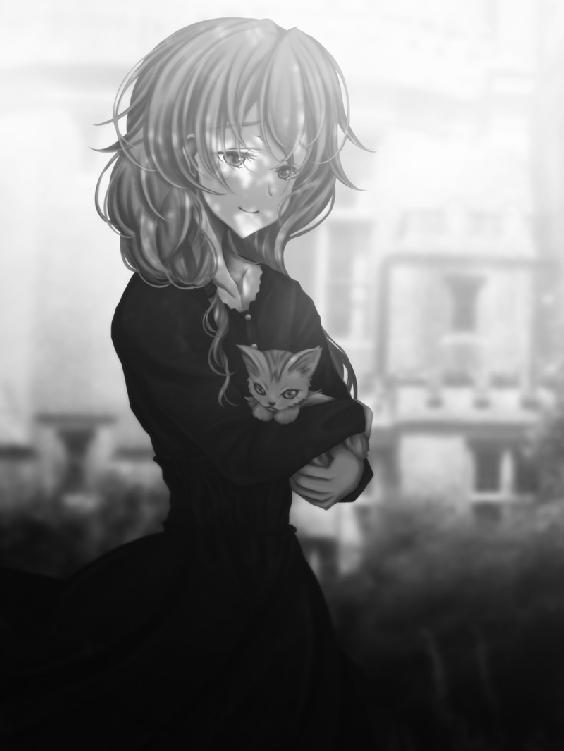
「最期の一週間、希望の一週間......エルデイルの言葉が正しければ、この間虚獣の出現は無いわ。貴方達も大分疲れているでしょう、ゆっくり体と、そして心を休めなさい」
ネムリーは立ち上がり、並び立つ三騎士の手を一人一人取って、微笑みを浮かべる。
あと一週間で、世界は救われるだろう。しかし、騎士達にとって、決戦の日が無事で終わる保証は何処にも無い。
せめてこの一週間は騎士である事を忘れ、ただ己の為に過ごして欲しい。
大切な人と寄り添い、友と過ごし、世界の命運を分ける戦いまで安らいで欲しい。
それはネムリーの切なる願いであった。
「ありがたきお言葉......！ そこでと言っては何ですがネムリー様、私から一つお願いごべっ」
何事か言いかけたフルーナの頭に、パルナダの拳が落ちる。
舌を噛んだと涙を浮かべながらフルーナが抗議の視線を向ければ、パルナダはきっと睨みつけて返した。
「な、何故殴った......！」
「お前がまた、破廉恥な事を言う気配がしたのでな」
「な、何故判った......!?」
「......いつもの事だからです、全く貴方と言う人は」
パルナダがやれやれと首を振るのに、ダルカスも溜息交じりに頷いて、その様子が可笑しくネムリーはくすくすと笑う。
全く仲が良いのか悪いのか、いいえ、きっと良いのね......目を細めながら三人の様子を見るネムリーに、ふと三騎士は真剣な顔になる。
首を傾げるネムリーに、先程とは打って変わってフルーナが騎士としての口調で言った。
「......ネムリー様、先の虚無からの攻撃に関して、我らで気付いた事がありまして、それを是非聞いて頂きたいのです」
「先の......例の結晶の柱の事かしら」
「はい。１２の柱が、空から禁忌の森を貫いた。柱は１２の街に隣接する森のある地点を正確に射抜いております。一つたりとて、同じ街と接する領域を貫いてはいない。そして、数......１２と言う数です」
「もしかして......」
「その通り、柱が貫いたのは禁忌の森に隠された〝剣の試練〟。この事に気付いているのは、恐らく全ての試練の場所を知る我ら三騎士以外では、ごく僅かかと......」
それを終える事で挑戦者は真の騎士となると言い伝えられた１２の試練。
剣の試練の隠された場所は、他言無用の掟。ダルカス、フルーナ、パルナダも、自力で見つけ出した試練の場所以外は本来であれば知らぬ筈だ。
三騎士は結晶が貫いた地点に違和感を覚え、それぞれが挑んだ試練の場所をその時初めて確かめ合ったのだろう。
そして、それらは三人の挑んできた１２の試練の場所と一致した。これは偶然だろうか......？
「......判ったわ。この事は、あとでお兄様とエルデイルに伝えておきます」
ネムリーが言うと、フルーナとパルナダは肩の荷が降りたと言う風に表情を和らげたが、ダルカスは僅かに眉を落とし、考え込む様な顔になる。
不思議に思いながらも、この真面目な騎士の事だから、きっとまた目下の問題に根を詰めているのだろうとネムリーは笑い、三騎士の背をぽんぽんと押して。
「さ、話が終わったならお仕事もお終いよ。難しい顔をするのはやめて、せめてこの一週間は自分の思うままに生きなさい」
途端に子供みたいにはしゃぎ出すフルーナを、ダルカスとパルナダが引きずって部屋を出て行く。
手を振ってそれを見送り、ネムリーもほっと息を吐いた。
自分の思うままに生きる、か......。
決戦の時まで、自分もまた、そう過ごそう、とネムリーは思う。
剣主でも無く、マーネルの娘でも無く、ただのネムリーとして。
砦から張り出した舞台の上に立ち、ディランは揺らめく湖面を見つめていた。
このエンダージェンを潤す聖なる湖。そして......黒海に飲まれた哀れな少女の眠る場所。
「遂に......最後の戦い......か」
呟きながら、ディランは胸中で荒ぶる激情を、必死で抑え込んでいる。
今はまだ、ぶつける時では無い。この心を激しく燃やす時があるならば、せめて虚無に向けて......。
ディランの中には、憎しみだけがあった。虚無を憎む気持ちが、ディランを此処まで突き動かして来たのである。
プランシューネが遺した災いの予言。ディランにとって、全てはそこから始まっていた。
今や真の脅威を顕わにした人類の敵、虚無......プランシューネの命を奪った、憎き仇。
ディランが胸中で燻らせている怒りは、憎しみは、全てそれに対する復讐心だ。
だからこそ、虚無の王を倒す事が出来るのがジンであると聞いて、ディランは歯痒かった。
出来るなら、この手で......そんな思いがディランの心を埋め尽くし、最期の安らぎの時かもしれぬこの時間も、憎悪は増すばかりである。
「......プランシューネ」
恋焦がれる様に、ディランは彼女の名を呼んでいた。
元々、ディランはその少女に対し、ジルハワードの娘である事以上の想いを抱いてはいなかった。
明るく、素直で、可愛らしい......友人の娘。
彼女の存在は、予言の日を境に、ディランの中で大きく変化したのである。
あの日から、一日も彼女を忘れた日は無かった。もう二度と会えぬ、想い出の中だけにある笑顔は、ディランの心を時に苛み、時に癒し、いつしか特別な想いを抱く様にさえなっていた。
それは、叶わぬ恋。その幻は、ディランが作り上げた都合の良い彼女なのかもしれない。
けれど、もしもう一度会う事が叶うなら、自分は......きっと彼女を二度と手放したりはしないだろう。
この想いは、幻では無い。
「見ていてくれ。私は戦う。君との約束を果たす為に。この命を賭してでも......」
虚無を、討ち滅ぼす事を誓う。
ディランの呟きに応える者は無い。
ただ、湖の上に翡翠魚の輝きが揺らめいて、ディランは人魚の幻を探す様に、暫くじっと湖面を見つめ続けるのだった。
「今だから打ち明けるが、実は以前此処へ、リズベルルの事で相談に来た事がある」
恩師ラスティノフの眠る墓の前に花を手向け、ノルアードは寄り添うリズベルルに微笑みかけながら、そう告白した。
首を傾げる恋人に、その時の事を思い浮かべ、かつての自分がこの未来を知ったら、きっと喜びでどうにかなってしまっただろうと愉快な想像をする。
「時と共に綺麗になるリズベルルが、誰かにとられてしまうのでは無いか、とね」
「ノルアードは独占欲が強いですね。この間も、フィオにあんな事言って」
「いけないか？」
「いけなくないよ。うれしい。私も、おんなじだし」
「同じ？」
「ほら、前にリィガイムの時......婚約者騒動、あったでしょ」
「あった」
もじもじしながらリズベルルが言うのに、ノルアードは噴き出している。
あの時も大変だったのだ。自分は頭を悩ませて、リズベルルは何故だか不機嫌だし、終いには嘘の婚約だ。
今では嘘も嘘で無くなった。あれもまた、一つの切っ掛けだったのかもしれないな、とノルアードは懐かしむ。
「あの時、私レイルがノルアードの婚約者なんだって思って、大ショック、大失恋。ヴィルフォーナはいなくなっちゃうし、ご飯も喉に通らなくて、夜は泣きました」
「はっはっは、あれはそう言う事だったのか」
「笑いごとじゃないの！ 真剣なの！」
怒って見せるリズベルルの目は、けれども楽しげに細められ、その他愛のない言葉のやり取り一つ一つが楽しく、愛おしく、この時間がいつまでも続けば良いのにと二人は思う。
どちらとも無く手を握り合い、二人は暫くの間見つめ合って、軽く口付ける。
もう、慣れた行為。
色々なキスも試したし、それ以上の事も。
心も、体も、お互い知り尽くした仲だ。これからももっと知るだろう。
「リズ......結婚しようか」
「やだ」
割と真剣な言葉だっただけに、一蹴されてノルアードは苦笑する。
けれどそれが拒絶で無い事は判っていて、だからノルアードは微笑むのだ。
この人は、何れ本当に自分のものになる。自分だけのものに。ノルアードもまた、彼女のもの。それが判っているから、焦らない。
「もっともっと、恋人らしい事沢山したいから。うんと待ったんだもん。慌ただしく終わるの、勿体無い。恋人し終わったら、結婚しようね。朝、ぐっすり寝てるノルアードを私が起こすの。ご飯作ってあげて、二人で食べる。おいしいって言ってね？ それからじっくりキス。二人でお仕事に行って、街を見て回るの。平和なシェラダン。皆がノルアードの事を慕って、私はそれを傍で見ている。何にも起こらなくて、退屈なくらい長閑な一日が終わって、幸せになる。でも本当の幸せは此処から。夜は二人の時間。うんと近くでおやすみを言って、眠るの。そしてまた朝になる」
「......そう言う日が、いつか来るのだな」
「うん。あ、でもそんなに長く続かないかも」
「どうして？」
「いつかきっと、家族が増えるから」
柔らかな笑みを浮かべ、リズベルルが言うので、ノルアードはその笑顔を眩しげに見つめながら、少しだけ照れた。
深く頷いて、それから想像する。
「子供か......どんな子になるんだろうな......男の子だろうか、女の子だろうか」
「どっちもが良いよ。兄弟は沢山が良い。私、兄弟って少し憧れてたから」
「私もだ。しかしそうすると、色々考えねばならない。さしあたって名前だな......今から考えておかないと」
「気が早いよ。まだ暫くは、恋人だもん。練習はするけど」
二人でくすくすと笑い合い、また唇を合わせる。
いつだって、何処ででも、二人なら感じられるその味が、離れる時にはいつも寂しく、名残惜しくなり、それが不思議だった。
きっとこれからも、この味に飽きる事は無いのだろう。
胸の高鳴りも、その都度新鮮なままで。
「......ラスティノフ先生、約束します。リズベルルは、私がきっと幸せにすると」
「お父さん、私も誓います。ノルアードと歩むと、永遠に共にあると」
「そして、この街も、世界も、きっと守ってみせる。私達の、未来の為に」
ノルアードとリズベルルは誓った。
亡き恩師に、父に、お互いに。愛と共に、この戦いを生き抜くと。
腰に下げたフィレントアの剣をそっと撫で、ノルアードは決意する。
剣主としての自分はまず世界を、そして一人の男としてはまずリズベルルを想う事を。
どちらが欠ける事も許されない。二つは等しく、ノルアードの使命なのだ。
この剣は、その為にある。
リズベルルの髪をそっと撫でながら、ノルアードはそして、友を想う。
ジン......初めて出会った時は、奇妙な男だと思ったものだが、今では彼ほどに信頼出来る者はいない。
彼に最後の一振りを託さねばならない。その重みを、少しでも支えてやる事が出来たなら。
「私達が共にある事が......どうか彼の力となる事を願う......」
ノルアードはリズベルルをぎゅっと抱きしめる。
膨らむ彼女の胸元で揺れる封印の鍵が、眩く輝いた気がした。
「剣主達も、あの結晶柱が意味する所に気付き始めています......ミルゥ、本当の事を言いなさい。貴女は雷を、わざと外したのね」
シャンロールが諭す様に言う言葉に、ミルゥは白い顔でおずおずと頷いた。
不思議と手が汗ばみ、呼吸も辛くなる。エイフォンが去ってから、ミルゥは自分の体を上手く扱えなくなっていた。
あるいはこれが、感情なのだろうか。
あれ程欲していたものがいざ手に入ると、何とも居心地が悪く、邪魔にすら感じられ、ミルゥは呻く。
「......そう、辛かったでしょう」
思いがけぬ言葉が返って来て、ミルゥは次に温かな光に包まれていた。
シャンロールがその肩から腕の代わりに伸ばした光の帯が、ミルゥの頭に触れている。
その感触は優しく、温かで、瞳の奥がじわりと痛くなった。
「あの方は......エイフォン様は、お優しい方です」
震える声で話し出すミルゥの言葉を、シャンロールはただ静かに聞いてくれる。
安らぎを覚え、それはエイフォンの感触ととても似ていて、堰を切ったように言葉が溢れた。
「彼の夢は今、邪悪なる意志によって侵されている。あのお方の本当の心は、深い闇で覆い隠されてしまった。私は彼の事をお救いしたいと思った......エイフォン様を、私は......」
「ミルゥ、貴女......愛してしまったのね、彼の事を」
回した光の帯でぎゅっと抱きしめられ、シャンロールの言葉に首を横に振りながら、ミルゥは違う、と声なき声で囁く。
ミルゥはただ、エイフォンに感謝しているのだ。愛などでは無い。そんな、心の様なものでは決して。
自分は人形。エイフォンがこのユゴスミネラに集めた宝の一つ。
「愛にも種類があるのですわ。貴女はきっと、彼を家族と思ったのでしょう。家族を愛する心、それを否定しないで」
「私が......エイフォン様を、愛する......」
「ミルゥ、聞きなさい。彼の事は、旦那さまがきっと止めてくださる。貴女は、貴女の使命を果たすのです」
使命。
導く者たる、ミディオムたる己の使命は、このエンダージェンの空を守る事。
「貴女の守る世界で、彼もまた生きるのですわ」
「エイフォン様の生きる世界を、守る......」
そう呟けば、胸が軽くなる。
目の前が明るくなって、視界が開けた気がした。
ユゴスミネラの力で、この国を、世界を守護した果てに、全てが終わった時......。
柔らかく微笑むエイフォンの隣に、もう一度立つ自分を夢見て、ミルゥは心を決めた。
ミディオムとしての使命を果たすと。
「ボルダナさん、この箱は何だい？」
「こいつか。ちょっとどいてみろ」
無事街に逃げ伸びていた流浪の民達と再会したボルダナは、早速運び込んだ物資を皆に配り始めていた。
再会の喜びもそこそこに、慌ただしく人が動く中、ボルダナは大きな木箱に足をかけ、釘で打ち付けられた蓋を乱暴に剥がす。
中から覗いた沢山の刃に、皆息を飲んだ。
「残念ながらニトクリスの刃じゃねえんだ。俺の昔の船の残骸から作った奴でね」
言って、ボルダナは木箱から剥き出しの剣を一本引き抜き、掲げてみる。
手にずっしりと重く、ソルエルデイルのドックで急ごしらえの割になかなか良く出来ていた。
「虚獣を弱らせる事は出来ないが、止めを刺す事は出来る。奴らの核となる亀裂は、物理的に壊す事が出来るからな。無いよりマシだろ」
「こいつは......助かるよ！ いつまでも騎士様や王の使者様にばかり頼っていられない。俺達も戦わねばと、皆で話し合っていたんだ」
「その勢いは良いが、戦いは専門家に任せとけよ。皆は......誰かを守る為に、この剣を使ってくれ」
ボルダナの言葉に、民達は頷き、剣を手にとる。
感触を確かめるように傾けて、口々に礼を言った。
「ボルダナさん、一つ聞きたい事があったんだが」
一人の男が尋ねるのに、なんだいとボルダナが首を傾げれば、彼は空に浮かぶソルエルデイルを指差して。
「太陽、と言うのは、どう言う意味なんだい」
「太陽っつーのはだな」
ボルダナが話し出すと、皆興味深げに聞き入る。
ソルエルデイルを揃って見上げ、眩しげに目を細めた。
「空に浮かんで、皆を見下ろす大きな存在の事だ。明るく、眩しく、世界を光で照らすもの......」
「成程、太陽......太陽の船か」
民達は、その言葉を噛み締める様に呟く。
眩く翼を広げるソルエルデイルは、正しく太陽の温もりでもって、そんな人々の心を明るく照らすのだった。
「踏み込みが浅い。躊躇うなよ」
短く言うと、アルベルは木刀を降ろす。肩で息をしながら頷き、ちらりと稽古場の外を見れば、いつの間にか日は落ちていた。
束の間の休息、ジンはその一日を、自らを高める事に費やした。
最後の戦いで、もしジンがしくじっても、人類はいくつかの街を犠牲に虚無との戦いを終わらせる手段を持っている。
そう思えばむしろ楽になり、無心で修行に打ち込む事が出来たのである。
汗を拭い、魔人は笑う。
「師匠、ありがとうございます」
「礼など要らん。礼を言わねばならんのは......我々の方だ」
ふっと笑みを浮かべ、アルベルはジンの手からも木刀を奪うと、力強い足取りで去っていく。
今日はもう休めと言う事か、と頷き、ジンは師の背に深く頭を下げた。
「......ありがとうございます、師匠......アルベルさん」
初めは、おっかない老人だと思ったものだが、今ではその厳しさが嬉しい。
ジンはアルベルが好きだった。言葉少なで、いつも怒っている風だが、祭り好きで、案外優しい所もある。
何より、彼はいつも真剣だ。あんな風に真剣な人になりたい、とジンはいつも思うものだ。
そんな人を師と呼べる事を、誇りに感じる。
「お疲れ様です、ジンさん」
「......ユフィーユ」
声をかけられて振り向けば、真っ直ぐに向けられた微笑みがあって、ジンはぎこちなく笑い返す。
何となく口を噤んだまま、二人で外に出た。夜空を撫でる黒海の波が美しく、敵でありながら、ジンはいつも見惚れてしまう。
「決めたんですね、本当に」
尋ねられれば、それが指すのは一つしか無い。
虚無の王をこの手で倒す事。その決意は、既にジンの中で固まっていた。
「貴方は......この国の人では無いのに。どうしてそこまで強くあれるのですか。誰かの為に、戦えるのですか」
「簡単な事さ。俺ももう、この国の人間だ」
今度は素直に笑って、ジンは頷く。
この国は、エンダージェンは自分の故郷だ。帰るべき場所。
昔、アオゾラに言われた事があった。元の世界に帰りたければ、約束事をするな。
帰るべき場所を見失わなければ、地球に戻る事も出来る。
あの言葉の意味が、今では色を変えて理解出来た。
ジンは帰るべき場所を見失ったのでは無い。このエンダージェンを好きになったから、もう地球に帰る理由が無くなった。
それだけの事だ。
「貴方の世界には、本当の月があったんですね。私の記憶にも......目を閉じれば、ぼんやりと浮かびます。淡く輝く、月の光が」
「ユフィーユ、君は......」
ジンは不安になる。
ディエナの記憶を受け継いだユフィーユが、その心が、別物になってしまったのではないかと。
この人は、こんな風に笑う人だっただろうかと。
そんなジンの頬を手で包み、ユフィーユは小首を傾げて。
「私、初めて貴方と会った時は、期待で胸が高鳴っていました。良く覚えている......拍子抜けして、呆れた事も。貴方を意識したのは、白銀の竜が初めて空を飛んだ日。憧れでした......ジンさん。でも、今は違う」
息がかかる程近くで、その唇がゆっくりと動く。
ジンの胸から、不安が溶けていった。
「貴方を、愛しています。ディエナの記憶を継ぐ前も、後も、私の心は、貴方だけを見ていた」
飾らない、その言葉。
ジンは静かに目を閉じて、ゆっくりと首を振る。
ユフィーユの気配がそっと離れるのを待って、瞼を上げた。
「君の想いに、答える事は出来ない」
切なげに細められる眼をじっと見つめ、ジンは続ける。
もどかしいこの想いを伝える為に。
「俺は必ず、この世界を救ってみせる。約束できる。けれどそれが済んだ後、無事に戻ってくる事は約束できない。だから、今は......君の言葉に、答える事は出来ない」
ジンはその時、友の事を思った。
シズマはこの国で、自分の役割を、使命を見つけ、それを果たした後、帰っては来なかった。
もしもジンがこの国に招かれた本当の理由、使命が、虚無の王を倒す事にあるのなら。
全てを終えた時、自分もまた、この国から消えているのかもしれない。
その事に、恐怖は無かった。むしろジンの心は満たされ、体には力が漲っている。
「......私、ディエナの記憶を継いで、嬉しかったんです。特別なものになれた気がして。貴方と対等になれた気がして」
「......役割があるって事は、居場所があるって事だ。俺達は、幸せなのかもしれない。今が一番......」
「世界が平和になったら、もっと幸せになれます。この世界は、ジンさんを必要としている」
ユフィーユはそうして、ジンの胸にそっと体を預けた。
伝わってくる温もり。ユフィーユは唇をジンの頬に近づけて、けれど耳元でふっと笑っただけで、何もせず離れる。
微笑んで背を向けながら、ユフィーユは言った。
「告白の為の勇気、全部使い切りました。もう、同じ事は言いません」
「ユフィーユ、俺は、」
「もし無事に帰ったら。その時、貴方の心が私の望む答えを出していたら、その時は......ジンさんから、告白してください」
愉快気な、しかし少し潤んだ声でユフィーユは言って、歩いて行く。
夜空の下に立ち尽くすジンの頬には、いつしか一筋の涙があった。
叶うなら、ずっとこの世界で、この街で、生きていきたい。
ジンは肩を震わせ、祈った。
この世界の平和を。彼女の幸せを。それが永遠に続く事を。
「......ジン様」
建物の影でジンとユフィーユを窺っていたコルネリーはそっと涙を拭う。
避難所の怪我人達を介抱し、薬を届けて回って、一日の終わりにせめて彼の顔を一目見たいとムストル砦に足を運べば、その場面だった。
とても出ていく気にはなれず、コルネリーはとぼとぼと歩きだす。俯き、止めどなく溢れてくる涙をその都度拭いながら、けれど不思議と気持ちは落ち着いていた。
「愛、なのですわ......」
ユフィーユがジンを想うあの表情、声色、あれが愛なのだ、とコルネリーは気付く。
それに比べて、自分の胸の中で揺れるこの想い。
「私のジン様への想いは......憧れ......」
悔しかった。この想いが愛で無い事が。恋でしか無い事が。
いつしかコルネリーは蹲り、その場から動けなくなっている。
冷めていた筈の心が急に張り裂けそうに痛んで、声を出して泣いた。
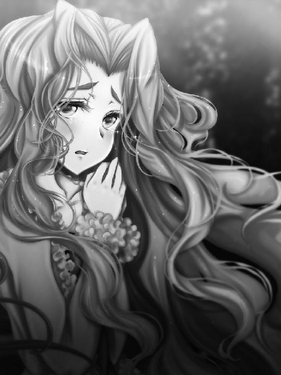
「どうされました」
心を包む、優しげな声。顔を上げると、そこには微笑みを浮かべた青年の姿。
琥珀色の髪と、赤い外套。翡翠の瞳は美しく、コルネリーを見つめている。
「貴方は、フィオルド様......」
「シェラダンには、師が居るのです。彼を探していたら、貴女が泣いているのが見えた」
差し出されたハンカチを受け取り、コルネリーは涙を拭う。
近頃、こんな所を見られてばかりな気がして、急に頬が熱くなった。
「ありがとう、フィオルド様。私......」
「失恋、されたのですか」
「......判るのですか？」
コルネリーが驚くと、フィオルドは少し眉を寄せて頷き、それから僅かに声を潜め、微笑んで。
「貴女の顔を見たら、すぐに判る。僕も、同じだからです」
「......フィオルド様も......」
二人は近くの噴水の縁に腰掛けて、黙って空を見上げる。
今隣に居るお方が、ジンであったらどんなに嬉しかっただろうと思いながらコルネリーが涙を拭っていると、フィオルドはふと気付いた様に声を上げ、ポケットから包みを取り出して開けば、中身は食べかけのチョコレートだった。
半分割って手渡されたそれをおずおずと受け取り、齧ってみる。
優しい甘さが口の中に広がって、コルネリーは少しだけ笑みを取り戻した。
「味と気持ちで照らし合わせたら、甘いのと優しいのは、同じものではありませんか」
「......ふふ、フィオルド様は面白い事を言うのですね」
「コルネリー、僕は......」
澄んだ青年の声は迷う様で、けれども力強く、コルネリーは静かにその先を待つ。
口に残った甘い香りが溶けて、胸に届き、それは確かに優しさに感じられるのだった。
「僕は......思うんだ。人を想う気持ちは、止めようが無いと。誰かを愛する事は、自由だと。例えそれが、報われなくても」
「私には、私自身の心が判らないのです。あのお方を想う気持ち、本当に愛なのか......自信が持てない、でも......そう想う事も、自由なのかしら。あのお方に、憧れを抱き続ける事も」
コルネリーのたどたどしい言葉に、フィオルドは頷く。
不思議とそれで安心して、コルネリーはいつしか涙が止まっている事に気付いた。
空を見上げる。美しい空を。
薄らとある雲間に隠れるようにして、月の船が浮かび、輝いていた。
気がつくと暗い空間に一人置き去りにされ、ネムリーは悲鳴を上げていた。
何も見えない。誰も居ない。虚無の世界。
必死で助けを呼べば声がして、振り向くと目の前に青白い腕がある。
一本、二本、それは次第に増えていき、助けを求める様にネムリーに絡む。
体を弄られ、髪を引かれ、全身が張り裂けそうな痛みでもがき、ネムリーは叫ぼうとするが、声が出無い。
これは、自分が救えなかった者たちだ。ネムリーはふと気付く。
ネムリーを恨む、亡者の腕。彼らにならば、殺されても仕方が無い。
そう思った時、ふと青白い腕に混じって、温かな温もりがネムリーの額をそっと撫でる。
目を開けると、穏かな表情でネムリーを見つめる、兄の顔。
「夢でも、見たか」
その声に涙を滲ませながらこくりと頷けば、そこは兄の部屋、兄のベッド。
未だ動悸がおさまらぬ胸に手をおきながら首を回せば、視界に入った時計の針は、ネムリーが目を閉じる前からそれ程動いていなかった。
眠るのが、怖い。
体を起こすと、どうやらボルダナはネムリーの隣で本を読んでいたらしい。
見覚えのある、冒険小説だ。ネムリーは不安になった。
「お兄様......やっぱり、旅がしたいの？」
「ん......ああいや、そうじゃない」
「でも......」
呟きながら、ネムリーはしゃくりを上げている。
この所、ネムリーはよく泣いた。まるで昔の弱い自分が戻った様だと思うが、これが本当の自分なのだともネムリーは思う。
ぽろぽろ涙を溢していると、ボルダナはふっと笑い、ネムリーの髪をそっと撫でる。
「この話は、冒険に出た主人公が、故郷に帰って、そこが自分の居場所だと気付く所で終わる。旅の終わりと言うのは、誰にとってもそうなんだ」
「お兄様にとっては......」
「この、フェアルージュ。お前の隣さ」
兄の言葉に、ネムリーはこくりと頷く。
肩に頭を預け、尾を引く悪夢と不安の色を落ち着けていると、ボルダナは静かに口を開く。
「戦いが終わったら、この街に劇場を作るってのはどうだ。何も世界を巡らなくても良いじゃないか。フェアルージュ名物ボルダナ一座、どうよ」
「素敵だと思うわ。皆がお兄様のショーを見て元気を貰うのね。沢山の人がこの街を訪れて、夢で胸をいっぱいにして帰っていく」
「......いや、やっぱり旅もするか」
「え？」
「ソルエルデイルなら、劇場ごと跳躍するなんて簡単だぜ。フェアルージュを拠点に、一瞬でエンダージェン中を駆け巡るんだ。その時はお前もついて来い。なあに、飯の時間になったらフェアルージュに帰ってくりゃ良いのさ」
「ふふ、楽しみね......」
「だろう。さあ、今日はもうお休み。明かりを消そう」
ボルダナが言うのに、ネムリーは小さく首を振る。
ぞくりと震える体を抱いて、兄を見上げた。
「寒いの、お兄様......心が寒い......体が震えているわ......」
ネムリーはそうしてベッドから抜け出し、兄の手を引いた。
少し甘える様に目を見つめて、お願いする。
「怖い夢を見て、汗をかいちゃった。お風呂に入りたい」
「風呂？ またお前は......」
「お願いお兄様、甘えさせて......今日だけは、小さな子供みたいに......」
仕方のない奴だな、と頭をかくボルダナを引っ張って、ネムリーは支度を始める。
こんな時間に風呂になど入って、目が冴えてしまうのでは無いかとの兄の忠告に首を振った。
悪夢に邪魔をされたせいで、もう一度眠れそうにない。
「良いか、ネムリー。俺が最初に部屋を出る。お前は後からついて来い」
「はぁい。でもお兄様、気にする事無いのに」
「誰かに見つかったら、冷やかされるだろうが！」
兄は一体誰に見つかる事を恐れているのか、きっと照れ臭いのね、とネムリーはくすくす笑う。
そんな妹の頭をわしわしとかき交ぜて、ボルダナは一足先に自室を出た。
「あの様子がずっと続く様だと、心配だぜ......戦いが終わるまでの辛抱か......」
皆の前では気丈に振る舞っていたが、ネムリーは今明らかに不安定だ。
毎晩悪い夢を見る様だし、ボルダナと二人きりになると塞ぎ込む事も多い。
何かしてやりたいと思うのだが、こればかりはどうしようもなく、せめて我儘くらいは聞き入れようとボルダナは決めていた。
溜息を吐きながら頭をかき、廊下を歩き出せば、ふと気配を感じる。
見やれば、壁に背をついてダルカスが立っていた。
「うお!? ダルカス、何やってるんだこんな所で」
ファンデルの屋敷とその敷地は今、主に避難物資の備蓄場所として使われていた為、ダルカスもマーネルの屋敷に身を寄せていた。
そこに居る事は不自然で無いにしても、こんな夜にまるで待ち受けるかのように立っていた事は奇妙で、ボルダナは大いに驚く。
その眼がやけに真剣で、何か相談事かと口を開こうとした時、目の前に火花が散った。
倒れ込んでダルカスを見上げ、そこでようやく殴られたのだと気付く。
ボルダナは痛み出す頬を押さえながら、鉄の味が広がる口をぎこちなく動かし。
「急に、何をしやがる」
「貴方は......何処まで真剣なのですか」
尋ねられ、ボルダナはどきりとした。
ダルカスの声には驚く程力が無く、その顔には戸惑いすら浮かんでいて、それが真に迫っている。
「判らない。貴方や、フルーナは、いつも何でも無い様な顔で、へらへらして、何処まで本気なのか、その心がっ」
「......ダルカス」
殴られた時こそ怒りを感じたが、それはすぐに引いてしまった。
お前は真面目過ぎるんだよ。そんな言葉がそこまで出かかるが、声には出さない。
立ち上がろうとすると、向こうからネムリーが駆けて来た。
ボルダナとダルカスを交互に見つめ、瞳を揺らす。
「お兄様？ ......ダルカス、貴方がやったの......？」
「いや違う。俺がダルカスに不義理を働いちまったのさ。悪かったな、ダルカス」
「嘘よ！ お兄様がそんなことする筈無い。本当の理由は何？ どちらにしても、ダルカス、お兄様を殴るなんて貴方......っ」
「やめろネムリー。男同士の話だ」
立ち上がり、ぽんぽんと頭を叩くと妹は静かになる。
ボルダナは拳を握り、ダルカスの頬を全力で殴った。
ネムリーが悲鳴を上げ、ダルカスはよろめくが、踏み止まる。
「判ったか」
ボルダナが低く言うと、ダルカスは頷いて。
お互い、ふっと笑む。
ボルダナはすまなそうに。ダルカスは少し寂しそうに。
頭を下げ、ダルカスはボルダナとネムリーに背を向けると、静かに立ち去る。
「......全く、過保護な騎士様だぜ」
だからこそ、安心して任せられる。
ボルダナは未だ混乱しているネムリーの頭を撫で、その背を押した。
湯に体を沈めると、つられて声が漏れる。
先程殴られた頬を濡れた手で撫でれば、ちくりと痛み、ボルダナは苦笑した。
「本気で殴りやがって......いや、この程度で済ませてくれたって所か」
やれやれ、と息を吐いて肩まで浸かると、一糸纏わぬ姿のネムリーが現れる。初めに体を流して、ボルダナの隣に落ち着くと、ほっと息を吐いた。
なんでこんな時間に、兄妹仲良く風呂に入っているんだと急に間の抜けた気持ちになりながらゆらゆらと揺れる湯気を眺めていると、響く水音。
見れば、ネムリーが大粒の涙を流していた。その唇が、微かに震えて。
「さっきのダルカス、私達の関係を咎めたのでしょう」
ボルダナが答えずにいると、ネムリーは遂に声を上げ泣き出してしまう。
途切れ途切れに洩れる言葉が痛々しく、ボルダナは息をついた。
「やっぱり、誰からも祝福されない関係なのかしら。誰も、私とお兄様の事を許してはくれないのかしら。私、お兄様の為なら、王に誓いを立てても良い。それなら、誰も文句は言わない。マーネルの血を絶やさないと誓えば、私達......でも、私が欲しいのはそんな目的のための関係じゃ無くて......っ」
ネムリーが吐露する、不安。
剣主の家系において、近親婚はままある事だ。魔を御する力は血脈にこそ宿る。より強い才を持つ子を作る為に、血族同士で結ばれる事には意味がある。
ネムリーはその意味こそを恐れるのだ。これから二人を射抜くかもしれない、祝福の裏に隠れた冷たい視線。家の為に、血の為に......愛無く結ばれ、目的の為に共にある二人......と。
加えて、ボルダナは弦奏鎧を扱えぬ為一度は家を出た身。己の為に妹を利用する兄と罵られぬ保証は無い。
それはけれど、最悪の想像だ。ボルダナは知っている。自分達の愛を認めてくれる大勢が居る事を。友を信じればこそ、自分はこの愛に直向きになれるのだ。
震え、怯え、圧し掛かる重みで今にも潰れそうに病んだ最愛の妹。
彼女の心を包むには何が要るかを慎重に考えながら、ボルダナは言葉を選ぶ。
「その誓いを立てる王とやらを、これから倒そうって言うんだぜ、俺達は」
「叶わぬ想い......そう諦めてしまうの？ それとも、やっぱり......そうね。お兄様は、私の事を......私を慰める為に、そうなのね......」
頭を抱え、髪を滅茶苦茶に掻き毟りながら、ネムリーは呻く。
充血した瞳が暴れ、暗い声が漏れた。
「おかしいんだわ、私......人が死ぬ所を見てから。胸の奥が悲鳴を上げて、誰かに縋りたくて堪らない。私のこの想いは、愛なんかじゃ無く......ただの逃避なの......っ」
「お前の周りには、お前を支えてくれる男が沢山いただろう。ダルカス、フルーナ、パルナダ。どうして彼らじゃなく、俺だった」
「好きなんだもの！」
ネムリーはボルダナに縋り、叫びを上げる。
子供みたいに泣きじゃくり、喉を鳴らしながら言った。
「愛しているんだもの！ お兄様だけなんだもの！ 小さい頃から、お兄様は私に全然構ってくれなくて......ようやくつかまえたんだもの。お兄様......お兄様が......好き......」
「だったら、それで良いじゃないか。許すとか許されないとか、心の中身ってのはそんなもんじゃない」
「......でも」
「俺は、お前の事を妹として愛している。もし少し前のお気楽やってた俺が此処に居たら、そいつは今の俺の事を殴っていたと思うぜ。ダルカスと同じさ」
揺れる感情に、荒く息をしていたネムリーは、兄の言葉を心細くも聞きながら、次第に落ち着いてくる。
ボルダナは湯に浮かぶネムリーの髪をそっと掬い上げ、穏かに語った。
「お前にもいつか心から愛する人が出来るだろうと、俺は想像してた。皆から盛大に祝われて......俺は多分泣くだろうな、なんて事も思った。でも、ソルエルデイルに呼ばれたあの時......お前を失うかもしれないと想像したら、誰にも渡したく無くなった。妹として愛し、それ以上にお前を欲してしまった」
「お兄様......」
「ネムリー、俺を信じろ。あの日の約束を、もっと信じろ。もう不安がるな......恐れるな。お前を守る為に死んでいった者達が、お前を恨む時が来るとすれば、それはお前が負けた時だ。戦うと決めたのなら、強くあれ。足りない勇気は、俺がやる」
首に抱き付いてくる妹の体を、ボルダナは強く抱きしめる。
直に触れた肌がしっとりと張り付き、上下する胸もその奥の鼓動も、体ごと伝わってきた。
暫くそうして触れ合っていると、ネムリーは体の力を抜いて、素直にボルダナに体を預けてくる。
向きを変え、背中から抱きしめる様にネムリーを包み込んで、ボルダナは妹の耳元で囁いた。
「ごめんな。お前に全て背負わせて......俺に力があれば」
「もう言わないで。それにお兄様は、いつも私の事を守ってくれるもの」
「......そうだったな」
「リズベルルとプランシューネ......私の大好きな親友たちに」
「ん？」
「お兄様との事、話したら、驚かれるかしら」
「どうかな。まあジンとかノルアードの旦那辺りにはまた殴られそうだなあ」
「どうして？」
「ふらふら遊び歩いて、戻ってきたと思ったら妹に手を出す兄。俺だったら殴るぜ」
「......そう」
ぼんやりと呟くネムリーの頬をそっと撫で、ボルダナは笑う。
「多分、虚獣共が攻めて来なかったら、俺達はただの兄妹だった。ジンが言ってたっけ、この世界は重なり合った色々な可能性の束で出来ているって。俺達が愛し合う可能性の世界は、多分今のこの現実、この世界ただ一度きりなんじゃないか」
「それは、過ちと言う事......？」
「逆さ。一番近くに居て、気付けなかった筈の気持ちに気づけたんだから」
ネムリーが振り向いて、ボルダナの首にもう一度抱き付く。
さっきまでと同じ格好で、違う事があるとすれば、二人の唇が触れている事。
「お兄様......っ」
「もっと、呼んでくれ。お前のその声が、好きなんだ」
重なり合う二人で、お湯が暴れる。
絡み付く金色の髪に包まれて、ボルダナは夢中で妹の名を呼び、ネムリーもまた兄の事を呼んだ。
その日、ネムリーが悪夢を見る事は無かった。
月の船には驚くべき事にお風呂がある。水を浄化する機械があり、植物を育てるプラントもあり、ナーギアには何だか良く判らない理屈の兵器を作る工場があり、更には最も重要な事に、キッチンがあった。
要するに一通りのものは揃っていて、これがエンダージェンでは見た事も無い様なすべらかで美しい作りで、ともかくびっくりなのであった。
そんな訳でフェヴルートー艦長に就任したナーギアは大満足。その日もキッチンで大暴れして、色々な街から集まってくれた元騎士達からなるクルーの胃袋を掴み、名実共に艦のリーダーの座を手に入れると、凱旋だとばかりに料理の残りを包んでソルエルデイルの艦内ドックを訪れる。グレンはやっぱり夢中で機械を弄っていた。
「グレン、ご飯持って来たわよ！」
「......ああ？ 何だ、ナーギア艦長殿じゃねーか」
五月蠅そうに振り向いたグレンに、ナーギアは頬を膨らませる。
なんでそう素っ気ないかなあ、と思いながらも、いつもの事なので風船はすぐに萎んで。
「何度も言いますけどね、食べるものは食べないと、いけないんだからね？」
「その辺置いといて」
「そうやって置いとくとあんた忘れちゃうでしょうが！ ほら、作業終了、ご飯開始！」
「へいへい」
首を振りながらよっこらせ、とやって来て、グレンはナーギアが持ってきた包みを奪うと、早速攻略に取り掛かる。
何だかんだ言って、お腹すいてるんじゃないの、と思いながらナーギアはペットに餌付けする飼い主みたいにそれを眺めた。
「つーか、艦長殿が船を離れて良いのかよ」
「月の船と太陽の船は、跳躍でひとっ飛びだもの。まるで同じ建物の中に居るみたい。だから平気」
「へえ、なんか馬鹿らしくなるよな」
「何が？」
「ちまちまやってたのがだよ。見ろよ、あのガストルフ級なんて、もう直りそうだ」
そうしてグレンが指差したのは、ドックに横たわる球の印のガストルフ級弦奏鎧。
小さな機械達がちょこまかと動きまわり、火花がばちばちと散って、精巧な作業が見る見る進んでいく。
修理されているそれは、右腕を失った球の弦奏鎧......だったものだ。
「......って、なんか前と形変わってるんですけど......」
「っへ、ただ直すんじゃつまらないからな。改造してやったのさ、ここが腕の見せ所よ」
得意気に言うグレンの瞳は、まるで子供の様に輝いている。
ソルエルデイルのシステムを、グレンはたった数日でものにしてしまった様だ。初めは首を傾げながら興味深げに弄っていたコンソールも、今では玩具の様に使いこなしている。
勿論それは、エルデイルから頭の中に直接貰ったマニュアルのお陰でもあるのだろうけど。
「とは言えここまで弄るのには一騎で限界、最後の最後はやっぱ人の手よ。機械に任せっぱなしってのは性に合わねえからな、この作業が終わったら調律するんだ」
「ふうん、頑張ってるんだ」
「まあな」
食事を終えて、コップのお茶を一気に飲み干すと、グレンは満足気に腹を擦る。
頬杖をついてじっと見つめているナーギアに気付いて、なんだよ、と言う風に眉を潜めた。
「あんたさ、なんで私を艦長に薦めたワケ？」
「こないだ死にかけてたから。地上でうろちょろされてると、迷惑なんだよ」
「なんでそういう言い方？ 普通もうちょっと、あるでしょうが。お前の事が心配なんだよ、とか。あるでしょうが」
「お前の事が心配なんだよ」
めんどくさそうにグレンが言うのに、ナーギアは一瞬どきりとするが、それが照れ隠しなんかじゃ無く、ナーギアの求める意味合いで無い本気なのだとすぐ思い当たって、白けた。
「......グレンのばか」
「ごちそうさん」
素っ気なく言って立ち上がり、グレンは弦奏鎧の様子を見て、その作業が終わるのを今か今かと待っている。
まあ、夢中になる事があるってのは良い事よ、何にしても、と無理やり納得し、食器を片付ければ、ぽつりと呟くグレンの声が耳に届く。
「お前が危ない事してると、気になってしょうがねえ。うっかり死なれでもしたら気分悪いからな。艦長やっとけ。少なくとも、死にゃしないだろ」
「......はいはい」
小声で呟き返し、ナーギアは笑う。
何だかんだ言っても、グレンは良い奴なのだった。
永遠に続くかに思われた安らぎの日々。
まるで夢の中の様に、人々は穏かに過ごした。
ひょっとしたら、このまま虚無と言う脅威なんて初めから無かったかのように消え失せて、世界は退屈な日常へと回帰するのでは無いかと密かな期待を人々は抱いたが、無論現実はそうもいかない。
時は過ぎる。
遂に決戦の時は明日に迫った。
「明日が我々人類と、虚無との......最後の戦いになるだろう。私達は彼に、全てを託す他無いのだ」
ソルエルデイルの技術を以って、ノルアードの言葉と姿は、エンダージェン国中に投影された。
世界の代表としてのシェラダン剣主の言葉に、人々は街頭で、また広場に集まり、あるいは避難所で、薄らと透けて中空に浮かんだノルアードの像が言う言葉にじっと耳を傾ける。
映像がぶれ、次にビジョンとなって浮かんだのはこの国では珍しい黒髪黒眼の男。
それがシェラダンの黒き魔人、ジンである事を、その時世界中の人が見て知った。
この男が、ヴィルフォーナの騎士。ただ一人の、希望の光。
「......今の、ノルアードのスピーチの後だと、緊張するな」
現れた時こそ厳しい顔をしていたが、ジンはそう呟いてふっと表情を崩す。
微笑んで、照れ臭そうに頬をかいた。
「色々、考えて来たんだけれど。同僚に相談もしてさ。けれどやっぱり......俺自身の言葉で言おうと思う」
そうして、ジンは語り出す。
「俺の名はジン。エコーデュオンから招かれた、球の魔......此処では、そう言う存在だ。エコーデュオンと言うのは、この国とは在り様が違う。それは星と言う丸い世界で、青い海の上に......これもまた、黒海とは異なる、むしろ人々の糧となる存在なのだが......大地が浮かび、色んな国がある。俺はその中の一つで生まれて、普通に......ごく普通に生きて来た」
ジンの語る異界の風景に、人々は戸惑った。
人々を慈しむ青い海。そこに浮かぶ大陸。沢山の国。
此処から遠く、異世界にはそんな光景が広がっているのかと、想像する。
「俺は、ある出来事で酷く塞ぎ込んで、今でこそヴィルフォーナの騎士なんてやっているが、相当に駄目な奴だったと思う。才能も無く、力も無く、友も居ない。失ってしまった......それは、自分自身が前向きになれなかったせいで、だから要するに......俺は駄目な奴だったんだ」
ジンは目を伏せて、低く呟く。
黒髪が揺れ、人々は怪訝に思った。
この男は、何を言い出すのだ、と。
「今でもそれは、変わらない。実は俺、剣が苦手だ。本当の所不思議な力も持っていない。ただ、この国に......リズベルルに招かれて、一つだけ変った事がある。それは、前向きになった事だ。友を信じ、人を信じ、仲間を受け入れる事が出来る様になった」
そうして顔を上げたジンの表情は晴れやかで、浮かべた笑みも実に良い。
いつしか人々は、食い入る様に彼を見つめている。
「黒き魔人、ヴィルフォーナの騎士、そんなものは幻想だ。俺は、物語の中の英雄みたいな、立派な人間じゃ無い。普通だ。普通の男だ。そんな奴に、世界の命運を分ける戦いの鍵を任せるだなんて、皆は不服かもしれない。しかし」
ジンは真剣な瞳で、皆を見る。
その映像を見つめている人々、あるいは何処かでこの物語を見ている人、全てに語りかける。
「俺に強さがあるとしたら、それはリズベルルが、ノルアードが、この国で出会った沢山の人達が分けてくれた力だ。俺の事を、信じてくれた......力。俺はその力を以って、自分に出来うる事に、全力で挑む。もし俺を英雄と呼んでくれるのなら、知っていて欲しい。英雄は、特別なんかじゃ無い。俺が英雄なら、貴方達も英雄だ。信じる心さえ持っていれば、それで十分。友を信じ、人を支え、仲間達と共に......共に、戦ってほしい。最後の戦いに、英雄として、共に挑んでほしい」
深く、心を込める様にジンは目を閉じて、頷き、瞼を上げ、笑った。
「生き抜こう、共に......デュオンの戦士達よ」
街の各所に投影されていたビジョンが消えてからも、人々は暫く黙り込み、じっと息を潜めていた。
誰かが肩を震わせると、それは方々に伝播する。中年の女性が立ち上がり、隣に居た見ず知らずの男の肩を抱いて快活に笑った。
彼女はシェラダン、ムストル砦の程近くに店を構える食堂の女将である。
「ジンさんはねえ、いつもうちの店に飯を食べに来るんだ。その度に私はサービスしてたさ、彼がこの街を守ってくれてんだから当然だよ」
それから、満面の笑みで。
「いつかこう言う日が来ると思っていたよ。私は見抜いていたさ、彼が世界を救う英雄になるってね。世界を救う英雄のお腹を満腹にしてきた私も、英雄さ」
どっと笑い声が上がり、皆が口々に声を上げる。
「そんならワシらは、彼と共に公園の草をむしったわい。言うなれば戦友じゃがな」
「ぼくは、騎士様の手伝いをしたよ」
「本当かよ、ルーイ」
「うん！ その時騎士様は、僕のお陰で街の平和が守られたぞ、と言ってくれたんだ！」
歓声の輪はたちまち広がり、皆笑顔で肩を組み合う。
顔見知りは握手を交わし、そうでない者達はその時に友となった。
「......英雄、か......。プランシューネ、お前の友達は、凄い人だな。私も、生き抜こう......この戦いを、明日を目指して」
窓辺から見えていた湖面上の投影が消えた後、目に涙を浮かべ、ジルハワードは拳を握る。
プランシューネの絵に語りかける。
「この世界が愛おしい......エイフォンさん、貴方はそう仰られた。僕は、貴方を......憎めない」
避難所に身を寄せていたピーターエルは、歓声の中一人俯き、そう呟く。
目に浮かんだ涙は、しかし悲しみによるものでは無い。
「貴方を、信じます。いつか判り合える。そう、信じます」
涙を拭った彼は、もう下を向く事は無かった。歓声の輪に混じり、今友となったばかりの人達と、希望を語り合う。
誰も、明日の戦いに絶望を感じる者は居なかった。
誰一人、居なかった。
天舞う音色ヴィルフォーナが剣を取る様に、心の剣で以って、暗がりを断つと決めた、それは英雄達の声である。
「はいカット！ お疲れなのじゃ！」
カチンコを鳴らし、メガホン片手にエルデイルが叫ぶと、ジンはふうっと息を吐き、肩の力を抜く。
即席の撮影スタジオと化したムストル砦、何だかずっとカメラの前に居るのも緊張するので、早々に舞台を降りるジンの肩を、騎士達が叩く。
「ジン、良かったぜ！ いや格好良くは無かったが、お前らしかった」
「何だよ、茶化すな」
バードに肩を揺さぶられ、ジンは照れ臭くなりながらそう言って笑う。
ノルアードとリズベルルが顔を見合わせて笑い合うので、何だか幸せな気持ちになって、ジンはもう一度深く息を吐いた。
「本当、良かったわ......ジン、貴方の言葉。勇気が出た」
「ああ、俺も......じーんと来たぜ」
二人寄り添って歩いてきたネムリーとボルダナは、何か示し合わす様に顔を見合わせる。
代表する様に、ボルダナがネムリーの肩を抱き。
「こんな時に言うのも何だが......や、こんな時だから言うが。俺達、愛し合っているんだ」
「ん!?」
「驚かないで、ジン。本当よ。私達、気付いたの。兄妹である以上に、お互いを必要としているって」
「そうか。そう言う兄妹の関係は、この国では普通なのか？」
「胸の内にあった想いに気づいてしまったから、もう、止められないんだ」
少しだけ気まずそうに瞼を伏せるボルダナの肩を、ジンは軽く握った拳で叩く。
驚いた様に顔を上げるボルダナに、ジンは笑顔を向けて。
「生きるか死ぬかの戦いの最中だ......気付く筈の無い気持ちに気付ける事もある......全く、羨ましい奴め」
「......だろ、へっへ......お前ならそう言ってくれると思った。ジン、受け取ってくれ。俺とネムリー......そしてフェアルージュから、この剣を託す」
ネムリーがリズベルルに駆け寄り、抱き付くと、二人は声を合わせてころころ笑う。
「ネムリー、良かったね」
「ありがとう......リズ」
額を合わせてくすりと笑い、それからリズベルルはジンの元へ、ネムリーはボルダナの元へ。
ボルダナと寄り添いながら、ネムリーは封印球を掲げる。
「常勝の刃、バルメナスの剣。どうかジンの力とならん事を......！」
封印球から迸った温かな光が、リズベルルの胸元の鍵へと吸い込まれて行く。
確かに受け取った、とジンが頷けば、また声がかかり。
「考える事は、皆同じ......と言う事ですね」
「うむ、我らの剣も、天舞う音色と共に」
「ジン君、受け取ってくれ」
セリオラ剣主、ウルグス・ネスラ、ポルストフル剣主、フェルナンド・レシモー、リィガイム剣主、ジャルバン・ドレッドらが掲げた封印球が、淡く輝き。
「セリオラからは、ゴーデルマの剣を」
「ポルストフルからは、アカセリアの剣を」
「そしてリィガイムからは、ビルガオンの剣を......我らが魔を込めた魂の剣、受け取ってくれ！」
三つの聖なる光はリズベルルの封印の鍵へと宿り、ジンはその眩しい輝きに目を細めながら、友へと頷く。
それから、唇を噛んで立つメルディーノ剣主、ディラン・バラウェンへと視線を向けた。
「ジン......貴方が、羨ましい。その真っ直ぐな心が、私には眩しく見える」
「......プランシューネの事か」
「彼女の仇を取る。その想いに、私の胸は暗く燃えている。この心が復讐の闇に囚われる前に、せめて貴方に......この剣を託したい。メルディーノからは、ブランマラキアの剣を！」
ディランの封印球が光るのを、ジンは静かに見つめている。
あの楽しかった思い出の裏で、命を落としたプランシューネ。
彼女が遺してくれた願いを叶えるためにも、ジンは負けられなかった。
「ディラン......この剣は、復讐の為には使わない。俺は、皆を守る為に、この剣を振るうよ」
「......プランシューネも、それを望む筈です」
ディランはふっと笑みを残し、立ち去って行く。
この戦いが終われば、彼の心も解放される。ジンはそう信じ、封印の鍵に宿った光を見つめる。
「アルバトリスからは、僕が......この剣を。メルメサイユの剣、受け取ってくれ、ジン！」
フィオが封印の魔剣を掲げると、光が渦巻き、それは神々しい閃光となって鍵に吸い込まれて行く。
こいつもすっかり大人になったな、とジンが思えば、フィオは昔の......少し生意気な笑みでにやりと笑った。
「ジンの腕だと、相当な手助けが必要だと思ってね。たっぷり魔を注いでおいた」
「そりゃ、心強い」
「......世界なんか、頑張って救わなくても良い。僕達は、何処でだって生きていけるんだ。だからジン......無事で、戻って来てくれ」
「......善処する」
ジンはそうして、フィオの頭を乱暴に撫でる。
青年はむず痒そうな顔をしながら、黙ってそれを受け入れた。
兄弟弟子同士、二人は拳を合わせ、笑い合う。
「......ジン様、貴方とは、共に戦う事はあっても、あまりゆっくりとお話をする機会がありませんでしたね」
「そうかもしれません。でも、貴方のお気遣いは、いつも感じていました」
「帰ったら、是非戦士としてではなく、友として......レアンドルを訪れてください。どうか貴方様の力となりますように......レアンドルからは、ランスニールの剣を」
レアンドル剣主、アナメア・ディームの微笑みと共に、封印の鍵に新たな光が宿る。
約束を交わせば、レアンドル剣主は優しげな笑みを浮かべ、ジンをそっと抱きしめた。
「......お前達には、謝罪がまだだったな」
最後にやって来たのは、クルスネット・フレンドール。
彼はジン、リズベルル、そしてノルアードの顔をじっと見つめ、少しだけ押し黙った後、意外な程柔らかく微笑んだ。
封印球を掲げれば、そこから４つの光が飛び出して、リズベルルの胸元に宿る。
「剣主一同を代表して、何よりも......友として！ 最も魔の高まりが強い四本の宝剣をお前達に預ける。この宝剣は王より賜った我らの誇り。王を苦しみから解放するのにこれ程相応しい剣は他にあるまい」
「......しかと預かった」
「えー、こほん。それでは、今更言うまでも無いが......私も一つやっておくか」
一つ咳払いをし、ノルアードはそうして悪戯っぽい笑みを浮かべる。
リズベルルと手を握り合い、二人でジンを見つめて、言うのだった。
「我がフィレントア家に伝わる、ニトクリス玄鏡石より研ぎだされた宝剣。時すらも断つ、メイルレヴァンの剣」
「俺はリズベルルの魔であり、ノルアードの剣だ。使わせてもらう」
「存分に振るえ、ジン」
ノルアードが掲げる拳に、ジンは自分の拳をぶつける。
友。
その存在が、ジンの力となり、支えとなった。
明日の決戦を前に、だからジンの心に、恐怖は無い。
自分の心を確かめる様にジンが目を閉じた時だった。不意に空が赤く輝く。
目を閉じていても、判る。優しい、光だ。
それは長く尾を引いて、次に金色の閃光となって、ジンの体を貫いた。
良く聞き馴染んだ声が、耳元で甦る。
お前の力が、ヴィルフォーナを動かす。
俯くな、ジン。
この世界を脅かす危機が迫った時、立ち向かう事が出来るのは俺や、お前なのだ。
この世界を救うには、お前の力が必要なのだ。
「......シズマ」
光は周囲に解けて溶け、最後の一筋はリズベルルの胸元に宿った。
封印の鍵が受け取った輝きを抱きしめ、リズベルルは囁く。
「王の魔剣、ベルセイバー......シズマさんからジンへ、希望の光」
「......確かに、受け取ったぞ、シズマ」
様々な出会いがあった。別れがあった。
その日々が、ジンの物語が、ここに結実する。
束ねられた希望の力を背負い、明日、ヴィルフォーナは最後の戦いへと赴くのだ。
夜、ジンは闇に身を任せ、フィレントア邸の噴水をじっと見つめていた。
覗き込めばぼんやりと浮かぶ、自分の顔と夜空。水に触れると波紋が生じて、虚像はぐにゃりと歪んで笑う。
水に映った黒髪が長く伸びて、ジンはふと幼馴染の事を思い出した。
コトネ。
お前の未来が続く可能性があると知った時、俺は心底嬉しかった。
それだけで満たされて、救われたと思ったんだ。
今度は、だから、俺自身の未来を切り開く為に......頑張るよ。
かつて想いを寄せていた、記憶の中の少女に向けて、ジンは胸中で語りかける。
もう、あの頃に帰りたいと言う気持ちは、微塵も無かった。
こんな重たいものを背負って、普通なら逃げ出したくなりそうなものだが、不思議とそう言う気はしない。
むしろ、ジンの胸には喜びがある。
皆が託してくれた想い。皆が託してくれた未来。これらを、一つも溢してなるものか、と思うものだった。
「......ジン、こんなとこにいた」
声がすると、水にリズベルルの顔が浮かぶ。
ジンはゆらゆらと揺れるその瞳に微笑みかけている。
「リズベルル。ノルアードと、幸せにな」
「うん」
「あいつは色々考え過ぎて、押しが弱い時があるから、リズベルルの方が引っ張ってやると良い」
「うん」
「あと、アオゾラ。こんな時だって言うのにうろちょろしてるだろ。弦奏鎧に踏みつぶされてペチャンコにならない様に、気をつけてやってくれ」
「アオゾラは、賢い猫だから」
「......だな」
「ジン」
「ん？」
「死ぬ気でやるのと、本当に死ぬのでは訳が違う。ノルアードが、そう言ってた」
「......ああ」
視線を上げ、リズベルルの顔を直に見つめる。
その不安げな瞳に笑みを向けて、柔らかな髪を一度だけ撫でた。
「やるだけ、やってみる。負ける気はしないんだ、意外な事に」
「ジンなら出来るよ。大丈夫。ジンだもん、今まで私達の事、沢山助けてくれた、ジンだもん。きっと無事に、帰ってくる」
それが気休めで無く、本心からの言葉だと良く判って、ジンは込み上げてくるものをぐっと飲み込む。
この人から、全て始まったのだな、と思った。
リズベルルが呼んでくれたから、ジンは応える事が出来たのだ。
「それでも、もし、帰り道。ジンが迷子になっちゃったら。私がもう一度、導くよ。ジンをもう一度、招くよ。皆で、願う。貴方が戻って来てくれますように」
「......頼む」
二人で目を潤ませて、頷き合えば、笑い声が弾けた。
さあ、今日はもう休もう。明日は一度きり。失敗できない最後の戦いだ。
ジンとリズベルルは二人並んで歩きだす。
ふっとジンがこちらを振り向いて、少しだけ不思議そうな顔をした。
今、誰かの視線を感じたのだが、とジンが呟けば、緊張してるの？ とリズベルルが笑う。
そうかもしれない、とジンは照れ臭そうに頬をかく。
夜が更けていく。
早朝。
夜の気配が逃げていくにつれ、明るくなる空。
照らされた象牙の塔は、そこだけ闇に取り残されたかのように深く光を飲みこんでいる。
不意に、亀裂が走った。のっぺりとした塔の表面にひび割れが生じ、破片が落下する。
虚無の目覚め。
「活性化を確認。計算通り......いや、向こうも同じか。最後の戦いを仕掛けてくる、そう言う訳じゃな」
エルデイルの言葉に、ボルダナは、ネムリーは、フェアルージュの騎士達は、心を決めた。
逃げ場など無い。避け様の無い戦いを前に、緊張で固く膨らむ心を受け入れる。
「先日のあれは、私の......醜い嫉妬でした」
此処で言わねば後悔する、との表情で、ダルカスがボルダナにそう囁く。
ボルダナはふっと笑みを浮かべ、ダルカスの肩を軽く叩いた。
「ネムリーの事を、任せる」
「はい......このダルカス・ファンデル、命に代えても必ずやネムリー様を」
「クソ真面目な野郎だぜ。代えられちゃ困るんだよ。ネムリーも、ダルカス......お前も、皆もだ。誰一人、欠ける事は許さん。これは、生き伸びる為の戦いだ」
「はい......はい！ ボルダナ・マーネル様っ」
「我らフェアルージュ三騎士」
「必ずやこのフェアルージュを守り抜いてみせます」
ダルカス、フルーナ、パルナダ、そしてフェアルージュの騎士達に大きく頷き、ボルダナはエルデイルを伴い、歩き出す。
待ち受けていたボルダナ一座、ソルエルデイルクルー達の元へ。
と、後ろから駆けてくる足音があって、振り向けば、胸に飛び込んでくる妖精の姿。
「わすれものよ、お兄様」
頬に触れるネムリーの唇。
ボルダナはその細い体をぎゅっと抱きしめ、温もりを分かち合う。
「忘れないで、お兄様。生きる時も、死ぬ時も」
「ああ、俺達は共にある。この世界で、エンダージェンで、共に生きるんだ」
「はい......っ」
そうして二人は別れ、お互いの使命へと向かって歩くのであった。
方や剣主として、方やソルエルデイル艦長として。
二人の居場所を守る為の戦いへと。
「さあ、野郎共！ いっちょ英雄になろうぜ！」
キャプテン・ボルダナの言葉に、ソルエルデイルクルーが雄叫びを上げる。
シェラダン上空に浮かんだ飛行船アルカナード号のハッチが開かれ、足元から吹き込んでくる風を体で受けながら、ジンは波一つ立たぬ心でその時を待った。
リズベルルが胸元に下げた封印の鍵を取り上げる。そんな彼女を包み込む様に、ノルアードがその手を支えた。
震える、唇。次には強い意志を持ち、唱えるは聞き馴染んだ詩。
「虚無を断ち」
リズベルルの言葉を追う様に、ノルアードが続く。
「天舞う音色」
光が収束し、輝くは希望の光。
「我らが切なる願いと共に、響き渡れ、ヴィルフォーナっ！」
白銀の竜が顕現する。
その背には、剣主達から託された１０の剣を背負って。
右手に掲げるは、常勝の剣バルメナス。
左手に掲げるは、終焉の魔剣ベルセイバー。
鎧と一体となった時、ジンは何時にも増して力を感じた。
これが、皆の想い。
これが、希望の力。
「......行くぞ、ヴィルフォーナ！ 虚無を断ち、天を舞い、この世界に平和を取り戻す......最後の戦いへ！」
背負った宝剣に光が灯り、ヴィルフォーナから響き渡る魔と調和して、一層強く輝いた。
それはまるで、巨大な光の翼である。
本来ならば反発し合う同質の魔と魔。それらと唯一混じり合う事が出来る、エコーデュオンの力。
ヴィルフォーナは竜尾と化したメイルレヴァンの剣を一振りすると、温かな風を残し、飛び立つ。
空を駆けていく白銀の竜を見送って、リズベルルは、ノルアードは、騎士達は、友を想う。
「頼んだぞ、ジン......」
呟き、祈り、ノルアードは一度瞼を閉じて、次に目を開けた時、そこには戦士としての顔がある。
フィレントアの剣を抜き放てば、背後で起き上がる守護鎧シェルヴァランスは呼応するように聖鍵ヨスフートを天に掲げ。
「誇り高きシェラダンの騎士達よ、これは愛するものを守る為の戦いだ！ 我らが友、ジンに！ 天舞う音色ヴィルフォーナに続け！」
響き渡る戦士達の声。
ノルアードはシェルヴァランスを纏うと、戦場となった眼下の街へと身を投じる。
戦いへ赴く恋人を、友を、仲間達をじっと見つめ、リズベルルは強く祈った。
「茫漠たる未来......私達の想いが、それを切り開く......そうだよね、お父さん」
握りしめた封印の鍵が強く輝き、それはリズベルルを勇気付け、天舞う音色ヴィルフォーナに力を与えた。
人類の存亡をかけた最後の戦いが、今幕を開けたのだ。
「天舞う音色が行く......か」
守護鎧オルグマトンを纏ったジャルバンは、空に光の軌跡を描く白銀の竜をリィガイムの地から眩しく見つめる。
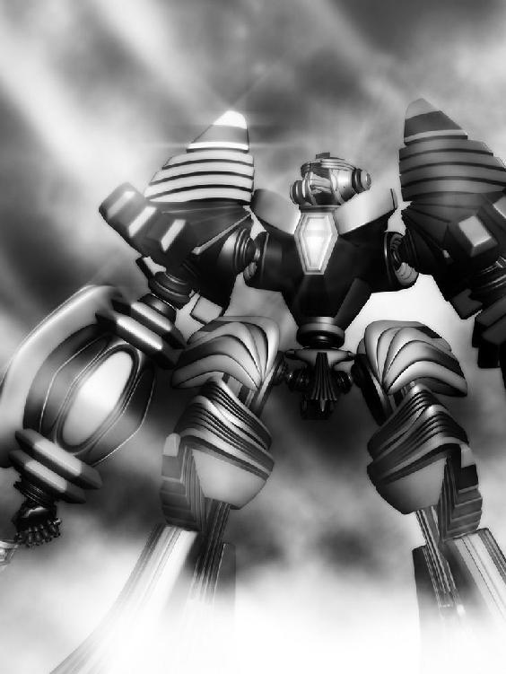
「ジン様、私の......憧れのお方......どうか、どうかご無事で......」
避難所に集まった子供達を言葉で勇気付けていたコルネリーもまた、その光を皆と共に見上げ、勝利を祈った。
地面が泡立ち、暗き虚獣が王の根を伝って現れる。
リィガイムの地に立ち上がったメレス達は、水音を立てながら駆けた。続く様にオルメレスの群れが現れ、それら全てを飲みこむ様に、ガスメイガスの巨体が飛沫と共に姿を現す。
「彼にばかり全てを背負わす訳にはいかぬ！ 我らの街、我らの土地を、虚獣共に奪われてなるものか！ 行くぞリィガイムの騎士達よ、剣を抜け！」
オルグマトンが聖鍵デュオメルグを抜き放つや、それに続くトルフ級達も次々と剣を構える。
王の使者、導く者達も援護に加わり、街を飲みこまんとする黒き波に向けて威勢良く斬り込んでいく。
「始まったか、人と虚無との戦争が......！」
空に浮かぶ黒き蝶、ネクロマキナからエンダージェン国を見下ろして、エイフォンはくつくつと笑う。
争うが良い。殺し合うが良い。憎しみは悪夢を生み、その夢は外なる者達の糧となる。
エイフォンは高みの見物を早々に切り上げて、己が目的を果たす為にネクロマキナを飛ばした。
目指すは禁忌の森、シェラダンと接するある地点。
そこは本来ならば、深い霧と古き魔法によって閉ざされていた筈の、禁断の地。
「ふふふ......こうも簡単に見つけられるとは、フィオ君には感謝せねばなるまい」
エイフォンが上空から見つけ出したそこは、地底へと続く穴。鍾乳洞への入口だ。
そこはかつて、フィオとジンが光魔のしるべを頼りに辿り着いた、竜の試練に他ならない。
「１３番目の剣の試練、か......全くフィオ君はとんだ誤解をしたものだ。此処が聖地等である筈が無い。少なくとも、善なる者の聖地などでは決して！」
ネクロマキナの胸部が輝き、光が放たれれば、洞窟は一瞬で消し飛んでいる。
地上へと降り立ったエイフォンは破壊の後を悠々と進み、瓦礫の中に見える階段をゆっくりと降りていく。
不思議な事に淡い光を放つ洞窟の壁。それがふっと暗くなったのは、エイフォンが広い空間に出たのと同じ頃だった。
闇の中に、何かの気配。
立ち上がる、それは獣か。
「ほう、侵入者を退ける為の猟犬と言った所か......成程、これが虚獣の本来の在り方、王の中の防衛機構、か」
呟き、エイフォンの顔に浮かぶのは、狂喜を孕んだ笑み。
紺碧のローブの下から取り出したディエナ写本を開けば、眼帯をそっと撫でる。
その下にある筈の瞳が、機械的な音を発した。
「読める......読めるぞ！ ディエナの遺した知識、ユゴスミネラでこの身に宿した機械眼にかかればこんなものだ！ さあ、聞くが良い、猟犬共よ！ 古の神を称える言葉を!!」
高らかな笑い声と共に、エイフォンの口から洩れるは、何とも名状し難き詩である。
禁断のディエナ写本に記されていたそれは、本来人が発せられる音では無く、エイフォンの無理やりな発音は実に奇怪で恐ろしい、悲鳴の様な、断末魔の叫びの様な言葉。
「不可視の域 無垢なる歌 朽ちる笛 瑠璃の家 唄が塞ぐ 双子の夢......」
「フカシイキ・ムグナルタ・クチルブ・ルリーエ・ウガフサグ・フタゴン......っ」
「フヌグーイ・ムガラナブ・トゥールウ・ルリイエ・ウガフナール・フタガン！」
「ふンガルい・ムガナラブ・くとぅーる・ルりイえ・ウガナふぐる・フタグン！」
「ふんぐるい・むぐるうなぶ・くとぅるう・るるいえ・うがふなぐる・ふたぐんっ!!」
いつしかエイフォンの祝詞に地の底から這いずる様な声が重なり、それは幾重にも響く大合唱へと変化している。
それだけでは無い。
実際に、何かがエイフォンの傍で蠢いているのだ。
その気配に、エイフォンは歓喜する。
外なる者共。
このエンダージェン国の外、そして、エコーデュオンの外、遥かな外宇宙から飛来した古の魂が今、神の復活を前に此処に集い、それを成し遂げようとするエイフォンに力を与えているのである。
「ふふふ、はっはっはっは！ トゥールウ神竜は我が手中にあり！ さあ、古き者共よ！ この邪魔な猟犬共を退けるのだ!!」
ぐちゃり、と嫌な音が立ち、闇の中で姿の見えぬ何者かが動き出す。
肉を断つ音、引き千切る音、臓物を咀嚼する音、なんと美しい音色達！
殺戮が行われた。
むせ返る血の匂いにも似た、それはエイフォンの知らぬ磯の香り。
狂人の様に腹を抱えて笑っていると、不意に周囲が明るくなり、エイフォンはおや、と引き攣った声を上げた。
そこには、何も無い。
先程まで居た筈の鍾乳洞は見当たらず、ただ真っ白な空間。
「良いね、実に良い......こんなにも白い世界は、未だかつて見た事も無い！」
ディエナ写本を討ち捨てると、エイフォンは次にローブの下からニトクリスの鏡を取り出して掲げる。
「異界の女王の鏡よ......指し示すのだ、我が道を！」
鏡には、映っていた。
エイフォンの周りを蠢く、名状し難き生き物達の姿が。
波紋が生じる。
鏡の虚像にでは無い。
白い世界、そのものが揺れた。
気付けばエイフォンは、長く地下へと続く螺旋階段の上に立っているではないか。
夢と現を写し出し、異界の情景を浮かべると言う魔鏡の力は、鏡と現実を入れ替えて、エイフォンを神の墓所へと導いたのである。
「おお......！ ミルゥ、我が愛しの人形よ......！ 君が１２の封印を討ち砕いてくれたお陰で、私は辿り着く事が出来た......ミルゥ。ミルゥ！ 返事をしろ、ミルゥ!?」
鏡を取り落とせば、それは螺旋階段の下、奈落へ飲みこまれ見えなくなる。
エイフォンは両頬を手で押さえ、くつくつと笑いながらミルゥを呼び続け、ふと気付いてまた笑った。
「ああ......あの子はもう居ないのだった。そうだ、ユゴスミネラと一緒に手放した......ふむ」
全く、我ながら愚かな勘違いだ、と思いながら、エイフォンはしかし、この場に居ないミルゥに話しかけている。
「良いかい、剣の試練等と言うものは嘘っぱちなのだよ。禁忌の森に隠された試練は、その実トゥールウと対極となる神の祭壇なのだ。名をサニド神竜と言う古の神。その１２の聖なる光は、１３番目の試練たる竜の試練を封じ込めていた。試練......成程、竜にとっての試練か。ミルゥ、君は良くやってくれた......私の願い通り、１２の封印を破壊してくれたのだからね......あの封印と王の根とが邪魔をして、私は長くこの墓所に立ち入れなかったのだ。今、この時！ 王は死に、封印は解け、私は......私は!!」
そうして、階段を下りきった先。
そこに、エイフォンの目指すものはあった。
「おおおぉ......っ！」
黒く揺れる、浅い水底から生えだした、巨人の腕の如き捩じれた台座。
そこに捕えられる様に眠る、白い髪の少女。
その胸には、銀色に輝く奇妙な剣が突き刺さっている。
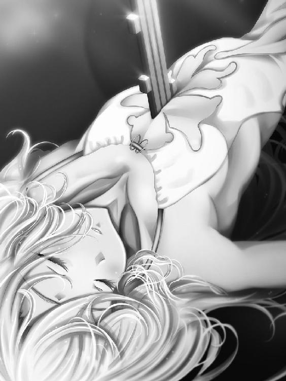
「なんだね、君は」
ばしゃり、ばしゃり、と水を踏みながらエイフォンは巨人の腕に近づき、それをよじ登ると、死んだように眠る少女の頬を撫でて語りかけている。
死んでいる、のだろう。その娘は。
一体どれだけの年月をこの墓所で一人過ごしていたのか、悠久の時を経ている筈のその肉体は少しも朽ちず、未だ生気を伴っている様にすら見える。
「なんと、美しい......白い髪、柔らかな頬......赤い唇......」
エイフォンは溜息を吐いた。
こんなにも美しいものが、こんなにも美しい場所に一人、何と哀れな......。
「神に捧げられた贄か......そしてこの胸に突き刺さるものこそ、夢と現を繋ぐとされる銀鍵......」
エイフォンは少女の胸から生えだした銀の剣にそっと触れてみる。
それは長く複雑な形をした、剣と言うよりも巨大な鍵に近い物体。
「ふふふ......」
エイフォンの唇から笑みが漏れる。
それは狂喜と歓喜に満ちた、暗い笑い声だった。
「象牙の塔表層に異変を確認！ 虚獣の反応多数あり！ 全て飛行型......ガスメイガス級よ!?」
レイルの驚きの声に、ユフィーユは頷く。
研ぎ澄まされ、艦と一体化したユフィーユの感覚もまた、敵の存在を感知していた。
「セイル及びバリアコクーン展開完了、フェヴルートー、機関異常無し」
フェヴルートーの船体を不可視の繭が覆い、光の帆が張られたのを肌で感じたユフィーユが報告すれば、ナーギア艦長は頷き返す。
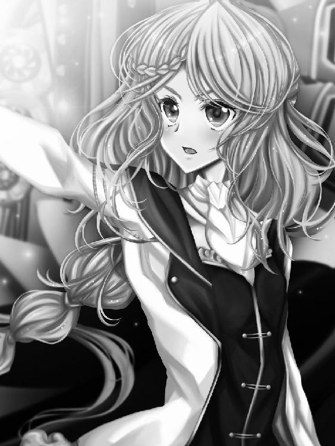
「全砲門、開け！ これよりフェヴルートーは、天舞う音色ヴィルフォーナを援護する！ 敵は虚無、人類の敵！ 一匹たりとて地上に降ろすな！ この空を、我らの手に取り戻すのだ!!」
ナーギア艦長の言葉で、フェヴルートーが動く。
遠くその姿を捉えたミルゥも、ユゴスミネラを起動させている。
空に溶けていた天空要塞が滲む様に可視化されたかと思うと、逆さに伸びた四本の塔に光が集まり、唸りを上げた。
虚獣を引き付け、焼き払う。
天空要塞ユゴスミネラならば、造作も無い。
「......これが私の、使命......」
ミルゥは囁き、仮想のトリガーを引いた。
雷鳴が轟く。
元はこの国を見守る大樹であった筈のそれに最早神聖な面影は無く、天まで伸びた塔は不気味な程の存在感でエンダージェンを見下ろしている。
その表面がぞわぞわと泡立ったかと思えば、虚獣の群れが次々と体を起こし、翼を広げた。
最早象牙の塔全てが亀裂となり、無尽蔵に虚獣を生んでいるのである。
ジンは手にした剣を握り直し、翼に更なる力を込めた。
「邪魔を、するなあぁぁぁぁっ!!」
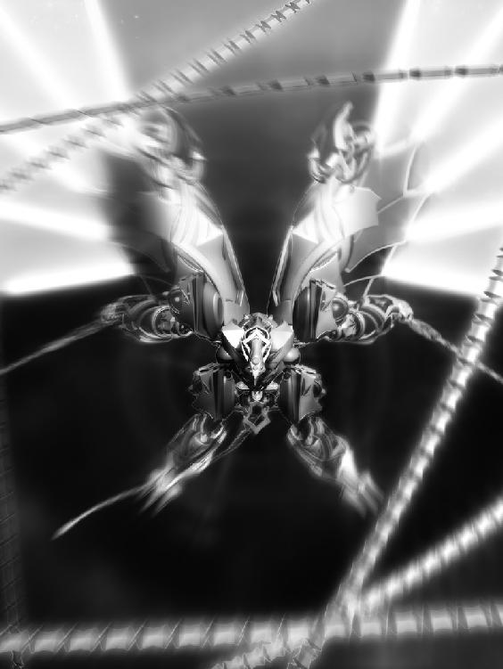
向かってくる虚獣にバルメナスの剣を一振りすれば、ネムリーの込めた魔が唸りを上げて、暗き群れを一掃する。
振り抜いた上半身から次に王の魔剣ベルセイバーを渾身の力で振るうと、ヴィルフォーナに迫りくる虚獣達はその一撃で蒸発し、亀裂が砕ける音がした。
背中から眩い光が押し迫ったかと思えば、それはメテオールの援護である。
光の矢が、雷が、ヴィルフォーナの行く手を阻む虚無の波を飲みこんで行く。
背負った宝剣達から、祈りが、願いが、ジンの元に届く様だ。
飛べ、ヴィルフォーナ、と。
虚無を蹴散らし、王の元へ、と。
虚獣達が一斉に翼を広げ、雷鳴の様な咆哮を上げたかと思えば、数え切れぬ程の黒水の弾丸が放たれた。
嵐の様に迫る脅威を前に、ジンは翼となった１０の宝剣、その結合を解く。
「共に行くぞ、みんなっ！」
刃の破片と化した宝剣は、ヴィルフォーナの周囲を飛び交い、盾となり、矢となって黒水の弾丸を消し飛ばす。
轟音。爆散する黒い霧の中から、ヴィルフォーナが光刃となって飛び出した。
目指すものはただ一つ。
王の元へ。全ての決着をつける為に。
「今だフィオ、討ち砕け！」
アルバトリス剣主、オーランド・トラバスが纏う守護鎧バルハートが聖鍵エルゴドランの一閃により虚獣を構成する黒水を吹き飛ばせば、周囲に立ち込める黒い霧の中を白馬が駆ける。
顕わになった亀裂を再び黒水が包む前に、風となって駆ける馬上から魔剣の煌めきが放たれた。
一刀両断。正確無比なその一撃が亀裂を砕き、駆け抜け様にフィオは次の虚獣も仕留めている。
「さあ来い、虚獣共！ このフィオルド・トラバスが相手をするぞ!!」
赤い外套を翻し、戦場を駆ける翡翠の瞳。勇者が振るう豪剣の前に、ガスメイガスはじりじりと後退する。
何なのだ、この強さは。
虚獣を統べる、王は思う。
白亜に聳える象牙の塔の殻の中、光に満ちたエンダージェンを眺めながら、虚しくも想いに耽った。
剣主達の、騎士達の、この眩いまでの生命の力は。
我々と、何が違うのだ、と。
「虚獣だ、虚獣がすぐそこまで来ている......！」
悲鳴が上がり、混乱が起きる。
体を震わせ、何処へ逃げるとも無くその場に蹲る女子供を前に、元ボルダナ一座のカレル＝ロッソは高鳴る胸の鼓動に眩暈を感じた。
向こうを見やれば飛沫が上がり、そこではマルセーレ剣主、クルスネット・フレンドールが守護鎧を纏い、虚獣を次々に斬り伏せている。
トルフ級が騒ぎに気付き、数騎こちらへ駆けてくるのも見えた。
何処を見ても、戦場。逃げ場など無い。
覚悟を決めれば、行動に移すのは簡単だ。
ロッソは近くの木箱から剣を一振り引き抜いて、天へと掲げている。
ボルダナの船、ルーガル号の骸から作られた剣だ。
「俺は、ボルダナ一座のカレル！ 盗人の濡れ衣を着せられ、街を追われたロッソでもある！ 俺はあの時、逃げ出した......俺を信じてくれないクソ野郎共から、理不尽な現実から！ そうして、ボルダナの兄貴に拾われて、世界中を旅して知った！ この世界は......そんなに悪い場所じゃねえって！ 俺は、もう逃げない！ 逃げてたまるかよ!!」
周囲で怖々と身を固めていたレギオン達が、何事かとそちらを向く。
カレル＝ロッソの、震える声。それは全く支離滅裂な叫びであったが、不思議と人々の胸を熱くした。
若者も、老人も、男達は皆その剣を手にとって、頷き合う。
ニトクリス玄鏡石の刃で無くとも、虚獣の亀裂を砕く事は出来る。戦わずに食われるか、戦士として死ぬか、勇気あるものがどちらを選ぶかは明白だった。
流浪の民達に答えるかのように、上空を炎が駆ける。
火の鳥フラングラムが灼熱の業火で辺りを包めば、それは不思議と流浪の民達には心地良い熱に感じられ、虚獣の脅威を退けてくれる。
ロッソは剣を振り、その不思議な炎を刃に乗せる。構え直せば、すぐ目の前までにじり寄って来たメレス達が怯え出すでは無いか。
「炎だ！ フラングラムの炎を虚獣は嫌う！ 炎を剣に宿せ！ 俺達も戦うんだ!!」
おおう、と声を合わせ、流浪の民達は炎の剣を携えて、虚獣達へと立ち向かう。
一つ一つは小さな火種でも、集まると心強い火柱となって民達を守った。
フラングラムが高らかに鳴き、翼を広げて後押しをする。
聖なる炎で焼かれ、虚獣達はみるみるうちに蒸発した。
混乱を齎すのは虚獣だけでは無い。
街の何処かに開いた亀裂から染み出してくる黒水。
それは人々の足元をちょろちょろと流れる程度の微々たる規模。普段ならば冷静に騎士達の到着を待つ人々も、その日だけは顔を青ざめ、我先にと逃げ出している。
いつ虚獣に襲われるとも判らぬ状況で、その上決壊の危険がある亀裂が近くにあるとなっては、冷静になれと言う方が無理な話だ。
それこそ波の様に移動する人々の中、けたたましくなり続ける車のクラクション。
虚獣が踏み倒した後だろうか、倒れた標識に挟まる様にして身動きできなくなっている車の中に人影を見つけ、ジルハワードは駆け寄っている。
「何をしている！ この状況では車など逆に邪魔になるぞ！ 早く逃げるんだ！」
ジルハワードが運転席から男を引きずりだすと、彼は今にも泣きそうな顔で縋りつく。
男はジルハワードを揺さぶり、後部座席を指差した。
「娘が！ 娘が閉じ込められているんだ！」
「何だって、よし、二人で力を合わせよう」
ジルハワードが言うと、父親は半ば震えながら何度も頷く。
押し潰された後部座席は大きく歪んではいたが、そこに居た娘はまだ息がある様だ。
しかし、どうやら意識は無い。急がねばならんと焦りながら、ジルハワードは男と二人、歪んで開かなくなったドアをこじ開け始める。
「ジルハワード先生！ どうしました!?」
後ろから駆け寄って来る気配があって、見やればその青年は、顔馴染みのアイスクリーム屋の店員である。
彼は状況を察すると、近くに転がっていた鉄柵の支柱を手にとって、ドアの隙間に捻じ込める。
三人で体重をかけると、歪んだ車のドアは軋みを上げて僅かに開いた。
隙間から、娘を引っ張り出す。小柄な少女は苦しげに眼を開けて、父の顔を見るとほっとした様に笑みを浮かべた。
「ああ、お二人とも何とお礼を言ったら良いか......！」
「礼など後で良い！ 逃げるぞ、虚獣がそこまで来ているっ!!」
「はい......はいっ！」
娘の手をぎゅっと握り走り出す父の背中に、ジルハワードは叫んでいた。
安堵と未だ気を抜けぬ状況で興奮しながら、目に涙を浮かべ、ただ叫ぶ。
「大事な娘ならば、決して手を離すな！ 手を離すなよっ!!」
「ジルハワード先生、我々も逃げましょう！」
「ああ、そうだな......！」
青年と共に駆けながら、ジルハワードは向こうで虚獣と戦っているメルディーノ剣主、ディラン・バラウェンの姿を見上げた。
荒ぶるガストルフ級弦奏鎧、その巨腕から繰り出される剣戟はまるで狂戦士の如し。
「ディラン......憎しみで世界は救えんぞ、ディラン・バラウェン！」
戦いの最中にある友に声をかけながら、ジルハワードは走り続ける。
「消え失せろ、虚獣共！ お前達が、お前達が、お前達があの子の命を奪ったのだ......!!」
ディランが叫べば、守護鎧ドミナオンは唸りを上げる。
聖なる霧を纏った聖鍵バルバリオンが虚獣を断ち、黒水の飛沫がまるで血の様に辺りに散った。
胸中に燃える、憎悪の炎。脳裏に浮かぶプランシューネの笑顔はしかし、その熱を冷ましはしない。
むしろより暗く燃え広がるその悲しみを糧として、ディランは虚獣達を嬲り殺してゆく。
「あの子が何をした！ 何故死ななければならなかった！ 父を慕い、友を愛し、ただ純粋に微笑んでいたあの子を......何故、私は、守れなかったのだっ!!」
いつしかその憎しみは、ディラン自身に向けられている。
プランシューネの死に気付けなかった自分。ジルハワードの葛藤に気付けなかった自分。
どれもが不甲斐無く、ディランの胸を苛んで行く。
暗き感情は虚無をかき立て、増長させた。周囲に亀裂が走ったかと思えば、その奥からはガスメイガスが巨大な体躯を引き摺って現れる。
根から生じるものだけでは無い。虚獣はそうして、増え続けるのである。
ディランは封印球を解放する。中から巨大な鏡面が６枚出現し、それは虚獣を包んで箱の形に組み合わさった。
無限の檻に囚われた虚獣を、鏡ごとバルバリオンで砕いて、ディランは吠える。
「死ね、一匹残らず......死んでしまえっ!!」
虚獣が吠え、走り出す。ディランは追った。逃がしてなるものかと。
群れをなしたその波は、次々と同胞を取り込んでやがて一つの巨大な虚獣となって立ち上がる。湖の畔でその巨獣と対峙したディランは、全身全霊を込めた剣と共に疾駆する。
「プランシューネの、仇!!」
巨獣を貫く、聖鍵バルバリオンの光の刃。
嗤う、虚無。
「......っ」
ディランの口から、鮮血が漏れた。
弦奏鎧ごと貫かれた、腹。噴き出す血液に眩暈を感じながら、ディランは憎しみで以って一歩進む。
一歩、一歩。湖へ押しやられて、巨獣が悲鳴を上げる。ディランは笑う。
「この命......無駄には捨てん！」
騎士達がディランを呼んだが、それは剣主に届かない。
復讐鬼と化したディランは、巨獣と共に聖なる湖に身を投げた。
「ヴィルフィーナ、尚も交戦中」「飛行型虚獣更に増大、限がありませんぜ、こりゃあ！」
「攻撃の手を休めるな！ 少しでも気を抜くと、虚無の波に押し返されるぞ!!」
スクリーンを通してヴィルフォーナの勇姿を見つめながら、キャプテン・ボルダナはクルー達を叱咤する。
ソルエルデイルの兵装を持ってすれば、象牙の塔から現れる虚獣を一掃する事等容易かったが、それでも緊張を解けぬ理由は、一重にその量にある。
消滅と増殖を繰り返す虚獣に際限は無く、じわじわと象牙の塔に接近しつつあるヴィルフォーナは、常に虚獣達の群れに囲まれていた。
直面するジンの恐怖と疲労を想像すれば、安全な場所に居る自分こそ冷静さと緊張とを保たねばとボルダナは唇を噛む。
「こちらニールギガスおよびバルムンク。キャプテンさんよお、発艦許可を願うぜ！」
通信を受ければ、それは艦内ドックのグレンからだ。
既に弦奏鎧に乗り込んで発艦準備に入っているニールギガスの隣には、グレンが改修したバルグターム型、新生弦奏鎧バルムンクの白き姿が並んでいる。
「おい、ぶっつけ本番で動かして平気なのか？」
「この艦の設備と、何より俺の腕が保証するぜ！」
「っへ、言いやがる......判った。ニールギガス、並びにバルムンクの発艦を許可する！ エルデイル！」
「ほいきた！ ニールギガスはレアンドルへ向けて跳躍開始！ バルムンクは......」
「此処から飛ぶ。ハッチを開けてくれ」
バルムンクの搭乗者が発する言葉に、ボルダナとエルデイルは顔を見合わせる。
不安の色が浮かぶのも一瞬の事、次には二人とも仕方が無いと言う笑みを浮かべて。
「もう一度聞くぜ。ぶっつけ本番、いけるのか？」
「......愚問だ」
「だそうだ。野郎共、密航者さんの道を開け！」
ソルエルデイルのハッチが開き、弦奏鎧バルムンクが光の翼で天を舞う。
太陽の船が放つ光の矢が、バルムンクの行く先に満ちる虚獣を一掃した。
虚無で満たされた空に開いた一条の光の道を、更なる輝きで塗りつぶし、純白に生まれ変わったバルムンクは飛ぶ。
友の元へと。
虚獣に喰らいつかれ、もがくトルフ級。守護鎧パラギアスを纏ったアナメア・ディームは、聖鍵カリンガインを振るってトルフごと虚獣を両断する。
辛くも逃げ出した騎士の退路を死守する為に、アナメアは宝剣に魔を込めて、渾身の一撃でメレス達を一掃した。
「剣の疲労が激しいですね、しかし......今退く訳には......っ」
黒水を吸い、黒く濁った刀身に僅かな不安を感じながらも、アナメアはカリンガインを構え直す。
ニトクリスの力が失われても、亀裂を捉えさえすれば虚獣を倒す事は出来るのだ。限界まで戦うしかない。
無尽蔵に沸く虚獣達に疲労を感じながらも立ち向かうアナメア。その足元に、不意に黒水が沸き上がる。
しまった、と思うのも遅く、パラギアスは足をからめとられている。渦巻く様に首を擡げるガスメイガスの脅威。
新たな影が、パラギアスに落ちて。
衝撃の後、霧散するはガスメイガス。
「うっかりするとはらしくないぜ、おばちゃん！」
「......グレン！」
虚獣を叩きつぶし立ち上がるのは、超空間跳躍によって現れたニールギガスの勇姿である。
ほっとしたのも束の間、再び足元から湧き上がった虚獣が、咆哮と共にニールギガスをすっぽりと飲みこんでいる。
アナメアの口から洩れる悲鳴。
脳裏に浮かぶ記憶の中の笑顔に、アナメアは祈る。
どうかあの子を守って、シルバ......っ。
波打つ黒水の塊の中で、仄かな光が輝いて。
「効かねえなあ！」
それがニールギガスのスラスターが噴く光だと気付いた時には、黒水は爆散している。
「その程度の圧力で押し潰されるニールギガスじゃ無いぜ！」
飛沫の中から現れたニールギガスは、無論健在。
拳に掴んだ亀裂を握りつぶせば、辺りに降り注ぐ黒水は一瞬で蒸発している。
「お上品な戦い方は性に合わねえ、行くぜ俺流！」
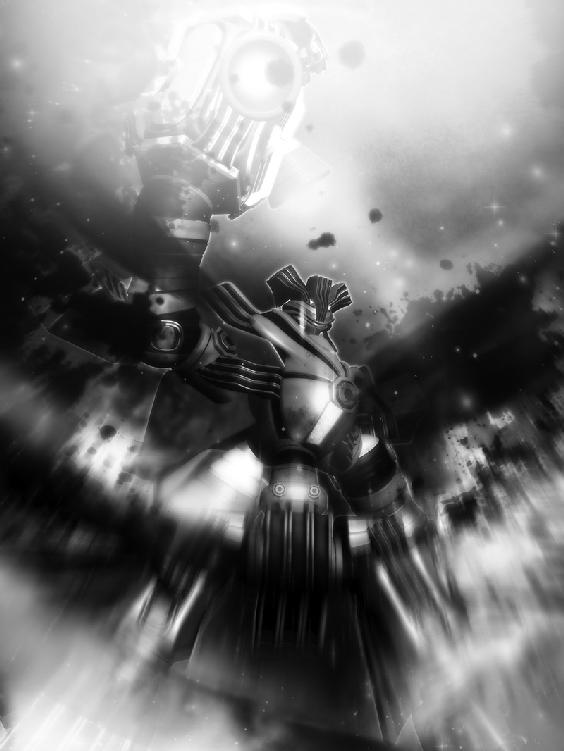
ニールギガスの全身のスラスターが魔を放つ。
光の尾を引いて、迫りくる虚獣に突進すると、ニールギガスは黒水で出来たその肉体をぶち抜いて、核たる亀裂を鷲掴みにした。
咆哮虚しく、蒸発していく虚獣達。アナメアは思わず肩を揺らして笑っていた。
「敵いませんね、貴方の息子には......」
聖鍵カリンガインを握り直し、パラギアスは駆ける。
ニールギガスと肩を並べ、レアンドルを脅かす脅威に立ち向かう。
何度目か判らぬ射精の快感。本来であれば絶対に浮かべる事の無い下卑た表情で、エイフォンは虚ろに笑った。
放っても放っても収まらぬ情動。脳を貫く様な快感に、エイフォンは最早正気を失っていた。
昂りのままに、死せる少女を凌辱する。
その未成熟な体に分け入る快感に呻き声を上げながら、エイフォンは少女の腹を執拗に撫でた。
「ふふふ......実に良い具合だ。この腹は、一度も孕んだ事が無いのだろう？ 何と哀れな......悲しくも美しい少女よ......！」
銀鍵で胸を貫かれ、巨人の腕で眠る白い髪の少女は、不思議な事に温かく、その体は柔らかい。
それなのに胸の鼓動も息も無く、正に生と死の狭間にある様だ。
「声を聞かせてごらん、幼心の君よ......ああ、君の鳴く声が聞きたいものだな！」
虚ろな目でうっとりと溜息を吐きながら、エイフォンは少女に覆いかぶさり、その口に乱暴に指を入れた。
ざらつく舌を摘まみだせば、やはりそれは温かい。少女の中は湿っていた。まるで先程まで生きていたかのような、出来たての死体。そんな感触。
そうだ、とエイフォンは気付く。
肺を押せば声が出るのではないか？
これは名案だとエイフォンはけたけたと笑い、少女の小さな乳房を乱暴に掴むと、体重をかける。
少女の口からすっと空気が漏れ、エイフォンは期待で目をぎらつかせた。
「しかし、その為にはこいつが邪魔だな......なんだ、こいつは。この胸から生えている邪魔なものは！ おお、これは銀鍵......サニドの銀鍵ではないか！」
はっとして、エイフォンは不思議に思う。
何故それの重大さに気付かなかったのだろう。この銀鍵こそ、エイフォンが探し求めていたものでは無いか。
これを引き抜く事で、トゥールウの封印は解かれ、エンダージェンに根付いた第二のネットワーク、竜脈の真なる力が目覚めるのだ。
「そうだ......そうだぞ！ 私は遂に手に入れたのだ！ 銀鍵を！ トゥールウ神竜を！ 聞くが良いミルゥ！ 王の根がこの国の光ならば、竜脈は闇だ！ それは人々の深層意識を繋ぐ......夢の川！ この銀鍵はそれを封じているのだよ！ 何故か、邪悪だからだ、トゥールウ神竜は邪悪の化身！ しかしてそれは、この星無き世界で真なる復活を遂げる事は決して無い！ 判るか、ミルゥ！ この銀鍵ならば、トゥールウ神竜の力のみを都合良く操る事が出来る！ 竜脈を手にし、私は王となるのだ！ この国の、闇の王に......！」
広々とした空間に、エイフォンの笑い声が虚しく響き渡る。
少女の頬を舐め、目を細め、エイフォンは深く深く息を吐いた。
「私が治める国には、虚無も、悪も、絶望も無い......誰も私を裏切らない。平和な世界......楽園がそこにある。ナハトムベル・グランよ、学会の愚か者共よ。感謝する......お前達が私を此処まで導いてくれた。心優しきピーターエル、知識を探求して止まない我が同士レイルランドよ、そして......ミルゥ。安心するが良い。世界は幸福に包まれる。トゥールウの力によって、人々は深い眠りの底で幸せとなるのだ......！」
涙を流し、歓喜に震えながら、エイフォンは笑い声とも悲鳴ともつかず、喉を鳴らす。
少女の白い髪を撫でながら、その未成熟な体を犯しながら、満ち足りた想いだった。
「幼心の君よ......この銀鍵を引き抜いて、君の完璧なる調和を乱す事だけがただ心苦しい......君は、なんと可愛らしいんだ......」
溜息を吐いて、ふとエイフォンは思いつく。
この死せる生者の肉体を、一人地下で眠らせておくのはあまりにも不憫だ。
銀鍵と共に持ち帰り、我がコレクションに加えよう。生きる事も、死ぬ事も無く、老いる事の無い少女の肉体。
温もりがあるのだから、あるいは魂が無いだけで器としては機能しているのかもしれなかった。
夜ごとこのもの言わぬ少女を犯し、その子宮を愛で続ければ、あるいは孕む事もあるかもしれぬ。
そうして生まれた赤子は、きっと美しいに違いない。
世俗の価値等どうでも良い。自身にとって価値のある宝を、自分とこの少女とで生みだすのだ。
それはきっと、エイフォンが持つ宝物の中で最も愛おしいものとなるだろう。
喜びに打ち震えながら性器を引き抜くと、少女の股からは血と精子と体液とが零れ落ちる。
混ざり合う命の兆しを見つめ、エイフォンは喘いだ。
「ふっふっふ、私は手に入れる......竜脈も、この国も、少女も宝も何もかもをっ！」
その指が、少女の胸に突き立つ銀鍵に伸び、触れ。
そして。
「うおおおおっ!!」
迫りくる虚獣を切り裂き、貫き、ヴィルフォーナは空を駆ける。
見渡す限りの虚無。敵は幾らでも湧いて出た。圧倒的な力でそれをねじ伏せながら、ジンが感じるのは焦りだった。
今この瞬間にも、地上では剣主達が街を守る為に戦っている。
彼らの戦いを終わらせるには、一刻も早くジンが象牙の塔に辿りつかねばならないと言うのに。
「多過ぎる......敵が！ 俺一人では......っ!!」
ベルセイバーが唸り、バルメナスが風となって虚獣を喰らう。１０の宝剣が光を放ち、ヴィルフォーナは尚も速度を上げ虚無の波を押し返して行く。
メテオールの砲撃がジンを包む様に弾け、一瞬空が明るくなるが、すぐにそれも新たな波で塗りつぶされた。
早く。もっと早く。
焦るジンに、虚獣達がひと固まりの津波となって押し寄せる。
「こんな所で......負ける、ものかあぁぁぁぁっ！」
瞬間、光が爆ぜた。
その眩しさに、ジンは思わずぎゅっと目を瞑っている。
それが失態である事に気付き心臓がぎくりと跳ねたが、虚無の攻撃はやって来ない。
何が、起こった。
目を開けば、眼前に浮かぶ光の結晶。
いや、それは光では無かった。
白く......何処までも眩い、弦奏鎧がそこにある。
「バルグ......ターム......」
それは紛れも無くバルグタームと同型のガストルフ級。
その装甲はヴィルフォーナにも似た白銀をして、光の翼を背負い、携える魔剣は王の使者のものに違いない。
誰だ。
そう尋ねる間もなく、ジンの目には涙が浮かんでいる。
魔剣を一振りして、使者は名乗る。
「新生バルムンク、推参！」
良く、効き馴染んだあの声で。
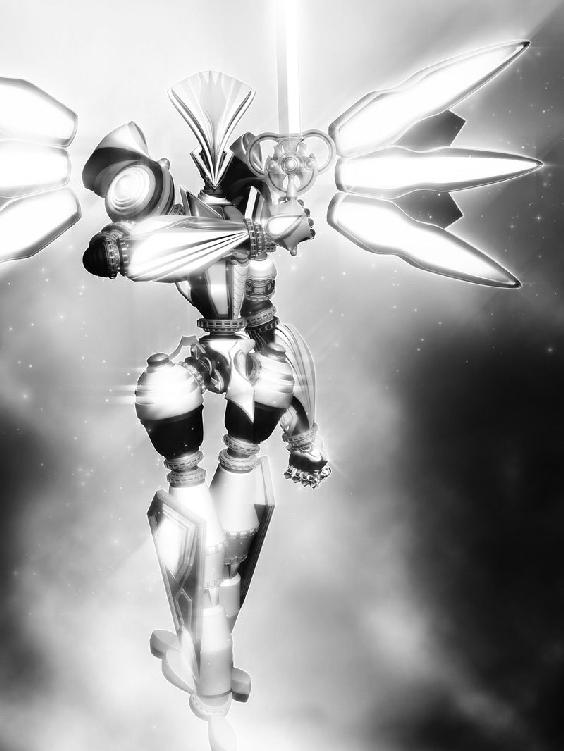
「聞くが良い、虚獣共！ この世界を暗く染めんとする貴様らの企みが叶う事は決して無い！ 希望の光、ヴィルフォーナの騎士、リズベルルの魔たるジンが居る限り！ そしてこの俺、王の使者シズマが居る限りな......！」
飛び込んでくる虚獣の群れを、魔剣と宝剣の一振りで壊滅させ、ヴィルフォーナとバルムンクは背を合わせる。
ジンは愉快な気持ちで叫んでいる。友に、屈託なく笑いながら。
「馬鹿野郎！ お前はいつも遅いんだ！ 出てくるなら、もっと早めに出て来い、シズマ！」
「そう言うな、ジン！ エルデイルに治療を受けたとはいえ、これでも生死の境を彷徨いはしたのだ！ それに、なかなか良い具合の登場だっただろう！」
「言ってくれる......！」
剣を振るヴィルフォーナの腕に、力が戻る。
焦りも、緊張も、恐怖も、一気に吹き飛んでいた。
虚無の雑兵など恐るるに足らず。
ジンの心には勝利の確信だけがある。
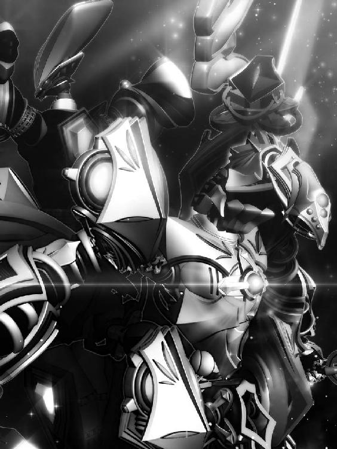
「ふっ......訂正だ、ジン。実を言うと、出番を窺っていた。俺にはある夢があってな。そいつを此処で叶えようと言うのだ」
「ほう、言ってみろ」
「まあ焦るな。先に言っておく事がある......ジンよ。俺は、オリンとの最後の戦いで、己が内なる魔の全てを燃やしつくすつもりで剣を振るった。俺はあの時、消えてなくなる筈だった」
「......！」
「しかし、俺は消えなかった。何故か。お前が居てくれたからだ、ジン。人は、一人では存在できない。誰かに存在を認めてもらって、はじめて一人の人間としてある事が出来る。逆もまた然り。ジン、お前が想ってくれたから、俺は今ここに居る。誰かが想ってくれさえすれば、その人の魔が、存在が、尽きる事は無いのだ......！」
剣を構え、バルムンクは、シズマはそして、ヴィルフォーナの、ジンの背中に笑いかける。
「此処は俺に任せて、先にゆけ、ジン！ この世界を救う事が出来るのは......俺と、お前だ！」
「......任せたぞ、友よ！」
翼から閃光を放ち、ヴィルフォーナが天を舞う。
逃すまいとして迫る虚獣を魔剣の一振りで蒸発させて、シズマは晴れ晴れとした気持ちでその輝きを見送った。
「追わせはせんぞ、無粋な虚無共め。お前達の相手はあの世から舞い戻って来たこの俺がつとめよう！ ......さあ、今日の俺は不死身だぞ、何体でもまとめてかかってこい!!」
バルムンクが掲げた剣に、魔が満ちる。
爆発する、生命の威力。
背後で虚無達が光に飲まれて行くのを感じながら、ジンは眼前に迫った象牙の塔を見つめた。
「この一撃で......世界を救う！ 行くぞ、みんな！」
ジンの言葉に、宝剣が応えた。
翼に纏った光が極限まで高まり、それは刀身を伝ってヴィルフォーナの両手に集まる。
握りしめた魔剣ベルセイバー、そしてバルメナスの剣を一つに合わせれば、ヴィルフォーナが掲げるは、一振りの眩い光の剣。
「王よ、お前には、光こそが相応しい！」
ジンはありったけの力で象牙の塔を貫く。
翼から最大限の魔を放ち、ヴィルフォーナは天を目掛けて駆け上がる。
光の刃は、王を貫いたまま振り抜かれ。
「これで、終わりだああああっ!!」
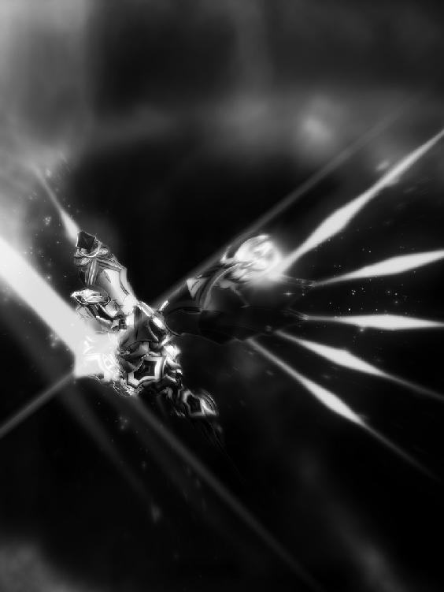
ジンの叫びと共に、王は一刀両断される。
筈だった。
「......なっ!?」
勝利を確信したその時、強い衝撃。
何かが光の刃を拒み、ヴィルフォーナは象牙の塔から弾き飛ばされている。
よろめきながら驚愕に目を見開けば、塔の表面に入った亀裂が乾いた音と共に口を開け、その奥から、何かが現れようとする所だった。
生まれるのか。
心臓が嫌な音を立てて弾むのに、ジンは息を飲んで。
虚無の王の誕生を、見つめるしかない。
象牙の塔を光が貫いた。
誰もが期待した。ジンが、ヴィルフォーナが、やったのだと。
「......何故、止まらん。虚獣共が、何故まだ湧いてくる!!」
地面から湧き上がるガスメイガスに、すっかり黒く染まった聖鍵ヨスフートを突き立てて、シェルヴァランスを纏ったノルアードは叫んでいた。
じとりと体を濡らす、嫌な汗。そんな事がある筈が無い。奴が......ジンが負ける筈が無い！
その動揺を、虚獣は見逃さなかった。
瞬く間に寄り集まって見上げる程の巨体と化した虚獣は、赤い瞳でシェルヴァランスを見つめる。
その瞳が数え切れぬ程の結晶の集合であると気付いた時、ノルアード目掛けて黒水の洪水が押し寄せた。
「嫌......いや――――――っ!!」
黒海にシェルヴァランスが飲み込まれていく様を、飛行船から見つめるしか無かったリズベルルは、絶叫しながら崩れ落ちている。
ジンが、ノルアードが、虚無に負けた。
そんな事、ある筈無い。あって良い筈が無い。
リズベルルはよろよろと立ち上がると、次には憎悪で目を見開き、魔を招いている。
剣を休めていたトルフ級が立ち上がり、リズベルルを掬い上げた。慌てて騎士達が止めに入るが、リズベルルにその声は届かない。
「待って、待ちなさい！」
手を伸ばすマールを一瞥して、リズベルルはふっと笑った。
胸に湧き上がる憎しみを押え込む様に、懸命に笑顔を浮かべて。
「これが、虚無なんだ。怒り、悲しみ、憎しみ......心にぽっかり空いた孔。これが虚無の奈落！ だとしたら、私は憎しみじゃなく......愛で以って戦う！」
リズベルルを乗せたトルフが剣を抜き放つ。
そして、跳んだ。
地上へ。
愛するものを救う為に。
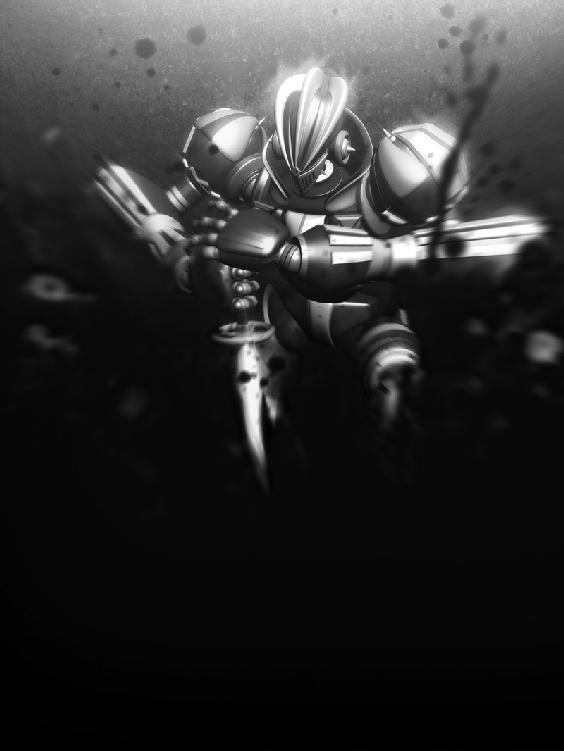
「かえせ......かえせ、かえせ！ ノルアードは......」
爆発的な魔が剣を満たし。
「私のものだあぁぁぁぁぁっ!!」
立ち上がる、水飛沫。
トルフも、リズベルルも、その中に飲み込まれて見えなくなる。
勝利の雄叫びか、虚無が鳴いた。
「......嘘、だろ」
バードが呟き、マールが首を振る。
希望は、失われた。
誰もが力無く俯きかけた時、それは起こる。
「全く、君の無茶にはいつもはらはらさせられる」
くぐもって響く、その声。
黒水が弾け、その中から現れる、ノルアードの姿。
リズベルルを抱き止め、シェルヴァランスの掌に立ち、掲げたフィレントアの剣は、虚獣の赤き瞳を貫いている。
「だって、だって......ノルアードは、私の......！」
ぽろぽろと涙を溢すリズベルルの唇を、唇で塞ぎ、ノルアードは答えた。
リズベルルの勇気に。その愛に。
二人は気付かない。
砕かれ、地面に転がった亀裂の結晶が、未だ蠢いている事に。
卵の殻を破る様に、象牙の塔を内側から突き破り、外の空気に触れて、王は感動に打ち震えていた。
眩しげに目を細め、いつぶりか判らぬ安らぎの感情にほっと息を付いている。
「なんと明るい世界か......」
見渡すエンダージェン国は、眩い世界であった。
生命に満ち溢れ、空気は澄み、汚れ無き光景。
「根底を同じくしながら、可能性が異なるだけで、こうも違う景色となるのか......」
王は目に涙さえ浮かべ、震える声で囁いている。
そして、その囁きに答える、同じ声。
「なん......だ、お前は......」
王は見た。
己が写し身を。
「何なんだ、お前は!!」
怒りとも恐怖ともつかぬ、あるいはそれらの入り混じった怯えた声で、ジンは叫んだ。
象牙の塔を破り、生まれ出でたその姿。
黒き、その姿は。
弦奏鎧ヴィルフォーナ、瓜二つ。
「黒い、ヴィルフォーナ......!?」
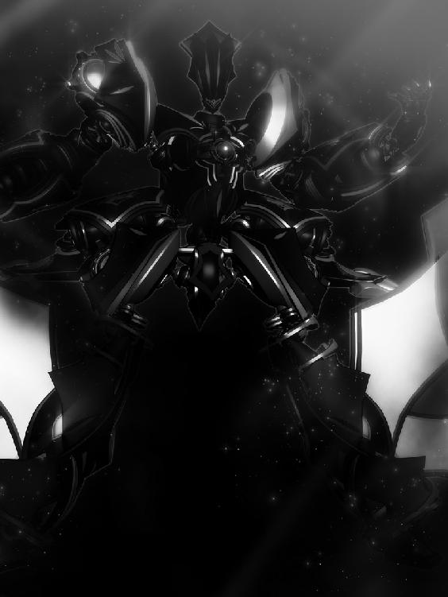
「お初にお目にかかる、光のヴィルフォーナよ......、我は王！ 虚無の魔王！ 黒龍騎......ヴィルフォーナなり！」
名乗りを上げ、その黒き弦奏鎧が抜き放つのは、闇色に染まったメイルレヴァンの剣か。
まやかしだ。ジンは首を振る。二本の剣を握り直し、冷静であれと自分に言い聞かせる。
これは剣主が水門の儀で相対すると言う、試練と同質のものに違いない。
そう思いながらも、ジンは心の何処かで理解している。
こいつはそんなものでは無いのだ。
そんな、生易しいものでは、きっと無い。
「お前が虚無を統べる者ならば、この剣で断つのみ！ ゆくぞ、魔王！」
渾身の力を込めた、必殺の一撃。
全身全霊の刃はしかし、黒龍騎が振るった闇の剣に阻まれている。
格が違う。
一度剣を交えただけで、それが判った。
判ってしまった。
「なんと軽い剣か......ほう、お前が身に付けているのは宝剣か。剣主達から託されたと言う訳か......数ばかり揃えて涙ぐましいものだな！」
「ぐっ!!」
振るわれた剣を、すんでの所で受け止めて、ジンは呻く。
なんと重い剣！ 見た目はメイルレヴァンの剣に似ていたが、その威力は計り知れない。
あるいは、使い手の差なのか......！
「見ていたぞ、光のヴィルフォーナ。お前が虚無を阻み、勝利を収める所をずっと。良いものだな、仲間......愛、友情！ 実に軽々しい！ 軽薄な連中......！」
「な、何......っ!?」
「教えてやる。そして考えるが良い！ 仲間達に託された力で、ようやく此処まで辿り着いたお前と、たった一人......たった一人で此処まで来た私と、どちらが強いのか！」
何だ。
何を言っている。
魔王の斬撃を二刀流で受け流しながら、ジンは不吉な予感に囚われている。
そして、気付いた。
いや、初めから気付いていたのだ。
こいつは。
なんで俺と同じ声で喋っているんだ？
「......お前は」
「そう、私は！」
「......俺、なのか？」
哄笑が、その答え。
闇に染まったメイルレヴァンの剣が、光のヴィルフォーナに容赦なく迫る。
ジンは、光を失った。
「......っ！」
びくり、と体が震え、彼はもがく様に目を覚ます。
高鳴る鼓動に肩で息をしながら周囲を窺えば、そこは夜の公園。
体が冷えて、身震いした。今夜は特に冷え込むと言うのに、こんな所で居眠りとは。彼は冷えたベンチをそっと撫でる。
関節が軋む。さながら油の切れた機械の様だ。体中に重くのしかかる倦怠感は、何も寒さのせいだけでは無いだろう。
吐く息が、白い。
「ほっほっほ、お疲れかね」
まるで映画の登場人物の様な芝居がかった笑い声を上げ、一人の老人が彼の隣に腰を降ろした。
彼は深く、胸中の気だるさを吐き出す。そうして苦笑した。
「夢を、見ていました。長い夢を」
老人が差し出す温かな缶コーヒーをありがたく受け取り、口をつければ、甘ったるい香りが口の中を満たして、それがやけに懐かしい味に思える。
すぐに腰を降ろしたから、老人がどんな装いで、どんな顔をしているのか判らない。
じろじろ見るのも気まずい気がして、それ以上確かめようとはしなかった。
「それで」
「それで、とは？」
「どんな夢かね」
「はあ」
彼は頬をかきながら、次第に薄れていくその夢の余韻を必死で掴もうとする。
少し迷いながら、ぽつりぽつりと語り出す。
「昔、憧れた様な......巨大なロボットみたいな、それは鎧なんですが......そう言うものに乗って、戦うんです」
「敵と、かね」
「いや、敵......と言うか、迫りくる、脅威。多分、この現実みたいな......とにかく理不尽なものと、です」
「ほう、君は、それをやっつけると」
「それが、直前で目が覚めて。でもあのままだときっと負けていただろうから、丁度良い所で覚めたのかも」
「放っておくのかね」
「え？」
「君が救わねば、その夢は誰が救う？ エンダージェン国は、シェラダンは、リズベルルは、ノルアードは、彼らの未来を誰が救ってくれる？」
「......貴方は」
思わず立ち上がり、老人を見れば、彼は頭からつま先まで、真黒な装い。
黒衣で顔を隠した老人は、彼の手から空になった缶を奪い取り、またしてもあの妙な笑い方をして見せる。
「貴方は、一体......」
「さあて、本当の名は忘れてしまった。何せ色々な名前をその都度名乗ったものだからのう。一番気に入っている名で名乗ろう。我が名は、ブランダー」
それはいつかリズベルルが口にした名前では無かったか。
リズベルル？
この老人は何を言っている。
夢の話だ。
エンダージェン、シェラダン、リズベルル、ノルアード、そして俺は......。
「デュオンの戦士よ、名は何と？」
「俺の名は......」
そう、彼の名は。
「ジン......」
シェラダンの黒き魔人。
そして、リズベルルの魔。
それが、彼だ。
いつの間にか、ジンはあの日の公園では無く、ただまっ黒な世界で老人と対峙している。
そこは、虚無だ。
何も無い世界。
何も無いからこそ、ジンは、無限の可能性を秘めてそこに在る。
「あれは......夢なんかじゃ無い」
ジンは確信した。
そして、尋ねる。
「俺にしか、出来ないんですよね？」
老人はただ、黒衣の下で微笑んでいるだけだ。
「俺がやらないと、いけないんですよね？」
答えは、ジンの中に、既にあった。
初めから、ずっと。
「みんなが、待ってる。俺、行きます。俺にしか出来ない事を果たす為に」
「行くが良い、デュオンの戦士よ。私は、君の様な者を待っていたのだ。健闘を祈る、ジン」
言葉は、虚空から響き、それはジンの胸に熱となって宿る。老人の姿は、もう何処にも見えない。
ジンは歩き出した。何も無い世界を。虚無の空間を。
一歩一歩、その足で歩き、次には走り出している。
懸命に懸命に足を動かし、手を振って、汗を拭いながら、息を切らせ、走った。
「......っ、終わりが、見えない......！」
肩で息をしながら、よろよろと立ち止まる。
どれだけ走っても続く闇。果てなど本当にあるのだろうか？
挫けそうになるジンの背を、ばしんと誰かが叩く。
びっくりして振り返ると、頬を膨らませる少女の姿が何処からとも無く現れていた。
「こらー！ ジン！ 貴方ねえ、今すっごく良い所でしょうが！ なに、諦めそうになってるの？」
「うわ、何だ君は！ 何処から出て来た？」
「ふふん、私の名前はイユレール。ずーっと貴方を見ていたのよ。貴方の活躍を、影ながら応援していた訳よ」
「......はあ」
胸を張る少女イユレールは、何だかきらきらして、闇の中に映え、煌びやかである。
まるでお姫様みたいだなあ、とジンが思えば、その一文を読んだイユレールはやれやれと首を振った。
「正真正銘のお姫様なんだから！ と言うかジン、貴方この状況でのんき過ぎ！ この私が、思わず物語の外から話しかけちゃうくらいよ！」
「物語の外？」
「いいこと、ジン！ 私は長い事この物語を見守ってきた。そして今がそのクライマックス。貴方は何としてでも勝たなきゃならないの！ でないと、ながーく読んで来た私が馬鹿みたいじゃない！」
物語、だとか読んできた、だとか、イユレールの言う事はジンにとっては全く不可解である。
しかし、ジンの戸惑いも、イユレールの言い分も、お互いにとって尤もなのだ。
「ちょっと、貴方も何か言ってやってよ！」
腰に手を当ててぷんすか怒るイユレール姫。
そうしてジンは、あなたを見た。
物語を見守るあなたの姿を認めて、ジンはぽかんと口を開けて。
あなたは少し、眉を潜め、それからくすりと笑ったかもしれない。
「......何だか良く判らないが、あなたも俺達の事を覗いていたのか？」
あなたは肩を竦めたかもしれないが、苦笑したのはジンも同じだ。
成程な、と頷き、ジンは笑う。
「どうりで近頃、何処からか視線を感じると思ったんだ。大体、理解した。けれど、言っておくけれど、俺は別に物語の中の架空の存在って訳では無いんだぞ。こっちは真剣にやってるんだから」
「それは勿論よ！ だってこれは、ほんとうの物語だもの。そんな事私達は百も承知な訳よ。だからこそ、こうして貴方を応援しているんだし！」
そう、あなたにもイユレールにも、ジンが置かれた状況が、立場が、良く判っている。
今まさに、エンダージェン国が虚無の手中に落ちようと言う時、あなたが出来る事はただ一つだ。
「応援してるんだから、ジン！ がんばってよね！」
「ああ、やるだけやってみる」
そうしてジンは、また走り出す。
この暗闇を。虚無の中を。
何処へ向けて？
物語の、次のページへ向けて、だ。
それを見守るイユレールの祈りが。あなた達の願いこそが、デュオンなのだ。
デュオンは響き合い、ジンに力を与え、彼を未来へと導いた。
いつしか、ジンは数多の声に支えられ、力強く駆けている。
「ゆけ、ジン......デュオンの戦士よ」
「共に、我らと共に戦おう」
「茫漠たる未来へ......ゆこう、友よ！」
それらが剣主達に託された、宝剣に宿った魔の声である事が理解され、ジンははっとして、ようやく気付く。
「俺も、お前も......同じなのか」
魔は、外界から招かれる。
では、招かれざるものがエンダージェンを訪れたら、何になるのか。
答えは一つだ。
「元は、同じもの......俺も、もう一人の俺も、同じ存在......」
ジンはシズマの言葉を思い出している。
人は、一人では存在できない。
誰かに存在を認めてもらって、はじめて一人の人間としてある事が出来る。
存在を認めてくれる、誰か。
「そういう、事なんだな......！」
ジンは光の中に飛び込んだ。
虚無に射す、希望の光の中へと。
イユレールは、あなたは、あなた達は、いつしか呟いている。
海を断ち、天舞う音色、ヴィルフォーナ。
白銀の竜がゆく。
鮮血が迸った。
初め、何が起こったのか判らない。
ノルアードはリズベルルを庇い、リズベルルはノルアードを抱きしめた。
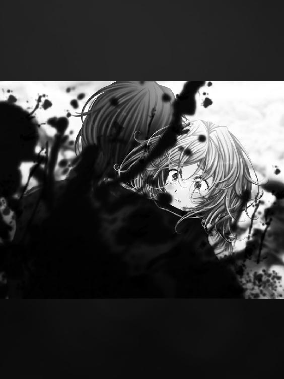
しぶとく生き残っていたメレスが、蛇の様に変じ、二人の体を貫こうと迫るのに、割って入ったものが居た。
「油断、するな......戦いはまだ、終わっては......」
ゼルナードの腹を貫いた虚獣を、破邪の光が滅する。
ゆっくりと傾いてくるゼルナードの体をノルアードとリズベルルは呆然と抱き止めて、それから瞳を揺らした。
「父上......父さん、父さん!!」
「お父様......そんな......私達を庇って......っ」
ノルアードは、父の腹から零れ落ちる血を必死で受け止めようとするが、あまりにも酷い出血に、為す術も無い。
ゼルナードの腹に空いた大穴は、向こう側がすっかり見える程で、内臓がごっそりと喰われていた。
ゆっくりと首を振り、ノルアードは呟く。
「嫌だ......父さん、せっかく......会えたのに！ まだ何も、していないでは無いですか！ 語り合って、分かち合って、親子らしい事を......何も......っ」
涙を浮かべる息子を見上げ、父は、笑った。
息子の頬を撫で、擦れた声で囁きかける。
「ノルアード......リズ、ベルル、を......幸せに、してやれ。私は、もう......ああ、約束を......果たせなかった事だけが、心、残り......」
「父さん......っ」
「私の様に、なるなよ。ノルアード......我が、息子よ。良い、父に......な......れ」
ノルアードとリズベルルの手の中で、その体は、すっと軽くなる様だった。
慟哭を包む、優しい光。
駆け付けたシャンロールが、ゼルナードの体を光の帯で包み込む。
「旦那さま」
シャンロールはそうして、涙を流す二人に優しく微笑みかけると、ゼルナードと共に光に包まれ、繭となった。
祈る様に二人が見つめる前で、繭が明滅する。
それは一瞬の出来事。
けれども、ノルアードとリズベルルには永遠の事の様にも思えた。
繭がゆっくりと開かれた時、中から現れたシャンロールはゼルナードを抱いてゆっくりと崩れ落ち、駆け寄った二人に支えられ、息も絶え絶えの様子で微笑んで見せる。
「私の中身を使いましたの。目が覚めたら、きっと前よりお元気になられる筈ですわ」
「シャンロール、貴女は......」
ノルアードの瞳が驚愕に見開かれた。
微笑みを浮かべるシャンロールの腹に、空洞が開いている。
代わりにゼルナードの傷は癒えていて、リズベルルが胸に耳を当てれば、心臓の鼓動が聞こえていた。
「私たちミディオムは、愛を知らぬ作りもの。けれど、この胸に宿った想いは愛なのだと......私は信じます」
青白い顔で微笑むシャンロールの体が、光の粒子となって散らばり始める。
ノルアードとリズベルルは、言葉無くそれを見つめる事しか出来ない。
「少し、無茶をしましたわ。この体ももう、維持できない。お別れですわ......二人とも」
「シャンロール......！」
「旦那さまが目覚めたら、伝えてくださいな。お慕いしております、と。そして、きっと待っているからとも......」
そうして、シャンロールの体は崩れて消えた。
最後まで笑顔だった彼女に、ノルアードは穏かな寝息を立てる父を抱きしめ、何度も何度も頷いている。
必ず伝える。貴女の言葉を。必ず父に伝えるから、と。
肩を震わせるノルアードを、リズベルルがぎゅっと支えた。
二人は見つめる。
象牙の塔を。
この戦いの先に、幸せな未来がある事を信じて。
メルディーノの澄んだ湖、その神聖なる水に浄化され、虚獣はもがき苦しみながらみるみるうちに小さくなり、遂には溶けて消え去った。
ディランは辛うじて弦奏鎧を封印球に収めるも、最早体の自由は利かず、ただただ、ゆっくりと水底に沈んで行く。
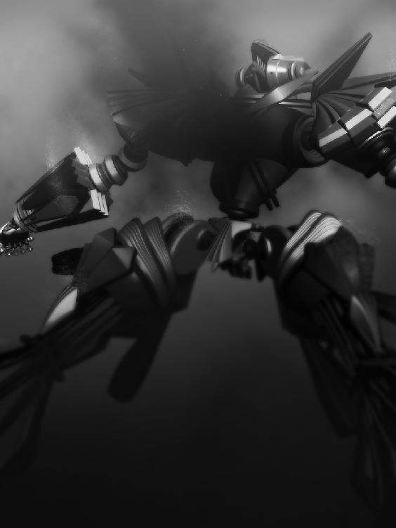
初めは、怖かった。
底無しの虚無に沈んで行く様なその感覚が。
しかし、諦めてじっと水面を見つめていると、それは実に美しく、きらきら光る湖面や、ゆらゆらと落ちてくる波の影が一つの芸術の様で、ディランは安らかに微笑むのだった。
この湖に、君は眠っているのだな。
今は亡きプランシューネに向けて、心の中で、そう囁く。
君は笑うかもしれないが、私は、今になって君に恋をしているのだ。
もっと早く、気付くべきだった。
プランシューネ、君と共に眠れるのなら......それも良い。
ディランの目から零れた涙は、湖の水と溶け合い、一つになる。
もう、良い。
もう、疲れた。
ゆっくりとその瞼が閉じられようとした時、不意にディランは、湖の中を煌めく白い光に気付き、目を奪われる。
翡翠魚か......。
それは長い尾を靡かせて、ディランへと近寄って来た。
輝く尾に見えていたものが、白い帯に変わり、それが次に、長い髪なのだと理解された時、ディランの胸は大きく弾んでいる。
「......困っちゃうな、ディラン様」
くすりと笑みを浮かべ、ディランをそっと細い腕で抱き止めると、その唇がゆっくりと近づき、触れる。
唇で感じる、温かな温もり。
これは、夢か。
ディランは目を細め、そして見つめる。
ゆらゆらと靡く髪を、その赤い瞳を、プランシューネの......微笑みを。
「ボクとの約束、ちゃんと最後まで守ってもらわないと。言ったよね、ディラン様。リズベルル達の力になってあげてって」
少し拗ねた様に言うプランシューネに、ディランは笑みを返し、そうだったと頷いている。
プランシューネとの約束。
あれがあったから、自分は此処まで生き抜いてくる事が出来た。
リズベルル達の助けになる事を、黒き獣の災いを回避する事を、ただそれだけを胸に、此処まで来れた。
しかし、それももう終わる。
私は、これでも結構、頑張ったのだよ......プランシューネ。
白い髪を撫でながら、ディランは喉を鳴らした。
「ごめんね。辛い思いを、させちゃったね。ディラン様、優しいから、ボクの事、悲しんでくれたんだね」
プランシューネはディランをそっと抱きしめ、その胸に額を埋める。
柔らかな、温もり。
「でも......貴方は強い人だから。戦っていけるよ、これからも。先へ先へ、ずっと歩いて、立ち向かっていけるよ」
「......まだ、戦えと言うのか、プランシューネ......」
「だって、そうしないと虚無に囚われちゃう。ボクの大好きなディラン様は、そんな弱い人じゃない。そうでしょう？」
「君は案外、厳しいのだね」
不思議と、笑みが零れた。
にっこりと笑って、プランシューネは頷き、ディランを引いて、泳ぎ出す。
光り輝く、湖面へ向けて。
「諦めないで、ディラン様。せっかく此処まで来たんだもの！ こんな所で死んじゃったら、絶対損なんだから！」
ああ、プランシューネだ。
ディランは思う。
この、明るい声。弾ける様な言葉。
勇気付けられる。その純真さに。
ディランは頷き、そして懸命に足を動かし始めた。
少しずつ少しずつ体が浮き上がり、光が近づいてくる。
「......な、に......っ!?」
少女の胸から引き抜いた銀鍵が、エイフォンの手を滑り、水に落ちてばしゃりと音を立てる。
力が、入らない。血の気が引く。
何故、と不思議に思い視線を下げれば、そこに刃があった。
自身の脇腹から生え出している刃に、エイフォンはそっと触れる。
指が切れて、血が滲む。
「此処に辿り着くまで、苦労させられたわい」
「き、貴様......アルベル！ シェラダンの老いぼれがあっ！」
「ほう、昔ラスティノフの所で顔を合わせたきりだが、名を覚えていたか。久しいな、エイフォンよ」
「ぐぬう......っ、奴らは、外なる者共はどうした！ まさか、貴様一人で突破して来たという訳ではあるまいっ！」
「ふん、研究不足だな。エイフォン、何故１２の封印が剣の試練と呼ばれるか判るか？」
「ま、まさか......!?」
「そう、剣の試練に挑みし者は、そこで奥義を受け継ぐのよ。それは光の剣技、破邪の秘法！ 剣の試練は封印であると共に、外なる者共への対抗手段を得る為の聖地なのだ！」
「き、貴様ああああっ！ 剣守かぁぁぁぁっ!!」
アルベルが剣を引き抜くと、エイフォンは呻きながら倒れ込む。
流れ落ちる、血。
「ゼルナードがただ貴様に写本を渡す訳が無かろうが」
「泳がされていたのは、私の方だったと......っ！ こんな所で、こんな所で、こんな所でええぇぇぇっ！ 長年の悲願！ 我が野望！ このエイフォン・ウル・コルグストム！ こんな所で潰えてなるものかああっ！」
叫び、暴れ、エイフォンは無様な姿で少女の上に覆いかぶさりながら、その手で必死に銀鍵を探そうともがく。
しかし、銀鍵は巨人の腕の根本、浅い水の中、ゆっくりと近づいたアルベルがそれを拾い上げた事に、エイフォンは気付かない。
「エイフォン。悲願と言ったな、野望と言ったな。それは本当に貴様の願いなのか？」
「......はあ？」
「貴様は操られているに過ぎん。外なる者に、トゥールウ神竜の邪悪なる側面に、貴様こそが、トゥールウ復活の贄......。目を覚ませ、エイフォンよ！」
「耄碌したか、シェラダンの老騎士！ 生贄なら、既に此処に......」
そうして、エイフォンは少女を見下ろす。
白い髪。柔らかな頬。幼くも艶めかしい肢体。
そして、琥珀色の瞳。
うっとりとした眼で。
少女が、エイフォンを見る。
悲鳴が漏れた。
「ひ、ひいぃぃぃっ！？ な、なんだお前は、なんだ、お前......お前、お前はっ!?」
「わたしは」
「や、やめろおおおっ!!」
「あなた」
「あなたは、わたし」
「わたしは、あなたの夢」
「あなたの望みは、わたしの望み」
少女が身を起こし、エイフォンの頬を舐める。
ずるりと這いずる、甘い舌。
唇に侵入してくる、じっとりと濡れた感触。
エイフォンは発狂している。
「......トゥールウ神竜、その本質は、善でも悪でも無い。それは、我々人類には到底計り知ることの出来ぬ大いなる存在。夢底からの囁きに耳を貸せば、心を捉えられ気が振れる」
アルベルは銀鍵を掲げ、その輝く刀身で周囲を映し窺いながら、少女を直視しない様にじりじりと近寄る。
トゥールウの化身たる少女は、虚ろな瞳でぐらりと揺れ、再び寝台に横になった。
「眠れ......お前は目覚めてはならぬもの」
アルベルはそして、少女の胸に銀鍵を突き刺す。
少女はただされるがままにそれを受け入れ、静かに目を閉じた。
静寂が訪れる。
そこは、墓所。
死せる少女が眠る、永遠の水底。
「虚しいものだな、戦いの終わりは、いつも......」
魔王は呟き、その瞬間に自分のものとなった世界を見下ろす。
美しい......何処までも美しい世界。
エンダージェン国。希望の楽園。
「喜ぶが良い、潰えた可能性たる我が民よ......今この時、我らは、未来を手にしたのだ！」
拳を握る、黒きヴィルフォーナ。
宙に穿たれた、奈落の孔。光のヴィルフォーナが消えた虚空を見つめながら勝利に酔う。
しかし、それに答える者は無く。
次に魔王は、戦慄いている。
「なんだ......」
握られた巨人の拳が、ゆっくりと力を失い。
「何故、鳴り止まぬ......！ この響き、この音色、この......息遣い!!」
世界に満ちる、希望の光。
光のヴィルフォーナが倒れた今、そんなものは粉微塵となってしかるべきだと言うのに。
「往生際が悪いんだよ、案外俺は。お前が一番良く、知っているだろうが」
「むっ!?」
魔王が振り返れば、そこにある、光。
１０の宝剣をその翼に頂き、両の手にも剣を携え、ジンが、光のヴィルフォーナがそこにいる。
「......ほう、この世界の私はなかなか骨のある男だ......なあっ！」
「自画自賛って言うのか、こう言う場合！」
黒きヴィルフォーナが放つ一撃を、光のヴィルフォーナの翼から伸びた四本の宝剣が阻む。
魔王の強靭な一撃を前に、クルスネット達から託された宝剣が力を失い落下していくのに、ジンは心から感謝した。
ありがとう、みんな。
魔王は嗤う。低く渇いた、ジンと同じその声で。
「私は今、感動している。友情、愛情、信じあう心......そんな下らぬものが、貴様を支えて来たか。素晴らしい......実に素晴らしいでは無いか、人間と言う奴は！」
「笑っちまうだろ。驚くよな。けど、案外これが悪く無い。悪くないもんだ......最後の最後に、支えがあるってことは！」
「良かろう！ 我が胸に空いたこの奈落、この闇......はてしなき虚無と！ 貴様が持つ、愛、友情、それら光のどちらがより深いのか！ 此処で雌雄を決しようでは無いか！」
「数が多いとか少ないとか、でかいとか小さいとか、深いとか浅いとかじゃ無いんだよ......俺がこの世界で得たものはなぁっ！」
光と闇が、激突する。
弾け合う魔と魔。それは極限なる爆発となって、空を、世界を眩く照らした。
「全身全霊で来い！ 見せてみるが良い、貴様の持つ可能性とやらを！」
嗤う魔王ジンに、魔人ジンは頷き。
左手に掲げる魔剣との感応を、極限まで高める。
「受けてみろ......っ！ 終焉の魔剣、ベルセイバー!!」
シズマから託された魔剣が、ジンに応え輝いた。
その威力に、象牙の塔が崩れていく。
ジンは想う。友を。親友を。全ての切っ掛けとなった彼の事を。
コトネの笑顔が脳裏に浮かび、シズマとの想い出が駆け廻る。
信じている。
いつだって。
あいつが信じてくれるから、俺は今、こうやって立ち向かえるんだ。
立ちはだかる己を前に、勇気を持って、強くあれる！
砕け散る、ベルセイバーの刃。
煌めく破片が辺りを散らし、次にジンは右手へと力を込めて。
「共に行くぞ！ 常勝の刃、バルメナスの剣!!」
輝くは、ネムリーから、ボルダナから託されたフェアルージュの宝剣。
深紅の光が唸りを上げ、それは灼熱の牙となって黒龍騎ヴィルフォーナを包み込む。
ちくしょう、とジンは笑む。
あの可愛らしいネムリーの心をものにするとは、ボルダナは実にけしからん奴だ。
道ならぬ愛か。
普段ならぶん殴っている所だが、まあ許そう。
こんな、命がけの戦いの中で、切実に求めあうのなら、その愛は真実なのだ。
いつまでもずっと、支え合っていけば良い。
それに、ぶん殴る役はきっとダルカス辺りがやってくれるさ。
バルメナスの刀身が灼熱の中に溶け、それは燃え上がる情熱の様に最後の輝きを残し、消えてゆく。
耐える魔王を睨みつけ、ジンは次なる剣を抜き放つ。
「虚空をも包み込む白霧の調べ、ブランマラキアの剣よ！」
ディランから預かったメルディーノの宝剣が震えれば、それは白い聖なる霧に包まれ、魔王の剣を絡め取る。
ほんとうの戦いは、あの時からはじまっていたのかもしれない。黒き災いの予言、人知れず死んでいったプランシューネが遺した願いは、今こうして、ジンを強く支えてくれる。
気付けなかった事を悔やむ。プランシューネの死、ディランの孤独、ジルハワードの悲しみ。もう一度やり直せるなら、そう思わないと言えば嘘だ。
しかし、彼女はリズベルルの、ネムリーの、ジン達の未来が続く事を望んでくれた。それに応えずして、何が友か！
あの日、抱き上げた温もりがもうこの世に無いのだとしても。
せめて共に笑い合った日々を忘れない事が、ジンが出来る心からの弔い。
ブランマラキアの刀身が崩れ、それは霧となって辺りを包む。
更なる宝剣を構えて、ジンは叫ぶ。
「湧き上がるは揺ぎ無き正義！ メルメサイユの剣......っ！」
フィオから託されたアルバトリスの宝剣を虚無へとぶつけ、ジンは歯を食いしばる。
時に競い、共に力を高めた弟弟子。その真っ直ぐな瞳を思い出せば、ジンは少年時代へ立ち返った様な懐かしくも切ない気持ちになったものだ。
何ものにも真っ直ぐに向き合い、見つめる勇気。その心を、この虚無の王は忘れてしまっているのでは無いか。
お前の傍には、あの様な直向きな人は居なかったのか。
いや、きっと居た筈だ。
俯くな。前を向いて、広く世界を見つめてみろ。
お前に足りないのは、その心だ。
ジンは願いを込めつつ、メルメサイユの剣を燃焼させる。
全ての魔を使い果たした宝剣は、最後に一際大きな光を放ち、砕け散った。
「小癪な真似を......っ！ 何度向かってこようとも！ 我が虚無に勝てる道理無し！」
「だったら受けてみろ！ 全てを薙ぎ払う、ビルガオンの剣！」
ジャルバンを、コルネリーを想い、ジンが振るうのはリィガイムの輝ける宝剣。
この戦いが終わったら。
彼女に。
コルネリーに、返事をしよう。
今まで散々待たせた事を詫び、ジンの本当の気持ちを打ち明ける。
それが例えどんな答えだとしても、コルネリーは受け入れてくれるだろう。頷き、微笑んで、その時ジンは、少しだけ寂しく思うかもしれない。
ジャルバンは娘想いの良い父親だから、小言の一つくらいはあるだろうか。
いや、きっといつもみたいに豪快に笑うのだろうな。怒られるかもしれない。今から覚悟をしておかないと。
「貴様......笑っているのか!?」
「ああ、この先の......未来の事を想うってのは、愉快なんだ。楽しいんだよ。判るか、お前に。たった一人のお前に、この気持ちが......！」
「......っ！」
「続けていくぞ！ 全てを包み込む、ランスニールの剣！」
抜き放つは、レアンドルの宝剣。
剣を託す時、ジンを抱きしめてくれたアナメアの温もりが思い出され、今になってじわりと涙が浮かんでくる。
全てが終わったなら、きっと彼女との約束も果たしたいものだ。
戦場では無く、活気と笑顔に溢れたレアンドルを、空から眺めてみたい。
それから、ナーギアとグレンにも会おう。あの二人の関係も、昔を思い起こすようで、少しだけ羨ましく感じていた。
ナーギアには、リズベルルと仲良くしてくれている事を、そして今、フェヴルートー艦長としてユフィーユを支えてくれている事に礼を言いたい。
グレンには、バルムンクの事を。
あれはきっと、ソルエルデイルで彼が修復してくれた弦奏鎧だ。
間接的に、グレンは命の恩人とも言えるだろう。ああ、くたびれたヴィルフォーナを調律してもらうのも良い。
まだまだ、やるべき事か、やりたい事が沢山ある。
そうだろう。
ジンは常に共にあった友へと声をかける。
ヴィルフォーナ！
「闇を貫く閃光、ゴーデルマの剣！ そして、誇り高き白刃、アカセリアの剣!!」
粉々になって散っていくランスニールに代わり繰り出されたセリオラとポルストフルの宝剣が、魔王の剣に喰らいつく。
一度は虚無に飲み込まれかけても、立ち上がって来たウルグス。
後悔を胸に秘めながら、剣主として耐えて来たフェルナンド。
共に立ち上がった仲間達。
王の使者、導く者、虚無との戦いを通じて団結したこの国。
あの美しい桜も、神秘的な湖も森も、この世界に存在する全ての景色が、そこに生きるもの達が、この剣に、ジンが駆るヴィルフォーナに賭けている。
未来を、切り開く事を。
弾ける二つの刃。
剣を失ったジンに、魔王の哄笑が降り注ぐ。
「......今こそ、我、王とならん！ さあ、潰えるが良い、希望の光よ！ 天舞う音色、此処に在り!!」
「凱旋には、まだ早い！」
ジンは、笑う。
もう体はくたくたで、疲れて頭は回らないのに、不思議と零れる笑みは、心から安らいだもので。
脳裏に浮かぶ、シェラダンの情景。
俺の、一番好きな街。
皆が待ってくれている、俺の居場所。
「......愛してるって」
はにかむ、リズベルル。
「......ノルアードが、言ってくれた」
あの、嬉しそうな顔。
愛する人の為に戦うと言うのは、こう言う事なのだ。
俺は、リズベルルを愛している。
ノルアードの事も、同じくらいに。
二人が幸せに暮らしていける世界を作る為に、その礎となるならば、俺はこの身を捧げても良い。
ただ、俺はこれで欲張りだから。
幸せな二人を、これからも見守るつもりで居るんだ。
これだけ頑張ったんだから、俺だって幸せになりたいじゃないか。
「今こそ鳴り響け、俺のデュオン!!」
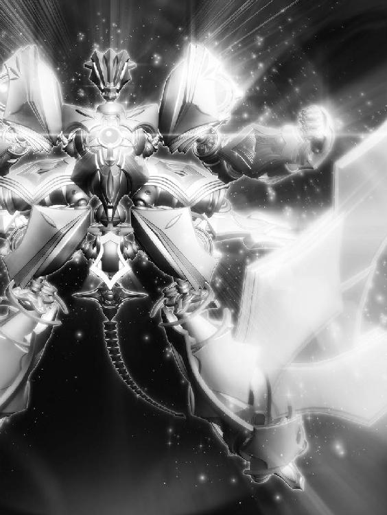
眩いばかりの閃光。そして鐘を鳴らす様な音が響き渡り。
白んだ世界に色が戻った時。
そこには白銀の竜では無く、白く輝く巨人がいる。
ジンは、ヴィルフォーナは、剣を構えた。
最後の剣を。
「時すらも断つ......メイルレヴァンの剣！ 迸れ、今、光となって!!」
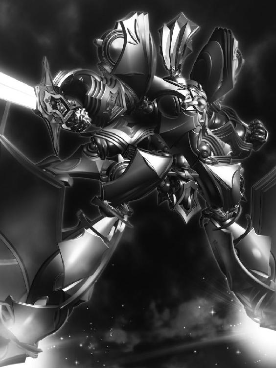
斬光、眩く。
光と闇、希望と虚無とが、激突する。
「おおおおおおおぉぉぉぉっ!!」
その雄叫びは、どちらが上げているものか、最早判らない。
混じり合い、融け合い、二人は共に閃光となった。
「我が、奈落、我が、虚無......この胸に開いた、孔......！ のうのうと生き、裏切りも、孤独も知らぬ貴様に、この絶望が......斬れる、と!? 愛などと言うまやかしが、勝ると言うのか!?」
「そんな事を言っているから、一人ぼっちになっちまうんだ！ ちょっとは素直に、人の話を、聞けえぇぇぇっ!!」
メイルレヴァンの剣が、砕け散る。
「......っ!?」
闇色に染まった、その剣が。
驚愕に息を飲む魔王。黒きヴィルフォーナ目掛けて、ジンは、剣を薙いだ。
弾け飛ぶ装甲。傷ついた黒龍が悲鳴を上げる。その胸から覗く、暗がり。
魔王は、そこに居た。
かつて魔王だった者は、その身を失い、白骨となった男は、虚ろな孔で、ジンを見る。
「この、音色......私には、眩しすぎる。何なのだ、これは。何なのだ、この世界に満ちる......この音は」
「デュオン、だ」
「......聞かぬ、言葉だ」
「愛、友情、誰かを想う......温かな気持ち。それがきっと、デュオンなんだ。そしてデュオンは、恋人を、家族を、友達を......隣で生きる人達を指す言葉でもある。デュオンとは、なんでもないものだ。普遍的な、何処にでもある力だ。誰しもが持つ、だからこそ眩く強いもの。お前も持っていただろう？」
「忘れてしまった。そんなものは」
「戦ってきたじゃないか！ お前だって、世界の為に、お前が居た世界の為に戦って来たんだろう!?」
「そんなに、格好良いものじゃ無い」
そうして、とうに朽ち果て骨となった男は立ち上がり、笑ったのだと思う。
最後に眩い世界を見て、心からの笑みを浮かべたのだ。
「美しいな、この国は。我ながらお前の事を、羨ましく思うよ」
ふっと笑って、ジンは手を差し伸べる。
自分自身に手を差し伸べるだなんて、なかなか出来ない体験だと思いながら。
不思議そうに見つめてくる自分に、ジンは頷いて。
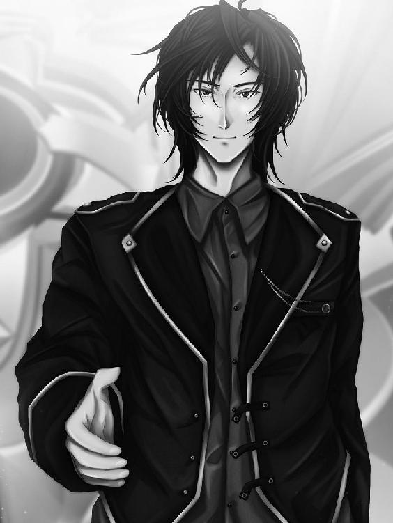
「共に行こう」
「......何だと」
「俺はお前だし、お前は俺だ。招かれたのが俺だけってのは、不公平だろう？」
「......本気で言っているのか？」
「勝ち負けとか、性に合わない。一緒に来い、俺！ 俺がお前を、招いてやる！」
迷いは無い。
何故なら、どちらも同じ自分なのだから。
男は、ジンの手を取り、ジンは、男の手を取った。
二人は重なり合い、混じり合い、二騎のヴィルフォーナもまた、一つになる。
ジンは感じた。男の抱いてきた絶望を。経験してきた死を、悲しみを。
多分、それはジンの未来だ。
その暗き可能性は、常にジンのすぐ傍にある。
虚無の魔王は、デュオンを忘れ、挫けたジンを待ち受ける可能性の一つなのだ。
しかし、ジンは知っている。
その未来が訪れる事は永劫に無い事を。
共に歩む友がいる限り、ジンの心が闇に染まる事は決して無いのだと。
晴れていく空に立つ、白銀の騎士。
ヴィルフォーナはメイルレヴァンの剣を掲げ、高らかに告げる。
「虚無を断ち、天舞う音色、此処に在り!!」
剣が、鐘の様にしゃあんと鳴って。
戦いの終わりを告げる音が、空に、世界に、響いてゆく。
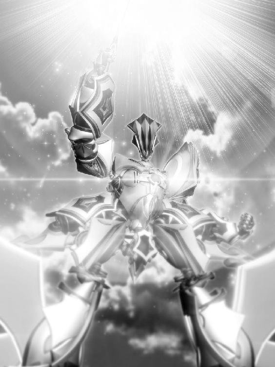
エンダージェンの中心から生じた光の波が、空を撫でる。
眩く輝いたのは、一瞬の事。
それが去ると、空は静寂に包まれている。
「飛行型の反応......完全に、消失......」
レイルが呆然と呟き、その意味する所がじわじわとフェヴルートー艦内に伝わる。
ナーギアは喉を鳴らし、クルー達は見る見るうちに笑顔になった。
「......天舞う音色、ヴィルフォーナ......尚も健在」
フェヴルートーと一体となった感覚でその光点を確認し、ユフィーユは微笑む。
その頬を、喜びの涙が伝って落ちる。
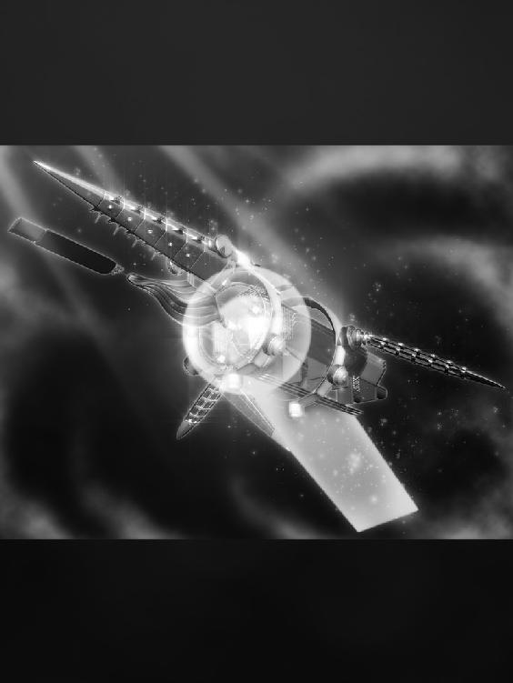
エンダージェン国を蹂躙していた虚獣達が、一斉に動きを止めたかと思うと、彼らは何かに引き寄せられるかのようにエンダージェンの中心を見た。
それから、少しだけ悲しげな、それで居てほっとした様な声色で鳴き、次の瞬間、ばしゃりと崩れている。
弾けた虚獣は雨となってぱらぱらと振り、その中で、剣主達は戦いの終わりを悟ったのだ。
「......これは......っ」
守護鎧ヘヴレミオンから降り立ち、地面に手をついてウルグスが驚きの声を上げる。
不思議な事が起こっていた。
黒水の雨を浴びた大地が、見る見る生命で潤っていくのである。
元から生えていた植物達には何の影響も及ぼさなかったが、地面に落ちていた種や既に寿命の尽きた枯れ草は違った。
それらは黒水を吸って、まるで時間を早回しするかのように、あるいは巻き戻す様に、芽吹き、息を吹き返し、あっという間にエンダージェン国は生命の息吹で包まれる。
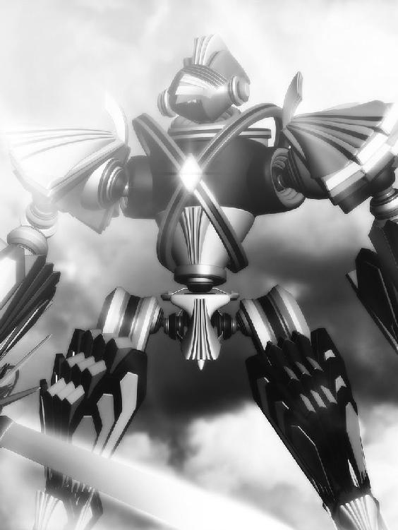
「まるで、黒水もまた、この国を支える節理の一つだとでも言う様ではないか......」
人々が息を飲み、レギオン達が喜びの声を上げるなか、クルスネットはそう呟き。
「生き物は何れ老い、死を迎える......しかしその死がまた、生命の糧となる......同じ事なのかもしれんなあ」
生き生きと茂る若草を見つめ、フェルナンドは微笑んでいる。
「......おわった、の......？」
レメサスから降り、一歩二歩とよろめき歩いて、ネムリーはぼんやりと呟く。
晴れた空から降る、ほのかな雨。手を広げて受け止めれば、それは黒水では無く、澄んだ透明な滴となった。
雨が、上がる。
フェアルージュの空を、太陽の船ソルエルデイルがその壮麗な翼を広げ、横切っていく。
「ネムリー！」
「......お兄様？」
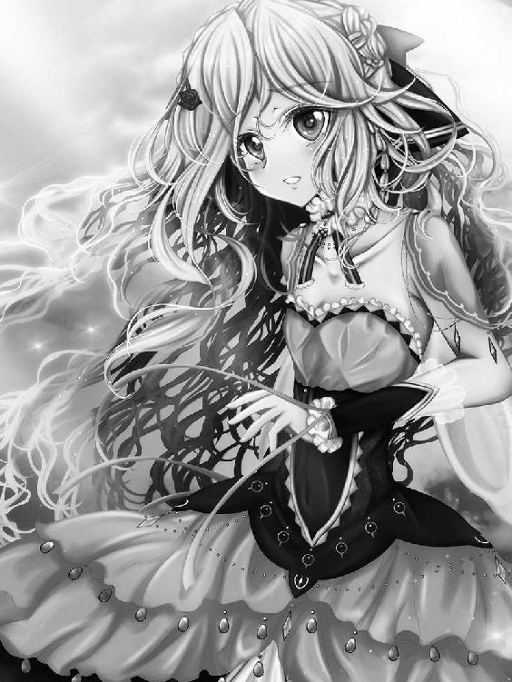
声が聞こえ、振り向けば、こちらに駆けてくる兄の姿。
心も、体も、暗がりから解放されて、ネムリーもまた駆け出している。
「お兄様......ああ、お兄様っ！」
抱きしめて。
お互いに感じる、温もりと匂い。
兄の体に顔を埋めて、ネムリーは誓った。
もう、離れない。この方と共に、生きていくのだ、と。
抱き合う二人を、優しげに眼を細めた三騎士達が、見守っている。
争いは終わったのだ。
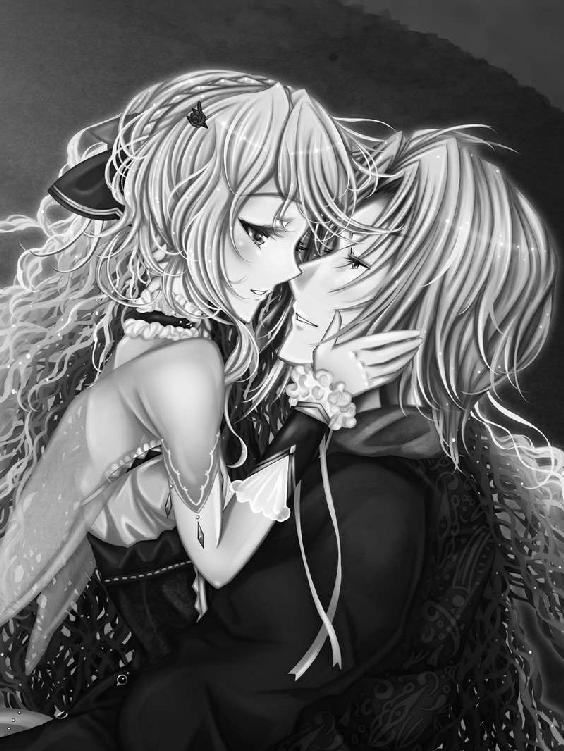
「ご無事ですか、ディラン様......ディラン様！」
その声に眼を開けると、飛び込んでくるのは心配そうな表情で見下ろす騎士の顔。
ディランは呻きながら体を起こした。濡れた髪が重く、腹にずきりと痛みを感じる。
手を当てれば、意外な事に出血は治まっていた。
傷は......浅い。あんなに深く貫かれた筈なのに。
暫くぼんやりと周囲を窺い、ディランはすぐ傍の湖を呆然と眺め、それからはっとして、こちらを案じる様に見ている騎士に掴みかかる。
「私を助けてくれた少女は!? いただろう、少女が一人！」
「は、それなら......おや、ほんの少し前までそこに居たのですが......」
「それは、赤い瞳の少女では無かったか!?」
「は、はい。確かに......」
騎士の言葉を待たず、ディランは立ち上がっている。
止める騎士達を振り切って、ディランは走った。
もう二度と、離してなるものか。プランシューネ、君を、絶対に。
その想いを胸に駆け、懸命に周囲を窺う。
「プランシューネっ！」
少女の姿は、何処にも見えない。
力無く立ち止り、ディランは深く息を吐いた。
全ては、夢か、幻か。
その時だった。
ふと首を振った先に、ちらりと光る白い髪。
はっとして見れば、そこに、彼女は居た。
「......プランシューネ」
にっこりと笑みを浮かべ、小さく首を傾けて、プランシューネはばいばい、と手を振った。
そうして振り返り、自分の足で、跳ねる様に駆けていく。
最後に動いたその唇が、さようならと言っていたのだと気付いて、ディランは穏かに笑っていた。
「さようなら、プランシューネ......ありがとう」
その胸に最早虚無の気配は無い。
泣き笑いになりながら空を見上げて、眩しげに眼を細める。
額に置かれた温もりに、そっと目を開けば、風に飛ばされた花びらが空を舞う光景。
少女の膝の上、長い悪夢から解放されたかの想いで、エイフォンは囁いた。
「......あたたかい......」
「......お目覚めですか、エイフォン様」
呟く、ミルゥの声に、エイフォンは小さく頷き、そして、涙した。
ゆっくりと首を傾け、辺りを見渡せば、そこはいつかの花園である。
可憐な薄紫の花が咲き誇る花畑。ミルゥと初めて出会った場所。
今でも瑞々しく思い出す事が出来る。初めて此処を訪れた時、エイフォンはこの花園をこの世ならざる場所なのではと感じたのだ。
「長い、夢だった......とても、悪い夢......」
「私もずっと、夢を見ていました」
エイフォンを見下ろして、その額を静かに撫でて、ミルゥは笑う。
その、柔らかな表情に、エイフォンは息を飲む。
「私を起こして下さったのは、貴方だった......私はずっと、貴方をお救いしたいと思っていました。醒めぬ悪夢から、貴方を掬い上げてさしあげたいと。けれど、その方法が判らなかった......随分遠回りをしましたが、今ならば判る気がします」
「......私を、赦すと言うのか......？」
「貴方を恨んだことなど、一度もありません」
囁きと共に、天が割ける。
空を覆っていた雲が穏かに消え、遥か上空に光の波が走ったかと思うと、次の瞬間地上に影が落ち、現れ出でたる......この世のものとは思えぬ美しい城。
空に浮かぶ城、ユゴスミネラが、祝福の光で以ってエイフォンとミルゥを包む。
「戦いは、終わりました。私はまた、役割を失った」
「もう、何に縛られる事も無い。ミルゥ、君の好きな事をして、好きな様に生きると良い」
ゆっくりと体を起こしながらそう呟けば、エイフォンの脳裏にはこれまでの唾棄すべき行いの数々が暗い炎の様に燃え上がり、一瞬で燃え尽きながらも次々と浮かぶ。
何と言う事を、して来たのだ、私は......エイフォンは愕然と項垂れ、涙を流す。
あれが、己の本性か。あるいは、トゥールウ神竜によって夢を操られていたとでも言うのだろうか。
どちらにせよ、この胸に燻る闇は、私の罪だ。
エイフォンは唇を噛む。
そんな主の手を、ミルゥは包み、はっとするエイフォンを見上げて、ふわりと笑みを浮かべ。
「好きな事、あります。エイフォン様、私、この国をまた旅して回りたい。いろんな場所を巡って、それは街の骨董屋......画家のアトリエ、路地裏の古びた不思議なお店......沢山沢山の場所を見て回って、そして、宝物を集めるんです。きらきらした、想い出を」
エイフォンは温かな気持ちで少女を見つめ、そして頷く。
ミルゥは言った。
「好きなんです。貴方と一緒に、いる事が」
「......私も、連れて行ってくれるのかい？」
「はい」
良く通る、はっきりとした楽しげな声で、ミルゥは笑う。
「ミルゥは、ずっとエイフォン様のお傍におります。貴方がほんとうの宝物を見つけるその時まで。見つけた後も、きっといます」
「......それは、」
もうとっくの昔に、手に入っていたものだったんだ。
エイフォンは涙を流し、顔を歪めて、それでも笑った。
私だけの、何にも代え難い、本当に価値のあるもの。
本当に欲しかった、デュオン。
言葉にしようとしても、それは声になる前に零れ落ち、エイフォンはただただ泣きじゃくる事しか出来ない。
そんな主を包み込む様に、ミルゥはぎゅっと彼を抱きしめる。
二人を見守る天空の城、ユゴスミネラ。
薄紫の花びらが風に乗り、ひらひらと踊る。
「......無粋、か」
木陰からその様子を窺っていたアルベルは、手をかけていた剣をそっと離し、彼らに背を向けて歩き出す。
去る老騎士の口元には、穏かな笑みが浮かんでいた。
「父上、ご無事ですか......父上！」
ノルアードの腕の中で、薄らと父が目を開ける。
暫くぼんやりと空を見上げ、ノルアードとリズベルルの顔を交互に見ると、はっとしたようにゼルナードは身を起こした。
腹を押さえて、傷が無い事に気付けば、何が起こったのか悟ったのだろう、彼は黙って唇を噛んだ。
「愛していると」
リズベルルが言う。
「シャンロールが。そして、待っていますとも......」
「......そうか」
そうして三人は、支え合う様に立ち上がる。
ゼルナードは開く方の左眼でそこかしこに芽吹いた緑を見て、それからノルアードとリズベルルを見つめると、笑みを浮かべる。
彼はそうして一人、歩いて行く。
引き止めようとするノルアードの手を掴み、リズベルルは微笑んで首を振った。
もう、黙って彼がいなくなる事は無いのだから、と。
それから二人はまた空を見上げた。
眩く青い、澄んだ空。
「......帰って来た」
一筋の光となって羽ばたいてくる、その姿を見つめ。
二人は寄り添って、それを待つ。
戦いを終えた、英雄の帰還を。
「おかえり......ヴィルフォーナ......おかえり、ジン！」
青空に映える、それは幸いの竜だった。
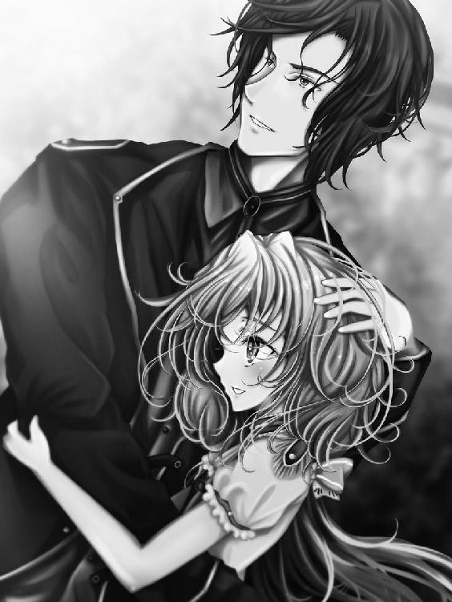
「ほんと、死んだかと思って心配したんだから！ そこんとこ、判ってる？」
「......何度も言うが、俺は直前まで動けなかった訳で、黙っていたのはエルデイルであってだなあ」
「わらわのせいにするな！ 万が一治療に失敗して死んじゃったらわらわが責められるな～と思って、黙っておっただけじゃ！」
酔っぱらったオウカが絡むのに、シズマがうんざりした様な顔で弁解すれば、エルデイルはきゃらきゃらと笑う。
今日何度目か判らぬやり取りだったか、聞いていた者は飽きもせず笑い、生還を喜ぶ様にシズマを小突く。
戦いは、終わった。
疲れ果て、最早気力だけで立っていた筈の戦士達は、それが判るや否や目を輝かせ、そうなったが最後、その日は眠れる筈も無く。
酒に料理を持ち寄って、夜空の下、国中を巻き込んでの宴会が始まる。
剣主も騎士も無く、導く者も使者も無い。エンダージェン国の民達は皆その夜は全てを忘れ、ただ友として、隣人として語り合った。
「ジン、今日の主役はお前だぞ、もっと飲め！」
「飲んでるよ。死ぬほど飲まされてる」
酒を注いでくるバードに苦笑しながら言えば、次々に回ってくる料理の皿。
こりゃあ王様にでもなった気分だな、と思いながら、ジンは腹を擦る。
「ジン～、今のうちに約束しておきたいのだがなぁ～」
「な、何だよ......」
「此処は一つジンを模った人形をだな、ジン人形をだな、我がシェラダンの街の名物として、次の祭りで売り出す......」
「嫌だよ」
また始まったよ、と思いながら、ジンは即座にノルアードの提案を却下する。
まだ何かべらべらと商品案を語るノルアードの言葉を右から左へ聞き流しながら、全く平和なものだとジンは笑った。
平和に、なったんだよな。
そう思えば、じんと胸が熱を持つ。
また草むしりやゴミ拾いの退屈な日々に戻るのかと思うと、それが案外嬉しくて、ジンは幸せな気持ちになるものだった。
「ジン～、すごい！ ジンはすごい！」
さっきまでうろちょろとあちこちを駆けまわるアオゾラを二人して追いかけまわしていたリズベルルとネムリーがやって来て、ジンの傍に腰を降ろす。
捕えられた宇宙人の様にリズベルルに持ち上げられ、だらんと延びていたアオゾラは、もがく様に抜け出して、にゃーんと鳴いて駆けていった。
逃げられちゃった、と笑うリズベルルの目は、なんだかとろんとしていて、それを見たノルアードは血相を変える。
「む!? もしやリズに酒を飲ませたのか？」
「あら、駄目だったかしら」
きょとんとしながら首を傾げるネムリーは、そうしてグラスの中身をごくごくと飲み干した。
早速次のボトルを開けて、自分の分を注いだ後、悪戯っぽい笑みを浮かべながらリズベルルのグラスにも酒を注ぐ。
「はい、リズ！」
「わー、ありがとー」
「リズ、それは酒じゃないのか？」
「えー？ ジュースだよ？ へへへ、別にお酒でも良いじゃない？ めでたい日だもん！ いいじゃない!? 私、最近、お酒飲めるようになったー」
くたーっとネムリーに寄りかかりながら、リズベルルはころころと笑う。
「ノルアードと、二人の時、飲ませてもらうんだよ～」
「おい、ノルアード。リズベルルに酒を飲ませて変な事をしたんじゃ無いだろうな」
ジンが睨むと、ノルアードはぶるぶると首を振る。
リズベルルのころころ笑いは、次第にけたけた笑いへと変化していた。
「ノルアードがするんじゃなくて、私がするんだよぉ」
「何を？」
「お酒を飲んでると～、ふわーってして、きもちいいんですよ？」
こてんと首を傾げたかと思うと、リズベルルは眼をぎらぎらさせながらノルアードに襲い掛かった。
馬乗りになり、ノルアードの首筋をがじがじと齧り始める。
「ぐあーっ！ いたたたたっ！ やめろ、リズ！」
「はーおいしい。ぺろぺろしちゃう。たかまる～っ！」
何が？ 何が高まるの？？
ノルアードの鎖骨から首にかけてを執拗に舐めるリズベルルに、皆は眼を丸くする。
もがきながら、ノルアードが言った。
「リズに酒を与えるな！ 酔い過ぎるとこうなるんだっ！」
切実なノルアードの悲鳴に、皆はこくりと頷いた。
「ほら、リズ！ 全くもう......これでは眼を離せんぞ。今夜はもう寝なさい」
「え～っ!? せっかくのお祝いなのに、お祭りなのに、なのに～!?」
「なあに、酒盛りなどこれからいつだって出来るさ。さあ、ベッドまで連れて行ってあげよう」
穏かに笑うと、ノルアードはリズベルルの事を抱き上げる。
一瞬で大人しくなって、リズベルルはとろんとした顔でこくりと頷いた。
ノルアードの腕の中、少しだけ体を起こし、囁くその声。
やはり酔っているのか、全然囁きになっていない。まる聞こえ。
「じゃ、ノルアード、私が眠るまで傍に居てね」
「ああ、いいとも」
「......すきすきしたい」
「ん？」
「すきすきしよ？」
「うむ、あれは何度しても良いものだからなあ」
くすくすと笑い合いながら、そうして二人はフィレントア邸へと去っていく。
ノルアードがちらりと振り向いて、それじゃあ失敬と目配せした。
「......ジン」
正座したままの格好でぴょんぴょんと跳ね近づいてきたウルグスが、首を傾げる。
「すきすき、とはなんだろう？」
「......わからん......シズマ、知っているか？」
「皆目見当もつかん......何かの......隠語だろうか......？ フィオ青年は詳しいのでは無いか？」
「ぼ、僕に聞くなよ！ ......なんだろう......」
うーむと首を捻る四人である。
すると、突然ネムリーが立ち上がり、くるくると踊りながら駆け出している。
「う、う、う、羨ましい......！ お兄様～っ！ お兄様お兄様！ どこにいらっしゃるの!?」
じたばた騒ぎ出すネムリーに気付いて、向こうの輪で賑やかに話し込んでいたボルダナが手を上げる。
ネムリーは兄の姿を認め目を輝かせると、すっ飛んで行ってその首に抱き付いた。窒息しかけたボルダナが呻いている。
「......なんか」
ジンは誰に向けるでもなく、呟いていた。
夢みたいだな、と。
空を見上げると、大結界の向こうにはきらきらと輝く無数の光点が見えた。
リズベルルとネムリーは、あれが星と言う奴では無いだろうかとはしゃいでいたものだが、エンダージェンから星が見える筈も無い。
では、あれはなんだろうか？ ともかく美しい事だけは、確かである。
酒を飲み過ぎたのもあるし、はしゃぎ過ぎて酸欠気味で、少し頭がくらくらする。
あちこちに掲げられた灯りは、ぼやけた視界できらきらと宝石みたいに輝いて見え、何処かで誰かが音楽を奏で、そこに別な誰かがでたらめな詩を付けているのも、愉快だった。
祭りの夜。
これが夢で無い事を、ジンが一番良く知っていた。
続いて行くのだな、と思う。
このエンダージェン国と言う場所は、様々な物語を内包して、続いて行くのだな、と。
ジンの体が、ぐらりと揺れた。
「......ジン？」
耳に届く、シズマの声。
「ジン......おい、ジン!? 嘘だろう、おい！ 死ぬな......目を開けろ、ジン......っ!!」
次第に切迫していく、友の声に、ジンは笑った。
「殺すなよ」
腹を抱えながら起き上がって、ジンは鶏肉を摘まむ。スパイスが効いていて、実に美味い。
うはははは、とシズマも笑った。
賑やかな輪を外れ、ゼルナードは一人夜空を見上げる。
大結界の向こうに輝く、無数の光。
遂に、来てしまったか。
胸の奥が冷たく凍り、体がぐっと重くなる様な気分だった。
「辛気臭いぞ、ゼルナードよ」
がっはっは、と笑いながら、ジャルバンがやってくる。
アルベル、ウェスター医師、そしてフェルナンドも一緒だ。
五人は揃って夜空を見上げ、深く息を吐くのだった。
「......あれがお前さんの言っておった奴か」
フェルナンドの言葉に、ゼルナードは頷いている。
「私にとっては此処からが、本当の戦いだ。約束を果たす為の......」
重く囁かれたその言葉に、大人達は夜空に浮かぶ光を見つめ、目を細めるのだった。
「また、やってしまった......」
昨晩はフィレントア邸にお泊りしたリズベルルは、しょんぼりしながら屋敷へと帰って来て、はぁ、と溜息。
お酒、飲み過ぎ、いつも後悔......。
「また変な事した気がするぅぅぅぅっ!!」
ちょっぴりずきずきする頭を抱えながら、リズベルルは呻いた。
ぼんやりとしか思い出せぬ昨日の記憶......なんかやたらぺろぺろした感覚がほんのりと残っていて、リズベルルは赤くなった。
「はぁ、忘れよう。皆も忘れて......」
がっくりと項垂れながらリビングにやってくれば、部屋の真ん中にはアオゾラが伸びている。
「アオゾラ～、なんか元気ない？」
声をかけても、アオゾラは返事をしない。
はしゃぎ疲れたのかな？ と思いながら近寄って、つんつん突けば、アオゾラは息を吸ってお腹を大きく膨らませた。
「あー、リズ」
「アオゾラおはよ。元気ないねぇ」
わしわしとお腹を撫でてリズベルルはころころと笑ったが、アオゾラは小さく鼻を鳴らしただけだった。
「なんか俺さー」
「うん」
「もう駄目かも」
「へ？」
「結構楽しかったなぁ......リズんちの飼い猫になるってのも、アリな気がしてる、今」
何やらこの灰色猫には猫なりのプライドがあるらしく、アオゾラはいつも自分は飼い猫では決して無いのだと豪語していた。
それが一体どんな風の吹きまわしか、とリズベルルが驚けば、アオゾラは弱々しくにゃーんと鳴いて。
その時初めて、なんかおかしいぞ、とリズベルルは笑みを消した。
「ばいばい、リズ。猫缶、おいしゅうございました」
アオゾラは最後にすうっと息を吐いて。
それきり動かなくなった。
「......昨日、食べ過ぎた......」
目覚めると、腹が重かった。
ジンは頭をかきながらよろよろと階段を降りる。何か気配がするので、リズベルルが帰っているのかな、と思いながら顔を洗う前にリビングへ足を運んだ。
リズベルルは部屋の真ん中にぺたんと座りこんでいた。
アオゾラが横たわっている。
大量の猫缶が散らばっていて、なんの遊びだ、と思いながらジンは缶詰を一つ拾い上げて、リズベルルを覗き込んだ。
「......アオゾラ、死んじゃった」
「え？」
最初、死んだふりをしているのだと思った。
じゃあ、この缶詰はお供えか、と。
振り返ったリズベルルが目を真っ赤にしているので、ジンは唖然とする。
恐る恐るアオゾラに触れてみると、既に冷たく、体はかちこちだ。
アオゾラは死んでいた。
「昨日まで、何とも無かったのに......急に、そんな事、あるの？ 死んじゃうなんて事、こんな簡単に......っ」
みるみるうちにリズベルルの瞳に涙が溜まり、それは大粒の滴となって溢れだす。
縋りついてくるリズベルルを抱き止めて、ジンは動揺で声も出せない。
アオゾラが死んだ？
何で？
「これから、これからなのに......これから、だったのにっ！」
泣きじゃくるリズベルルの髪を静かに撫でながら、ジンはアオゾラの亡き骸を見つめ続ける。
なんか言えよ。いつもみたいにうるさく。
声にならなかった。
二人は庭に穴を掘って、アオゾラを埋めてあげた。
迎えに来たマールが途中から手伝ってくれたので、すぐに済んだ。
墓標代わりに猫缶を立てれば、じわじわと現実が理解され、ジンは項垂れる。
アオゾラは死んだのだった。理由は判らないが、それが事実だ。
その日、戦いが終わった矢先ではあったが、二人はゼルナードに呼ばれていた。
何やら急ぎの話があるらしい。
マールの車で移動する間、リズベルルもジンも一言も話さずぼんやりと過ごす。
観測塔には、シェラダンの面々の他、ボルダナとネムリー、エルデイル、ユフィーユ、ナーギアとアナメア達が既に集まっていて、ジンはやっとの事で顔に笑みを張り付けて、遅れた事を詫びた。
「いいえ、滅多に入れない場所ですから、見学させていただいていた所です」
アナメアが笑うので、ジンは頷いて返す。
「なんかリズ、顔色が悪いわ」
「本当、あんまり調子が良く無いんじゃない？」
心配そうに覗き込んでくる友人達に小さく笑いかけて、リズベルルは何でも無いと首を振る。
ノルアードがそんな彼女をじっと見つめるので、耐えきれなくなった様にリズベルルは涙を浮かべた。
「アオゾラ、が、死んじゃった......か、かんたんに......すうって息をしなくなって、私......なんにもできなくて......っ」
ぎゅっと拳を握るリズベルルがやっとの事でそう言うと、皆は驚いて言葉を失くす。
アオゾラはあちこち走りまわっていたから、誰でも一度は姿を見かけた事があった。
昨日まで元気にしていたのに、あまりに突然の事だ。
「......それは気の毒だった。ゼルナードよ、日を改めた方が良いのでは無いか？」
ウェスター医師がリズベルルを気遣って言えば、ゼルナードは目を閉じ、頷いている。
涙を拭ったリズベルルは、しかし気丈にも首を振って。
「大丈夫です。それに、多分、時間を置いても同じ......アオゾラがいなくなったの、結構......引き摺りそうだから」
痛々しくも笑みを浮かべるリズベルルを、ノルアードがぎゅっと抱きよせる。
難しい顔で、シズマが言う。
「俺達の世界には、猫に九生有り、という言葉があった。アオゾラはエコーデュオンの猫だ。巡り巡って、また会う事もあるだろう」
何でも無い顔をしてはいたが、一番衝撃を受けているのは案外シズマかもしれない。
だな、とジンは頷きながら、目に涙が浮かぶのをぐっと堪えた。
「......今日、来てもらったのは他でも無い。リズベルル、君に......本当の事を伝える為だ」
「......私？」
ゼルナードは、左の目を僅かに細める。
「大結界の向こう、無数の光点が浮かぶ様になった事に気付いたものはいるか」
「......私達、見ました。あれがジンの言う、星なんじゃ無いかって噂していたの」
ネムリーが言う言葉に、ゼルナードは如何にもその光の事だ、と肯定し。
「あれは、星では無い。しかし、エコーデュオンから来た光と言う事は......正しい」
「エコーデュオンから!?」
エコーデュオン、地球から来た光。
ジンとシズマは顔を見合わせる。
「あの無数の光、その一つ一つが時空を渡る船の輝き。あれは......エコーデュオンからやってきた大船団だ」
「......おいおい」
ボルダナが引き攣った笑みを浮かべ、洒落にならないぜ、と小さく呟く。
不安げに瞳を揺らしたネムリーが、兄にぎゅっと抱きついた。
「エコーデュオン大船団......もしそれが本当だったとして、貴方は何故それを知り得たのです？」
「私は、知っていた。ずっと以前から、彼らがこの国を訪れる事を......全ては」
アナメアの言葉に、ゼルナードは答える。
リズベルルをじっと見つめ。
「君の、母親が伝えてくれた事だ」
そうしてゼルナードは語り始めた。
ジン達も知らぬ地球の終わりを。かつてこのシェラダンで起こった事を。
リズベルルの母親に纏わる、想い出を。
数多の音色に満ち溢れた豊かな星、エコーデュオン......。
その姿も、今は昔。
デュオンを失った星がついに枯れた時、人々は最後の希望を胸に宇宙の彼方、時の境界線を越え、時空の旅へと赴く決意を固めた。
彼らが目指すのは、悠久の昔に時空の狭間へと消えた楽園、エンダージェン。
溢れる緑、清らかな水、光、デュオンの音色、そこには救いがあると、放浪の民達は信じていた。
古に行方知れずとなったが故に、エンダージェンは無垢な世界のままであると。
「疲弊しきった彼らは、大船団ごと超空間跳躍する術を持たなかった。長い年月、代を重ねる、それは過酷な旅......」
長い長い航海の末、ようやくこのエンダージェン国の間近まで迫った彼らは、楽園に先遣隊を送り込む。
船団に僅かに残された資源で超空間跳躍してきた彼らの大半はしかし、エンダージェンに辿り着く事は叶わなかった。
「仕方が無い！ 何の挨拶も無しに跳んで来るからいかんのじゃ！ ......この国を外界の脅威から守る事も、わらわの仕事だからのう」
「......本当だ。大結界外からの異物に対して砲撃した記録がある。デブリと言う扱いになっているけれど、じゃあこれが......」
「そう、先遣隊の大部分は休眠状態にあったソルエルデイルとフェヴルートーの防衛機構によって壊滅させられた。しかし、ただ一人だけこの国に辿り着いたものがいたのだ。それこそが......」
ゼルナードはリズベルルに視線を注ぐ。
息を飲む、リズベルル。
「それこそが、君の母親に他ならない。シェラダン郊外の森に不時着した彼女......ララベルは、エコーデュオンの王族の血を引く者でありながら、自ら先遣隊に志願していた」
「エコーデュオンの、王族だって？」
「......無論、その言葉が指すものはこの国における王とは異なる。ジン、シズマ......君達にとってもピンと来ないだろう。君達の元の世界と、船団が出発した世界とでは、時代......時空、大きく解離していてもおかしくないだろうからな。ともかく、彼女は船団の中でも指導者的立場に居たと言う訳だ。それだけ彼女達はこの国に賭けていたと言う事でもある」
エンダージェンに辿り着いたのが自分一人だと知って、ララベルは大いに嘆いた。
不時着の衝撃で傷つき、混乱した彼女は森を彷徨い、そして......ラスティノフと出会ったのである。
「......お父さん......」
彼は孤独なララベルを支え、献身的に介抱した。元来研究にしか興味が無い男であったが、その時彼は初めて恋を知ったのだ。
二人で過ごすうちに、ララベルもまたラスティノフに惹かれて行った。二人が愛し合うまでに、然程時間はかからなかった。
「あの時のラスティノフは、それは浮足立っていてな。我々はすぐに気付いたものだ。まさかその相手が、外界からやってきた人間とは思わなかったが......」
その時の事を懐かしむ様に、アルベルは目を細める。
ラスティノフはまず親友であるゼルナードにララベルの事を打ち明けた。
外界からやってきた彼女の存在にゼルナードは大いに驚いたものだが、すぐに親友が真剣だと気付いて協力を申し出る。
アルベルは元からラスティノフが何か隠している事に気付いていたし、ウェスター医師は訳在りだと聞かされてララベルを治療していたので、事情は後から知ったと言う。
「怪我が治ると、ララベルはこの国を調査し始めた。彼女の心は未だ大船団......故郷の仲間達と共にあったのだ」
ララベルから齎された異界の知識は、ラスティノフにとっても刺激的なものだった。
二人は手を取り合い、この国の調査に没頭していったのだ。この国の秘密、王の遺物の解明......そのどれもが、ララベルを失望させる結果となる。
「ララベルは気付いたのだ。このエンダージェンに、大船団を救うだけの資源は無い......と」
地球が枯れ始め、その命が尽きるまでにも長い時の流れがあった。伝承は薄れる。そもそもエンダージェンの建造もまた、地球衰退を機としている事すらララベル達は知らずにいた。
最後の頼みの綱であったトゥールウ神竜、竜脈もまた、到底人間が扱える物では無く......。
それらは、船団の死を意味するに等しい。悠久の時をかけて求めた楽園が、まやかしだったのだ。
彼女が子を授かったのは、そんな時だ。
「それが君だ、リズベルル」
リズベルルの誕生は、ララベルの支えとなった。
夫婦となった二人は、研究から身を引いて、穏かな時を過ごす......しかし、その幸せの中にあっても、ララベルは不安を抱えていたのだ。
例え先遣隊が戻らなくとも、間近に迫ったエコーデュオン船団は、何れこの国に到着する。
「彼女は、決意したのだ。船団に戻る事を......この国が、楽園では無かったと伝える為に」
もし船団がエンダージェンに到着すれば、略奪が始まる。
この国の資源は軒並み奪われ、メテオール目覚めぬ今、瞬く間に国は滅びてしまうだろう。
この子が幸せに暮らせる世界を守りたいの。
ララベルは愛おしい我が子、リズベルルを守る為に、船団への帰還を試みた。
この国で自分が生きた証、その記憶と痕跡の全てを消し、近しいもの達にだけ別れと僅かな想い出を残し、去っていった。
「私が、お母さんの事覚えてないのは......そのせい......？」
「それが、彼女なりの優しさだったのだ。どうかララベルを......ラスティノフを、責めないでくれ......彼女の使命は、我々には到底理解できないものだ。どれだけの重みを背負っていたのかさえ......」
ララベルは船団へと帰還した。
しかし、船団が引き返す事は無かったのだ。
依然大船団がエンダージェンに向かっている事を知って、ラスティノフは愕然とした。
「王族とは言え、ただ一人の言葉で大船団を止める事は出来なかった。そう言う事だろう。そして、ララベルはそれきり帰っては来なかったのだ......」
悔やむ様に、ゼルナードは呟く。
それからは、リズベルルも知る通りだ。
今に至るまで、母は行方知れずのまま。リズベルルが知る母の姿は、写真に映ったものだけだ。
「大船団は間近に迫っている。我々は、これを迎え撃たねばならない。彼らの目的は......このエンダージェン国の資源。そして、王族の血を引くリズベルルの奪還」
「私......？」
目を丸くして、リズベルルが驚く。
「お母さんが、私を、迎えに来る......」
「リズベルルを頼む。それがララベルの別れの言葉だった。君を見守り続けると言う約束を、我々は密かに果たしてきた」
ゼルナード、アルベル、ウェスターに見つめられ、リズベルルは少しだけ迷う様に瞳を揺らし。
傍で静かに佇んでいたノルアードの手をぎゅっと握り、唇を噛んだ後、その瞳には、迷い無き決意が浮かんでいる。
「私の世界は、此処です。この人と一緒に、私は生きる」
リズベルルの言葉に頷くノルアードの瞳にも、彼女と同じ決意があった。
母の想いも、大船団の命運も全て、共に背負うと。
「一つだけ、聞かせてください。彼らとの......共存の道は無いのですか？」
「土台無理な話じゃな。出発した時はどうだかしらんが、長い時の中で複数の船団が合流し、今や大船団となった彼らはエンダージェンのキャパシティーを大きく上回っておる。戦いの後で疲弊しているのは我らとて同じじゃ。やってきたが最後、イナゴの群れの如き惨状になる事は目に見えておる。我らメテオールの力とて、大船団を再生するのには足らんじゃろうし、この国の防衛機構をほいっとくれてやる訳にも行くまい」
「ララベルの話によれば、彼らの中で我々と同じ形態を保っているのは、船団でも一握りの特権階級だけだと言う話だ。多くの民は長い航海に耐え得るように姿を変え、その生態も大きく違う。最早純粋な人間とは言い難い彼らと、共存していくのは難しい」
船団とこの国とは、相容れない。
それを知って、リズベルルは悲しげに睫毛を揺らし、そんな彼女を慰める様に、ノルアードが肩を抱いた。
「......それで、私達が呼ばれたのね」
ナーギアの言葉に、ボルダナもまた頷く。
「大船団は超空間跳躍出来ない。メテオールなら、奇襲が可能。そう言う事かい？」
「いや、それでは本当に国家間の戦争になる。出来るなら、それは避けたい。リズベルル、頼んだものは」
「はい、持ってきました」
頷いて、リズベルルが胸元の封印の鍵に触れると、中空からヴィルフォーナの手が現れて、荷物を降ろす。
それは屋敷の地下室で眠っていた試作観測機と、父ラスティノフの形見であるパズルだった。
「でも、これ、壊れてるみたいで......」
「観測機としての機能は使わない。これで十分だ」
そう言って、ゼルナードは慣れた手つきで観測機を弄ると、機械の中から引き出したコードを、観測塔の回転装置に繋ぐ。
それから、試作観測機の側面の隠し蓋を開く。そこは、ディエナ写本が隠されていたスリットだ。
「そのパズルって、俺がこの塔から持ち出した奴だろ......って、やばっ」
ゼルナードが持ち上げたパズルを指差して何気なく言ってから、ボルダナは自分の失言に気付いて口を塞ぐ。
余計な事言わない！ とネムリーが兄のお腹を抓った。
「安心しろ、誰も咎めはせん。このパズルが盗み出される事自体、ラスティノフは知っていたのだからな」
「......え？」
「ラスティノフは、観測機を使っていくつかの未来を予知していた。どれも未来の命運を決定付けぬ様な、小さな事柄ばかりだったがな。そうやって先回りして、彼は過去から我々を手助けしてくれていたんだ」
「......お父さんが......遺してくれたもの......」
リズベルルは瞳を潤ませ、こくりと頷く。
彼女はいつか見た夢の事を思い出していた。
霧の中で、父と語らう夢の事を。
あれもまた、もしかしたら、父が過去に遺し、リズベルルが受け取ったメッセージだったのかもしれない。
そんなリズベルルを優しげに見つめ、そうしてゼルナードは、試作観測機のスリットにパズルを差し込む。
二つは元々一つのものだったかのように噛み合った。
「これで、観測塔の真の機能が目覚める」
「真の機能......ですか」
ノルアードの言葉に、ゼルナードは深く頷き。
「この塔の真の姿は、水門の拡張装置だ。その力の為に、虚無に目を付けられた事もあったが」
ゼルナードが言うのは、ウルグスが観測塔からエコーデュオンに飛ばされたあの事件の事だろう。
やはりあれも、剣主を亡き者にしようとする虚無の策略の一つだったのだ。
「この装置を用いて、シェラダン地下に眠る竜脈から神の力を吸い上げ、次元の門を拡大する。それはこの国と大結界とを貫く巨大な砲身となるのだ」
「......大体判って来たぜ。その砲身を使って、ソルエルデイルの主砲、グランドクルスをぶっ放す。間近を掠めた超威力に、大船団は逃げ帰るしかない」
「我々が大船団を容易に壊滅出来る戦力を有していると知れば、彼らも認識を改めるだろう。」
「威嚇の一発って訳ね......」
皆の視線が、リズベルルに注がれた。
大船団を追い払うと言う事は、彼女と母親との別れを意味している。
「本当に、良いのですね......？」
アナメアの言葉に、リズベルルは頷く。
「それが、お互いの幸せの為です」
確かな声でそう言うリズベルルの瞳に最早涙は無く。
揺るがぬ決意の色だけが、その青い瞳に浮かんでいた。
エンダージェン中が復興へ向けて活気づく中、午前中に一仕事終えたボルダナは、屋敷の庭、芝生の上に寝転がり空を眺めていた。
やる事は沢山ある。壊れた建物、抉れた道路、全て修繕するのは人の手だ。
マーネル家に戻った以上、ボルダナもただごろごろしている訳にも行かず、忙しい日々を過ごしていた。
空に浮かんだ光点は日増しにその輝きを増し、今では昼間にも見えるくらいだ。
あの一つ一つが異界の船で、彼らはエンダージェンを狙う侵略者。
眺める分には美しい光景も、その事実を知っていると気が重い。
「遣る瀬無いよなあ」
エコーデュオン大船団が間近に迫っている事実は、既に全剣主達に知らされていた。
ゼルナードの提案に異を唱える者は無く、リズベルルが決意した以上、ボルダナの出番も直に来るだろう。
もやもやするのは、その点だ。
リズベルルの母親が今もあの船団に居るのなら、ソルエルデイルの超空間跳躍で連れて戻るくらい訳が無い。
問題は、ララベルが船団で重要な人間だと言う事だけ。
戻って来ないと言う事は、彼女自身にその意思が無いのか......。
「戻りたくても戻れないって事も、あるんじゃないか？」
それを確かめる術は、此処には無い。
悩みながら空を見上げるボルダナの隣に、きゃらきゃらと笑いながらエルデイルがやってくる。
綿飴を舐めながら、ご満悦だ。また何処かで餌付けされて来たに違いない。
こいつは全く、呑気な奴である。
「お前さあ、全部終わったらどうする訳？」
「んあ？ なんじゃ急に」
ボルダナは身を起して、いやあと頭をかく。
「色々な事が立て続けに起こるから曖昧になってたけどさ、戦いは終わって、大船団も追い払ったら......」
お前はまた、眠りにつくのでは無いのか？
ボルダナの考えを察したのか、エルデイルはふうむと頷く。
「ま、強い力は時に人を狂わせる。平和な時代にソルエルデイルは不要じゃ。何れわらわは眠りにつく」
エルデイルは空の真上を見上げて、少しだけ寂しそうに笑うのだった。
「天に昇り、その時わらわはお前達を見守る真の太陽となるだろう」
「......そっか」
「あーっ！」
声がしたかと思えば、ネムリーが突撃してくる。
首に抱き付かれて、ボルダナは呻いた。日増しに遠慮が無くなるネムリーの大好き攻撃に、体がついていかなくなりそうだ。
「お帰りなさいお兄様っ！ お兄様～っ。お兄様、お兄様！ ......エルと何を話してたの？」
「うぅぅ......なあに、ちょっとした事さ」
「あやしい......」
じとっと目を細めるネムリーに、ボルダナとエルデイルは顔を見合わせ、それがますます妹の機嫌を損ねた様だった。
「お兄様とエル、仲良しすぎ......」
「そりゃあ、俺達はパートナーみたいなものだからな」
「パートナー!?」
ネムリーは絶句して。
「......浮気もの......」
「ん!?」
「お兄様の浮気もの！ 私は身も心も、お兄様に捧げたのに......お兄様ったら、他の女の子に目移りしてっ!!」
「いやいやいや」
勘弁してくれ、とボルダナが首を振れば、エルデイルはきゃらきゃらと笑う。
ネムリーは膨れながら、二人の間に割って入った。
「いい、エル。お兄様は私だけのお兄様なんだから。お兄様の妹でー、恋人はー、私だけなんだからねっ！ ね、ね、ね？ お兄様っ」
「う～む」
「見ていて飽きぬ子たちじゃのう」
「まあ、しかし、お前ももう俺達の家族みたいなもんだからさ。そこんとこは判っといてくれよ。眠りにつくにしても、さ」
「む？ そうかそうか」
頬をかきながら照れ臭そうに言ったボルダナの言葉に、エルデイルは首を傾げ、次に満面の笑みを浮かべている。
どう言う事どう言う事!? と尋ねてくるネムリーに苦笑しながらボルダナは空を見上げ、そして思うのだった。
本当に、彼らを追い払って良いのだろうか。
母親との想い出が一つも無いまま決断してしまって、リズベルルは寂しく無いのだろうか、と。
「猫を飼おうかと思う」
真剣な顔でノルアードが言うので、ジンは急にどうしたと肩を竦めた。
書斎には、不釣り合いな可愛らしい表紙の書籍が沢山転がっていて、一冊拾い上げてみれば、それは猫ちゃんの飼い方マニュアルなのである。
全くこいつは真面目と言うか何と言うか、ジンは笑うしかない。
「お前が飼いたいと言うなら、止めないが。言っておくが、アオゾラの代わりにはならないぞ」
「......やはり、無神経だろうか」
「アオゾラは普通の猫じゃないからな」
そう、あんなお喋りで、うるさくて、生意気な猫は他に居ない。
本をぱらぱらとめくり、良く似た灰色の毛並みの猫の写真を見つけ、ジンは溜息を吐く。
ノルアードも元気無く頷き、やはり止そう、と小さく呟いた。
「私は元々猫と言う生き物にあまり関心が無かったのだが、本を読むうちに色々と想像した。多分、飼ったら愛着が湧くだろう。別れる時に辛くなる」
「......そうだな」
「リズを元気付けたいのだが、どうしたら良いと思う？」
「それを本人に言ってやるのが、一番効くんだ。良い機会だから言っておくが、お前は変に気を回し過ぎる」
それがノルアードの良い所でもあるのだが、とジンが笑えば、シェラダン剣主は難しい顔でこくりと頷いた。
そう出来たのなら苦労はしない、と言った所か。関係は進んでも、根本の所では変わらないようだった。
「どうしてかな、リズばかり、辛い目に合う」
「それはお前がリズベルルばかり見ているからそう思うんだ」
言いながらも、ジンは少しだけ頷いていた。
様々な出来事の中心には、いつもリズベルルが居る様に思えてならない。
今度は外界からの侵略者と来たものだ。しかもそれを率いているのが彼女の母親かもしれないとくれば、悩みは尽きない。
「色々なものを、引き寄せるのだろうな。良いものも悪いものも。そう言う所がある」
「悪いものが来たら、お前が守ってやるんだろ」
「無論だ。しかし、心の方はどうにもならない。喪失を埋める事は難しい。少し、そっとしておいてあげるべきか......」
「馬鹿」
ジンが小突くと、ノルアードは頭を押さえて眉を寄せる。
「心の穴を埋める事が出来るのは、お前だけだ。リズベルルを悩ませるな。楽しい事で、いっぱいにしてやれ」
「楽しい事......？」
「お前が笑わせてやれ、と言っているんだ。身を引く事で想いやるつもりになるのは自由だがな。寂しがるぞ、リズベルルは」
「そうか、そうだな！」
途端に元気を取り戻すノルアードに、やれやれと肩を竦め、ジンは手を振って書斎を後にする。
「あ、ジン！ 帰るのなら、リズを呼んで来てはくれないか！ 私はもう少し手が離せなくてな。でも、食事に誘おうと思う。良いレストランが今日から再開されると聞いたんだ。予約は......今から入れる！ 急だが何とかなるだろう。本当は迎えに行きたいが、頼むよ」
判った判ったと頷けば、頼んだぞと念を押す様な声。
全く羨ましいもんだ、と笑うジンの足取りは、不思議と軽い。
アオゾラの墓を眺めながら、リズベルルはその日何度目か判らぬ溜息を吐いた。
今にも土の下からにょきにょきと芽が生えて、それは立派な花を咲かせた後、種をつけ、小さなアオゾラがわらわら生まれるんじゃないかとのおかしな想像を浮かべ、リズベルルはぎこちなく頬を緩める。
少し、風が冷たい様だ。体が冷えて来た。ばいばい、アオゾラ。心の中で呟いて、屋敷へと引っ込む。
ぬいぐるみを飾ったガラスケースの前にしゃがみ込んで、リズベルルは想い出に浸った。
そこにはリズベルルのお気に入り達が畏まって座っているのだ、道しるべ妖精コリンだとかトゥールウくんのパクパクぬいぐるみだとか。
可愛らしい彼らだけれど、やっぱりアオゾラには叶わない。ぬいぐるみみたいにふわふわで、お喋りな猫ちゃん。
何が悪かったんだろう、とリズベルルは塞ぎ込む。
悪いものでも食べた？ 病気？ それとも虚獣との戦いで疲れたのだろうか、アオゾラは繊細だから......あるいは......寿命？
「軽く百年は生きるんじゃなかったの......？」
いつかの冗談を思い出し、リズベルルは溢れそうになる涙をぐっと堪える。
足音がして、ジンが帰って来た。無理やり笑みを作り、立ち上がる。
「......おかえり、ジン」
ジンは首を傾げて、やはりリズベルルの様子に気付いたのか、少しだけ黙る。
それから、ふと一瞬迷う素振りを見せた後、真剣な表情で言うのだった。
「リズベルル、行ってみようか」
「え？」
「お母さんの所に」
「......無理だよ」
「行けるさ、地球まで行けたんだ。すぐそこで光ってる大船団まで、ヴィルフォーナならひとっ飛びだ」
どうやらジンは本気で言っているらしい、と判って、リズベルルはきょとんとする。
温かい気持ちが胸にじんわりと広がって、それから思わず笑い声を上げていた。
素直な表情で、ころころと笑うリズベルル。
「ありがとう、ジン。でも......いいや！」
「本当に？」
「うん。お母さんは、私の事を想ってくれるから、船団に戻った。私から、街の人達から、自分の記憶を消して去ったのは、初めから戻ってくる気が無かったから。お父さんも多分、それを知ってた。だから、私達に託したんだと思う。光の灯台、観測装置、あのパズル......他にも、きっと色々。私達が、この国を守れる様に。それに私、多分一度会ったら、離れたくなくなっちゃう。でも、私の居場所はこの国の、この街。ノルアードの居る所。ここで問題です。私の好きな色ってなんでしょう？」
急になぞなぞを出されて、ジンは面食らった様だった。
うんと頭を悩ませて、リズベルルの胸元にある封印の鍵に目を落とし、答える。
「......青？」
「ざんねん～」
ころころと笑いながら、リズベルルは髪をくるくる指に巻き付けた。
いつも付けているお気に入りの赤い球の髪飾りが揺れる。
「正解は、赤です。私の好きな色。ノルアードの色」
「あ、それはそうだったのか」
「そうなのでした」
照れ臭そうに、リズベルルは笑って。
「お母さん、すごいなって思う。お父さんと離れ離れになると知っても、使命の為に船団に戻って行った。私なら、多分出来ない。ノルアードと一緒に居る方を選んじゃう」
「それは、リズベルルの事を想うからこそさ。リズベルルと、お父さんを、守りたかったんじゃないかな」
「それと......この国も」
大船団の中で生まれ育ったララベルはきっと、故郷の星、エコーデュオンの景色を知らなかった筈だ。
伝聞や、記録だけで見聞きした世界。
エンダージェンに辿りついて、初めて大地に根差す緑に触れ、流れる綺麗な水に触れ、清涼なる空気に触れて、ララベルはきっとその光景を見た事も無い故郷の景色と重ねた事だろう。
その時、彼女の胸に広がった感動は、どれ程大きかった事だろう。
この楽園を、自分達の都合で摘み取って良い筈が無い。
そう思ったのでは無いだろうか。
全部リズベルルの想像だけれど、それ程間違っていない気がした。
「......お父さんとお母さんがうまく出来なかった事、私達の代では叶えたいって思う」
「......そうだな」
ジンが頷き、リズベルルは照れ臭そうに笑みを浮かべる。
お互いに少しだけ、心が軽くなった気がしていた。
「そうだ、リズベルル。ノルアードが呼んでいたぞ。今夜一緒に食事でもどうか、って」
「え!? それ、デート!?」
途端に目を輝かせた後、白黒させて、リズベルルは慌てだす。
「急に、困っちゃう！ 服、何着て行けばいいかなっ！ アクセサリーも、わ、わ、どうしよう？」
「別に、いつも通りで良いんじゃないか」
「ダメだよっ！ ノルアードと会うんだもんっ！ おしゃれしなくっちゃっ！」
と言っても、いつも会っているじゃないか、とジンが苦笑すれば、電話のベルが鳴る。
慌ててリズベルルが受話器を取り上げれば、嬉しそうな声が弾けた。
「ノルアード！ うん、うんっ！ 勿論大丈夫です！ はい......はい！ うん！ わかった......だいすきだよ、ノルアード」
通話を終えて、リズベルルはにこにこ笑顔でジンを見る。
見るからに浮足立った様子に、大体判った、とジンは頷く。
「楽しんでくると良い」
「うん！ あ、ジンも人の事ばっかりじゃなくて、自分の幸せも見つけなくちゃだよ！」
「......善処する。ああ、今日は早めに鍵をかけるよ。チェーンロックもするし、俺はさっさと寝てしまう。帰って来ても入れないぞ」
「へ？ あ、う、うん......ノルアードのとこに、泊めてもらうね。ありがと、ジン」
もじもじと笑って、リズベルルが二階へ駆けて行く。衣装ケースをひっくり返しているのか、どたんばたんと音が聞こえる。
ちょっと前までは父親代わりの保護者役を気取っていた筈が、今ではすっかり先を越された形になったな、とジンは肩を竦めた。
その日、シェラダンの水門前には、ソルエルデイルの壮麗なる姿があった。
観測塔の拡張機能は正常に動作している。此処から、水門を砲身としてソルエルデイルの主砲を外界へ向けて放とうと言うのである。
目標は、最早目前まで迫ったエコーデュオン大船団。
「良いんだな」
ボルダナの言葉に、リズベルルはこくりと頷いて返した。
それが、合図。
「総員、衝撃に備えろ。これよりソルエルデイルは主砲グランドクルス発射形態へと移行する」
「あいあいさー！」
ボルダナの号令に、エルデイル、そしてクルー達が応えて。
ソルエルデイルが、変形を始めた。
艦体が、外側に向けて開いていく。それはまるで花が咲く様に、緩やかで大胆な動作。
折りたたまれていた後部が二つのブロックに別れ伸びきると、次には艦首が開いていき、それは分断され六つの槍と化す。
ソルエルデイルは、立ち上がった。
まるで巨大な、六つの槍を構えた巨人の様に。
弦奏鎧をも遥かに凌ぐ、その巨体。
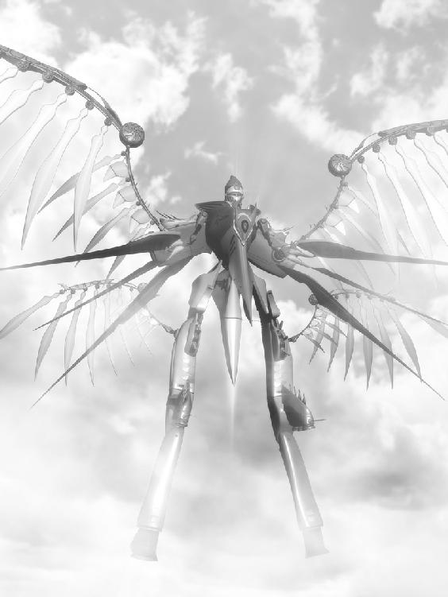
「ソルエルデイル、決戦形態への変形を完了」
「全システム異常無し。主砲ロック、解除されました」
「うぬぬぬぬ、昂って来た......昂ってきたぞ!! アマテラスリング臨界突破！ 広域シールド展開！ 砲身との接続......完了！」
ボルダナが、仮想のトリガーに指をかける。
リズベルルを見て、頷いた。
彼女は、ノルアードにしがみ付いて、緊張に肩を震わせる。
「目標、エコーデュオン大船団！ 主砲・グランドクルス......発射！」
ジンが、ノルアードが、ゼルナードが。
皆が息を飲んで見守る中、ボルダナは引き金を引いた。
凄まじい嵐が、フェヴルートーを襲う。
それはソルエルデイルから放たれた超威力の反動であった。
「広域シールド、限界突破！ 予想以上の衝撃波よ、このままでは街にまで影響が出かねない！」
「バリアコクーン解除。全てのエネルギーをシールドに注ぎなさい！」
「了解。バリアコクーン解除。衝撃、来ます！」
ナーギアの指示でフェヴルートーを覆う光の繭が解除される。ユフィーユが言い終わる前に、月の船を更なる衝撃が襲った。
揺れる船体にどっと汗をかきながら、クルー達は肝を冷やす。この程度で船が沈む訳は無いにしても、不安になった。
ソルエルデイルの主砲、グランドクルスは、本来であれば複数のメテオールの力を一点集中させる超広域破壊兵器である。
今回の場合は、それをソルエルデイル一隻の力で放っている為、本来の威力では無い筈だ。
それでも、この反動。この衝撃。フェヴルートーがエンダージェン内部の防衛に当たっていなければ、衝撃波で建物が崩れるくらいの被害はあった事だろう。
心配なのは、エンダージェンの中だけでは無い。
砲身として使用した水門と、大結界の制御を司るメテオールにも、相当な負荷がかかっている筈である。
「......エルデイル、はしゃぎ過ぎです！ このままだと、大結界に影響が......っ」
フェヴルートーと感覚を一体化させたユフィーユが、青褪めた顔を顰める。
大結界の制御メテオールのミディオムたるシャンロールは、実体を失って不安定な筈だ。
手負いでこの超威力にどれだけ耐えられるか......。
ユフィーユが不安に思っていると、ふと体が楽になった。
まるで、誰かに後ろから支えられている様な......。
「後方、跳躍反応あり！ これは......この反応、ユゴスミネラです！」
フェヴルートーの後方にユフィーユが意識を集中させると、何も無い空に波紋が浮かんで、そこから天空要塞が姿を現す所だった。
「これで償いになるとは思わないが......手を貸そう。この国に生きる、一人として。ミルゥ、シールド最大出力！」
「仰せのままに、エイフォン様」
エイフォンの言葉に微笑んで頷き、ミルゥはユゴスミネラと一体になった感覚を更に広げる。
両手を広げるイメージ。ソルエルデイルから放たれた衝撃波を優しく撫でる様に、受け止める。
スクリーンに投影される、眩い閃光。ソルエルデイルが放った光。
それは中空で球体となったかと思うと、次に十字の残光となり、水門目掛けて放たれている。
次元を貫く砲身に飛び込んだ高エネルギーは、その中で途方も無い距離に引き伸ばされ、光の矢となってエンダージェンを飛び出した。
空間の狭間に浮かぶ大船団を、光が霞める。
大いなる太陽の力は、大船団を見下ろす様に過ぎ去り、遥か遠方で爆発を起こした。
エンダージェンも、大船団も、依然としてそこにある。
違いが出たとすれば、楽園を目指していた筈の船団が、前進をぴたりと止めた事だった。
「......エコーデュオン大船団、尚も健在」
「エンダージェンへの接近......確認できません。成功です」
ブリッジに居たもの、全員がほっと胸を撫で下ろした。
どうやら大船団はこちらの意図を汲み取った様だ。
これだけの戦力を目の当たりにして、疲弊した船団が取る手段は一つしか無い。
撤退、である。
「どれどれ、念を押しておくかのう。え～、マイクてすてす......」
こほんこほんと咳払いし、エルデイルは胸を張る。
「我が名はエルデイル！ 遥か遠き地球で建造された超空間跳躍船、オリジナルセブンが一隻、太陽の船・ソルエルデイルのミディオムなり！ エンダージェンにはお前達全員を救うだけの資源は無い！ 共倒れになりたく無くば、即刻この次元域から立ち去るのじゃ！ もし戦いを厭わぬと言うのなら相手になろう！ こちらには複数のメテオールがついておる！ 警告は一度きり、次は当てるものと思えよ!!」
半ば脅しに近いエルデイルの言葉は、大船団に届いたのだろうか。
暫くの間返答は無く、ブリッジが緊張に包まれたまま数十分が過ぎた。
そもそも、返答があるとしても、それは我々に理解できる言葉なのか、ソルエルデイルが受け取れる通信なのか、根本的な不安が皆の頭を過った時。
スクリーンの映像が切り替わり、乱れた情報の嵐が視覚として届いたかと思えば、次に声がする。
「我々に、争う意志はありません」
若い、女の声だった。
ゼルナードが、アルベルが、ウェスターが、目を見開く。
「速やかにこの次元域から離れる事を約束します。疲弊した我々に、あなた方と争う意志はありません」
まるで機械音性の様だった声が、最後に震える。
皆が息を飲む中で、リズベルルが一歩踏み出して、口を開いていた。
「どうするのですか。あなた達は......これから、どうされるのですか」
「今までと、同じです。我々の信じた楽園はまやかしだった。けれど、希望はあります。ここでは無い、どこか。まだ見ぬ安住の地がある事を信じて、旅を続けます」
「......祈っています。手を差し伸べられなかった代わりに、せめて......あなた達が安らげる場所を見つけられる事を願います」
「人は運命では無く、ただ茫漠たる未来へと臨むべきだ......時に運命に抗う事になろうとも、想いはそれを超えていける。私達はそう信じて此処まで来ました。これからも、きっと」
船団から届く言葉に、リズベルルはあっと息を飲む。
目に涙を浮かべ、こくりと頷き、そして。
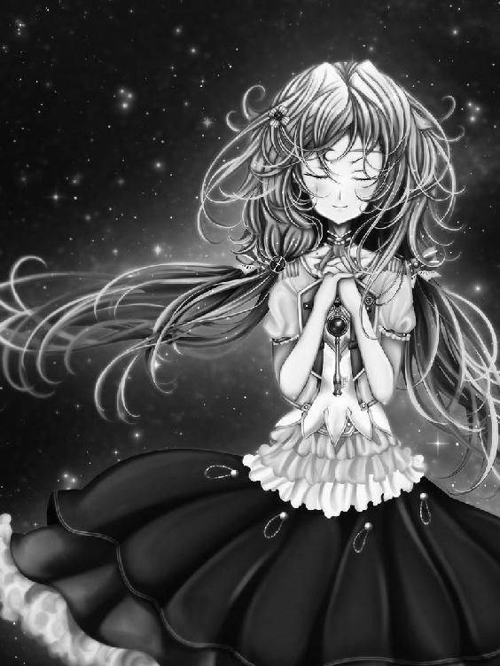
「わた......わたし......私！ 今、幸せです、友達がいて、仲間がいて、愛する人がいて、何処かで私の事を想ってくれている人がいるから！ あなた達の信じた楽園は、救いでは無かったかもしれないけれど、まやかしじゃ無かった！ あなた達には小さすぎたけれど、輝きはありました！ 此処に、この世界に......きっと、もっと大きな輝きも、あなた達を包みこめるだけの輝きも、きっと何処かに......！」
「......知っていました。私は、エンダージェンが楽園である事も......あなたが、幸せである事も......」
女の声は、柔らかく囁いて。
「さようなら......心優しき楽園の民よ。私達は、ずっとあなたを想う。あなたが私達を想ってくれるように......遠く離れていても、私は貴女を想っている......どうか、幸せに......」
そうして、通信は途絶えた。
空に浮かんでいた星の如き光は、日増しに小さくなり、船団は遠ざかる。
何れそれも見えなくなって、青く美しい、いつもの空が戻ってきた。
エンダージェンに訪れようとしていた真の危機は、こうして過ぎ去ったのだ。
争わず、犠牲も無く、ほんの少しの切なさだけを残して。
街は、国は、未だ虚獣との戦いの爪痕を残しつつも、次第に元通りの姿へと戻っていく。
復興で忙しい日々も、平穏が約束されれば充実へと変わった。
人々は、それにもすぐに慣れるのだろう。
慌ただしさも次第に薄れ、日常へと回帰するのだろう。
けれど、忘れない事もある。
どんなにおぼろげでも、忘れない限りその存在が消えて無くなる事は無いのだ。
船団が去って、暫くたち、リズベルルはその日ノルアードの腕に抱かれて眠りながら、昔の夢を見た。
父と母がリズベルルを見つめて、優しげに微笑んでいる夢。
沢山沢山、話しをした。初めから、この時までの事。
ジンと出会い、リズベルルの物語が加速してから、色々な事があった。
出会いも、別れも、たくさん。
「私、ノルアードの事がすき......好きなの。愛している。これからもずっと......きっと、お父さんとお母さんみたいに、幸せになる。ううん、もう幸せ！ だからこの幸せが続く様に、私もがんばるね」
父は光になって大地に溶け、母はリズベルルが見た事も無い乗り物に乗り込む。
別れの瞬間、母はリズベルルに向けて何かライトの様なものを翳そうとした。
それは、魔法の杖だ。頭の中から記憶を除く消しゴム。
杖を遮って、リズベルルは笑った。
忘れる必要はない。自分はもう、乗り越えて行ける。
母は目に涙を浮かべ、頷いて、そうして空の向こうへ飛び去った。
目が覚めると、ノルアードが優しげな瞳でリズベルルを見つめていて、一体いつから見ていたのだろうと少し恥ずかしくなりながらも、その眼差しが父と母の......家族の優しさを思い起こすようで、リズベルルは声を上げて泣いた。
「泣くな、リズ。でも、寂しい時は泣いてもいい」
「どっち？」
「私の前でだけ泣け。慰めてあげる事が出来る」
そうしてノルアードは、リズベルルの額に優しくキスをしてくれた。
こくりと頷き、リズベルルはノルアードの体に腕を回し、ぎゅっと抱き付く。
直に触れる温もり。心臓の鼓動が聞こえてきて、二人は共に胸の奥に確かな実感を見つけるのだった。
幸せの実感を。
アオゾラの墓の前で手を合わせ、オウカは暫くの間心の中で今は亡き小さな友人に語りかけていた様だった。
それが済むと、立ち上がり、振り返れば彼女の表情は何処かすっきりした様に晴れやかで。
「はい、これうちの牧場で作ってるチーズとバター。おみやげ。おいしいよ」
「わ～、ありがとう。冷蔵庫に入れてくる！」
嬉しそうに受け取って、リズベルルは大急ぎで屋敷へと駆けた。
その様子を面白そうに見ているオウカに、ジンは声をかける。
「オウカはずっと牧場の手伝いを続けるのか」
「うーん、どうかな。もう少し落ち着いたら考える。楽しいんだけどね、だんなさんとおかみさんは勿体無いって言うの。自分の好きな事やりなさいって」
「良い人達じゃないか」
「ね」
くすくすと笑い、オウカはちらりとアオゾラの墓を眺めた。
少しだけ寂しそうに目を細める彼女につられ、ジンもそちらを見やる。
「......アオゾラって、なんだったんだろうね」
オウカが呟く。
「皆に聞いてみたんだ。そしたら、王の使者は皆この国に招かれてすぐの時、アオゾラに会ったって」
「迷ってる同郷の奴がいたら、色々教えてやるのが俺の使命だ......そんな事を言っていたな」
「何か、特別な猫だったのかな。私達を導いてくれる......アリスのチェシャ猫みたいな」
その言葉に、ジンは頷く。
不思議な奴だった。それも、とびきり良い奴だ。
アオゾラが秘めた不思議を知る事は、もう出来ない。彼は居なくなってしまったのだから。
リズベルルが戻って来て、よし、とオウカは頷く。
「じゃ、行こうか」
封印球を掲げれば、三人は一瞬にしてソルエルデイルの艦内へと跳躍していた。
他の剣主達は既に揃っていて、クルスネットらと談笑していたノルアードがリズベルルを見つけ、手を上げる。
リズベルルはぴょんぴょん跳ねる様な足取りでノルアードの方へ駆けて行った。
と思ったら、ネムリーの姿を見つけて急カーブ。はしゃぐ二人である。ノルアードは苦笑。
「揃った様じゃの」
エルデイルがお菓子の包みを丸めながらそう言うのに、シズマが尋ねる。
「今日は何の集まりだ。何か重大な話があると言う事だが」
「王城が復旧した。システムも機能は限定されているが使える様になっている」
あっさりと言うエルデイルに、皆驚く。
「なんですって？ では、王は......」
「それをこれから見せようと言うのじゃ」
ディランの言葉ににやりと笑い、エルデイルはぱちんと指を鳴らす。
一瞬にして周囲の景色が変わり、一同は揃って王城へと跳躍していた。
美しい森は、以前よりも広々として見える。
王の大樹が消え、その中に隠されていた象牙の塔も崩壊し、辺りにはその破片と思しき残骸が転がっていたが、つい先日出来た筈のそれは早くも風化し始め、土に戻りかけていた。
触れてみると、がさりと音を立てて崩れ落ちる。
戦いの爪痕。
「王は依然......死んだままか」
落胆の声が上がれば、エルデイルは肩を竦めて、そして、森の奥を指差した。
がさり、と生い茂った草が揺れる。
その奥から、何か小さな生き物が......歩いてきた。
殆どの者は肩を落とし、けれど一部の者達は目を丸くする。
「おいーっす」
ぽてぽてと歩いてきた、その獣。
四足で、尻尾をくねらせ、耳をぴょこぴょこ動かしてやってくるのは。
灰色の毛並みの、青い瞳の猫である。
「お、揃ってんな～」
ヒゲを揺らしながら偉そうに呟く猫に、ウルグスははっとして、ノルアードは絶句する。
「この声、貴方はもしや......！」
「......猫が、喋った」
ごくりと喉を鳴らす剣主達。
その一方で、リズベルルは信じられぬとの表情でぽつりと呟いて。
「......アオゾラ？」
「おーっすリズ。元気してた？」
「......アオゾラだっ!!」
駆け寄り、膝を付いてリズベルルは手を広げる。
仕方が無いにゃあ、と面倒くさそうにしながらも、やはり喜びを隠せぬ仕草でアオゾラはそんな彼女に飛びついた。
ジンも、シズマも、そしてオウカも、それを見つめる他無い。
......俺の悲しみを返してくれ、とジンは笑った。
「おい、お前！」
「順番、順番だぜ！ 次はジンに抱き付いてやるからさ」
「いらん。それよりも説明しろ！ お前......なんだ、あれは、フリだったのか？ 死んだフリか？」
「いや、死んでたよ。リズの家の庭には前の俺が埋まってる筈だし」
「どう言う事だ、お前はアオゾラでは無いのか？」
「俺は俺だし。って言うかさ、こっち注目」
ぴょん、とリズベルルの腕から抜け出したアオゾラは、ぽてぽて歩いていって地面から生えだしている植物の芽を肉球で指す。
皆がぞろぞろとその芽を囲む様に覗き込めば、お喋り猫は言った。
「芽です」
「......おお」
「王の芽です」
一瞬遅れて、皆が首を傾げた。
「これがまた育つと、大樹になる訳。幹は死んだけど、根は残ってるから。ぶっちゃけ余裕で直るんだわ、王って奴は」
なんだって、と皆愕然とした。
「で、こっちがオリンの卵」
そうしてアオゾラが芽を傷つけぬ様優しく根元を掘り返すと、そこには真っ白な手のひら大の卵が埋まっているではないか。
シズマは服が汚れるのも構わず膝を付いて、食い入る様に真珠の如き卵を見つめた。
「オリンの卵だと？ いつ生まれる？」
「もうすぐ生まれるけど、そっとしといてやってよ」
「生まれたオリンは......前と同じオリンなのか？」
「前のオリンは死んだけど、次生まれてくるのもオリンだし」
「......そうか」
その声には、深い安堵の色があった。
ジンはシズマの肩を叩く。立ち上がった親友は、少しだけ目を潤ませて微笑んでいた。
「それで、俺は打ち明けなきゃならないんだけど。と言うか俺自身忘れて居た様な、いつでも知って居た様な、それでいて思い出せなかった様な曖昧な状態だったんだけど」
「なんだ、はっきり言え」
「俺って、王なんだよね」
王？
「......それは、この国で暮らす猫の王様とかそう言う......」
「いや、違う。そのままの意味で、俺は王だった訳」
「じゃあこの芽はなんだよ」
「王の芽」
「お前は？」
「王」
ジンとシズマは腕を組み、うーむと首を傾げる。
「要するにお前はこう言いたいのか、自分は王であると」
「だからそう言ってるじゃん！」
憤慨し、立ち上がってじたばたするアオゾラであった。
ああ、アオゾラだ。
こんなに器用な猫は、このエンダージェンにもこいつしか居ない。
「まあ、俺は王の端末と言う感じかな。とは言え、一番重要な。王はこの国に根差して動けない。それで、俺は国を見守る役割として居た訳。言わば、王の眼、的な。実はレギオンもそうなんだよね。俺よりも大分自然に溶け込んでいるけど」
「しかし、お前は地球産の猫だと言ったじゃないか。あれは嘘か」
「嘘じゃないでしょ。王だって地球から来たんだし。でまあ、今回王は虚無の浸食を受けてしまった。それって言うのは、王は割と昔からほんのりと自覚していたんだよね。だから、自分の分身をレギオンに混ぜて放った。それは分散された予備の王だ。虚無が断たれた今、王は死に、その予備を使って新たに生まれ変わろうとしている。レギオンは生き物だ。何れ死ぬ。そうして、彼らの肉体は腐り、分解され、地に還る。土に溶け込んだ生体素子は、王の根を伝ってこの王城へ戻ってくる。それを吸い上げて、王の芽は何れ元の大樹となる......その仕組みを起動させる鍵が、俺だった。俺が死ぬ事で、王は新たに芽吹いた訳だ」
「......じゃあ、お前は何なんだよ」
「俺はやっぱりアオゾラだよ。この国を見守り、招かれし者達に最初のガイダンスをする可愛い猫ちゃん」
「アオゾラは、私の事......私達の事、覚えてるんだよね？」
「まぁね。ソフトは引き継いでる。ハードは、厳密に言えば別物だけど。っていうか俺前よりパワーアップしちゃったし。リズ、気付かない？」
「......言われてみれば」
アオゾラを持ち上げて、リズベルルは神妙な顔でジンを見る。
「前より重い気がする......心なしか、大きい様な気も......！」
パワーアップして太ったらしかった。
「アオゾラ、戻って来たんだ！」
「うん。ま、やっぱ俺が居ないとはじまらないとこあるしね」
「うんうん、おかえり......アオゾラ！」
アオゾラをぎゅーっと抱き締めるリズベルル。
その腕の中で、アオゾラはまたしても死にかけていた。
「くるしいくるしい！ 苦しいってば、リズ！」
「アオゾラ二世！」
「うげー」
もがき、ぽてっと地面に落ちるアオゾラを、ジンもシズマもオウカ達も、こぞってわさわさ撫でる。
全く、心配させやがって。皆、笑顔だった。
「う、う......はっ！ まだ伝える事があったんだ！」
ぴょーんと飛びあがり、まん丸の目を見開いて、アオゾラはジンとシズマの顔に猫パンチを放つ。
何故俺達だけ......と鼻を押さえる黒髪の二人。
アオゾラはまたしても土を掘り返し、そこから出土した封印球を転がせば、光が弾けてそれは数人の剣主達の懐に飛び込んだ。
受け取った者達は懐の封印球を押さえて、はっと気付く。
「これは......先の戦いで失った宝剣！」
「自己修復が済んだから返すわ。お前ら、これで終わったと思うなよ」
悪役の様な台詞を言うアオゾラである。
「確かに大きな虚無の波を、お前達は退けた。けれど、光ある所に闇が生まれる様に、虚無は......潰えた可能性は人が未来へ進む限り何度でも生まれるものだ」
「何れまた、虚無がこの世界を襲う......と？」
「そう。これは時空の狭間に浮かぶエンダージェンの宿命だ。お前達剣主は、この国を守る為に戦わねばならない。これからもずっとだ。そして、もう一つ」
「まだあるのか」
「先の戦いで大結界に歪が生じ、外界へのバイパスがいくつも出来てしまっている。時空の抜け道だ。例えば、以前ウルグス・ネスラが通ったエコーデュオン、ジン達の時代への道。こう言うのが地味にそこかしこに出来ている。これを埋めなければならない」
「俺達で、か」
「そう。埋めるには、一度向こうの世界に赴いて、穴を塞ぐ必要がある」
「そりゃあ相当厄介だが......」
にやりと笑みを浮かべ、視線を寄こすボルダナに、うむ、と元気良くエルデイルは頷いて。
「我らメテオールの超空間跳躍なら時空を超えた行き来も可能じゃ！ ふむん、これは別れの時は先送りになりそうじゃな！」
「じゃ、私ももう暫く艦長続けて良い訳ね。フェヴルートーって結構居心地良くて、気に入ってたから嬉しい」
「ふふ、頼りにしていますよ。ナーギア艦長」
微笑み合うナーギアとユフィーユは、先の戦いを乗り越えすっかり打ち解けた様子である。
使命感を新たにする皆に、うむうむと偉そうに頷いて、アオゾラはそうしてぽてぽて歩いていってしまう。
森の、奥深くへと......。
「アオゾラ、どこいくの？」
「ふ......俺は誰にも飼われない。孤高の猫なのさ......さらばリズ、さらばジン、さらばシズマ、そしてオウカ、皆さん......さようなら。また会う日まで......」
「また、すぐに会えるよね!?」
「会えるさ。きっとすぐ、何処かで......また、な！」
何処からとも無く、白い霧が湧いてくる。
アオゾラの小さな体は、白霧に包まれて見えなくなった。
リズベルル達は暫くその背中が消えて行った方角を見つめ、立ち尽くしていたが、やがて一つ頷くと、ソルエルデイルを介して自分達の街へと帰っていく。
皆に手を振って、ジンとリズベルルは屋敷へと帰って来た。
せっかく再会できたと思ったのに、アオゾラは何と薄情な奴か。
この広い屋敷に、二人では結構寂しいのだ。
次見つけたら、首根っこを掴んで持って帰って来てやるぞ、と二人が屋敷の扉を開ければ。
「おーっす」
アオゾラが居た。
「お前......っ」
「跳躍解禁されました。もうこれで何処へも行き放題。すごいよ～、すごいよ俺は！」
踏ん反り返るアオゾラに、ジンとリズベルルは顔を見合わせて。
声を合わせて、言うのである。
「おかえり、アオゾラ」
灰色猫はにゃーんと答えた。
「新たなる王の兆し......か」
シェラダンの水門を見つめ、ゼルナードは一人呟く。
あの日から、こうして時折彼はこの場所を訪れて、想いを馳せた。
今もこの国を、孤独に外から見守っているであろう、シャンロールへと。
「お前を孤独にさせたのは、この私だ......お前が一人で無い事を、思い出させてしまったのだから」
時空の狭間を彷徨っていたゼルナードを見つけ、シャンロールが声をかけて来たのはほんの戯れだっただろう。
けれど、言葉を交わし、一人から二人になった時、シャンロールは自分が大きな過ちを犯したと気付いたのでは無いだろうか。
一人で世界を見続ける事が苦で無かった自分の中に、他人の存在が割り込んで、それがいつしか孤独の影を孕んだ事を。
「......何れまた、この国に亀裂が走るだろう。お前から貰ったこの命、この国を守る為に使おうと思う」
腹を撫でて、ゼルナードは水門に背を向ける。
とん、と軽い足音が聞こえて、歩をとめた。
「いやですわ、旦那さまはいつも誰かの為にと自分の命を軽く扱う。どうせ使うのなら、私の為に使ってくださいな」
ゼルナードは息を飲んで、ゆっくりと振り返る。
視線を、静かに落とし。
「......だいぶ、縮んだのではないか」
「急いで此処まで成長したんですのよ。少し大目に見てくださいな。若い方が良いと思ったのですけど、あんまり若過ぎてもいけないかと思って、ヤキモキしましたわ。一刻も早くお会いしたかったんですもの。でも、流石に赤ん坊の姿で現れる訳にもいかないでしょう？」
ほのかに揺れる霧を纏って、少女は笑う。
白紫の髪が解け、広がり、その金の瞳には確かな面影があった。
いや、彼女自身なのだ。
シャンロールが、そこに居た。
「......旦那さま、何か仰ってくださいな」
「......見つからない。言葉が。こう言う時......いや。飾るのはよそう。シャンロール......なのだな？ 私の知る......シャンロールなのだな」
「前と違う所もありますわ」
シャンロールはそうして、ゼルナードに駆け寄ると、ぎゅっと抱き付く。
ほっそりとしたその腕を、愛する者の体に回す。
「こうして、貴方を......私の腕で、抱きしめてさしあげる事が出来る」
「良く、戻って来てくれた......っ」
シャンロールを包む様に、ゼルナードもまた手を回し。
二人はお互いの温もりを確かめあった。
再会が、夢で無い事を知る為に。
ぱらぱらと、本のページが捲れる音。
「は～、なんとか大団円って感じ。まったく、最後まではらはらさせてくれちゃって！」
竜の紋章があしらわれた赤い本を抱え、遥か遠き理想郷の物語を見守っていたイユレールは、胸一杯の満足感にほうっと息をつく。
終わったのだ。また、一つの物語が。
「今度の物語には、また随分と入れ込んでいた様子ですな」
「本当よ、思わず物語の中にまで声をかけちゃったくらい」
「わーん、私も応援、したかったよ～」
お茶を運んできてくれた司書......の様なもの、コルグストムが微笑みかければ、お菓子の籠を下げてふよふよと飛んできた機械妖精ミューメルは羨ましそうに声を上げる。
ふふ、と笑みを浮かべ、お茶を口に含み、お菓子を一口齧ると、イユレール姫は少しだけ遠くを見る様な眼になって。
「長い......物語だったわ」
その余韻に浸る様に、呟くのだった。
「まったく、司書さんってば、ずっと黙っていたのね」
そうして立ち上がって、イユレールはコルグストムの紺碧をした長い髪にそっと触れ、かきあげる。
ずっと髪に隠れていた右の目は、穏かに細められる左眼とは違う色をしていた。
「はてさて、一体何のことやら」
「とぼけたって......いいえ、良いわ。この事は、私の胸の中に仕舞っておきましょう。何れ、退屈した時に尋ねる事もあるかもね」
「ふふふ、おや......ふむ」
何かに気付いた様に首を傾げ、いつもの懐中時計を取り出して、コルグストムは悪戯っぽい視線をイユレールに送る。
名残惜しい気持ちでイユレールが彼の言葉を待てば、その口から飛び出したのは思いがけぬ台詞だった。
「どうやら閉館時間まで、まだ間があるようですな」
「驚いた、サービスって事かしら」
「わくわく」
くすりと笑って、イユレールは赤い本を抱え直す。
ミューメルが目を輝かせるのに、イユレールもまた期待を胸に、その表紙を捲って......。
「結婚する」
シズマの口からその言葉を聞かされて、ジンは大いに驚いたものだった。
その相手がマールだと言うから、ますます驚く他無い。
一体全体いつの間に、とたまげると、随分前から、と照れ臭そうに言うものだから、ジンは親友の事を少しだけ恨めしく思ったものだ。
こいつめ、何の相談も無しに、やる事はちゃんとやっていた訳だ！
「俺だけ、置いてかれた感じがするな」
呟くジンは、何処か落ち着かず、先程花屋で買った花束を右手に持ったり左手に持ったり、両手で持ったり抱え直したりしながら、ひどく緊張した胸を押さえる。
虚無の王との戦いでだって、こんなに緊張はしなかったぞ、と思えば、ジンは自分に苦笑するのだ。
女性をデートに誘う。
心得の無いジンは、リズベルルやノルアード、そしてネムリー達に色々と尋ねて学んできた。
ところが彼らと来たら自分達の事ばかりで、ジンは延々と惚気話を聞く羽目になったのである。
「女性は花。語りかけ、音楽を聞かせ、時に褒める。花には花です。デートの時は花束を欠かさずに。そして、最後に必要なのは情熱！ 例え相手が嫌がっても、強引に迫れば......ふ、美味しい蜜は貴方のもの」
唯一攻めの姿勢で参考になったのはフルーナの言葉くらいだ。
ぺらぺらと良く喋るフルーナに、成程な、とジンは感心したものだった。
こう言う時は、やはり強気で無くてはならない。相手だって、弱気な男に誘われたって嬉しく無いに決まっている。
強気、強気で行こう。
ジンは表情を引き締めた。ちなみに先の言葉を言い放った後、フェアルージュ三騎士が一人フルーナ・ノルミネはネムリー様によってぼこぼこにされていたが、気にしない。
「......む」
ショーウィンドウのガラスに映った自分を見つめる。髪なんか弄ってみたりして。
正装を、と思って騎士服を着て来たが、これは良く無かったかもしれない。ジンは途端に不安になった。
花も......ちょっと大げさでは無いか。大体、これからデートなのに、こんなの邪魔になる。くそう、フルーナめ。
「おばちゃん、これあげる！」
通りかかりのおばちゃんに花束を押しつけて、ジンは早足になった。
背中に何か声をかけられたが、振り返らない。そんな余裕はない。ちらりと腕時計に目を落とすと、約束の時間は過ぎていた。
「やばっ、遅刻！」
ジンは駆け出している。
いきなり失敗しているが、今日は心に決めて来た。
彼女に、想いを伝えようと。
いい加減、先延ばしにして呆れているかもしれないが、まぁそれもご愛嬌だ。
案外そう言うのが、俺らしい。
ぎこちなかった体は次第に温まり、生き生きとした表情で、ジンは駆ける。
ぱらぱらと、ページを捲る音。
彼が、果たして誰を選んだのかは、あなたの心の中に......。
「わぁ、お父様、お母様、みてみて、ヴィルフォーナ！ ほら、背中にクオンが立ってる！ あ、こっちに手を振ってる！ おーい、クオン！ は～、にい様にも見せてあげたい。閉じこもってないで、アーノルドも見に来れば良いのにっ」
ぴょんぴょんと跳ねながら、少女は青い空を横切っていく白銀の竜に手を振った。
寄り添いながら歩いてきた父と母は、どれどれ、と少女の視線を追う様に空を窺い、ヴィルフォーナの姿を見て眩しげに目を細める。
竜の背には、手綱を引いて立つ黒髪の少年。どうやらまだその扱いに慣れぬ様子、おっかなびっくりと懸命に竜を従えていた。
時折少年はバランスを崩して膝を折り、その度に見守る少女ははらはらと胸を押さえている。
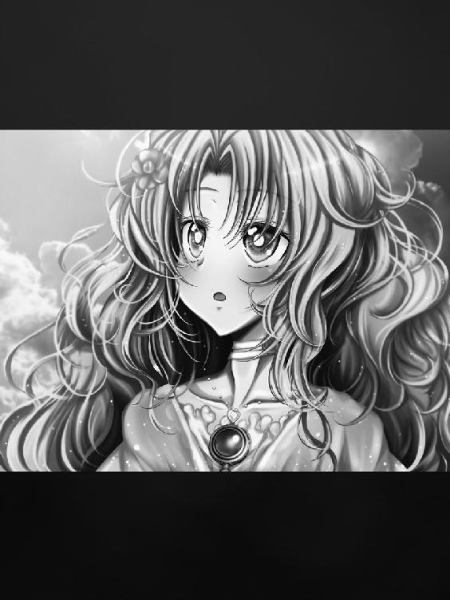
「わわ、クオンってば大丈夫かな？」
「大丈夫、ヴィルフォーナは優しいから」
「うん！ は～、クオンが早くほんとうのヴィルフォーナの騎士様になってくれたらな～。そうしたら、私も背中に乗せてもらうんだ。約束してるの。まずはフェアルージュに行って、マルネットを誘うでしょ、それからメルディーノの湖の上を飛ぶの。他にも色んな所にいってみたいな」
「大冒険だな」
父が穏かに微笑むのに、少女はころころと笑みを返す。
愛おしそうに娘を見つめた後、父と母は顔を見合わせてこくりと頷き、それから膝を折って少女と目線を合わせる。
母は首から下げていたペンダントを外して、少女の首にかけてくれた。
「１３歳の誕生日、おめでとうララベルル。これはお母さんとお父さんから、貴女へのプレゼント」
「え、これ......お母様の宝物でしょう？」
「そう。私のお父さん......貴方のおじい様から頂いた大切なものよ。丁度、貴女と同じ歳の頃だった......」
「そんなに大事なもの、貰っても良いの？」
「大事なものだから、大事な人に託すの。大切にしてね、私の可愛いララベルル」
「わぁ、ありがとうお母様、お父様！」
ララベルルが手を広げると、母と父はそんな娘を抱きしめて、それぞれ頬にキスしてくれる。
ころころと笑いながらララベルルは胸元のペンダントを取り上げ、光にかざした。
美しい硝子球が嵌めこまれた、それは封印の鍵だ。
青い空を映しこんで、それ自体も青く輝いて光っている。
「ララ、もう一つ私達から贈るものがある。愛する我が娘に、この言葉を贈ろう」
そうして父は、目を閉じて、とても大事な宝石箱からその言葉をそっと取りだす様に、語るのだった。
「人は運命では無く、ただ茫漠たる未来へと臨むべきだ。時に運命に抗う事になろうとも、想いはそれを超えていける......」
「どういういみ？」
「何かを大事に想う気持ちが胸にあれば、どんな困難でも乗り越えて行ける......そう言う意味よ」
「大事な、気持ち......」
「そう。そして、この言葉も覚えておくんだ。良いかい？ 海を断ち......」
「それは判る！ お母様がいつも言う、魔法の言葉だ！」
そうね、と母は笑みを浮かべ、頷き。
親子は共に声を合わせて、その詩を唱えるのだ。
「海を断ち、天舞う音色......鳴り響け、デュオンと共に」
ころころと、笑い声が弾けて。
「いい、ララ。貴女が誰かを愛する時、その心はデュオンとなって世界に響く。愛を以って、その封印の鍵に願いを込めれば、ヴィルフォーナはきっと応えてくれるわ」
「愛する人を想えば、ヴィルフォーナが......それって、クオンの事？ クオンを大事に思えば、ヴィルフォーナに乗れるの？」
「さあ、それは判らないな。ララはクオンが好きなのかい？」
「クオンの事は好き！ だって、友達だもん！」
「ふふ、そうね。でも、貴女が一番に想う人が、いつかきっと現れるわ。それはクオンかもしれないし、これから出会う別な誰かかもしれない。でも、そんな人を見つけたら......」
「見つけたら？」
「大事になさい。その人を。貴女の心を......」
母の言葉は、ララベルルには少し、難しすぎた。
誰かを愛する気持ち。それを見つけた時、ララベルルの胸にもデュオンが宿る。
それはとても重要な事に思えた。この鍵と共に、母と父の言葉を大事にしよう。ララベルルは心の中でそう誓う。
「お母様は、いつからお父様を愛していたの？」
「そうねえ......貴女くらいの頃には、もう愛していたわ。ずっとずっと、好きだったのよ」
「そんなに早くから!? 私、だいじょうぶかな～」
封印の鍵を握りしめ、驚くララベルルに、両親はくすくすと笑い合いながら。
「焦る事は無いさ。ゆっくり探せば良い......ほら、ヴィルフォーナが降りてくるぞ」
「行ってらっしゃい、ララベルル。大冒険には早いけれど」
「え、え!?」
「クオンったら、朝から張り切っていたのよ。ララベルルをヴィルフォーナの背に乗せてあげるんだって。それでずっと練習していたんだから」
「クオンが......」
ゆっくりと降りてくる白銀の竜。
その背には、少しだけ畏まった顔の幼馴染の男の子。
ララベルルは、何だかどきどきしはじめた胸を押さえて......そうして思うのだ。
このどきどきの意味が判った時こそ、デュオンが響き始めるその時なのかもしれないと。
ぱらぱらと、ページが捲れる音。
こうして、物語は続いていくのだ。
この、はてしなき、ほんとうの物語は、あなたがその世界を想えば、いつだってすぐ傍に開かれる。
あなたがデュオンを忘れぬ限り。この私が保証しよう。
「そう、物語の出来事は、全てあなたの想像の中で起こった。けれど、想像と創造を区別する事に意味などない」
コルグストムの言葉に、あなたは頷いた筈だ。
何故なら、これはほんとうの物語。
此処では無い何処か、今では無いいつかの物語。
招かれし者よ。物語を経て、今こそあなたはそのほんとうの意味に気付いた事だろう。
ほら、耳を澄ませば......本のページを捲る音が。
あなたを見守る、誰かの視線も......。
物語は、はてしなく続いていく。
遥か遠き理想郷、エンダージェン国の物語も、そしてあなたの物語もまた、等しく紡がれていくのである。
「さて、本当に閉館の時間が迫ったようです。語り過ぎにはご注意を、物語を損ねたく無ければ、ね」
コルグストムはふっと笑って。
「いずれまた、お会いしましょう」
物語の扉は、ぱたんと音を立てて閉じられる。
＜リズベルルの魔・完＞
著者/イラスト/企画・制作 ときてっと
2016年10月 kindle版 発行
「黄昏の君 ヴォルフィーネ」
世が闇に覆われし時、救世の騎士 深き眠りより目覚める
「ここ」ではない「どこか」、「いま」ではない「いつか」のお話......。
真昼の国と月の国、二つの大国は争うさだめ......。
天の至宝「太陽球」
真昼の国がそれを持てば、世界は昼に。
月の国がそれを持てば、世界は夜に。
そして、真昼の国の王女フィモシーの誕生日......。
突如として真昼の国に攻め込んできた月光王の手によって、世界は闇に包まれる。
一人逃げ延びたフィモシーに、吟遊詩人ヴィルヘムは語る。
月光王を打ち倒し、世界に光を取り戻すには、かつて世を滅びから救った救世の騎士
「黄昏の君」の力を借りるよりほかに方法は無い、と......。
真昼の国を救う為、かくしてフィモシーは救世の騎士 黄昏の君の召喚を決意する。
伝説が今、蘇る......
「ツチノコ探検隊～みゅうがいた夏～」
―僕らの、最後の、ほんとうの夏― 不思議な予感のする夏を特別なものとする為に、セイは幼馴染のツムギ、親友のカイチと共に〝ツチノコ〟の自由研究を開始する。
突然現れた謎の少女みゅう、更には秘密結社の構成員を名乗る不審人物シズマ、ぬいぐるみロボットのダンテスを研究チームに加え、セイ達は不思議を追う。
この夏の出会いが、やがて人類に新たな可能性をもたらす事も知らずに......。
「僕らはその夏、ふしぎと出会った」
未確認生物・宇宙人(?)・秘密結社――最高の自由研究がはじまる。
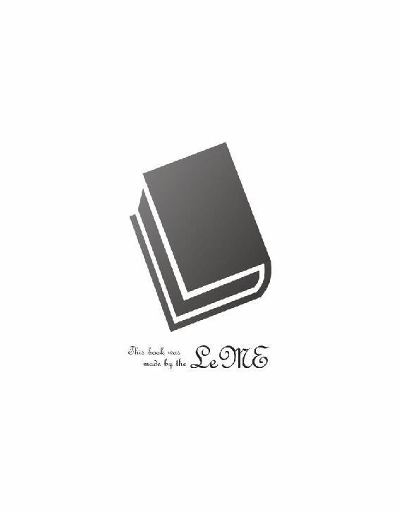